Um paciente idoso acamado apresenta distensão abdominal importante e ausência de eliminação de atos e fezes. Solicitada a radiografia a seguir: Qual o diagnóstico provável?

A Vólvulo.
B Fecaloma.
C Neoplasia.
D Hérnia interna.
Está indicado a colecistectomia em paciente com colelitíase assintomática:
Homem, 56 anos de idade, vítima de traumatismo cranioencefálico grave, evoluiu com sequelas neurológicas importantes, apresentando di culdade de deglutição com consequente episódios de broncoaspiração. Por esse motivo, está com dieta por sonda nasoenteral há 6 semanas. Não houve melhora do quadro clínico. Qual é a via de alimentação mais adequada para esse paciente, nesse momento?
Paciente de 49 anos de idade está sendo submetida a uma histerectomia total devido à miomatose uterina. Foi realizada a retirada do útero e a cúpula encontra-se aberta. Qual o o você usaria para realizar o fechamento da cúpula vaginal?
Homem de 36 anos, vítima de queimadura por chama, há 5 dias, acometendo cerca de 35% da superfície corporal, com história de queimadura de via aérea e necessidade de ventilação mecânica. Há cerca de 4 horas, iniciou com episódios de hematêmese. O diagnóstico provável é:
Menino de 5 anos, 22 kg, com história de abaulamento redutível junto ao anel inguinal direito. Ao exame, está em BEG, corado, hidratado, ativo e reativo. O melhor tratamento é:
Homem de 26 anos, com múltiplas crises de litíase renal, é submetido a uma tomogra a computadorizada que descreve um cálculo de 1,8 cm de diâmetro, em polo superior do rim, com 850 unidades Houns eld. Qual é a melhor conduta terapêutica?
Assinale a alternativa incorreta quanto à anatomia das vias biliares.
Paciente masculino, 26 anos, vítima de acidente automobilístico (auto x poste), admitido no pronto-socorro com queixa de dor em região pélvica. Ao exame: vias aéreas pérvias, MV +, sem ruídos adventícios, SatO₂ = 98%, PA = 120 x 70 mmHg, pulso = 100 bpm, Glasgow 15, abdome doloroso na região suprapúbica. Apresentou diurese espontânea com hematúria. Realizado FAST na sala de trauma que evidenciou líquido livre na pelve. Radiogra a de tórax: sem alterações. Radiogra a de bacia: fratura do ramo isquiopúbico à direita. Qual é a principal hipótese diagnóstica e a conduta nesse caso?
Paciente feminina, 40 anos, refere dor abdominal recorrente em região de hipocôndrio direito relacionada à ingesta de alimentação gordurosa, acompanhada de icterícia leve. Nega febre associada. Exame físico: estável hemodinamicamente; ictérica (1+/4+), abdome ácido, pouco doloroso em hipocôndrio direito, Murphy negativo. Ultrassonogra a (US) de abdome superior: vesícula biliar com paredes nas, contendo cálculo de 2,5 cm no infundíbulo, imóvel; dilatação de via biliar até nível de ducto cístico, sugestivo de compressão extrínseca. Qual é a principal hipótese diagnóstica e a conduta mais adequada?
Com relação aos cistos biliares, é correto afirmar:
Paciente feminina com 54 anos de idade procurou a Unidade Básica de Saúde para atendimento. Refere que, há um ano, apresentou abscesso na região perineal que foi drenado em pronto-socorro. Desde então, apresentou uma ferida próxima ao ânus, que eventualmente apresenta saída de secreção purulenta, com odor fétido. O exame da região perianal evidenciou orifício cutâneo a 2 cm da borda anal, na região anterior direita do períneo. Toque retal sem alterações. Após a compressão local, houve saída de secreção pelo orifício cutâneo. Com base na história clínica e nos dados do exame físico, o diagnóstico e a conduta adequada são:
Lactente do sexo feminino com 1 mês de vida é trazida pelos pais ao pronto-socorro, pois está vomitando e chorando muito há 8 horas. Ao exame, apresenta distensão abdominal com aumento dos ruídos hidroaéreos e abaulamento inguinal à direita com sinais ogísticos. A partir do quadro descrito, assinale a alternativa correta.
Homem de 36 anos sofreu queimadura após a explosão de um tonel de combustível. Ao exame físico, encontra-se consciente, com fácies de dor, taquicárdico e algo hipotenso. Ao exame físico, apresenta queimadura de terceiro grau em todo o antebraço esquerdo e em parte da face. Também apresenta lesões de segundo grau em tronco anterior. O paciente queixa-se de dor, parestesia e paresia da mão esquerda, apesar da ausência de queimaduras dessa estrutura. Considerando o caso descrito, assinale a alternativa correta.
Homem de 60 anos, hipertenso, tabagista e dislipidêmico, procura pronto-socorro por dor em pé e perna direitos, de forte intensidade, há 3 horas. Ao exame físico: PA de 150 x 95 mmHg, FC de 98 batimentos por minuto. Há gradiente térmico e palidez no membro da queixa. Os pulsos poplíteos, tibial posterior e pedioso à direita são ausentes, e os demais, presentes. A hipótese diagnóstica e o tratamento são, respectivamente:
Considerando as feridas complexas, de modo geral, podemos a rmar que o cirurgião usa o princípio de complexidade crescente, ou escada da reconstrução, quando avalia as possibilidades de fechamento da lesão. Baseando-se nesse conceito, assinale a alternativa correta.
Lactente de 10 meses de idade, pesando 10 kg, foi vítima de queda do berço, com trauma craniano presenciado pela mãe. Na admissão ao pronto-socorro, apresentava vias aéreas pérvias, MV +, sem ruídos adventícios, FC = 112 bpm; PA = 100 x 65 mmHg; FR = 30 irpm e saturação de oxigênio de 94% em ar ambiente, Glasgow 07, pupilas anisocóricas e fotorreagentes. Abdome ácido. Ofertado O₂ através de máscara não reinalante pediátrica e puncionado acesso venoso periférico em membro superior direito. Com base no ATLS, qual é a próxima conduta a ser tomada?
Paciente feminino, 33 anos, vítima de acidente automobilístico (motorista do veículo) após ingesta de álcool (carro x árvore), levado pelo SAMU ao pronto-socorro municipal, em prancha e com colar cervical. Exame físico: agitada, vias aéreas pérvias, MV ausente em hemitórax esquerdo e com timpanismo à percussão, SatO₂ 82%, FC 140 bpm, PA 80 x 50 mmHg, abdome ácido sem sinais de peritonite, pelve estável. Qual é a conduta imediata nesse caso?
Paciente do sexo masculino, 65 anos, foi internado para procedimento cirúrgico de revascularização do membro inferior direito, por intratabilidade clínica de doença arterial crônica periférica. Nesse caso e de acordo com as etapas preventivas preconizadas para a segurança do paciente pelo Programa Nacional de Segurança do Paciente, estabelecido pela Portaria nº 529/2013, do Ministério da Saúde, as ações preventivas a serem realizadas antes da incisão na pele (“time out”) são:
Paciente de 23 anos, sexo feminino, admitida com dor abdominal em fossa ilíaca direita há 2 dias, associada a febre não aferida, anorexia e dois episódios de diarreia. Refere episódios semelhantes nos últimos 6 meses. Ao exame físico: abdome doloroso em FID, com sinal de Blumberg positivo. Indicada a laparoscopia diagnóstica, que evidenciou hiperemia do íleo terminal e apêndice cecal sem alterações. Qual é a conduta nesse caso?
Durante a cirurgia para correção de uma hérnia, o cirurgião realiza uma inguinotomia exploradora. Ao dissecar o saco herniário, percebe que sua base emerge medial aos vasos epigástricos inferiores, dentro do triângulo de Hasselbach. Qual o tipo dessa hérnia?
Em consultório de um cirurgião, o paciente questiona sobre as técnicas para tratamento cirúrgico e endoscópico para obesidade. Qual dos procedimentos descritos é classificado como restritivo e disabsortivo?
Um paciente idoso acamado apresenta distensão abdominal importante e ausência de eliminação de atos e fezes. Solicitada a radiografia a seguir: Qual o diagnóstico provável?
Em um hospital terciário, um paciente de 65 anos, cirrótico por alcoolismo, apresenta hemorragia digestiva com hematêmese importante e melena. Ao ser admitido, observa-se hipotensão e palidez. O paciente é encaminhado a UTI para ressuscitação volêmica, transfusão, estabilização e terapia com vasopressina. Agora, apresenta-se estável. Porém, o sangramento ainda persiste na SNG. Considerando todas as terapias disponíveis, qual deve ser realizada a seguir?
Trata-se de um divertículo gastrointestinal verdadeiro pois contém todas as camadas da parede do tubo digestivo. De qual divertículo o conceito acima se refere?
Qual das seguintes neoplasias do esôfago vem aumentando drasticamente sua incidência nos últimos 30 anos às custas da elevada prevalência de DRGE, esôfago de Barret e obesidade?
Homem de 27 anos, vítima de ferimento por fuzil, no tórax, é submetido a drenagem torácica na emergência. O conteúdo é predominantemente hemático, cerca de 900ml, e ainda espumoso com aspecto salivar. O paciente está hipotenso, após hidratação e transfusão. Qual a conduta nesse caso?
Homem de 43 anos realizou uma tomogra a abdominal devido a uma dor em anco direito. Esse exame evidenciou um nódulo em polo superior do rim direito com captação de contraste medindo cerca de 4 cm sem plano de clivagem com cálices renais. O paciente é hígido e trabalha em uma fábrica de telhas de amianto. Qual a terapia mais adequada para esse paciente?
Paciente de 60 anos, portador de doença do re uxo gastroesofágico há 10 anos. Durante realização de endoscopia de controle, teve o diagnóstico de Esôfago de Barret. A biópsia confirmou o diagnóstico e não evidenciou sinais de displasia na amostra examinada. A conduta adequada para o caso é:
Paciente masculino de 55 anos, previamente hígido, sem comorbidades, sem histórico familiar de neoplasias, refere que apresenta pirose diária há 4 meses, sendo mais frequente na madrugada. A rma ter alívio parcial com hidróxido de alumínio. O médico da UBS solicitou endoscopia que evidenciou esofagite erosiva grau B de Los Angeles, associada à urease positiva na pesquisa de relação ao
Durante um atendimento ambulatorial, o médico identi cou uma hérnia inguinal anunciada através do triângulo de Hasselbach. Qual hérnia o médico identificou?
Paciente com colelitíase de início de dor no quadrante superior direito há um dia. Ao realizar um ultrassom, foram observados sinais de colecistite aguda calculosa. Sobre a colecistite aguda, é correto afirmar:
É fundamental reconhecer as síndromes ictéricas em pacientes portadores de colangite aguda, pois o diagnóstico precoce é importante no intuito de evitar sepses. Assim, a clássica Pêntade de Reynolds se caracteriza por icterícia e dor em quadrante superior direito do abdômen, além de
Paciente do sexo feminino de 25 anos, portadora de colelitíase, chega ao pronto atendimento com dor abdominal há 1 dia. A dor é difusa pelo abdome com sinais de irritação peritoneal, refere vômitos intensos e persistentes mesmo com o uso de anti-heméticos. Após realizar exames, constata-se amilase de 2.250 U/L, leucocitose de 16.330/mm³ sem bastonetes e sem anemia. A tomogra a computadorizada confirma pancreatite aguda (Classi cação C de Baltazar). Qual procedimento para essa paciente?
Paciente de 45 anos será submetido a uma colectomia direita devido à neoplasia de cólon. Com base nas diretrizes do Projeto ACERTO/ERAS, qual medida ajudaria o paciente a ter alta mais precoce?
Os fenômenos tromboembólicos no pós-operatório podem ser fatais. Em um paciente feminino de 50 anos, sem comorbidades, qual procedimento cirúrgico pós-operatório?
Paciente de 30 anos do sexo feminino, 60kg, sem comorbidades, será submetida a uma colecistectomia por videolaparoscopia eletiva. Quais drogas atendem aos pilares da anestesia geral para esse caso?
Homem de 25 anos, sem uso de capacete, sofre acidente de moto. Chega na sala de trauma conduzido pelo SAMU, entubado (7 pontos na escala de coma de Glasgow na cena do acidente). Colar cervical devidamente posicionado, com ausculta pulmonar sem alterações, abdome plano (não sendo possível avaliar a dor), bacia estável, sem sinais clínicos de fraturas em membros superiores e inferiores. Na cabeça, observa-se um hematoma subgaleal em região occipital, presença de Sinais de Guaxinim e de Battle. Pupilas anisocóricas com midríase xa à direita. Sinais vitais e parâmetros de monitorização: FC 88 bpm, PA 210/120mmHg, SO2: 100%. Diante deste quadro, qual conduta
Lactente prematuro de 34 semanas, com Apgar 8 e 9 ao nascimento, evoluiu com doença da membrana hialina. Está com 8 dias de vida com bons parâmetros respiratórios. Desde o 2º dia, iniciou a alimentação enteral mínima por sonda nasogástrica, com boa aceitação e evacuação normal de mecônio. Há 2 dias está em aleitamento materno exclusivo. Há 36 horas, iniciou com quadro de letargia, palidez, taquicardia, distensão abdominal acentuada e eliminação de sangue nas fezes. Ao exame físico, nota-se distensão dolorosa à palpação. À radiogra a simples de abdome, há distensão difusa de alças abdominais com a presença de imagens lineares, radiotransparentes em topogra a de parede, de parte das alças de delgado. Considerando a principal hipótese diagnóstica, indique a alternativa que contempla a melhor conduta terapêutica:
Lactente prematuro de 34 semanas, com Apgar 8 e 9 ao nascimento, evoluiu com doença da membrana hialina. Está com 8 dias de vida com bons parâmetros respiratórios. Desde o 2º dia, iniciou a alimentação enteral mínima por sonda nasogástrica, com boa aceitação e evacuação normal de mecônio. Há 2 dias, está em aleitamento materno exclusivo. Há 36 horas, iniciou com quadro de letargia, palidez, taquicardia, distensão abdominal acentuada e eliminação de sangue nas fezes. Ao exame físico, nota-se distensão dolorosa à palpação. À radiogra a simples de abdome, há distensão difusa de alças abdominais com a presença de imagens lineares, radiotransparentes em topogra a de parede, de parte das alças de delgado. Considerando a principal hipótese diagnóstica, qual das alternativas elemento etiológico do quadro?
Lactente prematuro de 34 semanas, com Apgar 8 e 9 ao nascimento, evoluiu com doença da membrana hialina. Está com 8 dias de vida com bons parâmetros respiratórios. Desde o 2º dia, iniciou a alimentação enteral mínima por sonda nasogástrica, com boa aceitação e evacuação normal de mecônio. Há 2 dias, está em aleitamento materno exclusivo. Há 36 horas, iniciou com quadro de letargia, palidez, taquicardia, distensão abdominal acentuada e eliminação de sangue nas fezes. Ao exame físico, nota-se distensão dolorosa à palpação. À radiogra a simples de abdome, há distensão difusa de alças abdominais com a presença de imagens lineares, radiotransparentes em topogra a de parede, de parte das alças de delgado. Considerando a principal hipótese diagnóstica, qual das alternativas é um indicativo da necessidade de abordagem cirúrgica?
Homem de 55 anos procura o pronto atendimento com queixa de dor em perna e pé esquerdos há 3 horas. Refere se tratar de uma dor de início abrupto, de forte intensidade, com piora significativa na última hora. Ao exame físico, encontra-se corado, hidratado, eupneico, com PA de 130 x 90; FC de 116, bulhas taquicárdicas, normofonéticas e de frequência arrítmica. Ao exame dos membros, fâneros e hidratação da pele são normais; há palidez de perna e pé esquerdos, com parestesia dos dedos e do pé. Além disso, nota-se gradiente térmico e ausência de pulsos poplíteo, tibial anterior e tibial posterior esquerdos. O pulso femoral está presente e amplo à esquerda. O membro contralateral não apresenta alterações. Com relação ao caso apresentado, assinale a alternativa correta.
Paciente masculino, 26 anos, vítima de ferimento por arma branca no 8º espaço intercostal esquerdo, na linha axilar anterior. Na avaliação inicial, apresentava vias aéreas pérvias, MV +, diminuído à esquerda, SatO₂ de 90%, en sema subcutâneo palpável em hemotórax esquerdo, PA = 110 x 70 mmHg, pulso de 100 bpm, Glasgow 14, abdome flácido e indolor. Qual é a conduta inicial nesse caso?
Paciente masculino, 26 anos, vítima de ferimento por arma branca no 8º espaço intercostal esquerdo, na linha axilar anterior. Na avaliação inicial, apresentava vias aéreas pérvias, MV +, diminuído à esquerda, SatO₂ de 90%, en sema subcutâneo palpável em hemotórax esquerdo, PA = 110 x 70 mmHg, pulso de 110 bpm, Glasgow 14, abdome flácido e indolor. Após a conduta inicial, está indicado:
Paciente masculino, de 50 anos, obeso, comparece à consulta ambulatorial para avaliação de ultrassonogra a de abdome solicitada pelo médico da família. Paciente assintomático. USG: vesícula biliar de paredes nas e lisas, apresentando pólipo único em seu interior, medindo 25 mm. Ao exame: abdome globoso, ácido, indolor. Qual é a conduta nesse caso?
Paciente feminina, 35 anos de idade, sem comorbidades, procura o pronto atendimento com queixa de sangramento anal, notado no papel higiênico após a evacuação. Refere que geralmente possui um hábito intestinal regular, no entanto apresenta constipação intestinal há uma semana, após viagem, e nega fezes endurecidas e di culdade de evacuação. Sem antecedente familiar de câncer colorretal. Ao exame proctológico, havia hemorroidas internas que não apresentavam prolapso. Com base nesse caso hipotético, assinale a alternativa que apresenta a classificação da doença hemorroidária e a melhor orientação para a paciente.
Paciente, 25 anos, será submetida à laparoscopia para miomectomia. Qual é o motivo para se estabelecer a pressão intra-abdominal de CO₂ em 15 mmHg?
Paciente de 40 anos, sem nenhuma patologia de base, com dor no hipocôndrio direito, é submetida a uma ultrassonogra a do abdome superior que identi ca uma colelitíase e um nódulo redondo, ecogênico, bem delimitado, sem uxo ao Doppler, medindo 2,0cm no segmento VIII hepático, sugestivo de hemangioma. Quais dos seguintes procedimentos costuma confirmar esse diagnóstico nessas situações?
Revisar: possível letra faltando em enunciado
Mulher, 39 a, foi submetida a uma laparotomia mediana há quatro meses. Evolui com uma cicatriz eritematosa, pruriginosa, elevada, mas ainda con nada aos limites da lesão original. Deseja tratamento para melhora do aspecto da cicatriz. A melhor opção para o tratamento inicial é:
Mulher, 70a, procura Pronto Socorro com quadro de dispneia. Tem diagnóstico de neoplasia de mama fora de controle oncológico. por metástases pleurais. Radiograma de tórax: derrame pleural extenso à esquerda; toracocenteses: citologia oncótica positiva e presença de cultura positiva para conduta é:
Mulher de 62 anos é admitida com história de dor lombar à esquerda e febre com início há 4 dias. Ao exame físico, encontra-se em regular estado geral, diaforética, hipocorada 2+/4+, desidratada 3+/4+, FC 116 bpm, PA 90 x 60 mmHg, temperatura axilar de 39,0 ºC. Refere ser diabética em uso de metformina e glibenclamida. Foi submetida à tomografia computadorizada que se encontra na imagem a seguir. Com relação ao caso descrito, assinale a alternativa
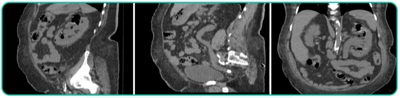
Jovem de 35 anos, vítima de acidente automobilístico sem cinto de segurança há 40 minutos, é trazido pelo ÁGUIA e apresenta os seguintes dados na admissão: • Intubação orotraqueal com colar cervical e prancha rígida. • Presença de escoriações à direita com MV+ bilateral, simétrico, com estertores em base à direita. • FC 137 bpm, PA 75/43 mmHg; diaforético, com pulso liforme. Presença de escoriações em região infraumbilical, com crepitação à palpação da sín se púbica, toque retal sem sangue ou espículas, esfíncter normotônico, Glasgow 3T em uso de midazolam e fentanil, presença de fratura exposta de membro superior direito sem sangramento ativo. A radiografia a seguir foi realizada na sala de emergência. Com relação ao caso, assinale a alternativa
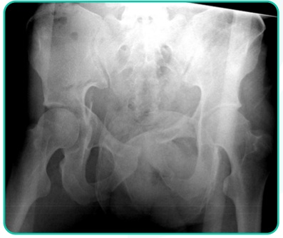
Considerando os exames 1 e 2, dispostos a seguir, assinale a alternativa correta.

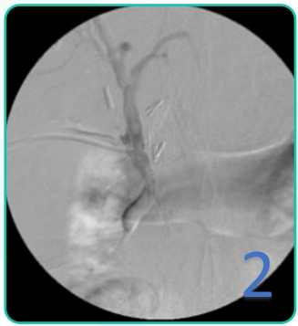
Paciente masculino, 36 anos, admitido no pronto atendimento, vítima de acidente motociclístico (moto x caminhão), em prancha rígida e com colar cervical. Ao exame: vias aéreas pérvias, MV+, sem ruídos adventícios, SatO2 de 97%, FC de 98 bpm, PA de 110 x 70 mmHg, FR de 20 irpm, ECG 15, pupilas isofotorreagentes. Abdome ácido, doloroso em região hipogástrica, sem sinais de peritonite. Na sala de trauma, foi realizado FAST - que demonstrou líquido livre na pelve - e passagem de sonda vesical de demora com diurese hematúrica. Encaminhado à tomogra a com contraste endovenoso (em anexo). Sobre esse caso, é correto afirmar:

RN do sexo masculino, nascido com 39 semanas de idade gestacional, de parto normal. Recebeu os cuidados iniciais de assistência ao RN sem nenhuma intercorrência. No berçário, apresentou a seguinte alteração (em anexo). Qual é a conduta para o caso?

Paciente de 38 anos de idade, masculino, chega ao pronto-socorro com história de dor abdominal há 8 dias, localizada em FID, associada a náuseas e perda do apetite. Refere que fez uso de cipro oxacina desde o início do quadro, com melhora parcial da dor. Ao exame: afebril, PA 120 x 70 mmHg, FC 88 bpm. Abdome pouco distendido, doloroso em anco e FID, onde se palpa massa de aproximadamente 7 cm de diâmetro, sem sinais de peritonite. Exames laboratoriais: Hb 12,9 g/dL, Htc 37, leuco 15.700/mm³ PCR: 93 mg/dL, amilase 121 U/L. Solicitada tomogra a de abdome e pelve (imagem em anexo). Qual é a melhor conduta nesse paciente?
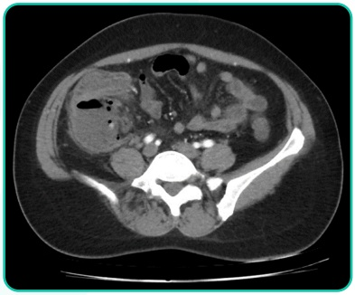
Um homem com 80 anos de idade é levado ao atendimento por familiares após queda da própria altura. Enquanto andava pelo jardim, escorregou e bateu a cabeça em um vaso. Não apresentou perda da consciência, cefaleia, confusão mental ou náuseas. Não tem antecedentes mórbidos relevantes, exceto por HAS bem controlada com anlodipino 10 mg ao dia. Sobre o caso, qual é a conduta mais adequada?
Paciente feminina, 52 anos, em tratamento quimioterápico para o câncer de mama, está internada após descompensação clínica. No 3º dia de internação, evoluiu com edema do antebraço direito, dor local, vermelhidão ao redor da área do acesso periférico e induração do trajeto venoso. Nesse caso, considerando a hipótese diagnóstica mais provável, o tratamento mais adequado é:
Paciente lactente do sexo masculino, 6 semanas de vida, foi trazido pela mãe ao pronto atendimento com queixa de vômitos não biliosos com aumento de intensidade em frequência nas últimas duas semanas. A mãe refere que não percebeu mudança no apetite da criança. No entanto, desde o início dos episódios, a criança já havia emagrecido 350 gramas. Ao exame físico, regular estado geral, mucosas normocoradas e desidratadas (+/4+), abdome emagrecido, com peristaltismo intenso e visível através da parede abdominal. Frente a esse caso, qual é a hipótese diagnóstica mais provável?
Paciente masculino, 65 anos, vem em consulta com o urologista após ter sido encaminhado à especialidade pelo médico d a UBS, devido à uma alteração e m seu exame d o PSA (5,0 ng/mL). A o ser questionado a respeito de seus sintomas e comorbidades, o paciente refere ser assintomático e não apresentar nenhuma comorbidade. Ao toque retal, próstata de consistência broelástica, sem nódulos, de volume aproximado de 40 g. Foi submetido à biópsia transretal da próstata, guiada por ultrassonogra a, que revelou diagnóstico de adenocarcinoma de próstata Gleason 6 (3+3) em 2 fragmentos do lobo direito. Que conduta terapêutica não deve ser indicada a esse paciente nesse momento?
Paciente masculino, 42 anos, Bombeiros por conta de um incêndio na cozinha do restaurante onde trabalhava. Ao exame físico, o paciente está muito agitado e com fala rouca, PA = 130 x 85; FC = 100 bpm, FR = 25 irpm, saturação de O2 92% em uso de máscara não reinalante. Possui queimaduras de 2º grau em membro inferior esquerdo e abdome, e queimadura circular de terceiro grau acometendo membro superior esquerdo. A conduta prioritária nesse caso é:
Paciente de 67 anos de idade, do sexo feminino, diabética, com histórico de gastrectomia total e reconstrução em Y de Roux por neoplasia gástrica há 7 anos. Foi admitida no pronto-socorro com queixa de dor abdominal em hipocôndrio direito e febre aferida de 38,9º C. Ao exame físico, encontra-se ictérica +++/4, sonolenta, FC = 120 bpm; temperatura axilar = 39º C; PA = 85 x 50 mmHg. Abdome está doloroso à palpação do hipocôndrio direito, sinal de Murphy negativo. Laboratório: Hb: 13,2 g/dL; Leuco: 19.200 /mm³ (5% de bastões); PCR: 190 mg/dL; BT: 8,9 mg/dL; BD: 7,5 mg/dL; Amilase: 45 U/L. Realizada ultrassonogra a à beira do leito que evidenciou: vesícula com cálculos em seu interior, colédodo medindo 1 cm, com cálculo impactado em sua porção distal e dilatação da via biliar extra-hepática. Qual é a principal hipótese diagnóstica e sua conduta?
Paciente feminina, 55 anos, admitida com queixa de dor e distensão abdominal há 3 dias, associada a náuseas, vômitos biliosos e parada da eliminação de fezes e atos. Refere laparotomia prévia por quadro de apendicite aguda há 15 anos. Ao exame físico: Abdome distendido, timpânico à percussão, RHA aumentados, descompressão brusca positiva nos quadrantes inferiores e abaulamento irredutível na região inguinal direita, sem hiperemia local. Realizada radiogra a (em anexo). Baseado no caso apresentado, qual é o diagnóstico e a conduta?
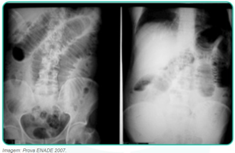
Paciente de 28 anos dá entrada em uma unidade básica de saúde com queixa de dor na região peniana há 6 horas. Relata que estava praticando relação sexual vigorosa quando houve a ocorrência de estalo seguido de dor e intumescência no pênis. Ao exame, apresenta hematoma peniano, com deformidade “em berinjela” e presença de sangue no meato uretral. Nesse caso, a conduta mais recomendada é:
Paciente masculino, 60 anos, tabagista, obesidade grau I, portador de hipercolesterolemia, hipertensão arterial, tratados de forma irregular, procura o ambulatório de Cirurgia Vascular com queixa de dor nas panturrilhas (pior à direita) durante caminhadas há mais de um ano, que o obriga a parar e descansar. Há 3 semanas, notou que o hálux cou “mais arroxeado” e começou a apresentar dor no membro inferior direito, mesmo sem caminhar. Ao exame: necrose seca do hálux direito e cianose xa do 2º e 3º pododáctilos à direita. Pulsos femorais presentes, porém pulsos poplíteo, tibial posterior e pedioso ausentes à direita e diminuídos à esquerda. Qual a é a melhor conduta para esse caso
Em relação ao processo de cicatrização dos tecidos, assinale a alternativa que contém suas fases em sequência correta.
Homem, 37 anos, 70kg, cozinheiro, sofreu queimaduras de segundo e terceiro grau por conta de derramamento de óleo quente na parte anterior do tronco, genitália e metade do membro inferior direito. Chegou ao pronto-socorro trazido pelo SAMU uma hora após o acidente, tendo recebido 500 ml de Ringer Lactato durante o transporte. Assinale a alternativa que apresenta o esquema de reposição volêmica para o paciente para as próximas horas segundo o ATLS:
Homem, 65 anos de idade, tabagista, assintomático, ao realizar tomogra a abdominal para estudo renal, foi diagnosticado com dilatação sacular da aorta abdominal infra-renal de tamanho correspondente a 3,5 cm no maior diâmetro. Diante desse achado, qual é a conduta preconizada?
São fatores que, comprovadamente, aumentam o risco de complicação da ferida operatória , exceto:
Em relação às hérnias da região inguinocrural, é correto afirmar:
Em relação às neoplasias das vias biliares, assinale a alternativa correta:
Em relação ao tratamento do choque hemorrágico nas vítimas de trauma, é correto afirmar:
Em relação ao manejo adequado da Terapia Nutricional no período perioperatório, assinale a alternativa correta.
Paciente de 48 anos, homossexual, vem com queixa de dor e sangramento anal há 3 meses. À anuscopia: presença de lesão de aspecto ulcerovegetante, xa, em parede anterior, abaixo da linha pectínea, medindo três centímetros. Realizada biópsia de lesão, cuja histologia constatou carcinoma espinocelular. Em relação a esse caso, é correto afirmar:
A respeito das dores abdominais agudas não traumáticas, é correto afirmar que:
Sobre o manejo inicial do ferimento cutâneo agudo, é correto afirmar que:
Sobre o manejo de ferida, através de síntese primária, é correto afirmar que:
Em relação à lavagem otológica para remoção de tampão de cerume, é correto afirmar que:
Com o objetivo de se prevenir distúrbios broproliferativos na cicatrização de feridas operatórias, recomenda-se:
Em relação ao procedimento de retirada de corpo estranho localizado em tecido subcutâneo, é correto afirmar que:
A queimadura que envolve epiderme e derme papilar, clinicamente reconhecida pela presença de vesícula ou flictena, que, se rompidas, apresentam fundo rosado, uniforme e brilhante é classificada como de:
Sobre o manejo inicial do paciente queimado é correto afirmar que:
Ao suspeitar de uma fratura óssea, o principal exame de imagem para realização do diagnóstico é:
Sobre as fraturas é correto afirmar que:
A avaliação de uma emergência pré-hospitalar deve seguir, inicialmente, a sequência protocolar mundial do exame primário ABCDE do atendimento às urgências e emergências. Sobre o acrónimo ABCDE, é correto afirmar:
Sobre a realização do pré-operatório na atenção primária à saúde, assinale a alternativa correta:
É CORRETO portal esquerda, deve ser realizado com:
Um paciente hipotenso sofreu múltiplos ferimentos por arma branca no abdome. Na sala de operação evidencia laceração transversa de toda a extensão do estômago e lesão esplênica de menor gravidade. Considerando esse caso, a
Paciente de 34 anos apresenta-se no consultório médico com queixa de constipação intestinal crônica e hematoquezia há um mês, sem outras queixas ou antecedentes pessoais ou familiares relevantes. Ao exame proctológico completo, foram diagnosticadas hemorroidas internas de grau II. É CORRETO
Paciente do sexo feminino, 54 anos relata dor em cólica em quadrante superior direito do abdome, há trinta dias. Segundo a paciente, há doze horas houve piora da dor localizada, associada à febre e a calafrios. Refere ainda anorexia e que não evacua há quatro dias. Assinale a alternativa que apresenta o
Um paciente portador de anastomose bileodigestiva, realizada para tratamento de lesão iatrogênica da via biliar, evolui com estenose da anastomose e episódios repetidos de febre com calafrios. Há uma semana também passou a apresentar icterícia e foi internado com quadro de colangite aguda grave. Nesse caso, é
Paciente do sexo masculino, 45 anos, IMC = 49kg/m², portador de hipertensão arterial controlada com dois medicamentos de uso oral, hiperinsulinemia, hipertrigliceridemia, e apneia do sono de grau leve. À endoscopia, apresenta esofagite grau A e hérnia hiatal de 3cm. A partir do caso apresentado, a
Os estados de hipoperfusão pós-operatório podem ocorrer nos pacientes graves. No diagnóstico clínico desta condição, é CORRETO afirmar que:
Na administração de antibioticoterapia no tratamento das infecções em cirurgia temos de tomar cuidado com efeitos colaterais dos antibióticos para evitar eventos adversos para os pacientes. Nesse sentido, analise as afirmativas a seguir: I - A oxacilina pode causar nefrite intersticial. II - As quinolonas podem causar colite pseudomembranosa. III - Os aminoglicosídeos podem causar nefro e ototoxicidade. IV - A vancomicina pode causar reação histamínica e nefrotoxicidade. Estão CORRETAS as afirmativas:
Em relação ao tromboembolismo e à trombose venosa profunda assinale a alternativa
Em relação aos cuidados perioperatórios que devem ser dispensados aos pacientes especiais, assinale a alternativa CORRETA:
Em relação ao uso de antibiótico profilático em cirurgia, assinale a alternativa
Em relação à cicatrização assinale a alternativa
Em relação à síndrome do câncer colorretal hereditário sem polipose (HNPCC) assinale a alternativa CORRETA:
Em relação ao equilíbrio hidroeletrolítico, assinale a alternativa CORRETA:
Em relação à colecistite aguda assinale a alternativa CORRETA:
Em relação ao trauma toracoabdominal assinale a alternativa
Em relação à pancreatite aguda (PA) assinale a alternativa
Paciente de 40 anos, sexo feminino, vai à consulta devido a nervosismo, intolerância ao calor, palpitações e perda de peso. Ao exame foi constatada taquicardia, pele quente, na e úmida. A palpação da região anterior do pescoço mostrou aumento difuso da tireóide. Os exames laboratoriais mostraram diminuição do TSH e aumento de T3 eT4. Em relação a este caso e com seus conhecimentos sobre a doença assinale a alternativa
Em relação aos tumores malignos de localização hepática assinale a alternativa CORRETA:
A síndrome de alça cega ou do supercrescimento bacteriano ocorre devido a um crescimento bacteriano excessivo. Qual dos itens abaixo está CORRETO em relação a esta síndrome?
Um homem com 62 anos comparece, acompanhado de sua lha, a uma unidade básica de saúde, após terem sido alertados pelos vizinhos sobre a campanha de detecção de câncer de próstata, denominada Novembro azul. O paciente não mantém contato com os irmãos nem com o restante da família, portanto desconhece se há história familiar de câncer. Está completamente assintomático. Relata que seu pai faleceu aos 65 anos de idade e que não sabe a causa da morte. Nesse caso, do ponto de vista da prevenção, a conduta do médico deve ser
Um paciente de 55 anos, obeso, tabagista, foi internado no serviço de urologia. Apresentava hematúria franca, tendo sido submetido a cistoscopia com ressecção transuretral de lesões. O laudo anatomopatológico revelou a ressecção de 3 lesões tumorais super ciais, limitadas ao revestimento da bexiga, compatíveis com carcinoma de células transicionais de alto grau, além de ausência de invasão muscular. A pesquisa realizada por meio de ultrassonogra a não demonstrou acometimento de linfonodos locais. Nessa situação, qual conduta deve ser adotada para o caso?
Um paciente com 20 anos, com história de aumento de hemiescroto direito há 4 semanas, comparece à unidade básica de saúde para consulta. Nega dor em bolsa escrotal, disúria, corrimento uretral ou febre. Ao exame físico, apresenta testículo direito com aumento de volume, consistência pétrea, sem eritema e indolor à palpação. Nesse caso, a conduta médica a ser adotada é a indicação de
Um paciente com 45 anos, vítima de colisão automobilística do tipo auto vs anteparo (muro) com velocidade aproximada de 60 km/h, foi trazido à unidade de emergência pelo serviço de resgate pré-hospitalar em prancha rígida e com colar cervical. Relata que estava utilizando cinto de segurança e que o air-bag foi acionado. Nega qualquer sintomatologia no momento. Na avaliação primária, feita na chegada do paciente à sala de emergência, registram-se: vias aéreas pérvias, exame respiratório normal, frequência respiratória de 22 incursões respiratórias por minuto, frequência cardíaca de 88 batimentos por minuto, pressão arterial de 130 × 90 mmHg. Além disso, apresentou exame neurológico sumário normal, Escala de Coma de Glasgow de 15 e ausência de lesões externas aparentes. Em relação à imobilização da coluna desse paciente, a conduta mais adequada é
Um paciente com 25 anos, vítima de acidente motociclístico, apresenta trauma contuso toracoabdominal. No local do acidente, encontrava-se com pressão arterial sistólica de 90 mmHg e com frequência cardíaca de 120 batimentos por minuto. Durante o transporte para o hospital, evoluiu com inconsciência, queda da pressão arterial sistólica para 60 mmHg e aumento da frequência cardíaca para 140 batimentos por minuto. Apresenta distensão de veias cervicais e murmúrio vesicular presente bilateralmente. Nesse caso, o manejo mais adequado para o paciente é
Uma paciente com 30 anos, grávida de 34 semanas, sofreu colisão frontal auto vs anteparo (muro), sentada no banco do passageiro e sem uso de cinto de segurança. Foi atendida por equipe de emergência pré- hospitalar, com relato de parada cardíaca e manobras de reanimação por cerca de 5 minutos, sem sucesso, durante sua remoção até o pronto-socorro de um hospital. Foi admitida pelo cirurgião geral, em parada cardiorrespiratória e midríase paralítica bilateral, com hematoma volumoso em região frontal. Nesse caso, qual deve ser a conduta do profissional que realiza o atendimento?
Uma paciente com 40 anos, índice de massa corpórea de 38kg/m², com história de colelitíase sintomática há 2 anos, apresenta-se para cirurgia de colecistectomia videolaparoscópica. Os resultados de seus exames laboratoriais são normais e a ultrassonogra a de abdome mostra múltiplos cálculos em vesícula biliar. É realizada a operação, descrita como tecnicamente difícil em razão da obesidade e das aderências inflamatórias no leito vesicular. A paciente foi encaminhada à enfermaria, acordada e sem queixas. Foram reiniciadas dieta e deambulação nas primeiras 24 horas de pós- operatório. Após 36 horas de pós-operatório, apresentou pico febril de 39 °C, dor abdominal e discreta icterícia. Novos exames laboratoriais mostraram leucograma de 20.500 leucócitos com 8% bastões, bilirrubina direta 2,0 mg/dL, bilirrubina indireta 1,0 mg/dL, aspartatoaminotransferase 60 U/L, alanina aminotransferase 80 U/L, fosfatase alcalina 230 U/L e gamaglutamiltransferase 450 U/L. A paciente evoluiu, em 4 horas, com hipotensão, prostração e queda do estado geral. Acerca desse quadro clínico, assinale a opção correta.
Uma paciente com 70 anos, diabética, com dor em anco esquerdo, de início insidioso e piora progressiva há 72 horas, chega ao pronto-socorro acompanhada de familiares. Eles relatam que, nos últimos 3 meses, observaram a ocorrência de episódios de sangramento retal vermelho-vivo, anorexia e perda ponderal de 10 Kg. Ao exame físico, a paciente apresenta-se em mau estado geral, torporosa, com frequência respiratória de 24 incursões respiratórias por minuto, frequência cardíaca de 116 batimentos por minuto, pressão arterial de 90 × 50 mmHg, abdome globoso, doloroso à palpação, com sinais de irritação peritoneal difusa. O resultado de radiografia simples evidencia pneumoperitôneo volumoso. Após discussão do caso com a família, deve ser proposto pelo cirurgião geral plantonista a realização de uma laparotomia, de uma
Um paciente com 65 anos apresenta quadro de disfagia a sólidos que evoluiu rapidamente para líquidos, acompanhado de tosse, rouquidão e perda ponderal de 20 kg nos últimos 90 dias. O paciente é tabagista (consumo de 1 a 2 maços de cigarro/dia) há 40 anos e etilista de bebida destilada há 30 anos. Realizada endoscopia digestiva alta, confirmou-se o diagnóstico d e neoplasia d e e s ôf a g o cervical. A traqueobroncoscopia demonstrou doença avançada, com paralisia das cordas vocais e invasão da árvore traqueobrônquica. Nesse caso, entre as seguintes opções de tratamento paliativo, a mais adequada é a realização de
Um paciente com 40 anos, diabético e obeso, comparece ao pronto-socorro, com evolução de 24 horas de dor em nádega direita e febre. O exame físico indica nádega direita sem sinais de ogose, com dor à palpação perianal. Ao exame de toque retal, notam-se fezes e discreta elevação da mucosa, a cerca de 6 cm da margem anal. Nesse caso, devem ser prescritos ao paciente o uso de
Uma paciente com 40 anos, hipertensa, diabética e obesa mórbida, é atendida em uma unidade básica de saúde, queixando-se de dor em hipocôndrio direito, pós-prandial, há aproximadamente 24 horas. Relata início súbito, tipo cólica, constante, com piora progressiva e irradiação para dorso ipsilateral, associada a náuseas, vômitos e calafrios. Ao exame físico, notam-se: fácies de sofrimento, abdome globoso, ácido, depressível, sinal de Murphy presente, sinal de Blumberg ausente. Diante desse caso, a conduta médica deve ser
Um paciente com 65 anos foi admitido em unidade de terapia intensiva por sepse de origem pulmonar. Evolui com insu ciência respiratória e hipotensão refratária à expansão volumétrica, com necessidade de entubação orotraqueal e de drogas vasoativas. Foi indicada a obtenção de acesso venoso central em veia subclávia. Após a inserção do cateter, o paciente apresentou hipoxemia inexplicável e colapso cardiocirculatório. A suspeita é de embolia aérea. Nesse caso, a conduta mais adequada é a aspiração do ar
Um lactente de 9 meses é levado à emergência de um hospital público municipal para avaliação de dor abdominal aguda. A mãe refere que a criança começou a apresentar os sintomas há cerca de 12 horas e que a dor ocorre de forma intensa seguida por períodos de acalmia e subsequente piora. Ela também diz que reparou que a fralda da criança estava com fezes entremeadas de sangue e muco. Ao exame clínico, a criança se apresentava irritada, desidratada (+2/+4) e hipocorada (+2/+4); as auscultas cardíaca e respiratória não apresentavam anormalidades; e percebeu-se o abdome distendido, sem visceromegalias, com peristalse aumentada. A principal hipótese diagnóstica e a condição clínica geralmente associada são, respectivamente,
Uma paciente com 20 anos foi atendida na emergência de hospital secundário, vítima de queimadura acidental em membros superiores e parte anterior do tórax, ocorrida há 30 minutos. Consciente e orientada, queixa-se de dor no local das queimaduras e de náusea. Ao exame físico, observam-se membros superiores com hiperemia e bolhas em toda a extensão; pressão arterial de 80 × 50 mmHg, frequência cardíaca de 120 batimentos por minuto, frequência respiratória de 35 incursões respiratórias por minuto, índice de massa corporal de 40 Kg/m2. Foi realizada tentativa de acesso venoso central em veia femoral direita, sem sucesso. Acesso central subclávio direito bem-sucedido. Cerca de 25 minutos após o início da hidratação e da analgesia intravenosa, a paciente refere "falta de ar". Foi solicitado raio X de tórax, que mostrou a imagem a seguir. Considerando a complicação mais frequente no acesso venoso profundo por via subclávia no contexto do caso apresentado, a imagem mostra
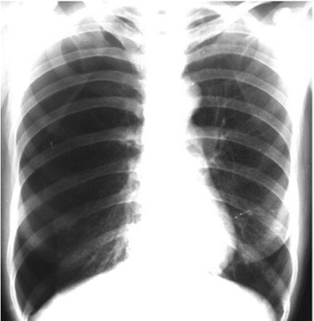
Adolescente com 12 anos, atendida em uma unidade de pronto atendimento, relata choque elétrico ao manusear um cabo de energia na rua onde mora e que não houve perda de consciência. A paciente se encontra orientada e estável hemodinamicamente. Ao exame físico, observam-se: roupas chamuscadas, área avermelhada com lesão cutânea compatível com queimadura de 1° grau em todo o membro superior direito e no pescoço, além de área esbranquiçada com lesão cutânea de 1 cm, profunda, no calcâneo direito. O médico assistente, após instituir as medidas iniciais de estabilização, opta por solicitar a transferência da paciente para uma unidade de tratamento de queimaduras (UTQ). Um critério que justifica a solicitação da transferência pedida pelo médico é a queimadura ser
Uma paciente com 26 anos, vítima de atropelamento em via pública, chega ao pronto-socorro com colar cervical, imobilizada em prancha longa. Foi entubada, no local do acidente, pelo médico socorrista, devido à alteração do nível de consciência (escala de coma de Glasgow: 6). Na sala de emergência, encontra-se com: pulso de 128 batimentos por minuto, pressão arterial de 90 × 60 mmHg, saturação de O2 de 89%, ventilada manualmente. A ausculta pulmonar está normal à direita, mas o murmúrio vesicular está muito diminuído em todo o hemitórax esquerdo. A paciente não apresenta desvio de traqueia nem estase jugular. Diante desse quadro, a primeira medida a ser tomada é
Um homem com 22 anos, pesando 75 kg, sofreu múltiplas fraturas e contusão pulmonar em acidente automobilístico, evoluindo com SARA (Síndrome da Angústia Respiratória do Adulto), estando em ventilação mecânica há 7 dias. Apresenta escala de coma de Glasgow < 8. À ausculta pulmonar, observa-se murmúrio vesicular presente, diminuído em bases, associado a estertores nos em bases. A radiogra a de tórax mostra imagens sugestivas de consolidações difusas em pulmão direito e esquerdo, típicas de SARA, com in ltrado intersticial difuso. A tomogra a de crânio demonstra imagem compatível com hematoma subdural à direita. O paciente apresenta, ainda, pH: 7,35 (valor de referência [VR]: 7,35-7,45); pressão parcial de CO²: 45 mmHg (VR: 35- 45 mmHg); pressão parcial de O2: 85 mmHg (VR: 80 a 100 mmHg); bicarbonato: 24 mmol (VR: 22 a 26 mmol). Nesse caso, de acordo com a Associação de Medicina Intensiva Brasileira (AMIB) – Diretrizes Brasileiras de Ventilação Mecânica, recomenda-se
Um paciente com 65 anos procura a unidade de pronto atendimento com queixa de ter acordado com dor abdominal, súbita, difusa, de intensidade crescente. Conta que fez uso de medicação sintomática e apresentou 2 episódios de vômitos. Nega sintomas urinários e alteração do hábito intestinal. Relata tabagismo (consumo de 60 maços/ano) e etilismo habitual (2 doses de destilado/dia), além das seguintes comorbidades: hipertensão arterial, em uso de atenolol, losartana, aspirina e sinvastatina; infarto agudo do miocárdio há 10 anos. Acrescenta que passou por uma cirurgia prévia, de urgência, de úlcera no estômago há 18 anos. Ao exame físico, apresenta-se: obeso, em regular estado geral, agitado. Registram-se, ainda: pressão arterial de 100 × 60 mmHg; frequência cardíaca de 110 batimentos por minuto; frequência respiratória de 20 incursões respiratórias por minuto; temperatura axilar de 37,8 °C; estando o paciente ictérico (+1/+4), corado, desidratado (+1/+4), com abdome normotenso, doloroso à palpação profunda difusamente, sem sinais de irritação peritoneal. Resultados de seus exames laboratoriais apresentam: hemoglobina: 13 g/dL, leucócitos: 14.000/mm3, amilase: 238 U/L, lipase: 130 U/L, Proteína C Reativa: 8 mg/L, gasometria venosa mostrando Ph: 7,32 e lactato: 27 mg/dL. Nesse caso, a principal hipótese diagnóstica é de abdome agudo
É uma passagem longa e estreita no terço médio da coxa. Estende- se do ápice do trígono femoral, onde o músculo sartório cruza sobre o músculo adutor longo, até o tendão do músculo adutor magno. Tal estrutura proporciona uma passagem intermuscular para a artéria e a veia femorais, e o nervo safeno, levando os vasos femorais até a fossa poplítea, onde se tornam os vasos poplíteos.
Sobre a veia femoral, assinale a alternativa correta.
Um golpe direto na patela pode fraturá-la em dois ou mais fragmentos. As fraturas transversas da patela podem resultar de um golpe no joelho ou contração súbita do músculo quadríceps femoral. A figura abaixo representa uma radiogra a em per l do joelho após contusão, com estruturas representadas pelos números de I. a VI. Assinale a alternativa com a correta associação.
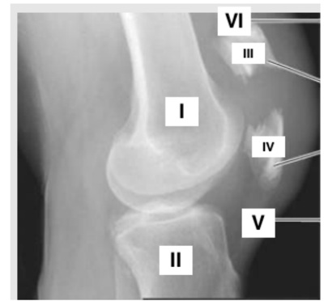
As artérias da região glútea originam-se, direta ou indiretamente da:
Sobre a anatomia do intestino delgado, assinale a alternativa correta
Assinale a alternativa correta sobre o apêndice cecal/vermiforme.
Assinale a alternativa incorreta.
Sobre o divertículo de Meckel, assinale a correta
Sobre a apendicite aguda, assinale a correta.
A ilustração abaixo representa de forma esquemática e radiológica uma das causas mais comum de abdome agudo obstrutivo. São achados clássicos encontrados no/na:
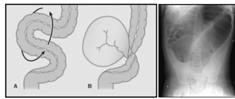
Sobre o baço, assinale a alternativa correta
A artéria retal superior mais comumente é a continuação direta da:
É o principal nervo do períneo e o principal nervo sensitivo dos órgãos genitais externos. Emerge da pelve através do forame isquiático maior entre os músculos piriforme e isquiococcígeo.
Sobre os ureteres, assinale a incorreta.
Paciente masculino, 62 anos, hipertenso, diabético, portador de brilação atrial crônica e insu ciência cardíaca, imunossuprimido, internado na enfermaria da clínica médica em tratamento de pneumonia lobar direita com ampicilina, atualmente no 7º dia de internação, apresenta piora clínica, mantém picos febris diários, aumento de leucometria e provas inflamatórias, associado à hipoxemia. Ao exame físico encontra-se taquipneico, febril, com murmúrio abolido em base direita, sem sinais de insu ciência respiratória. Bulhas cardíacas arrítmicas, normocárdico, sem edema de membros inferiores, boa perfusão periférica. Não há sinais clínico-laboratoriais de outras disfunções orgânicas. Mantém-se estável hemodinamicamente. Abaixo estão as radiogra as de tórax da admissão (a esquerda) e atual (a direita). Após a interpretação dos exames acima, foi realizado uma toracocentese com os seguintes achados no líquido pleural: Aspecto do líquido: turvo | pH: 7,1 | DHL: 1125 UI/L |Glicose: 10g/dL | Bacterioscopia: Cocos Gram-positivos, aos pares, em cadeias curtas | Cultura: em andamento A principal hipótese que justifique a piora clínica é:

Paciente masculino, 62 anos, hipertenso, diabético, portador de brilação atrial crônica e insu ciência cardíaca, imunossuprimido, internado na enfermaria da clínica médica em tratamento de pneumonia lobar direita com ampicilina, atualmente no 7º dia de internação, apresenta piora clínica, mantém picos febris diários, aumento de leucometria e provas inflamatórias, associado à hipoxemia. Ao exame físico encontra-se taquipneico, febril, com murmúrio abolido em base direita, sem sinais de insu ciência respiratória. Bulhas cardíacas arrítmicas, normocárdico, sem edema de membros inferiores, boa perfusão periférica. Não há sinais clínico-laboratoriais de outras disfunções orgânicas. Mantém-se estável hemodinamicamente. Abaixo estão as radiogra as de tórax da admissão (a esquerda) e atual (a direita). Após a interpretação dos exames acima, foi realizado uma toracocentese com os seguintes achados no líquido pleural: Aspecto do líquido: turvo | pH: 7,1 | DHL: 1125 UI/L |Glicose: 10g/dL | Bacterioscopia: Cocos Gram-positivos, aos pares, em cadeias curtas | Cultura: em andamento A conduta mais adequada no caso acima é:

Paciente masculino, 3 anos de idade, é trazido em consulta médica devido achado assintomático de abaulamento abdominal notado pela mãe durante o banho há 2 dias. Nega traumas. Nega dor. Nega sintomas gastrointestinais. Nega perda ponderal. Nega outras queixas. Ao exame físico: bom estado geral, corado, hidratado, eupneico, ictérico +/4, acianótico, afebril. Sem alterações cardiopulmonares ou neurológicas. Abdome assimétrico à inspeção, ácido, indolor, depressível, com massa palpável em epigástrio e hipocôndrio esquerdo. Foi realizado ultrassonogra a abdominal que não conseguiu definir etiologia da lesão, e sugeriu exame de tomogra a abdominal com contraste endovenoso ( figura abaixo). Os exames séricos para rastreio oncológico evidenciaram aumento importante de alfafetoproteina(>1000 ng/ml). A principal hipótese diagnóstica é:

Paciente feminina, 4 anos de idade, é trazida pela mãe após episódio de hematúria há 1 dia. Nega febre. Nega disúria, polaciúria ou alteração de odor urinário. Nega trauma presenciado. Nega sintomas gastrointestinais. Sem outras queixas. Ao exame físico: bom estado geral, corada, hidratada, eupneica, anictérica, acianótica, afebril. Sem alterações cardiopulmonares. Genitália sem sinais de virilização. Abdome ácido, indolor, sem massas palpáveis, sem sinais de irritação peritoneal. Exame urinário evidenciou hematúria importante, leucocitúria discreta, com bacterioscopia e urocultura negativa. Foi realizado a tomografia abdominal abaixo. A principal hipótese diagnóstica é:

Paciente feminina, 4 anos de idade, é trazida pela mãe após episódio de hematúria há 1 dia. Nega febre. Nega disúria, polaciúria ou alteração de odor urinário. Nega trauma presenciado. Nega sintomas gastrointestinais. Sem outras queixas. Ao exame físico: bom estado geral, corada, hidratada, eupneica, anictérica, acianótica, afebril. Sem alterações cardiopulmonares. Genitália sem sinais de virilização. Abdome ácido, indolor, sem massas palpáveis, sem sinais de irritação peritoneal. Exame urinário evidenciou hematúria importante, leucocitúria discreta, com bacterioscopia e urocultura negativa. Foi realizado a tomografia abdominal abaixo. A principal hipótese diagnóstica é:

Das alternativas abaixo, a conduta mais adequada neste caso de acordo com a SIOP (Societe Internationale D'oncologie Pediatrique) é:
Paciente masculino, 5 semanas de vida, é trazido em consulta após inúmeros episódios de vômitos de início há 1 semana. Mãe nega febre. Nega diarreia ou outras alterações gastrointestinais. Nega perda ponderal. Nega trauma. Associa os vômitos aos períodos após as mamadas, de conteúdo alimentar, sem coloração biliosa. Atualmente em uso de fórmula láctea anti-re uxo sem melhora. Ao exame: corado, desidratado ++/4, eupneico, anictérico, acianótico, afebril. Sem alterações cardiopulmonares. Abdome ácido, distendido em andar superior do abdome. Indolor, sem massas palpáveis, sem sinais de irritação peritoneal. Os exames séricos evidenciaram alcalose metabólica, hipocalemia e hiponatremia. Foram também realizados os exames de imagem abaixo. A principal hipótese diagnóstica é:

A COVID-19 originou uma pandemia impactante na história da humanidade. A doença é causada pelo vírus SARS-CoV2 pertencente a um grupo de beta-coronavírus. Em dezembro de 2021, atingiu mais de 650 mil mortes no Brasil. Considerando os efeitos desta virose, complicações envolvendo o trato digestório, como
A Hérnia Diafragmática Congênita é classificada como Bochdalek, Morgani e Hérnia do Hiato Esofágico, a partir da sua localização. Em relação às a rmativas apresentadas abaixo, apresente a alternativa INCORRETA.
A presença de náuseas e vômitos no pós-operatório são complicações frequentes após cirurgia colorretal. Os fatores de risco para este quadro, após cirurgia de câncer colorretal, são, EXCETO:
Cirurgia de controle de danos (CCD) é estratégia bem definida de manejo cirúrgico para pacientes vítimas de trauma grave. A literatura sugere que as indicações, tempo operatório, medidas terapêuticas adotadas, alterações laboratoriais e achados transoperatórios apresentam impacto direto sobre o desfecho. Dentro desta definição, qual afirmativa abaixo está INCORRETA?
A correção de hérnia inguinal continua sendo uma das cirurgias mais comuns em todo o mundo, com mais de 20 milhões de cirurgias sendo realizadas anualmente. Nos conceitos que envolvem o tratamento dos casos de hérnia inguinal, qual alternativa podemos afirmar que está INCORRETA?
O câncer de tireoide é a neoplasia endócrina mais comum, sendo o carcinoma papilífero o tipo histológico mais frequente, com 85-95% dos casos. Habitualmente, são tumores de comportamento biológico indolente e as taxas de sobrevida em 10 anos são maiores que 90%. Alguns dos principais fatores de risco para recorrência linfonodal são:
A acalasia é um distúrbio motor primário do esôfago, relativamente raro, e tem a forma idiopática como a mais prevalente em todos os continentes, porém, atualmente estima-se que oito milhões de pessoas estejam infectadas com o o parasita é endêmico. Considere as afirmativas abaixo e responda qual alternativa está INCORRETA.
A incidência estimada do câncer colorretal (CCR) é de 1,36 milhão de casos novos por ano no mundo. No Brasil, estimam-se, entre 2018-2019, 36.360 novos casos de câncer colorretal. Considerando o caso do acometimento de pacientes na faixa etária entre 40 e 50 anos, podemos afirmar que:
A Gangrena de Fournier é uma doença infecciosa grave de partes moles, de rápida progressão, que acomete a região genital e áreas adjacentes, caracterizada por intensa destruição tissular, envolvendo o tecido subcutâneo e a fáscia. Também é conhecida como fascite necrotizante da região perineal. Considere as afirmativas abaixo e responda qual está INCORRETA.
É notável a mudança do manejo do trauma abdominal penetrante ao longo do tempo. Contudo, observouse que laparotomias não terapêuticas dobravam o tempo de internamento e aumentavam significativamente a morbidade dos pacientes. Assim, vítimas de lesões por arma branca passaram a ser manejadas de forma conservadora em casos selecionados e, aquelas por lesões por arma de fogo, que até recentemente tinham indicação mandatória de laparotomia, também passaram a ter seu manejo modi cado em direção a um tratamento mais criterioso. Qual dos itens abaixo descritos não é indicativo de intervenção cirúrgica imediata no abdômen traumático?
Revisar: possível letra faltando em enunciado
Os primeiros exames, não laboratoriais, a serem realizados após a estabilização hemodinâmica, durante o atendimento de urgência de doente com enterorragia de grande volume, são:
As hérnias inguinais são um problema frequente e o seu reparo representa a cirurgia mais comumente realizada por cirurgiões gerais. Nos últimos anos, novos princípios, produtos e técnicas têm mudado a rotina dos cirurgiões que precisam reciclar conhecimentos e aperfeiçoar novas habilidades. Segundo o resultado de uma metanálise publicada em 2019, quais afirmativas estão INCORRETAS
As hérnias inguinais são um problema frequente e o seu reparo representa a cirurgia mais comumente realizada por cirurgiões gerais. Nos últimos anos, novos princípios, produtos e técnicas têm mudado a rotina dos cirurgiões que precisam reciclar conhecimentos e aperfeiçoar novas habilidades. Segundo o resultado de uma metanálise publicada em 2019, quais afirmativas estão INCORRETAS
Paciente do sexo feminino, com 25 anos é admitida no Serviço Ambulatorial com a queixa de estar apresentando sangramento anal vermelho vivo rutilante, evidente no papel higiênico e que tinge a água do vaso sanitário nos episódios de evacuação, há 3 meses. Associado ao quadro refere uma constipação intestinal crônica desde a sua última gestação há 6 anos. Nega dor anal, mas relata exteriorização de uma tumoração pelo ânus, que reduz espontaneamente. O diagnóstico provável é de:
Paciente do sexo masculino, com 34 anos é admitido no Pronto Socorro em Abdômen Agudo, com um quadro de choque séptico instalado. Como comorbidade, apresenta obesidade grau III, Diabetes Melittus em uso de Insulina NPH, 10 UI de 12/12h e apneia do sono. Como histórico cirúrgico recente, refere cirurgia videolaparoscópica para a correção da Doença do Re uxo Gastro-esofágico e para o tratamento de cálculos na vesícula biliar, há cerca de 4 dias. Pensando na possibilidade de uma complicação cirúrgica, qual etapa do procedimento, descrita abaixo, pode estar relacionada à maioria das lesões inadvertidas?
Paciente de 76 anos, do sexo masculino, branco, apresentando icterícia há, aproximadamente, 2 meses. Procurou atendimento médico com exames laboratoriais, mostrando icterícia à custa do aumento de bilirrubina direta, com a dosagem da fosfatase alcalina e gama-GT 4 vezes o valor da referência normal. Foi submetido ao exame de ultrassonogra a do abdômen, que evidenciou uma dilatação das vias biliares intra- hepáticas, com colédoco de diâmetro normal e vesícula biliar sem cálculos ou outras alterações. A sua principal hipótese, e o respectivo exame a ser solicitado para elucidação diagnóstica, é:
Paciente, sexo feminino, 33 anos, vítima de acidente motociclístico, deu entrada na unidade de pronto atendimento, trazida pela equipe de atendimento pré-hospitalar já entubada, instável hemodinamicamente e anisocoria. Na admissão, foi realizada tomogra a de crânio que mostrou imagem hiperdensa, próxima a calota craniana, de aspecto côncavoconvexo com importante desvio da linha média. Tendo em vista o caso clínico, qual o diagnóstico e tratamento mais indicado para essa paciente?
Paciente masculino, 28 anos, submetido à hernioplastia inguinal eletiva, onde será utilizada a técnica cirúrgica de Linchestein. Qual antibiótico deve ser preferencialmente utilizado para a pro laxia antimicrobiana cirúrgica?
Paciente, 86 anos, atendido no pronto-socorro com relato de dor abdominal, parada de eliminação de atos e fezes há cerca de 4 dias, evoluindo com vômitos fecaloides. Ao toque retal, identi cado volumosa massa ocupando toda a luz do reto. Com o objetivo de tratar o quadro urgente, optou-se por abordagem cirúrgica, na qual expôs o cólon transverso, realizou uma pequena abertura na tênia e realizou a colostomia, sustentada por um bastão. Esse tipo de colostomia é chamada de:
Revisar: possível letra faltando em enunciado
Mulher, 75 anos, com brilação atrial e sem claudicação intermitente prévia, apresentou dor de início súbito em membro inferior direito há 3 horas. A frequência cardíaca é 120bpm e a PA:180x90mmHg. A extremidade inferior direita está fria e pálida, com déficits motor e sensitivo. O pulso femoral neste membro está ausente, sendo que no membro inferior esquerdo todos os pulsos estão presentes. A conduta inicial mais apropriada, após a administração de heparina sistêmica é:
Homem, 43 anos, chega para atendimento no pronto-socorro, relata vômitos com sangue, e fezes escurecidas e fétidas há 01 dia. Ao exame físico, encontra-se descorado, taquicárdico e hipotenso. Realizou endoscopia digestiva alta que evidenciou úlcera péptica pré-pilórica, Forrest 1A, sendo realizada hemostasia da ulceração com solução de adrenalina. Doze horas após a terapêutica endoscópica, apresentou novamente vômitos com sangue em grande quantidade, FC = 110bpm, PA:80x40mmHg. Com base no caso e dados clínicos, o tratamento adequado deve ser:
A apendicite aguda é uma condição clínica e cirúrgica muito frequente na prática médica. Sobre a apendicite aguda na criança, analise as afirmativas a seguir: I. Pode ocorrer em crianças em todas as faixas etárias. II. O quadro de apendicite aguda normalmente é um desa o diagnóstico em crianças pequenas, em especial, naquelas menores de quatro anos. III. A tomogra a de abdome deve ser realizada precocemente na suspeita de apendicite aguda, em especial, na criança pequena. IV. Quando existe dúvida ou incerteza no diagnóstico, a observação clínica e as reavaliações frequentes podem ajudar na elucidação do quadro clínico da criança. Estão corretas as afirmativas:
Paciente, 78 anos, portador de DPOC e doença coronariana, foi admitido no hospital há 23 dias devido uma fratura de colo de fêmur. Foi solicitado avaliação da equipe de cirurgia devido distensão abdominal importante. Paciente relata ainda parada de eliminação de atos e fezes há cerca de 4 dias e dor abdominal em cólica de baixa intensidade. Ao exame, paciente em bom estado geral, abdome distendido, hipertipânico, peristalse reduzida. Realizada radiogra a de abdome que evidenciou distensão de todo cólon até o reto. Considerando os dados apresentados, a hipótese mais provável para o diagnóstico é:
Paciente, masculino de 36 anos, deu entrada na urgência com quadro de abdome agudo perfurativo, foi submetido à laparotomia de emergência devido a uma úlcera duodenal posterior perfurada que resultou em sangramento abundante. A úlcera estava localizada na primeira porção duodenal. Qual artéria tem maior possibilidade de causar essa hemorragia?
Mulher, 43 anos, caucasiana, obesa, procura o pronto-socorro com queixa de dor epigástrica de forte intensidade, irradiada para o dorso, acompanhada de náusea, vômitos e hiporexia há 02 dias. Foi feito hidratação e sintomáticos, com melhora dos sintomas. Ao exame físico: FC = 98bpm, FR = 18irpm, PA= 125x72mmHg, T=36,5ºC; Abdome plano, normotenso, doloroso à palpação profunda em região epigástrica, sem irritação peritoneal. Amilase = 1123U/L, Lipase = 867 U/L e leucócitos = 16800/mm3. Qual exame confirma a etiologia diagnóstica?
Paciente, masculino, 54 anos de idade, etilista e tabagista, deu entrada no pronto-socorro com quadro de dor abdominal difusa, iniciada há 45 minutos. Solicitado rotina de abdome agudo que evidenciou radiogra a de abdome com lâmina aérea entre o fígado e o diafragma. Com base nesse caso hipotético, assinale a alternativa que apresenta a melhor conduta para o paciente.
Homem, 26 anos, é admitido no setor de emergência pós-acidente motociclístico. Durante o transporte, administrou-se 2 litros de solução cristaloide, em 30 minutos. Encontra-se hipocorado, confuso, enchimento capilar lenti cado, taquipneico, FC = 132bpm, PA:93x50mmHg. Realizou-se o protocolo FAST, representado na imagem abaixo. Feito protocolo do trauma, iniciou-se oxigenoterapia suplementar e administrado mais 1L de ringer lactado, porém o mesmo continuou instável hemodinamicamente. A conduta mais adequada neste momento é:
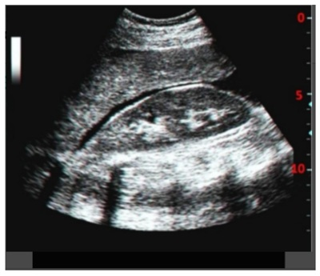
Revisar: possível letra faltando em enunciado
Paciente masculino, 36 anos, dá entrada no pronto-socorro, trazido pelo SAMU em protocolo de trauma, vítima de colisão automóvel com anteparo xo em alta velocidade. Os dados vitais era PA=76/38mmHg, FC=130bpm, FR=24irpm, SatO2=86%. Tórax: equimose principalmente à esquerda, crepitação óssea em região lateral do terço médio do hemitórax esquerdo, murmúrio vesicular abolido e macicez à percussão. A hipótese diagnóstica mais provável é:
Paciente masculino, 39 anos, admitido no pronto atendimento, vítima de ferimento por arma de fogo, conforme imagem em anexo. Ao exame: Vias aéreas pérvias, MV +, sem ruídos adventícios, SatO2: 96%, FC: 98 bpm, PA: 130 x 80 mmHg, FR 20 irpm, ECG 15, pupilas isofotorreagentes. Abdome ácido, doloroso em hipocôndrio esquerdo, sem sinais de peritonite. Orifício de saída do projétil na região lombar direita. Qual é a conduta nesse caso?
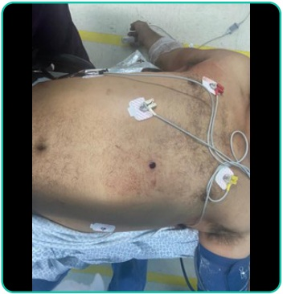
Paciente feminina, de 90 anos, admitida no pronto-socorro com queixa de dor abdominal no quadrante superior direito há 2 dias, associada a náuseas, hiporexia e febre aferida de 39º C. Ao exame: REG, corada, hidratada, febril, ictérica ++/4. Abdome globoso, ácido, doloroso em hipocôndrio direito, Murphy negativo. PA: 110 X 70 mmHg, FC: 88 bpm, FR: 18 irpm. Familiar refere que a paciente realizou ultrassonogra a há aproximadamente 5 anos, com o diagnóstico de “pedras na vesícula”, mas, pela idade, não foi indicada a cirurgia. Realizado exames laboratoriais: Hb: 12,8 mg/dl; Leuco: 17.400/mm³ (2% de bastões), PCR: 110 mg/dL, Amilase: 132 UI/L, TGO = 77 U/L; TGP = 98 U/L; GGT = 445 U/L; FA = 221 U/L, BT: 8,9 mg/dL; BD: 7,8 mg/dL. INR: 1,0. Considerando as informações desse caso, assinale a alternativa que indica corretamente a principal hipótese diagnóstica e a conduta.
Paciente feminina, 56 anos, diabética em uso de metformina, IMC: 32 kg/m², comparece à UBS (Unidade Básica de Saúde) para consulta de rotina. Sem queixas no momento. Ao exame físico, apresenta, à manobra de Valsalva, abaulamento redutível em região inguinal direita. Em relação ao caso clínico descrito, qual é a melhor conduta?
Paciente feminina, 70 anos, diabética insulinodependente, comparece ao pronto-socorro com queixa de disúria e saída de ar ao urinar, há 5 cincos dias. Histórico de histerectomia há 30 anos por miomatose. Refere internação hospitalar, há 4 meses, por uma “infecção intestinal” tratada com antibióticos endovenosos. Ao exame: BEG, corada, hidratada, eupneica, afebril. Abdome ácido, pouco doloroso em região hipogástrica, sem sinais de peritonite. Considerando a principal hipótese diagnóstica para o caso descrito, assinale a opção que contém o exame de primeira escolha para confirmação diagnóstica.
Paciente do sexo masculino, 21 anos, vítima de acidente motociclístico (moto x poste), atendido pela equipe do resgate e encaminhado ao pronto-socorro. Ao exame: intubação orotraqueal (realizada pela equipe de resgate devido ao rebaixamento do nível de consciência no local), com colar cervical e imobilizado na prancha, sem lesões hemorrágicas externas, murmúrio vesicular presente bilateral, SatO₂ = 97%; FC = 88 bpm; PA = 110 x 70 mmHg. Apresenta equimose periorbitária esquerda e escoriações no hipocôndrio direito. Realizou radiogra a de tórax e de pelve na sala de trauma, que não apresentaram alterações, e o FAST, conforme figura abaixo. Considerando o caso descrito, qual é a conduta mais adequada para esse paciente?
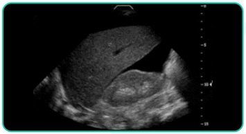
Lactente com 30 dias de vida, nascido a termo, outrora saudável, é trazido ao pronto atendimento com quadro de choro há 8 horas, associado à piora do estado geral, vômitos biliosos e parada de eliminação de gases e fezes. Ao exame clínico, está em mau estado geral, taquicardíaco, taquipneico, com abdome muito distendido, tenso e doloroso. Há sangue em dedo de luva ao toque retal. Considerando o diagnóstico mais provável, qual é a melhor conduta?
Homem de 62 anos, dor abdominal de início abrupto, há 6 horas, com irradiação para dorso e ancos. Ao exame físico, encontra-se em regular estado geral, FC = 102 bpm, PA = 122 x 81 mmHg, hidratado, hipocorado +/4+, eupneico. Refere ser hipertenso em uso regular de medicação e tabagista. Ao exame físico abdominal, apresenta massa abdominal pulsátil à palpação, medindo cerca de 5cm de diâmetro. Diante do quadro descrito acima, qual é a melhor conduta?
Homem de 27 anos, com história prévia de asma, refere dispneia de início abrupto enquanto colhia ores no parque do Ibirapuera. Ao exame físico, trata-se de um homem magro, em regular estado geral, taquidispneico, falando frases entrecortadas, com saturação de O2 de 84% em ar ambiente. FC = 136 bpm, PA = 86 x 60 mmHg. À ausculta pulmonar, o MV é diminuído à direita, sem ruídos adventícios, com timpanismo à percussão. Considerando o quadro descrito, qual é a melhor conduta?
Homem de 36 anos envolveu-se em uma discussão e recebeu um golpe de faca na altura do 6º espaço intercostal, na linha axilar anterior esquerda. Ao exame físico, encontra-se consciente e orientado. Apresenta ferimento linear de aproximadamente 3 cm no hemitórax à esquerda. À ausculta pulmonar, o murmúrio vesicular parece discretamente diminuído à esquerda, sem ruídos adventícios e com som claro pulmonar à percussão. FC = 103 bpm, PA = 115x70 mmHg, abdome depressível, flácido e indolor à palpação. Considerando o caso descrito acima, qual destas condutas não está indicada?
Homem de 79 anos vai ao médico para consulta de rotina. Refere jato urinário fraco e um pouco de hesitação miccional, sem outros sintomas e sem prejuízo a sua qualidade de vida. Ao toque retal, a próstata é lisa, broelástica e regular, com peso estimado, ao toque, de 60g. Submetido à análise de PSA, cujo resultado foi de 5,1 ng/dL, e à biópsia prostática, cujo escore de Gleason foi 3+3=6. Considerando o quadro descrito acima, qual é a melhor conduta para esse paciente?
Paciente, sexo masculino, 20 anos de idade, é trazido por populares, após ser vítima de trauma moto x anteparo, em via expressa, há 45 minutos. Dá entrada no Pronto-Socorro com rebaixamento do nível de consciência. Ao exame, A: via aérea pérvia, colocado colar cervical, SatO₂:92%; B: murmúrios vesiculares bem distribuídos com diminuição em base esquerda, FR: 22ipm; C: bulhas rítmicas e normofonéticas, FC:112bpm, PA: 86x54mmHg, pulsos radiais assimétricos, abdome indolor à palpação, pelve estável e toque retal sem alterações; D: escala de coma de Glasgow: 7, pupilas isocóricas e fotorreagentes; E: escoriações e dor à palpação em hemitórax esquerdo. Foi realizado radiografia de tórax na sala de emergência. De acordo com o caso e com o exame da imagem, indique a principal suspeita diagnóstica que justi que o quadro clínico.

Paciente, sexo masculino, 20 anos de idade, é trazido por populares, após ser vítima de trauma moto x anteparo, em via expressa, há 45 minutos. Dá entrada no Pronto-Socorro com rebaixamento do nível de consciência. Ao exame, A: via aérea pérvia, colocado colar cervical, SatO₂:92%; B: murmúrios vesiculares bem distribuídos com diminuição em base esquerda, FR: 22ipm; C: bulhas rítmicas e normofonéticas, FC:112bpm, PA: 86x54mmHg, pulsos radiais assimétricos, abdome indolor à palpação, pelve estável e toque retal sem alterações; D: escala de coma de Glasgow: 7, pupilas isocóricas e fotorreagentes; E: escoriações e dor à palpação em hemitórax esquerdo. Foi realizado radiografia de tórax na sala de emergência. Diante do caso, indique a primeira conduta que deve ser instituída no Pronto-Socorro:

Paciente, sexo masculino, 20 anos de idade, é trazido por populares, após ser vítima de trauma moto x anteparo, em via expressa, há 45 minutos. Dá entrada no Pronto-Socorro com rebaixamento do nível de consciência. Ao exame, A: via aérea pérvia, colocado colar cervical, SatO₂:92%; B: murmúrios vesiculares bem distribuídos com diminuição em base esquerda, FR: 22ipm; C: bulhas rítmicas e normofonéticas, FC:112bpm, PA: 86x54mmHg, pulsos radiais assimétricos, abdome indolor à palpação, pelve estável e toque retal sem alterações; D: escala de coma de Glasgow: 7, pupilas isocóricas e fotorreagentes; E: escoriações e dor à palpação em hemitórax esquerdo. Foi realizado radiografia de tórax na sala de emergência. Indique o exame padrão-ouro para confirmação diagnóstica do trauma apresentado pelo paciente:
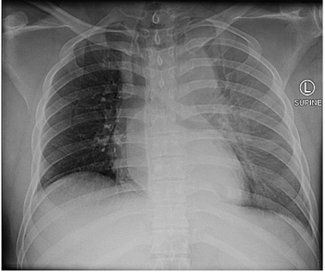
Paciente, sexo masculino, 22 anos de idade, trazido por populares à UPA após ser vítima de agressão física, relata que sofreu agressão com um soco na face há cerca de 45 minutos. Refere ferimento em pálpebra superior direita com dor e sangramento. Nega outros sintomas. Ao exame físico, bom estado geral, lúcido e orientado, presença de ferimento corto-contuso na pálpebra superior direita, medindo 2,0cm, com exposição da camada interna, sangramento ativo em pequena quantidade e sem lesão do globo ocular direito. Frente ao quadro descrito, indique a estrutura anatômica lesada, caso o paciente apresente ptose palpebral.
Paciente, sexo masculino, 22 anos de idade, trazido por populares à UPA após ser vítima de agressão física, relata que sofreu agressão com um soco na face há cerca de 45 minutos. Refere ferimento em pálpebra superior direita com dor e sangramento. Nega outros sintomas. Ao exame físico, bom estado geral, lúcido e orientado, presença de ferimento corto-contuso na pálpebra superior direita, medindo 2,0cm, com exposição da camada interna, sangramento ativo em pequena quantidade e sem lesão do globo ocular direito. Caso o paciente apresente perda de substância que impossibilite a síntese primária, identi que a técnica menos adequada
Paciente, sexo masculino, 22 anos de idade, trazido por populares à UPA após ser vítima de agressão física, relata que sofreu agressão com um soco na face há cerca de 45 minutos. Refere ferimento em pálpebra superior direita com dor e sangramento. Nega outros sintomas. Ao exame físico, bom estado geral, lúcido e orientado, presença de ferimento corto-contuso na pálpebra superior direita, medindo 2,0cm, com exposição da camada interna, sangramento ativo em pequena quantidade e sem lesão do globo ocular direito. Caso o paciente apresente perda de substância de forma relevante e seja realizada a síntese primária, indique a complicação mais comumente observada:
Paciente, 20 anos de idade, sexo feminino, sofreu ferimento cortante em mão direita com uma faca, há uma hora. Nega outros traumas. Ao exame físico, bom estado geral, corada, FC: 78bpm, PA: 118x72mmHg, FR: 16imp; apresenta ferimento cortante em palma da mão direita, medindo cerca de 2cm, linear e sem sangramento ativo. Diante desse caso clínico, em relação à fase inflamatória da cicatrização, é correto afirmar:
Paciente, 20 anos de idade, sexo feminino, sofreu ferimento cortante em mão direita com uma faca, há uma hora. Nega outros traumas. Ao exame físico, bom estado geral, corada, FC: 78bpm, PA: 118x72mmHg, FR: 16imp; apresenta ferimento cortante em palma da mão direita, medindo cerca de 2cm, linear e sem sangramento ativo. Sobre a anestesia local para a síntese desse ferimento, é correto o que se afirma em
Paciente, 20 anos de idade, sexo feminino, sofreu ferimento cortante em mão direita com uma faca, há uma hora. Nega outros traumas. Ao exame físico, bom estado geral, corada, FC: 78bpm, PA: 118x72mmHg, FR: 16imp; apresenta ferimento cortante em palma da mão direita, medindo cerca de 2cm, linear e sem sangramento ativo. Sobre a fase proliferativa da cicatrização, pode-se afirmar que
Paciente feminino de 35 anos, internada para cirurgia plástica, apresenta dor torácica e pontada em região precordial. Paciente faz uso de anticoncepcional oral há 5 anos. Nega outras comorbidades. Exame físico inalterado. ECG sem alterações. Troponina I com resultado de 0,09ng/mL (VR < 0,04ng/mL). A conduta mais apropriada no momento é
Paciente masculino de 60 anos, diabético e com HPB, internado por infecção do trato urinário, vem apresentando hiperglicemias durante a internação. Usava metformina antes de internar, mas não refere ter um controle adequado. A conduta mais correta é
Paciente feminino de 54 anos, em investigação de síndrome colestática. No primeiro dia de internação, o plantonista é chamado para avaliar a paciente por hipertensão aferida em verificação de rotina – PA: 190 x 120mmHg. Assinale a conduta mais correta para este caso.
Paciente com quadro de colecistite aguda e coledocolitíase. Está com dor em HD, sem febre, BD:3, BI:01. O melhor tratamento para este paciente é
Sobre a litíase da vesícula, é incorreto afirmar:
A síndrome de Mirizzi é caracterizada por
Paciente do sexo feminino, de 18 anos, sofre assalto e recebe ferimento por arma branca em região cervical. É levada a um centro de trauma especializado e na sala de emergência apresenta confusão mental, agitação, murmúrio vesicular presente bilateralmente e simétrico com roncos em ambos os hemitóraces. FR de 32irpm e Sat 02 de 92%, além de hematêmese e sangramento ativo pela lesão. Pressão arterial era de 60x40mmHg e FC de 150bpm. As medidas que devem ser tomadas no atendimento inicial são
No conceito de cirurgia de controle de danos, uma laparotomia abreviada deve ser indicada caso o paciente apresente sintomas da tríade letal. São seus componentes:
A diverticulite complicada pode ser classificada através dos critérios de Hinchey. O estágio III corresponde a
Assinale a alternativa que corresponde à hérnia na qual se encontra a borda antimesentérica do intestino delgado encarcerada no saco herniário.
Paciente do sexo masculino apresenta uma herniação inguinal indireta, com anel inguinal interno alargado, porém com a parede posterior preservada. De acordo com a classificação de Nyhus, pode-se inferir que se trata de uma hérnia classificada como
Quanto ao jejum pré-operatório, é correto afirmar:
Durante o processo de cicatrização de uma ferida, em um determinado momento, observa-se uma retração da ferida. Sobre esse fenômeno, é correto afirmar:
Existem várias técnicas de correção cirúrgica para as hérnias inguinais. A técnica que não utiliza tela para sua realização é a
Sobre doença hemorroidária, é correto afirmar:
Recém-nascido de 10 dias de vida, em aleitamento materno exclusivo, é levado à consulta devido a quadro de icterícia desde o nascimento. Mãe realizou pré-natal completo, gestação e parto sem intercorrências. O bebê nasceu a termo, peso 3.150 g, APGAR 8/9. Ao exame físico, está ativo, reativo, sucção forte em dedo de luva, corado e ictérico, com fígado palpável a 1cm do rebordo costal direito. Exames laboratoriais colhidos em regime de urgência estão no quadro abaixo. Com base no caso descrito, a principal hipótese diagnóstica é
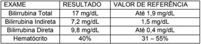
A Trombose Venosa Profunda (TVP), é uma condição que:
Assinale a alternativa correta com relação ao manejo da via aérea em casos em que há suspeita de lesão cervical.
Uma lesão esplênica caracterizada por laceração envolvendo vasos segmentares ou hilo, produzindo maior desvascularização, em mais de 25% do baço, pode ser classificada como:
Assinale a alternativa correta em relação às Lesões Cardíacas Contusas.
Assinale a alternativa que é a primeira opção de tratamento para adenocarcinoma de próstata com metástases, sintomático, com lesões secundárias em coluna lombar, cuja função é reduzir ação da testosterona nas células neoplásicas:
Paciente 70 anos, com queixa de disfagia progressiva há aproximadamente 04 meses, inicialmente para sólidos, atualmente com di culdade para líquidos. Foi realizado exame endoscópico que diagnosticou carcinoma espinocelular de terço médio de esôfago. Hoje é admitido em leito de terapia intensiva após realização de esofagectomia subtotal trans-hiatal com piloroplastia. No momento da admissão encontra-se sem sedação, ventilando em ar ambiente, estável hemodinamicamente sem necessidade de vasopressores, diurese satisfatória, controles glicêmicos normais, recebendo dieta enteral (com sonda nasoenteral passada no intra-operatório) e nutrição parenteral total. Ao exame físico: regular estado geral, emagrecido, IMC: 16 kg/m², descorado, desidratado (+/4+), anictérico. Sem alterações cardiopulmonares. Abdome ácido, indolor, sem sinais de peritonite. Cicatrizes cirúrgicas limpas e secas. Após 12 horas de observação apresenta confusão mental, dispneia, oligúria e taquicardia. São solicitados exames laboratoriais que revelam hipocalemia, hipofosfatemia grave, hipomagnesemia; Eletrocardiograma e Radiogra a de tórax normal. A principal hipótese diagnóstica é:
Paciente de 65 anos, internado em unidade de terapia intensiva para tratamento de pneumonia viral e síndrome respiratória aguda grave. Em ventilação mecânica invasiva e dieta por sonda nasoenteral. Apresentou distensão abdominal, quando foram realizadas algumas lavagens com solução glicerinada sem retorno satisfatório. Não apresenta diarreia. Exames séricos normais. A tomogra a de abdome não evidencia lesões obstrutivas. Trata-se, possivelmente, de:
Paciente vítima de trauma encefálico grave há 1 mês, permaneceu em ventilação mecânica em terapia intensiva com tubo orotraqueal por 19 dias, pois seu nível neurológico oscilava durante a internação. Após extubação, recebeu alta sem intercorrências. Hoje, 1 mês após a alta é admitido em sala de emergência queixando-se de dispneia progressiva, rouquidão e apresenta ao exame físico estridor laríngeo. Qual a hipótese diagnóstica mais provável?
A hipospádia é descrita como uma malformação em que o óstio uretral se encontra em região atípica na face ventral do pênis. A correção cirúrgica costuma ser necessária para restaurar a anatomia e é indicada após os 06 meses de idade. Sobre a hipospádia ilustrada abaixo, assinale a correta.
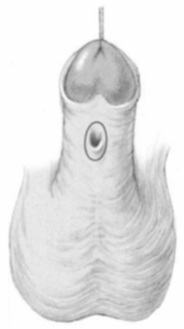
Paciente jovem é vítima de atropelamento de alta energia cinética em rodovia. É admitido em prancha rígida e com colar cervical e atendido pelo protocolo americano de trauma. A - Via aérea pérvia, com colar cervical. B - Murmúrio presente bilateral, sem ruídos adventícios. Boa expansibilidade. Saturação periférica de oxigênio em ar ambiente: 98%. C - Bulhas rítmicas, taquicárdicas. Pulso filiforme. FC: 130bpm. PA: 80x40 mmHg. D - Glasgow 14. Pupilas isocóricas, fotorreagentes, sem déficits focais. E - Sem lesões ameaçadoras à vida. Achado na avaliação secundária hematoma na parede anterior do abdome e flanco esquerdo, doloroso à palpação, sem sinais de irritação peritoneal. Após atendimento inicial, expansão e transfusão de hemoderivados apresentou estabilidade hemodinâmica que permitiu realizar a tomografia de abdome abaixo. A principal hipótese diagnóstica é:

Paciente jovem é vítima de atropelamento de alta energia cinética em rodovia. É admitido em prancha rígida e com colar cervical e atendido pelo protocolo americano de trauma. A - Via aérea pérvia, com colar cervical. B - Murmúrio presente bilateral, sem ruídos adventícios. Boa expansibilidade. Saturação periférica de oxigênio em ar ambiente: 98%. C - Bulhas rítmicas, taquicárdicas. Pulso filiforme. FC: 130bpm. PA: 80x40 mmHg. D - Glasgow 14. Pupilas isocóricas, fotorreagentes, sem déficits focais. E - Sem lesões ameaçadoras à vida. Achado na avaliação secundária hematoma na parede anterior do abdome e flanco esquerdo, doloroso à palpação, sem sinais de irritação peritoneal. Após atendimento inicial, expansão e transfusão de hemoderivados apresentou estabilidade hemodinâmica que permitiu realizar a tomografia de abdome abaixo. Sobre a condução do caso acima, assinale a correta.

Paciente jovem é vítima de trauma abdominal fechado de alta energia cinética. Durante o atendimento inicial foi visualizado uretrorragia e edema importante de região perineal. Permanece estável hemodinamicamente e realizou a tomogra a abaixo após instilação retrógrada de contraste hidrossolúvel por meio de sonda Foley. Sobre os achados acima, assinale a alternativa correta.
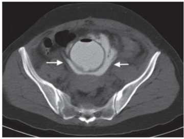
O pneumoperitônio é uma causa de abdome agudo cirúrgico, cuja etiologia principal corresponde a perfuração de vísceras ocas do trato gastrointestinal. É definido quando há presença de gás intra-abdominal livre na cavidade. Pode ser diagnóstico através de avaliação clínica e radiológica. Sobre a propedêutica na emergência destes casos, a assinale a correta.
No atendimento a pacientes vítimas de queimaduras, após a estabilização inicial, deve-se iniciar o processo de transferência para serviço de referência que possa manejar a complexidade do cuidado, caso seja indicado. A respeito da transferência de pacientes queimados para centro de referência é correto a rmar que
A apendicite aguda (AA) está entre as causas mais comuns de dor abdominal baixa, que levam os pacientes ao pronto-socorro, e o diagnóstico mais comum feito em pacientes jovens internados com abdome agudo. Com base nas diretrizes atuais acerca da AA, assinale a alternativa correta.
O manejo da colecistite aguda tem passado por mudanças nas últimas décadas. Atualmente, são utilizadas as Diretrizes de Tokyo para critérios de diagnóstico e classificação da gravidade da colecistite aguda e da colangite aguda. Considerando essas diretrizes, assinale a alternativa correta.
Um paciente de 35 anos de idade, vítima de acidente automobilístico em que era o motorista, foi ejetado do veículo, foi levado pelos bombeiros inconsciente, hipotenso com PA = 90 mmHg x 60 mmHg, FC = 128 bpm e taquicárdico. Em relação ao atendimento inicial ao trauma, preconizado pelo Advanced Trauma Life Suport (ATLS), assinale a alternativa correta.
Um paciente de 16 anos de idade compareceu ao pronto-socorro com queixa de dor súbita e intensa em região escrotal à direita, associada a náuseas e a vômitos, que persiste há quatro horas. Ao exame físico, o escroto encontra-se edemaciado, endurecido e eritematoso, e o testículo direito está sensível, inchado e ligeiramente elevado. Com base nesse caso clínico, assinale a alternativa correta.
Uma paciente de 40 anos de idade, sem o diagnóstico de doenças prévias, procurou assistência no pronto- socorro por apresentar dor em cólica, localizada em hipocôndrio direito, com irradiação para a escápula direita 30 minutos após ter participado de uma feijoada da empresa em que trabalha. O sintoma associa-se a náuseas e vômitos. O exame físico mostrou a paciente com fácies de dor e com IMC igual a 40 kg/m². Nesse caso, a causa mais provável da dor é
Qual das seguintes drogas é a melhor escolha para intubação de um paciente politraumatizado com instabilidade hemodinâmica?
Com relação à avaliação de paciente com suspeita de trauma abdominal, é possível afirmar que:
Assinale a alternativa incorreta.
Sobre a apendicite aguda, assinale a correta.
A ilustração abaixo representa de forma esquemática e radiológica uma das causas mais comum de abdome agudo obstrutivo. São achados clássicos encontrados no/na:

Sobre a veia femoral, assinale a alternativa correta.
Paciente de 14 anos, sexo masculino comparece ao PS trazido pela mãe por surgimento de edema e massa palpável no joelho esquerdo há cerca de 2 meses associado à presença de aumento da rede venosa e calor local. Refere que a dor e o edema estão progressivamente aumentando. A mãe percebeu emagrecimento de cerca de 8 kg no período. Devido a faixa etária do paciente, o tempo de evolução e os sintomas apresentados, assinale a alternativa com o diagnóstico mais provável e as regiões mais acometidas pela lesão em questão.
Paciente de 53 anos, masculino natural e procedente de Campinas-SP é hipertenso em uso regular de clortalidona 25mg/dia. Ele foi jogador pro ssional de futebol, mas acabou interrompendo a carreira por conta de uma grave lesão ligamentar no joelho esquerdo há 20 anos. Nos últimos anos vem desenvolvendo uma dor crônica neste joelho, de característica mecânica, que é aliviada parcialmente por analgésicos, sendo que nos últimos 3 meses vem limitando as aulas que dá na academia, o ato de dirigir e até mesmo de caminhar. Com um diagnóstico de osteoartrite de joelho esquerdo secundária a trauma prévio, há indicação de uma artroplastia de joelho com o paciente. Assinale a alternativa que descreve o conjunto de ações a serem realizadas na internação, pertinentes à realização de cirurgia segura evitando um erro de lateralidade.
Paciente diabético com anemia crônica mantendo níveis de hemoglobina (HB) entre 8,5 e 10, 0 g/dL apresenta quadro de colecistite aguda litiásica, com quadro de dor abdominal e febre há 24 horas. Após ser internado, recebeu tratamento inicial com antibioticoterapia e hidratação, e foi colhida nova medida de Hb de 9,2g/dL. Baseado nos conceitos de transfusão pré-operatória, assinale a alternativa que descreve a conduta que o cirurgião deverá seguir.
Paciente de 70 anos, masculino, com obesidade grau II, é submetido a cirurgia para correção de hérnia incisional de incisão mediana realizada há 20 anos. Foi realizada extensa dissecção e colocação de tela de prolene, devido a extensão da hérnia. Assinale a alternativa com a conduta para evitar complicações pós-operatórias.
Paciente de 32 anos, masculino, foi vítima de trauma abdominal fechado após ser atropelado. Chega ao hospital terciário com extremidades frias, enchimento capilar lenti cado e pulsos periféricos de difícil detecção. Diante dos dados apresentado, assinale a alternativa com a principal hipótese diagnóstica e a investigação mais apropriada.
Revisar: possível letra faltando em enunciado
Paciente de 18 anos, masculino, vítima de agressão física com trauma direto em crânio com garrafa deu entrada no PS consciente, orientado e Glasgow 15. No atendimento inicial foi realizada sutura de ferimento corto- contuso em couro cabeludo em região temporal à direita e solicitado Raio X de crânio que resultou normal, e na sequência foi liberado de alta. Seis horas após a liberação retornou ao PS com queixa de cefaleia e sonolência. Diante do exposto, assinale a alternativa com a conduta.
Paciente de 62 anos, masculino procura o médico da ESF porque deseja fazer o rastreamento para o câncer de próstata. Não tem queixas e nega comorbidades. Está preocupado pois seu pai faleceu pela doença aos 65 anos. Traz exames de PSA: 2019 – PSA: 3,5 ng/mL; 2022 – PSA: 18,9 ng/mL; (Valor de referência: <4,0ng/mL); Diante do quadro, assinale a conduta a ser realizada.
RN de parto cesáreo indicado por polihidrâmnio com idade gestacional 38 semanas, sexo masculino, com 2.900 gramas, 49cm, Apgar 9 e 10 estava no alojamento conjunto da maternidade com 24 horas de vida, quando após a mamada, apresentou vômitos biliosos repetitivos e leve distensão abdominal. Na radiogra a de abdome observamos distensão de gástrica (abaixo). Diante do quadro assinale a alternativa com o diagnóstico adequado.
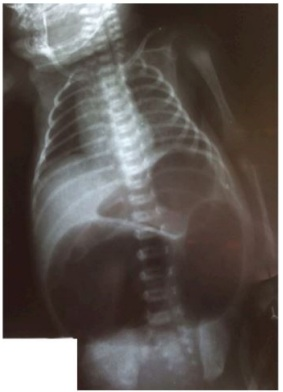
Motociclista de 45 anos, hipertenso em uso de betabloqueador e AAS 100mg ao dia, devido quadro de HAS, sofreu colisão contra veículo parado e foi arremessado contra o asfalto. No atendimento inicial, realizado no local pelo resgate encontrava-se com capacete, FR 24 ipm, FC 84bpm, cianose em lábios, gemente e contactuante. Na UPA, ao exame físico apresentava equimoses em região de tórax à esquerda, discreta diminuição do murmúrio vesicular ipsilateral e macicez à percussão. Baseado nesse cenário, assinale a alternativa com a sequência de atendimento do politraumatizado com objetivo de dar suporte à vida até a transferência para centro especializado.
Paciente de 18 anos, sexo masculino, dá entrada no PS com queixa de dor lombar e hematúria há 1 hora. Estava jogando futebol e ao tentar fazer um gol de bicicleta, teve um trauma na costela. Após o término do jogo apresentou hematúria franca, total e indolor. Nega febre ou disúria. Ao exame físico: sinais vitais normais, dor à palpação da 12ª costela do lado esquerdo. Foi submetido a radiogra a de arcos costais que identi cou fratura da 12ª costela esquerda e Tomogra a Computadorizada com contraste via oral e intravenoso (abaixo). Assinale a alternativa que descreve o grau do trauma renal evidenciado pelo exame e a melhor conduta para o caso.
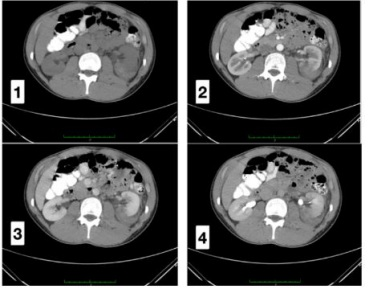
Mulher de 55 anos, em consulta com gastroenterologista, relata dor abdominal recorrente de início há sete meses, localizada em hipocôndrio direito, de moderada intensidade, precipitada por ingesta de alimentos gordurosos e melhora com antiespasmódico. Eventualmente acompanha náuseas e vômitos. Paciente sem antecedentes médicos relevantes, sedentária, sem uso de medicamentos contínuos e sem cirurgias prévias. Ao exame físico, FC: 80bpm, PA: 120x70mmHg, IMC: 31kg/m². Exame cardiopulmonar sem alterações, abdome ácido, pouco doloroso à palpação de hipocôndrio direito, sem massas ou visceromegalias identificáveis ao exame, com ruídos hidroaéreos presentes. Diante deste caso, assinale a alternativa com aa conduta inicial mais adequada.
Homem de 32 anos, sem comorbidades, vítima de um grave acidente automobilístico moto contra carro (ele era o motociclista e usava capacete), é trazido pelo corpo de bombeiros a unidade de emergência onde é iniciado o protocolo de atendimento com monitorização, acesso venoso, oxigênio por meio de máscara não reinalante a 15l/min, um ECG 12 derivações e o preparo do material para intubação orotraqueal. Ao exame físico: paciente apresentando múltiplas escoriações e equimoses em todo o corpo, membro inferior direito rodado externamente e mais curto que o esquerdo, rebaixamento do nível de consciência, sem abertura ocular a dor, emitindo alguns sons incompreensíveis e etindo anormalmente os membros superiores à dor. Pupilas isocóricas, não fotorreagentes. No monitor multiparamétrico PA: 170x95 mmHg; FC: 48 bpm; FR: 10 irpm; Sat: 90%. Ausculta com Murmúrio vesicular reduzido em base direita, sem ruídos adventícios. Ritmo cardíaco regular, em dois tempos e sem sopros. ECG realizado na sala de emergência: Considerando a hipótese principal, escolha a alternativa que melhor aponta o sistema ou órgão envolvido e o exame complementar que poderia ajudar a confirmar seu diagnóstico rapidamente.
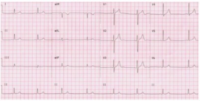
Criança de 6 anos, vítima de acidente automobilístico, dá entrada em PS trazida por familiares, consciente, chorosa, com di culdade para respirar, taquidispneica, PA estável, taquicárdica, com saturação de O2 baixa, escoriação em hemitórax direito, sem sangramento ativo. A equipe de plantonistas prestou atendimento seguindo as etapas do ATLS e foi constatada presença de pneumotórax simples. Após drenagem torácica, houve melhora do quadro respiratório. Com relação ao trauma torácico nesta criança, é correto afirmar que
Criança de 6 anos, vítima de acidente automobilístico, dá entrada em PS trazida por familiares, consciente, chorosa, com di culdade para respirar, taquidispneica, PA estável, taquicárdica, com saturação de O2 baixa, escoriação em hemitórax direito, sem sangramento ativo. A equipe de plantonistas prestou atendimento seguindo as etapas do ATLS e foi constatada presença de pneumotórax simples. Após drenagem torácica, houve melhora do quadro respiratório. Supondo que essa criança tivesse tido um traumatismo cranioencefálico associado ao trauma torácico e que o nível de consciência dela estivesse se deteriorando, a intubação orotraqueal se faria necessária. Assinale a alternativa que descreve especi cidades da criança que devem ser observadas para realizar esse procedimento.
Um homem com 49 anos queixa-se de dor abdominal intermitente em forma de cólica há 18 horas, acompanhada de vômitos biliosos. Ele diz que os sintomas começaram aproximadamente três horas após o almoço do dia anterior, melhoraram depois que vomitou, mas retornaram cerca de duas horas depois. Ele sentiu vontade de evacuar logo após o início da dor, mas não houve eliminação de ato nem de fezes desde então. O paciente nega quaisquer episódios semelhantes prévios e não tem outros sintomas clínicos no momento. Foi submetido a uma laparotomia exploradora por traumatismo abdominal há três anos. Ao exame, T: 36,5ºC, FC: 105 bpm, PA: 140/80 mmHg e FR: 24 mpm. Abdome: distendido, cicatriz na linha média supra e infraumbilical, RHA aumentados, com surtos ocasionais de timbre metálico, discretamente doloroso à palpação profunda, DB negativo. Toque retal sem fezes na ampola retal. Os exames laboratoriais revelam níveis normais de eletrólitos. A leucometria é de 16.000/mm2, com 85% de neutró los, 4% de bastões, 10% de linfócitos e 1% de monócitos; a hemoglobina e o hematócrito são de 18 g/dL e 48% respectivamente. Foram feitas radiogra as abdominais nas posições supina e ortostática, que mostram o intestino delgado dilatado, com níveis hidroaéreos presentes. Qual é o diagnóstico sindrômico mais provável?
Mulher, 74 anos, diabética, com quadro de colecistite foi submetida a uma colecistectomia por videolaparoscopia de urgência, durante a qual houve vazamento de bile. Com relação à antibioticoterapia para esse caso, assinale a alternativa correta.
Mulher de 44 anos, aposentada, procura atendimento médico por quadro de dor e abaulamento na região inguinal à direita há 8 meses, o que vem atrapalhando suas atividades diárias. Como antecedente pessoal, paciente é portadora de HAS e DMII, tabagista 30 maços-ano. Pai falecido com doença cardíaca. Ao Exame Físico, constatada hérnia inguinal direta – NYHUS II, redutível, à direita. Assinale a alternativa que melhor descreve a conduta para esse caso.
Mulher, 32 anos, dá entrada em pronto socorro com história de queda da própria altura na rua, com ferimento corto contuso extenso em antebraço, não atingindo a superfície articular, com sinais de sangramento. A melhor sutura a ser realizada e o fio mais adequado a ser utilizado são respectivamente:
A ginecologia nada mais é do que uma grande clínica médica com particularidades de gênero. Desse modo, as complicações cirúrgicas representam para o médico uma espécie de insucesso e, para o paciente, situação de má prática. Essa dualidade somente será desfeita se seguidas algumas regras básicas pelo médico, por sua equipe e pela paciente operada. Quanto à antibioticopro laxia nas cirurgias ginecológicas, assinale a alternativa que demonstra corretamente quando ela deve ser indicada.
O retroperitônio é um espaço anatômico virtual que se situa entre o peritônio parietal posterior e os músculos da parede posterior do abdômen. Esse espaço inclui órgãos como o pâncreas, parte do duodeno, rins, ureteres, artéria aorta abdominal, veia cava inferior, parede posterior da bexiga, glândulas suprarrenais, músculos, vasos sanguíneos, vasos linfáticos, nervos, gânglios e tecido conectivo fibroso. No trauma abdominal fechado, com o achado, durante a laparotomia, de hematoma retroperitoneal da Zona I de Kudsk-Sheldon
De ne-se como hérnia lombar a presença de falha na fáscia transversal ou na aponeurose do músculo transverso do abdome que resulta na extrusão de órgãos intra ou extraperitoneais através da descontinuidade da parede abdominal póstero-lateral. A hérnia lombar de Petit ocorre no triângulo lombar inferior, cujos limites anatômicos são:
Paciente de 45 anos, 70Kg, vítima de trauma abdominal penetrante, dá entrada na emergência apresentando os seguintes parâmetros hemodinâmicos: PA 60 x 40mmHg; FC 145bpm; FR 35irpm; diurese 5ml/h. Qual a estimativa da perda sanguínea desse paciente (%) e como esta perda deve ser reposta de forma correta:
Para a adequada reposição volêmica de um paciente em estado de choque por perda aguda de sangue, cateterismo intravenoso periférico deve ser imediatamente obtido. Pela Lei de Poiseuille, ao duplicar o diâmetro de um cateter de infusão venosa, o fluxo aumenta
Qual a composição da solução de Hartmann?
O íleo pós-operatório é definido como a cessação temporária do peristaltismo intestinal coordenado após a cirurgia, restringindo a passagem do conteúdo intestinal e tornando o paciente incapaz de tolerar a ingestão oral de líquidos ou alimentos sólidos. Segundo o conceito do protocolo perioperatório multimodal ERAS (Enhanced Recovery After Surgery – Recuperação Otimizada Após a Cirurgia), apenas três (03) medidas foram mostradas em meta-análise (nível de evidência IA) como capazes de encurtar a duração do íleo pós- operatório. São elas:
Uma fístula enterocutânea é uma conexão aberrante entre o trato gastrointestinal e a pele/ferida. Todos os fatores preditivos abaixo são considerados desfavoráveis para o fechamento espontâneo das fístulas enterocutâneas, exceto:
Paciente portador de isquemia mesentérica aguda é submetido à laparotomia com achado intraoperatório de trombose da artéria ileocecocólica e necrose do segmento intestinal por ela irrigado. Na síndrome do intestino curto que este paciente desenvolverá após ressecção do segmento comprometido, quais serão os principais nutrientes que sofrerão déficit de absorção?
O tecido de granulação formado durante a fase proliferativa da cicatrização é um tecido inflamatório jovem, muito vascularizado, formado por água, proteínas, células inflamatórias, broblastos, colágeno, citocinas, complemento, glicoproteínas, proteoglicanos, fibrina e neovasos em grande quantidade. Durante o processo de cicatrização, esse tecido sofre um processo de remodelagem, quando ocorrem os seguintes fenômenos, exceto:
Todas as condições abaixo são critérios para iniciar suporte nutricional no perioperatório, exceto:
Paciente desnutrido foi submetido à cirurgia abdominal de urgência por abdômen agudo perfurativo. Todos os princípios abaixo devem nortear o suporte nutricional no período pós operatório nesse tipo de paciente, exceto:
O antibiótico escolhido para pro laxia em cirurgia deve cobrir o espectro de patógenos mais comuns que causam infecção do sítio cirúrgico. As mais recentes diretrizes recomendam a cefazolina como droga de escolha para a maioria dos procedimentos cirúrgicos. Em caso de pacientes alérgicos aos beta-lactâmicos, quais as opções indicadas de antibiótico profilático para cobertura de germes gram-positivos?
Paciente masculino 17 anos, trazido ao pronto socorro, protocolado, com história de capotamento de veículo em baixa velocidade sem vítimas fatais. Refere dor cervical importante sem dé cit motor ou sensitivo. No atendimento à vítima foi realizada a tomogra a cervical que evidenciou a fratura da pars interarticularis de C2. O nome atribuído a essa fratura é
Uma paciente de 63 anos diabetica é diagnosticada com diverticulite aguda, primeiro episódio, no exame de imagem se observa leve espessamento da parede do sigmoide associado a um pequeno abscesso de 2 cm e a divertículos sem outras complicações. Apresenta dor em fossa ilíaca esquerda sem descompressão brusca e, nos exames laboratoriais, uma leucometria normal associada a uma PCR de 8.35. O tratamento adequado consiste em:
Um novo sistema de classificação da diverticulite colônica aguda do lado esquerdo foi proposto e publicado em 2015, agora universalmente aceito para a prática diária. Esse sistema é baseado em achados de tomogra a computadorizada e guia a decisão terapêutica. Em qual estágio dessa classificação e de que forma pode ser tratado inicialmente um paciente que apresenta abscesso diverticular de 3,5cm?
A perfuração do ceco nas obstruções em alça fechada do cólon é explicada pela lei de
O principal e mais grave distúrbio metabólico na síndrome da realimentação está relacionada ao
Em relação ao preparo pré-operatório do paciente cirúrgico, é correto afirmar, exceto:
A técnica de Stamm é utilizada na confecção de
Paciente de 89 anos feminina com história de dor tóraco-abdominal, vômitos inicialmente alimentares que progrediram para salivares com laivos de sangue e, no momento da admissão no pronto atendimento, pela incapacidade de vômito, distensão abdominal importante. O médico socorrista tentou passar uma sonda nasogástrica no intuito de aliviar a distensão, sem sucesso. O diagnóstico mais provável e seu tratamento adequado são:
O valor da pressão de perfusão abdominal em um paciente com uma PIA aferida de 27 mmHg e uma Pressão arterial sistêmica de 87 x 60 mmHg é de
No tratamento das hérnias de parede abdominal, a técnica de Ramirez consiste em:
Que droga representa atualmente a terapia anticatabólica mais eficaz no tratamento das queimaduras, capaz de, em doses tituladas, reduzir a in ltração gordurosa hepática, a perda de massa muscular esquelética, a quantidade de insulina necessária para reduzir os níveis de glicose elevados e a frequência cardíaca em 15 a 20%?
A complicação mais comum relacionada ao uso de cateter venoso destinado à infusão de nutrição parenteral total é:
A lesão de nervos periféricos é uma complicação conhecida da anestesia. A lesão mais comum ocorre
Qual o valor normal da pressão intra-abdominal nas punções com agulha de veress observada no visor do insu ador em paciente normotró cos e hígidos, sob relaxamento adequado que será submetido a procedimento laparoscópico?
Revisar: possível letra faltando em enunciado
No paciente politraumatizado, a hipotermia
Paciente masculino, 47 anos, com história de desconforto abdominal difuso com migração para a fossa ilíaca esquerda. Refere hiporexia, febre e calafrios associados à náuseas e vômitos. Ao exame físico apresenta dor em fossa ilíaca à esquerda com descompressão brusca positiva também à esquerda. Refere antecedentes familiares com dextrocardia. Levando em conta o quadro clínico e os antecedentes pode-se a rmar que o diagnóstico sindrômico e etiológico mais provável é
No período pós-operatório de grandes cirurgias, três (03) hormônios atuam em conjunto produzindo substrato energético para o estado de hipermetabolismo às custas de processos como glicogenólise, gliconeogênese, lipólise e cetogênese. Esses hormônios são chamados de contrarreguladores ao induzirem um estado de hiperglicemia e a sua atuação conjunta é conhecida como sinergismo permissivo. Esses hormônios são:
As hérnias pleuroperitoneais posterolaterais congênitas são conhecidas mais comumente como hérnias de:
Mulher de 65 anos de idade procura a emergência por dor abdominal em cólica, localizada principalmente em hipogástrio, há 5 dias com parada de eliminação de fezes e atos no mesmo período. Nega febre. Ao exame clínico, encontra-se em bom estado geral, afebril, consciente e orientada. Sinais vitais estáveis. Abdome globoso, ácido, doloroso à palpação do hipogástrio, sem sinais de irritação peritoneal. Toque retal sem lesões tocáveis, sem sangue. Os exames complementares estão normais. Realizou a tomogra a computadorizada de abdome total disponibilizada a seguir. O diagnóstico apresentado pela paciente é:
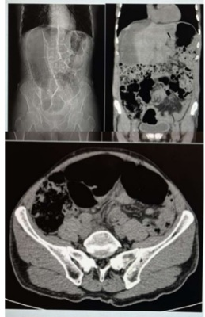
Homem, 40 anos de idade, vítima de ferimento por arma branca em hemitórax direito, é trazido pelo SAMU para a emergência. Dados da cena: frequência cardíaca 130bpm, pressão arterial 80x50mmHg, saturação de oxigénio 88% em ar ambiente, escala de coma de Glasgow 15. Intervalo de tempo 30 minutos. Apresenta vias aéreas pérvias com colar cervical, saturação de oxigênio 88% em ar ambiente, subindo para 90% com máscara de oxigênio 12L/min, sem desvio de traqueia e sem turgência jugular. Expansibilidade torácica diminuída à direita, com murmúrios vesiculares diminuídos à direita e hipertimpanismo à percussão em hemitórax direito. Frequência respiratória 22irpm, pressão arterial 70x50mmHg e frequência cardíaca 140bpm. Abdome plano, ácido e indolor. Pelve estável, toque retal sem alterações. Escala de coma de Glasgow 15, pupilas isocóricas e fotorreagentes. Sem dor na coluna vertebral. Presença de ferimento de 8cm em hemitórax direito, em terceiro/quarto espaços intercostais, sem sangramento ativo, com exposição de estruturas profundas conforme imagem a seguir. A sequência de tratamento inicial para esse paciente deve ser respectivamente:

Mulher, 68 anos de idade, procura a emergência por dor abdominal em cólica associada a náuseas, vômitos e parada de eliminação de fezes e atos há 3 dias. Nega febre. Refere perda ponderal de 5kg (60kg para 55kg) nos últimos 3 meses. Nega cirurgias prévias. Ao exame clínico, encontra-se em bom estado geral, desidratada 1+/4+ com pressão arterial 110x70mmHg e frequência cardíaca 90bpm. Abdome distendido, ruídos hidroaéreos aumentados, ácido, doloroso à palpação profunda difusamente, sem sinais de irritação peritoneal. Toque retal sem sangue, sem lesões tocáveis, sem fezes. Realizou a tomogra a computadorizada de abdome total disponibilizada a seguir: Considerando o quadro clínico e o exame de imagem, qual é o diagnóstico da paciente?
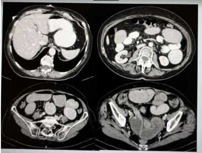
Mulher, 42 anos de idade, trazida ao pronto atendimento após queimadura por água quente há 2 horas. Em avaliação primária, estável hemodinamicamente, sem sinais de acometimento de vias aéreas, com a alteração do exame físico mostrada em imagem a seguir e representada no desenho ao lado. Nega comorbidades e alergias. Apresenta esquema vacinal de tétano completo, com última dose de reforço há 7 anos. Peso aproximado de 80kg. Em relação ao caso apresentado, deve-se:

Homem, 39 anos de idade, trazido pelo SAMU após acidente de motocicleta contra automóvel. Dados locais: frequência cardíaca 108bpm, pressão arterial 100x70mmHg, frequência respiratória 20irpm, saturação de oxigênio 92% em ar ambiente, escala de coma de Glasgow 14 por abertura ocular ao estímulo verbal. Intervalo de tempo de 30 minutos. Em uso de colar cervical e prancha rígida. Em avaliação inicial: vias aéreas pérvias, colar cervical bem locado, saturação de oxigênio 92% em ar ambiente, 97% após colocação de máscara de oxigênio em 12L/min, sem alterações cervicais. Expansibilidade torácica simétrica e normal, ausculta cardiopulmonar sem alterações. Frequência respiratória 17irpm, frequência cardíaca 100bpm, pressão arterial 100x70mmHg. Abdome ácido, doloroso à palpação de hipocôndrio esquerdo, sem sinais de irritação peritoneal, pelve estável. Toque retal sem lesões, sem espículas ósseas, sem sangramento. Escala de coma d e Glasgow 12 por abertura ocular ao estímulo verbal e resposta verbal confusa. Pupilas isocóricas e fotorreagentes, sem dé cits neurológicos focais. Realizou tomogra as computadorizadas de crânio e abdome total, disponibilizadas a seguir: Uma hora após a admissão, o paciente evoluiu com piora do rebaixamento do nível de consciência, frequência cardíaca 130bpm, pressão arterial 80x50mmHg, sem alterações em vias aéreas e avaliação respiratória. Em relação à conduta indicada para esse paciente, podemos afirmar:

Homem, 18 anos de idade, procura a emergência por dor em testículo esquerdo há quatro horas. Nega trauma, febre e episódios prévios. Os achados do exame físico e a imagem da ultrassonogra a doppler são evidenciados a seguir. Qual é o diagnóstico e a respectiva conduta para o caso?

Homem, 70 anos de idade, internado há 60 dias por acidente vascular encefálico. Encontra-se em leito de enfermaria, em uso de traqueostomia, gastrostomia para alimentação e sondagem vesical de demora por bexiga neurogênica. Após os primeiros 21 dias de internação, o paciente desenvolveu lesão por pressão em região sacral, sendo avaliado pela equipe de Cirurgia, que orientou alternância de decúbito, nutrição adequada e cuidados locais com a ferida. Há dois dias, o paciente passou a apresentar episódios de febre de 38°C, associados a calafrios, evoluindo hoje com sonolência e hipotensão arterial. Foi solicitada nova avaliação da equipe de Cirurgia. A lesão sacral é mostrada a seguir. Em relação ao caso apresentado, é correto afirmar:

Mulher, 30 anos de idade, procura a emergência por dor em hipogástrio associada a disúria e polaciúria há 6 dias. Relata ter procurado outro serviço após dois dias de sintomas, sendo prescrito nitrofurantoína para tratamento de infecção urinária. Há dois dias, apresentou piora da queixa álgica e febre máxima de 38,2°C. Ao exame clínico, encontra-se em bom estado geral, com temperatura axilar 38,1°C, pressão arterial 110x70mmHg e frequência cardíaca 96bpm. Abdome plano, doloroso à palpação em hipogástrio, sem massas palpáveis. Os exames laboratoriais evidenciam: hemoglobina 12,1g/dL (VR 11,5 - 14.9g/dL); leucócitos 18. 100/mm³ (VR 4.000 - 11.000/mm³); PCR 203mg/L (VR < 3mg/L); restante normal. Urina tipo I: hemácias ausentes, leucócitos 45.000/mm³, nitrito negativo. Realizou a tomogra a computadorizada de abdome total evidenciada a seguir: Qual é a conduta para esta paciente?

Mulher, 30 anos de idade, encaminhada ao ambulatório de Cirurgia Geral por abaulamento em parede abdominal há 2 meses. Nega queixas álgicas, alterações urinárias ou intestinais. Ao exame clínico, o abdome encontra-se plano, ácido, indolor, com abaulamento abaixo do ligamento inguinal durante a manobra de Valsalva, com redução espontânea ao repouso (foto do exame físico durante realização da manobra de Valsalva a seguir): Em relação ao quadro clínico apresentado, é correto afirmar:
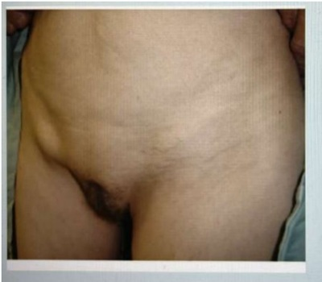
Um jovem de 15 anos de idade bate a cabeça na trave do gol e desmaia. É levado a um serviço de emergência. Encontram-se na sala de espera 4 pessoas: uma jovem de 15 anos com história de dor epigástrica há 1 dia, um idoso de 72 anos com história de febre e tosse há 2 dias e um casal na faixa dos 35 anos com diarreia. Assinale a alternativa correta.
Homem de 25 anos é trazido para sala de emergência pelo SAMU com história de trauma moto em via de alta velocidade. Na cena foi entubado e deu entrada no serviço sedado com cetamina em com PA: 80x50mmHg e FC: 122bpm. Ausculta abolida em hemitórax direito, com macicez à percussão. Em relação ao caso descrito, assinale a alternativa CORRETA:
Após avaliação de um paciente com trauma abdominal admitido no pronto socorro, analise as a rmativas a seguir: I - Deve-se passar um cateter vesical antes da realização do FAST para avaliar líquido no fundo de saco na pelve. II - Hematúria macroscópica indica lesão de bexiga, ureteres, ou do rim. III - Ausência de hematúria exclui lesão injúria ao trato genitourinário. IV - Paciente com equimose perineal ou hematoma escrotal deve ser mandatório realizar uretrogra a retrograda. Está(ão) CORRETA(S) as afirmativas:
Na avaliação do traumatismo craniano, é CORRETO afirmar que:
Mulher, 45 anos, portadora de hipertensão arterial sistêmica, deu entrada no Pronto Atendimento com dor abdominal difusa e vômitos. No exame físico: corada, desidratada ++/4, dispneica +/4, febril, ictérica ++/4, acianótica, dor abdominal difusa no abdome, descompressão brusca ausente. Realizados exames laboratoriais mostrando hemograma mostrava leucocitose de 16.000, ionograma normal, amilase de 890mgr/dl, ALT de 120, AST de 134, Glicemia de 140mgr/dl, bilirrubina total de 3,8 com 2,8 de direta e 1,0 de indireta. Ultrassom revela cálculos na vesícula e dilatação de vias biliares intra e extra-hepática, com imagem suspeita de cálculo em colédoco distal. Considerando o caso descrito, assinale a alternativa que apresenta a MELHOR conduta para essa paciente.
No bloco cirúrgico um paciente foi submetido a correção cirúrgica aberta denominada de técnica de McVay. Nesse caso é CORRETO afirmar que se trata de uma hérnia:
Leia o trecho a seguir: Um paciente internado com quadro de obstrução intestinal, apresenta no RX de abdome agudo imagem _______________ cujo tratamento deve ser a princípio _______________. Assinale a alternativa que preenche CORRETAMENTE as lacunas.
Homem de 40 anos, portador de drepanocitose foi submetido a colecistectomia laparoscópica para colecistite aguda. Na cirurgia, vesícula bem in amada e houve avulsão da artéria cística durante a dissecção do triângulo de Calot. Foi necessário transfusão de 600ml de papa de hemácias, a m de manter estabilidade hemodinâmica. Recebeu alta hospitalar após 7 dias de internação. Após cerca de 45 dias o paciente retorna ao hospital com icterícia, tendo bilirrubinas totais de 8mg/dl, sendo 4,8mg/dl às custas de direta, associado à elevação da fosfatase alcalina e ultrassom com colédoco de 8mm. Considerando o caso descrito, assinale a alternativa que apresenta o diagnóstico MAIS provável para esse paciente.
Com base nos casos clínicos a seguir, responda à questão Caso clínico 1: em região umbilical. Ao exame, foi identi cado abaulamento da região umbilical com desconforto e dor à Manobra de Valsalva com redução do conteúdo herniado. Obesidade grau II. Caso clínico 2: inguinal com piora progressiva. Ao exame, foi evidenciado abaulamento da região inguinal sem possibilidade de redução do conteúdo herniado com forte dor à manobra de Valsalva. Obesidade grau I. Nos dois casos, a principal hipótese diagnóstica e a melhor conduta, respectivamente, são:
Revisar: possível letra faltando em enunciado
Homem de 21 anos procura atendimento devido à in amação crônica em região sacrococcígea. Ele também relata que tem apresentado episódios de exacerbação desde que iniciou a faculdade, que passa muitas horas sentado estudando e que já realizou diversos tratamentos com antibióticos. Ao exame, observou-se lesão in amada localizada na prega interglútea ao nível da região sacrococcígea. A condição da doença pilonidal na região sacrococcígea e a conduta adequada, respectivamente, são:
O diagnóstico clínico presuntivo e a forma de pesquisar o sinal de Murphy, respectivamente, são:
Paciente de 32 anos chega ao consultório com queixa de dor abrupta de forte intensidade em região epigástrica, iniciada há dois dias e sem melhora com analgesia comum (dipirona e diclofenaco). A dor piorou, estando agora em todo o abdômen, que se apresenta em tábua e muito doloroso difusamente. A rotina de abdômen agudo mostra pneumoperitônio. O diagnóstico provável é:
O quadro clínico da isquemia mesentérica manifesta-se geralmente em:
Paciente de 50 anos chega à emergência com quadro de queimadura de primeiro e segundo graus em tronco anterior, abdômen, região genital e membros inferiores. De acordo com o método de Wallace, o corpo do paciente estaria queimado em torno de:
Você está de plantão e chega um paciente com história de trauma cranial ao exame físico visualiza a seguinte lesão. Qual seria a hipótese diagnostica?
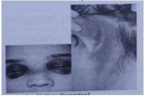
Paciente trazido ao Pronto Socorro resgatado pelos bombeiros de um incêndio com queimaduras nos membros superiores completos e tórax anterior. Qual seria a sua estimativa da aera corpórea queimada.
Paciente submetido a cirurgia apresentando ferida operatória na qual a árvore respiratória, o tubo digestivo e o aparelho urinário são penetrados, sob condições de controle e sem in amação. Esse tipo de lesão classificaria como:
Pacientes portadores de lesão neurológica permanecem por longos períodos acamados, necessitam de mudanças de decúbito frequentes para evitar lesões isquêmicas, principalmente em prominências ósseas. Essas lesões constituem as úlceras:
Paciente avaliado na sala de Emergência portador um trauma torácico contuso com tórax instável, qual dos seguintes fatores poderia interferir na identificação do segmento instável?
Paciente feminina de 17 anos chega ao Pronto Socorro com queixas de dor abdominal de moderada intensidade vômitos e febre há 2 dias. Exame Físico PA 130/80 FC 96' FR 14' oximetria de pulso 97% temperatura axilar 38C, Abdômen Simétrico RHA presentes ++, doloroso na palpação com McBurney positivos. Qual seria sua primeira impressão diagnóstica:
Paciente trazido pela equipe de bombeiros que relatam queda de uma passarela de aproximadamente 7 metros de altura encontrasse orientado lucido, hemodinamicamente estável, referindo dor e incapacidade de urinar, ao exame físico hematoma em bolsa escrotal, sangue no meato uretral, o toque retal, revela próstata deslocada superiormente. Qual medida inicial deve ser tomada de imediato?
Paciente de 39 anos vitima de acidente de trânsito trazido pela equipe de resgate que relata uma colisão frontal, apresenta sangramento facial profuso, fratura mandibular e insu ciência respiratória. Sua primeira conduta neste caso deverá ser:
Paciente masculino de 26 anos chega ao PS com queixas dor testicular e uma sensação de peso na bolsa escrotal, que piora em pé e alivia ao deitar, cujo exame físico revela massa de veias dilatadas e tortuosas situadas posteriormente ao testículo, que aumentam com a manobra de Valsalva. Qual seria seu diagnóstico?
Lactente hígida trazida pelos pais ao Pronto Socorro referendo fezes misturadas com sangue choro forte, a mãe refere que a criança se contorce de dor e às vezes vomita conteúdo alimentar. Repetindo o mesmo episódio várias vezes no intervalo do dia a criança permanece prostrada. No exame físico, ela se encontra em bom estado geral, nutrida, hidratada e afebril. Aparente dor a palpação abdominal, sem entretanto se identificar distensão ou massa palpável. Qual exame complementar para o diagnóstico deve ser solicitado?
Queda de um skate provocou uma lesão na superfície cutânea, com arrancamento da pele, resultando em qual tipo de ferida?
Paciente com possível diagnostico de Hérnia ao exame físico apresenta dor na face medial da coxa, o chamado sinal de Howship-Romberg encontrado na hérnia:
Na avaliação do paciente vitima de trauma, existe uma sequência de ações para evitar o óbito. Qual seria ação prioritária e imediata para estabilizar?
Traumatismo Craniencef álico Adolescente de 14 anos é trazido ao pronto atendimento pelo professor da escola. A história é de que, durante jogo de futebol, o paciente bateu cabeça com a cabeça de outro adolescente, seguida de perda da consciência, a qual recobrou em segundos. Nega ter apresentado convulsão ou vômitos e refere apenas náuseas e cefaleia. Foi administrada dipirona (40 gotas) na escola, sem melhora. Ao exame: ECG=15, sem crepitações, com edema da região parietal esquerda, sem equimoses, sem outras alterações. A conduta adequada é:
Sobre a fisiopatologia da formação do Cálculo Biliar, assinale a alternativa correta:
É sabido que diversas situações podem interferir na mudança de tática cirúrgica. Assinale a alternativa que mostre o maior impacto nessa decisão durante o ato operatório:
O Protocolo de Cirurgia Segura é uma orientação da OMS (Organização Mundial de Saúde), validada pela ANVISA (Agência Nacional de Vigilância Sanitária). De acordo com a orientação da ANVISA, a aplicação desse protocolo deverá ser realizada:
Sobre o Metabolismo em cirurgia e seus mecanismos de resposta (REMIT), assinale a alternativa que contém um mecanismo de resposta metabólica ao trauma cirúrgico:
Sobre o status nutricional de pacientes internados em hospitais, é correto afirmar:
Sobre a fisiopatologia da Hérnia Inguinal Indireta no sexo masculino, assinale a alternativa correta:
Para o suporte correto após avaliação nutricional, utilizando a fórmula de Harris Benedict, a proporção correta de carboidratos do total de calorias é:
Sobre a Síndrome de Abdome Agudo, assinale a alternativa correta:
São características da dor referida:
Na evolução do Síndrome do Abdome Agudo não traumático, a presença de instabilidade hemodinâmica ou choque, ao exame físico, pode significar:
Leia atentamente o texto abaixo, que contém a descrição de um quadro clínico. Com base nas informações contidas no texto, responda a questão. Paciente feminina, 54 anos, internada na Emergência com quadro de dor abdominal e vômitos. O quadro tem cerca 48 horas de evolução. Ao colher a história, o colega de plantão identi cou que os vômitos iniciaram após as 24h do quadro de dor, e tem aspecto escurecido de odor pouco característico. Ao exame apresenta cicatriz de “p anenstiel” (Cesa hidroaéreos estão aumentados. A dor é difusa, mal definida. A paciente apresenta-se desidratada ++ / 4, hemodinamicamente estável e afebril no momento. Não apresenta patologias de base, não usa nenhum medicamento, tem apenas histórico de duas Cesáreas anteriores. Sobre o provável diagnóstico de Abdome Agudo Obstrutivo dessa paciente, assinale a alternativa correta:
Leia atentamente o texto abaixo, que contém a descrição de um quadro clínico. Com base nas informações contidas no texto, responda a questão. Paciente feminina, 54 anos, internada na Emergência com quadro de dor abdominal e vômitos. O quadro tem cerca 48 horas de evolução. Ao colher a história, o colega de plantão identi cou que os vômitos iniciaram após as 24h do quadro de dor, e tem aspecto escurecido de odor pouco característico. Ao exame apresenta cicatriz de “p anenstiel” (Cesa hidroaéreos estão aumentados. A dor é difusa, mal definida. A paciente apresenta-se desidratada ++ / 4, hemodinamicamente estável e afebril no momento. Não apresenta patologias de base, não usa nenhum medicamento, tem apenas histórico de duas Cesáreas anteriores. Considerando a história, o quadro clínico e a hipótese de Abdome Agudo Obstrutivo dessa paciente, assinale a alternativa correta:
Em relação ao Trauma Torácico, em qual dessas afecções de potencial risco de morte se aplica a utilização do curativo de três pontos:
Nas vítimas de Traumatismo Torácico durante a avaliação inicial preconizada pelo ATLS, existem duas situac
os ferimentos penetrantes do hemitórax direito que evoluem para hemopneumotórax à direita, após a avaliação Inicial preconizada pelo ATLS (letra B do método mnemônico dos ABCs), e após oferecer O², a melhor conduta subsequente é:
Paciente vítima de ferimento por projétil de arma de fogo em anco esquerdo, trazido pelo SAMU na Emergência com cerca de 9 horas do evento. Foi levado à laparotomia exploradora e foi identi cada lesão perfurante do reto superior de cerca de 0,5 cm, sem necrose local, apenas com lesão por chamuscamento, com extravasamento de conteúdo fecal na cavidade abdominal. Sem outras lesões identi cadas. Dentre as decisões que podem ser tomadas nesse caso, assinale a alternativa que corresponde a melhor decisão:
A apendicite aguda é a afecção inflamatória mais comum em emergências cirúrgicas. Seu tratamento é a remoção cirúrgica do apêndice vermiforme (apendicectomia). Assinale a alternativa que contém a complicação mais comum desse procedimento:
Homem, 50 anos, morador de área livre, é encontrado caído na rua por transeuntes, em uma noite de inverno no Rio Grande do Sul. Não se sabem antecedentes pessoais, nem há quanto tempo o homem está caído ao solo. Levado à emergência, onde fora visto paciente inconsciente, com pele fria ao toque e pálida. Sinais vitais: pressão arterial: 60 x 40 mmHg, frequência cardíaca: 52 bpm, frequência respiratória: 12 irpm, saturação de oxigênio: 92% ar ambiente, temperatura axilar: 29,4°C. Eletrocardiograma: bradicardia sinusal, regular, com entalhe no nal do QRS, com intervalo QT de 500ms. Ausculta cardíaca: bulhas rítmicas, normofonéticas, sem sopros audíveis. Assinale a alternativa correta
Homem, 67 anos, tabagista, encaminhado para o pronto-socorro por queixa de abaulamento em região de virilha à esquerda há 2 meses, com piora há 1 dia. É pedreiro, trabalhando diariamente cerca de 8 horas por dia. Relata dor abdominal em cólica, com piora progressiva até intensidade moderada, sem febre nesse ínterim. Relata que desde ontem o abaulamento não retornou ao normal, mantendo-se do mesmo tamanho e na mesma topogra a desde então. Relata cirurgia de apendicectomia há 40 anos. Ao exame físico: bom estado geral, afebril, corado, hidratado, sinais vitais sem alterações. Ausculta cardiorrespiratória sem alterações. Abdome: plano, ácido, levemente doloroso à palpação, com abaulamento de cerca de 3cm no maior diâmetro em região inguinal esquerda. Qual o próximo passo?
Homem de 60 anos, vítima de agressão por arma branca, dá entrada no setor de emergência. O exame físico mostra uma ferida cortante de 3cm na altura do mamilo esquerdo. O paciente apresenta-se desorientado, com PA = 60 x 45mmHg. Na ausculta, nota-se murmúrio vesicular normal bilateralmente e abafamento das bulhas cardíacas. Nota-se, também, a presença de turgência jugular. O diagnóstico mais provável, nesse caso, é de
Homem de 22 anos apresenta queimaduras produzidas pela explosão de um vasilhame com etanol há 1 hora. Exame físico: consciente, orientado, respirando normalmente, sem rouquidão ou escarro com fuligem, bolhas rotas na face, na parede anterior do tronco e membros superiores. As superfícies queimadas são avermelhadas, com áreas esbranquiçadas e outras vermelhovivo. Estimativa da área queimada: 25%. A conduta neste momento é realizar
Paciente do sexo feminino, 35 anos, obesa, com história conhecida de colelitíase, referindo dor em hipocôndrio direito de aspecto intermitente e crônico, piorou há 4 dias, quando se tornou constante, associado a calafrios esporádicos. Refere três episódios de vômitos neste período. Ao exame físico, apresentase em regular estado geral, desidratada 2+, estável hemodinamicamente, com FC 100bpm, pele quente, pulso cheio. Abdome é sensível na topogra a do quadrante superior direito. Laboratoriais com hemoglobina 12, leucócitos de 14.000/mm³, canaliculares elevadas, creatinina 1,5, INR 1,0. Realizado ultrassom de abdome total, que demonstrou cálculo impactado no infundíbulo da vesícula biliar, obstruindo o ducto biliar. Qual o diagnóstico e a classificação de Tokyo?
Homem negro de 54 anos procurou atendimento para rastreamento e detecção precoce do câncer de próstata, concordando com avaliação após exposição dos seus riscos e benefícios. Apresenta sintomas do trato urinário inferior com vida. Relata antecedente de neoplasia de próstata na família. Exame digital demonstrou próstata com 40cm³ e consistência broelástica, sem nódulos, indolor. Foram solicitados exames laboratoriais, com PSA Total de 4,8ng/mL, PSA Livre de 0,72ng/mL, Urocultura negativa. Nesse caso, a conduta mais apropriada é
No atendimento a pacientes vítimas de queimaduras, após a estabilização inicial, devese iniciar o processo de transferência para serviço de referência que possa manejar a complexidade do cuidado, caso seja indicado. A respeito da transferência de pacientes queimados para centro de referência é correto a rmar que
A apendicite aguda (AA) está entre as causas mais comuns de dor abdominal baixa, que levam os pacientes ao pronto-socorro, e o diagnóstico mais comum feito em pacientes jovens internados com abdome agudo. Com base nas diretrizes atuais acerca da AA, assinale a alternativa correta.
O manejo da colecistite aguda tem passado por mudanças nas últimas décadas. Atualmente, são utilizadas as Diretrizes de Tokyo para critérios de diagnóstico e classificação da gravidade da colecistite aguda e da colangite aguda. Considerando essas diretrizes, assinale a alternativa correta.
O quadro clínico de icterícia pode ser secundário ao aumento das bilirrubinas conjugadas, das não conjugadas ou de ambas. Em pacientes nos quais a icterícia tem predomínio de bilirrubinas conjugadas, é correto aventar como hipóteses diagnósticas
Um paciente de 35 anos de idade, vítima de acidente automobilístico em que era o motorista, foi ejetado do veículo, foi levado pelos bombeiros inconsciente, hipotenso com PA = 90 mmHg x 60 mmHg, FC = 128 bpm e taquicárdico. Em relação ao atendimento inicial ao trauma, preconizado pelo Advanced Trauma Life Suport (ATLS), assinale a alternativa correta.
Uma paciente de 72 anos de idade chega ao pronto-socorro com história de distensão abdominal há dois dias, parada de eliminação de atus e de fezes há um dia. Nega náuseas ou vômitos. Com base nesses dados clínicos e na radiografia apresentada, o diagnóstico mais provável é
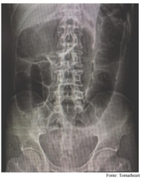
) Um paciente de 16 anos de idade compareceu ao pronto-socorro com queixa de dor súbita e intensa em região escrotal à direita, associada a náuseas e a vômitos, que persiste há quatro horas. Ao exame físico, o escroto encontra-se edemaciado, endurecido e eritematoso, e o testículo direito está sensível, inchado e ligeiramente elevado. Com base nesse caso clínico, assinale a alternativa correta.
Uma paciente de 40 anos de idade, sem o diagnóstico de doenças prévias, procurou assistência no pronto- socorro por apresentar dor em cólica, localizada em hipocôndrio direito, com irradiação para a escápula direita 30 minutos após ter participado de uma feijoada da empresa em que trabalha. O sintoma associa-se a náuseas e vômitos. O exame físico mostrou a paciente com fácies de dor e com IMC igual a 40 kg/m². Nesse caso, a causa mais provável da dor é
A anestesia em que a interrupção dos impulsos nervosos acontece por meio de um bloqueio à condução, feito por interferência no processo de origem do potencial de ação, em que a in ltração do anestésico nos tecidos é o método mais usado e os tecidos a serem manipulados ou operados estarão bloqueados para o procedimento é a anestesia:
Os objetivos básicos da anestesia geral são obtidos com o uso de medicamentos com nalidades bem especí cas, cuja ação conjunta resulte em sinergismos e interações. Os medicamentos são classificados em: hipnóticos, opioides e bloqueadores neuromusculares. Os opioides mais utilizados normalmente são:
Revisar: possível letra faltando em enunciado
No que diz respeito ao acesso cirúrgico das vias aéreas, é INCORRETO afirmar:
O sinal de Rovsing pode ser usado para o diagnóstico clínico de doenças que associam com dores abdominais, sendo encontrado frequentemente em casos de:
A técnica considerada ideal para feridas com tensão, capaz de conter as camadas profundas e as super ciais, que na primeira passagem da agulha, mais distante das bordas e abrangendo a profundidade, tem a saída também distante da borda, e na volta da agulha, a passagem estará mais próxima da borda da ferida e em menor profundidade, formando assim a eversão das bordas, é chamada de:
As fases do processo de cicatrização de feridas segundo a ordem cronológica é:
Com relação aos retalhos cutâneos, é CORRETO afirmar:
Sobre as hérnias de parede abdominal, é CORRETO afirmar:
O Abdome Agudo se caracteriza por dor lenta, insidiosa e progressiva no início, normalmente com intervalo longo entre o começo dos sintomas e a ida à Emergência. Na propedêutica abdominal, a palpação pode revelar defesa localizada ou generalizada, por meio da contração voluntária da musculatura abdominal. É um mecanismo de defesa, tendo em vista o comprometimento peritoneal. As causas mais comuns são apendicite, colecistite, pancreatite e diverticulite agudas. É chamado de:
A Hemorragia Digestiva Alta (HDA) é definida como sangramento do trato gastrointestinal que ocorre acima do ligamento de Treitz – que se localiza entre o Duodeno e o Jejuno. Acerca da HDA, é CORRETO afirmar:
Dentre os tipos de sarcomas de partes moles, apresenta localização habitual no útero e trato digestivo:
Homem, 35 anos, com quadro de abaulamento em região de virilha esquerda, iniciado há 72 horas, com dor e hiperemia local. Hoje, relata febre e que a dor está aumentando. Considerando o enunciado, é CORRETO afirmar:
ICSB, sexo feminino, 91 anos, com história de DM, HAS e doença coronariana, foi internada há 2 semanas após complicações de uma cirurgia de prótese total de quadril direito. Relata cólica de baixa intensidade e que há 5 dias parou de evacuar. Ao exame físico apresenta abdome distendido, hipertimpanismo à percussão difusa, dor à palpação profunda difusa e peristalse reduzida. A radiogra a abdominal mostrou distensão de todo o cólon até o reto. Considerando os dados apresentados, a hipótese diagnóstica mais provável para o caso é:
Homem, 68 anos, foi levado por familiares ao serviço de emergência médica, apresentando mal-estar e dor abdominal difusa, de início súbito há cerca de 30 minutos. PA: 90 x 60 mmHg, FC: 115 bpm. Ao exame, observa-se massa pulsátil em região de mesogastro. Paciente com histórico de angioplastia com Stent, hipertensão e tabagismo há 35 anos, 40 cigarros/dia. O diagnóstico e conduta, neste caso, são
Mulher, 67 anos procurou pronto socorro por constipação há 10 dias, náuseas e vômitos. História de atendimento prévio há 20 dias devido dor em hipocôndrio direito, náuseas, vômitos, porém com resolução espontânea. Submetida a tomogra a de abdome com imagem sugestiva de aerobilia intra-hepática. A hipótese diagnóstica mais provável para o quadro atual é:
Homem, 44 anos, chega a sala de emergência após extricação prolongada de uma explosão com chamas em um edifício. Ao exame: agitado, respiração em gasping, gemente com palavras incompreensíveis, presença queimaduras severas com bolhas em sua face e corpo, múltiplas fraturas de costela palpáveis e movimento paradoxal do tórax. Qual é a melhor conduta inicial no manejo desse paciente?
Sobre correção de hérnias inguino crurais:
Vítima de ferimento por arma de fogo durante assalto chega ao Pronto Socorro por meios próprios. Lúcido e orientado, eupneico, PA:100x60mmHg, FC:130bpm. Presença de orifício de entrada em anco direito. Não identificado orifício de saída. Assinale a conduta mais indicada:
Mulher, 40 anos, dá entrada ao PS com dor em hipocôndrio direito há 5 dias, intensa, associada a náuseas, vômitos e calafrios. Relato por familiares de urina de coloração escurecida, com forte odor. Exame físico: letárgica, desorientada, pálida, desidratada, ictérica 3+/4+, TAX 38,9°C, FC: 120bpm; FR: 28 irpm, PA: 80x30mmHg. Abdome doloroso à palpação em região logo abaixo do rebordo costal direito. Abdome doloroso difusamente, plastrão palpável em hipocôndrio direito, ruídos hidroaéreos não audíveis. Trouxe ultrassonogra a de abdome total realizado há 3 meses com múltiplos cálculos em vesícula, paredes nas e sem dilatação da árvore biliar ao método. A principal hipótese diagnóstica e terapêutica, são:
Mulher, 57 anos, queixa de edema em panturrilha direita e dor contínua com início há 2 dias. Relata cirurgia prévia há 12 dias de adbominoplastia e que permaneceu em "repouso absoluto" devido dor na cirurgia e receio de rompimento dos pontos. Ao exame: panturrilha direita edemaciada com menor mobilidade em comparação à esquerda, dor após dorsi exão passiva do pé direito. Solicitado ultrassonogra a com doppler de membros inferiores que só poderá ser realizado no dia seguinte. Qual é a conduta adequada neste momento ?
Paciente, 80 anos, 84 Kg, portador de insu oiência cardíaca congestiva compensada, é trazido ao PS devido queimadura acidental acomentendo toda extensão de ambas as pernas. Ao exame: lúcido e orientado, lesões de segundo e terceiro grau tanto em parte anterior e posterior bilateralmente de membros inferiores. O volume previsto de infusão de solução de Ringer Lactato nas primeiras 8 horas pela fórmula de Parkland, utilizando a regra dos nove de Wallace, para o cálculo do percentual de superfície queimada, é de:
RN prematuro, masculino, idade gestacional de 27 semanas e 3 dias, nascido por Sindrome Help materna, estando a mesma na UTI desde seu nascimento. Mantido em ventilação mecânica, cateter umbilical venoso e arterial, sem antibiótico, uso de nutrição parenteral e fórmula enteral própria para prematuro iniciada com 48h de vida. No 7° dia de internação evoluiu com palidez, vômito bilioso, instabilidade hemodinâmica com dé cit perfusional, sangramento nas fezes, distensão abdominal e dor difusa a palpação. Realizado RX abdome (abaixo). Qual a melhor conduta neste caso?
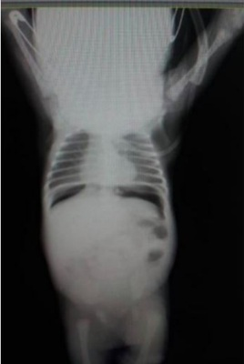
Vários estágios e de agradores são descritos para a Resposta Metabólica ao Trauma, seja por infecções, traumas, cirurgias de urgência e eletivas. A primeira fase dessa resposta caracteriza-se por:
Paciente 58 anos, hipertenso, em primeiro dia de pós-operatório de hérnia discal após 10 horas do procedimento, evolui com dor abdominal importante a palpação e agitação. Feito FAST a beira leito com a imagem abaixo. Após análise da imagem sua conduta é:
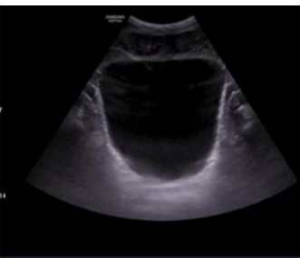
Menino, 2 anos de idade, é trazido à sala de Emergência com relato de queda de uma altura de 2 metros. Ao exame da admissão: vias aéreas pérvias, movimentos respiratórios super ciais, FR: 12 irpm , SatO2: 94% em ar ambiente, RCR 2T, BNF sem sopros, FC: 70 bpm, PA 130 x 95 mmHg, Tempo de enchimento capilar 2 seg. Qual o principal diagnóstico sindrômico?
Você é chamado no Alojamento conjunto para avaliar recém-nascido a termo nascido de parto vaginal, Apgar 8/9 de gestante com 2 consultas anotadas no cartão de pré-natal, sem relato de intercorrências. Testes rápidos para sí lis, HIV, hepatite B e C negativos. Enfermagem relata sialorreia e regurgitação após tentativa de mamadas ao seio materno associada a tosse e cianose. Solicitado RX tórax com imagem abaixo. Qual a terapêutica mais adequada para este paciente?
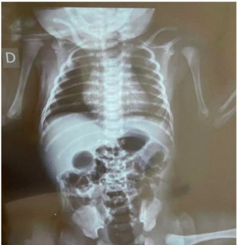
Uma mulher de trinta anos dá entrada na urgência com dor abdominal de forte intensidade em fossa ilíaca direita há dois dias, com piora progressiva. Dentre os exames abaixo, qual seria o MENOS INDICADO para sua avaliação inicial na urgência:
Paciente do sexo feminino, 28 anos, realizou cirurgia bariátrica há dois anos, não tendo feito acompanhamento no último ano. Perdeu 58 kg no processo de emagrecimento, pesando agora 65kg. Voltou para exames de rotina e o hemograma, apresenta hemoglobina 10 mg/dl e hematócrito de 29%. Sobre anemia após a cirurgia bariátrica no caso desta paciente, é ERRADO afirmar:
Quais dos fios abaixo NÃO deve ser utilizado na confecção de uma enteroanastomose:
São medidas utilizadas na profilaxia do tromboembolismo venoso pós-operatório, EXCETO:
Sobre os princípios para drenagem cirúrgica, para evitar complicações inerentes ao procedimento, é INCORRETO afirmar:
Sobre a abordagem da diverticulite aguda é CORRETO afirmar:
Sobre o uso profilático de antibióticos e suas indicações, podemos afirmar, EXCETO:
Sobre a síndrome de Mirizzi é CORRETO afirmar:
Qual a conduta MAIS APROPRIADA no caso de um paciente de 78 anos com uma nodulação à esquerda, unilateral, submandibular de 1,5 cm; indolor; afebril e sem sinais flogísticos?
É considerada a forma de abdome agudo mais frequentemente na criança em idade escolar e sua principal causa:
Sobre o abdome agudo obstrutivo, é CORRETO afirmar:
Dentre os tipos histológicos de sarcomas de partes moles, apresentam seus tecidos de origem nos músculos estriado e liso os:
O tipo de anestesia que permite o bloqueio das raízes nervosas do espaço extradural é:
Com relação à anestesia geral, é CORRETO afirmar:
Os cateteres venosos centrais são cateteres inseridos no sistema venoso central, normalmente por punção percutânea, pela técnica de Seldinger, com anestesia local ou anestesia geral e em ambiente cirúrgico. São contraindicações dos usos dos cateteres venosos centrais:
A cicatrização de feridas consiste em perfeita e coordenada cascata de eventos que culminam com a reconstituição tecidual. Considerando o tema, é CORRETO afirmar:
Com relação aos retalhos, é CORRETO afirmar:
Acerca das hérnias de parede abdominal, é CORRETO afirmar:
Quanto ao acesso cirúrgico às vias aéreas superiores, é CORRETO afirmar:
Um senhor aposentado de 68 anos de idade chega a um pronto-socorro com dor na perna esquerda, de quatro dias de duração. Ele também se queixa de edema no tornozelo esquerdo, que tem di cultado a deambulação. É fumante ativo e tem história clínica de doença do re uxo gastroesofágico. O exame físico revela edema ++ no tornozelo esquerdo. São fatores de risco para o desenvolvimento de Trombose Venosa Profunda (TVP), EXCETO:
No manejo de paciente com Hipertensão Intracraniana (HIC) está indicado:
Na escolha de sítio para passagem de cateter de duplo lúmen em paciente crítico, assinale a alternativa que mostra a principal vantagem de cada local:
Dos fármacos abaixo, utilizados para sedoanalgesia, aquele que está menos associado à ocorrência de hipotensão arterial é:
Um homem de 70 anos, tabagista e hipertenso, queixa-se de dor na panturrilha direita que se manifesta ao caminhar cerca de 50 metros, aliviando imediatamente ao parar a caminhada. Ao exame físico percebem-se pulsos femoral presente e poplíteo e distais ausentes. Este caso, é classificado como:
A indicação de intervir ou manter a conduta expectante em casos de aneurismas arteriais depende de vários fatores, entre eles a artéria acometida, o tamanho do aneurisma e o quadro clínico. Dentre as situações abaixo a alternativa que indica intervenção cirúrgica é:
Paciente do sexo masculino 34 anos vem ao hospital queixando-se de febre, falta de apetite e di culdade para caminhar devido dor na região do quadril direito. Início do quadro há 38 horas. Ao exame físico: regular estado geral, desidratado 1+/4+, sudorético, temperatura axilar 39º, abdome ácido, doloroso em todo o baixo ventre, porém com descompressão brusca negativa, punho percussão do calcâneo negativa, sinal do obturador positivo. Hemograma com 15.000 leucócitos. Sua hipótese diagnóstica neste caso, seria:
Mulher, 62 anos, comparece a consulta médica com queixa de eritema, lesões vesicadas e muito prurido nos membros inferiores há duas semanas. Nega febre ou queda do estado geral. Antecedentes pessoais: diabetes há 25 anos. Exame físico: peso 85 kg, altura 1,55 m, edema de membros inferiores 2+/4+, presença de varizes tronculares, eritema difuso, descamação e vesículas agrupadas nos 2/3 distais do membro inferior direito, sem calor local. A hipótese diagnóstica e a conduta adequada são:
Homem de 72 anos chega ao pronto socorro com dor abdominal difusa, de início súbito há 6 horas. Refere tabagismo e etilismo de longa data. Ao exame observa-se regular estado geral, abdome em tábua, descompressão brusca presente nos quatro quadrantes e sinal de Jobert positivo. Sua hipótese diagnóstica e conduta neste caso, seriam:
Depois de garantir a via aérea no tratamento das lesões torácicas que colocam em risco a ventilação dos pacientes e a próxima prioridade no atendimento às vítimas de trauma. Sobre os casos de traumatismo torácico, é correto afirmar que:
Uma mulher de 80 anos, internada por fratura de colo de fêmur direito passou a desenvolver dor e edema na panturrilha direita com sinal de Homans positivo. A alternativa que reúne a hipótese diagnostica, o exame complementar pertinente e a terapêutica correta é:
Paciente apresentando diverticulite aguda com abscesso paracólico de sete centímetros. A conduta terapêutica, neste caso, deve ser:
Homem, 43 anos, atleta, dá entrada em uma Unidade de Pronto Atendimento (UPA), vítima de acidente automobilístico. Apresenta importante dor torácica, taquicardia de 140 bpm, taquipneia, turgência de jugulares e sudorese. Quando do exame físico, encontra-se área de escoriação e hematoma na região anterolateral do hemitórax direito ao nível do quinto espaço intercostal com crepitação. A ausculta cardiorrespiratória mostra ausência do murmurio vesicular no hemitórax direito e ritmo cardíaco regular em dois tempos. Diante deste quadro o diagnóstico e a conduta terapêutica são, respectivamente:
Sobre o tratamento cirúrgico das hérnias da parede abdominal, é correto afirmar que
Homem, 55 anos, com diagnóstico de estenose pilórica por câncer gástrico, sem outras comorbidades. Não consegue ingerir nada há seis dias, porcentagem de perda de peso de 18% em 40 dias. Há quatro dias com hidratação venosa com cristaloides. Iniciado nutrição parenteral total. No segundo dia, apresenta quadro de dispneia intensa, taquipneia com estertores crepitantes difusos em ambos os pulmões, hipotensão arterial, arritmia cardíaca. Diagnosticado como edema agudo de pulmão, foi medicado com diurético venoso e morfina. Não obteve melhora, evoluindo para parada cardiorespiratória e óbito. A provável causa da morte deste paciente é:
Paciente idoso da entrada no pronto atendimento com dor abdominal e vômitos fecalóides de início súbito, seus sinais vitais estão dentro da normalidade para a sua idade. Na rotina radiológica nota-se o sinal do grão de café. O provável diagnóstico desse paciente, é:
Segundo o ATLS a sequência de radiogra as obrigatórias que deverão ser realizadas por um paciente vítima de queda de poste após choque em rede de alta tensão são:
Paciente constipado crônico, apresentando prolapso hemorroidário às evacuações, de redução espontânea, sem outros sintomas associados. O tratamento, neste caso, deve ser:
Os limites corretos da Zona perigosa de Ziedler são:
Homem, 24 anos, é submetido a ultrassonogra a de abdome, por dor abdominal inespecí ca. São achados três pólipos de vesícula biliar, medindo em torno de oito milímetros cada um. Conduta:
Revisar: possível letra faltando em enunciado
Um paciente é submetido à uma laparotomia de urgência cujo achado foi uma fístula colecistobiliar envolvendo dois terços da circunferência do duto biliar comum. A correta classificação da Síndrome de Mirizzi, é:
A característica tomográfica correta da apendicite aguda, é:
Em relação à resposta orgânica ao trauma cirúrgico, é correto afirmar que:
Homem, 78 anos, é encaminhado com diagnóstico de aneurisma de aorta abdominal infrarrenal com 8,4 centímetros de diâmetro transversal. Refere antecedente de infarto agudo do miocárdio há três anos, tendo realizado tratamento clínico, e doença pulmonar obstrutiva crônica devido a tabagismo de longa duração. Foi submetido a uma angiotomogra a da aorta e membros inferiores, que confirmou o achado do aneurisma com um colo infrarrenal retilíneo, com 18 milímetros de comprimento. O tratamento indicado é:
Sobre as alterações sistêmicas e metabólicas durante a cirurgia laparoscópica, é correto afirmar que:
Paciente do sexo masculino apresenta fístula traqueoesofágica pós-intubação orotraqueal. Em relação a este quadro, é incorreto afirmar:
A cirurgia bariátrica revolucionou o tratamento da obesidade. A respeito da cirurgia bariátrica é correto afirmar que:
A compreensão da anatomia da região inguino- femoral é primordial para o sucesso do tratamento das hérnias aí localizadas. O triângulo Delimitado pelos vasos espermáticos e pela porção lateral do ligamento inguinal (trato íleo-público) é conhecido como:
Paciente submetido a ressonância magnética foi diagnosticado com uma fístula anal transes cteriana. A classificação de Parks correta do achado, é:
Paciente de 56 anos, tabagista de 80 maços/ano, etilista de 2 doses de aguardente e 1 garrafa de cerveja por dia, apresentou perda ponderal de 15 kg nos últimos 6 meses. No mesmo período, notou nódulo cervical à esquerda, endurecido e móvel, de crescimento lento. Há 3 meses percebeu irritação na garganta, principalmente com a ingesta de aguardente. Melhor conduta, considerando a principal hipótese diagnóstica:
Quanto aos hemangiomas na infância, assinale a alternativa correta.
Você está num plantão e recebe um paciente vítima de trauma com os seguintes achados: abertura ocular ao comando de voz, resposta verbal confusa e, ao estímulo, localiza a dor. A pontuação da escala de coma de Glasgow é igual a:
Durante a avaliação de um paciente jovem com dor em fossa ilíaca direita, são sinais clínicos que nos levarão à suspeita de apendicite aguda, EXCETO:
Na anatomia do arco aórtico, qual a sequência mais comum dos vasos da base (da porção proximal para distal)?
Paciente, 30 anos, sexo feminino, intoxicada por álcool, foi vítima de acidente automobilístico. Dá entrada no pronto-atendimento com múltiplas lesões de face, sangramento profuso e insu ciência respiratória aguda. Para essa paciente, a conduta imediata deve ser:
A técnica de correção de hérnia inguinal que pode ser considerada com tensão e apresenta maior índice de recidiva é a técnica de:
Homem de 40 anos tentou suicídio ateando fogo ao próprio corpo. Apresenta queimadura muito dolorosa com hiperemia e bolhas em parede anterior de tórax, abdômen e em região perineal. Assinale a alternativa que melhor estima a porcentagem de superfície corporal queimada e sua classificação.
D.L.T., 3 anos, às 8 horas da manhã apresentou queimadura por fogo após o pai acender a churrasqueira com álcool líquido, atingindo 40% de superfície corporal queimada (SCQ). A família mora em área rural e a criança chegou ao pronto-socorro às 12 horas, sendo encaminhada para a sala de emergência e iniciados os primeiros atendimentos. Peso corporal = 16 kg. Considerando que a reposição hídrica foi calculada pela fórmula de Parkland (4mLxKgxSCQ) e que já foi instalado acesso e iniciada a reposição às 12h, deverão ser administrados:
Marque a INCORRETA com relação a cicatrização das feridas:
Uma das finalidades do dreno abdominal após laparotomia é:
Sobre a cirurgia laparoscópica assinale a alternativa incorreta:
Assinale o fator de risco cardíaco moderado em operações não cardíacas em pacientes idosos
Das alterações endócrinas seguintes, qual não é compatível com o pós-operatório de uma cirurgia de grande porte?
Assinale a alternativa correta, com relação ao atendimento inicial do paciente traumatizado:
Sobre as hérnias de parede abdominal, é correto afirmar que:
Um homem de 24 anos apresenta dor na fossa iliaca há 36 horas, com descompressão brusca dolorosa (Blumberg positivo). Encontra-se afebril, e o leucograma é normal. Pode-se afirmar que:
As aderências são a causa mais comum de obstrução do intestino delgado em países industrializados. A 2a causa mais comum é(são):
Na contusão ureteral secundária a trauma penetrante adjacente, a estratégia pro lática capaz de reduzir edema progressivo, oclusão e isquemia consiste em:
O traumatismo torácico aberto causa grave insu ciência respiratória, que é resultante dos seguintes componentes fisiopatológicos:
Um homem de 53 anos, tabagista com carga tabágica de 36 anos/maço, apresenta rouquidão há 4 semanas. O exame a ser realizado, inicialmente, é:
O reparo de feridas é o esforço dos tecidos lesados para restaurar a função e a estrutura normais após o trauma. Durante o esforço para restabelecer barreiras à perda de líquido e à infecção, restabelecer o uxo sanguíneo e linfático aos padrões normais e restaurar a integridade mecânica do sistema lesado, muitas vezes o reparo minucioso é sacrificado por causa da urgência para o restabelecimento da função. Com relação ao processo de cicatrização das feridas, marque a alternativa correta:
Nos pacientes em estado de choque hipovolêmico, a tríade letal de: acidose, hipotermia e coagulopatia é comum em pacientes reanimados que estão sangrando ou em estado de choque a partir de vários fatores. Nossa compreensão básica é que a perfusão tecidual inadequada resulta na acidose causada pela produção de lactato. Com relação ao choque hipovolêmico marque a alternativa correta:
O objetivo da avaliação pré-operatória não é procurar extensivamente por doenças não diagnosticadas, mas identi car e quanti car qualquer comorbidade que pode afetar o resultado cirúrgico. Com relação aos testes de função cardiológica e pulmonar no préoperatório quais das seguintes sentenças abaixo é verdadeira?
Uma mulher de 27 anos de idade é levada ao departamento de emergência de um grande hospital de referência de uma metrópole depois de ter sofrido um ferimento por arma de fogo em região cervical. O orifício de entrada do projétil é anterior à origem do músculo esternocleidomastoideo ao nível no ângulo da mandíbula na base do crânio. A paciente encontrava-se acordada, alerta, eupneica, hemodinamicamente estável e assintomática no momento da admissão. Após passado cerca de 90 minutos de sua admissão, evoluiu com hemiparesia esquerda e afasia. Analisando o caso exposto, qual dentre as seguintes condutas terapêuticas é a melhor a ser adotada neste momento:
Um homem de 45 anos de idade é levado ao departamento de emergência de um grande hospital de sua região após acidente com jet ski, no qual ele era o piloto. No momento, encontra-se eupneico, hemodinamicamente estável, lúcido e orientado. Ao exame de toque retal evidenciou-se uma próstata livremente móvel e elevada. Também foi evidenciado sangue no meato uretral externo. A radiogra a pélvica mostrou fratura bilateral dos ramos púbicos. Até o momento o paciente ainda não apresentou diurese. Dentre as alternativas abaixo, qual seria o melhor próximo passo no manejo deste paciente?
Uma hérnia é definida como uma protrusão anormal de um órgão ou tecido por um defeito em suas paredes circundantes. Embora uma hérnia possa ocorrer em vários locais do corpo, esses defeitos mais comumente envolvem a parede abdominal, em particular a região inguinal. As Hérnias inguinais são classificadas como direta ou indireta. Com relação as hérnias da virilha, qual dentre as alternativas abaixo é a correta?
O reparo laparoscópico da hérnia inguinal é o método de reparo com tela livre de tensão, com base em uma abordagem pré-peritoneal. A abordagem laparoscópica proporciona a vantagem mecânica de colocação de uma tela por trás do defeito cobrindo o orifício miopectíneo e usando as forças naturais da parede abdominal para ancorar a tela no local. Os pacientes têm apresentado uma recuperação mais rápida, menos dor. A melhor visualização da anatomia permite corrigir todos os defeitos da hérnia inguinal e ter menos infecções do local cirúrgico. As técnica videolaparoscópicas mais populares incluem a abordagem extraperitoneal (TEP) e a pré-peritoneal transabdominal (TAPP). Qual é a principal diferença entre essas duas técnicas?
Uma paciente de 35 anos de idade, procura o cirurgião geral por estar se queixando de dor em quadrante superior direito do abdome que piora com as alimentações lautas há cerca de 3 meses, associadas a náuseas e vômitos durante as crises ágicas. A paciente já realizou exames de ultrassonogra a de abdome, tomogra a computadorizada de abdome e ressonância com colangiorressonância magnética de abdome, que foram normais. O cirurgião solicitou o exame de cintilogra a do trato biliar, também denominada de escaneamento hepático pelo ácido iminodiacético (HIDA), que evidenciou que após 20 minutos da injeção da colecistoquinina (CCK) a fração de ejeção (clareamento) da vesícula biliar fora menor que um terço. Avaliando o caso clínico exposto, dentre as alternativas abaixo, qual dentre elas mostra a principal hipótese diagnóstica com seu respectivo melhor tratamento?
Uma paciente de 38 ano de idade vai ao consultório do cirurgião do aparelho digestivo em virtude de estar apresentando um quadro de icterícia há cerca de 5 semanas, sem história de febre ou emagrecimento, referindo uma leve dor em quadrante superior direito do abdome. O exame de colangiorressonância magnética que a mesma realizou evidenciou colelitíase e coledocolitíase com dois cálculos de 8mm e 10mm em colédoco distal. Dentre as alternativas abaixo, marque a que evidencia o(s) achado(s) laboratorial(is) que mais provavelmente será / serão encontrado (s) nesta paciente?
Após o advento da cirurgia videolaparoscópica, cujo acesso é realizado por pequenas incisões ocasionando menos dor e hospitalização mais curta, os cirurgiões têm realizado um número crescente de colecistectomias laparoscópicas. Muitas colecistectomias são realizadas por cólica biliar, mas a cirurgia pode ser executada de forma segura em um quadro de in amação aguda. A colecistite aguda propicia um tempo operatório mais longo e uma taxa de conversão maior para um procedimento aberto do que quando a colecistectomia é realizada de forma eletiva. Com o intuito de diminuir a chance de lesão iatrogênica durante a colecistectomia videolaparoscópica é de fundamental importância uma correta dissecção para uma visão crítica de segurança. Dentre as alternativas abaixo, qual a que melhor descreve o melhor resultado de dissecção para aquisição de uma visão crítica de segurança mais adequada durante a colecistectomia videolaparoscópica?
Quanto aos ferimentos superficiais podemos afirmar, EXCETO:
A respeito da cicatrização das feridas é correto afirmar, EXCETO:
A utilização de lidocaína com adrenalina é contraindicada em qual das regiões anatômicas?
Qual dos os cirúrgicos abaixo tem as seguintes propriedades: origem sintética, con guração monofilamentar e ser inabsorvível?
Qual dos procedimentos abaixo NÃO indica o uso de antibioticoterapia?
As fases da cicatrização em ordem cronológica são:
Em relação à classificação das queimaduras quanto à profundidade, marque a alternativa INCORRETA.
Paciente vítima de trauma com hemorragia com grande perda sanguínea, evoluindo com PA 9/7 mmHg, pulso filiforme, FC 120 bpm. Entre os distúrbios metabólicos no equilíbrio ácido-base, qual o mais provável?
Paciente deu entrada no hospital com quadro de abdômen agudo, sem história de trauma ou cirurgia recente. Em qual ocorrência isoladamente haveria indicação de laparotomia exploradora?
Sobre os fios cirúrgicos é INCORRETO afirmar:
A hérnia em que ocorre a presença de um divertículo de Meckel dentro do saco herniário é
Marque a alternativa que melhor descreve o sinal de Courvoisier-Terrier e seu provável diagnóstico:
Em relação às hérnias inguinais marque a alternativa INCORRETA.
Uma hérnia com apenas a borda anti-mesentérica de uma alça de delgado no conteúdo do saco herniário encarcerada ou estrangulada é denominada de hérnia.
Joana de 45 anos será submetida a histerectomia total abdominal por via laparotômica, em decorrência de leiomiomatose. Apresenta antecedente de reação alérgica a penicilina, comprovada por ocasião de tratamento de amidalite há 1 ano. Não tem outros antecedentes mórbidos relevantes. Qual a antibioticoprofilaxia indicada para este procedimento?
Os tópicos I, II e III abaixo fazem uma associação entre uma doença e suas manifestações clínicas: I - Úlcera péptica perfurada: rigidez abdominal, ruídos hidroaéreos diminuídos, timpanismo supra- hepático presente. II - Obstrução intestinal: ruídos hidroaéreos ausentes, Blumberg presente, rigidez ou defesa abdominal. III - Hemorragia digestiva severa: choque, palidez, distensão abdominal, melena. Agora marque a resposta CORRETA conforme os tópicos acima.
Maria de 37 anos vem ao pronto-socorro do Hospital Estadual Dirceu Arcoverde com dor no epigástrio irradiada para o hipocôndrio direito, que se iniciou algumas horas após o jantar. Diz que já teve alguns episódios semelhantes, que se resolviam em poucas horas. No entanto, agora a dor não passa. Diz ter tido febre (não mediu) e um episódio de vômito não bilioso. Qual é a causa mais provável da dor desta senhora?
Bruna de 25 anos, com IMC: 37,5 kg/m², teve um episódio de pancreatite aguda grave durante a gestação, desencadeada pela tentativa de remover um cálculo de 1,0 cm no colédoco distal, através de papilotomia endoscópica (CPRE). Tinha colelitíase sintomática. O procedimento não teve sucesso e a paciente cou internada por pancreatite aguda. Recuperou-se, a gestação chegou a termo, foi feito o parto e a paciente está agora no puerpério. A melhor opção terapêutica é:
O exame de um recém-nascido de termo na sala de parto é exibido a seguir. Qual é a conduta para o caso?
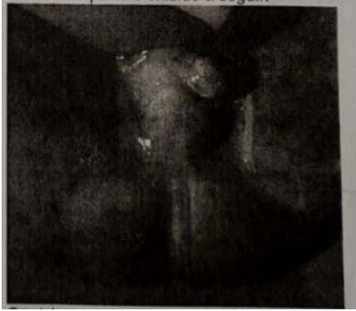
Um paciente com ferimento corto-contuso em coxa direita apresenta-se na sala de sutura do pronto- socorro em que você está de plantão. Para a realização desta sutura você solicita um anestésico local para a in ltração. A técnica de enfermagem que está na sala de sutura informa da disponibilidade de lidocaína com e sem epinefrina e bupivacaína com e sem epinefrina. Dentre as alternativas abaixo, qual está correta sobre o uso de anestésicos locais?
Homem de 61 anos de idade procura o pronto-socorro com queixa de di culdade miccional há 12 horas. Refere que há 3 meses apresenta micção com jato fraco, entrecortado e sensação de esvaziamento vesical incompleto. No exame clínico, abdome doloroso à palpação em hipogástrio. Toque retal: próstata 60 gramas, sem nódulos. O restante do exame clínico é normal. Traz resultados de exames PSA 8,0ng/dl e creatinina 2,5. Ultrassonogra a de vias urinárias: ureterohidronefrose moderada bilateral, Bexiga espessada e com divertículos, próstata de 65 gramas. Qual é a conduta para o caso nesse momento?
Homem de 19 anos de idade foi vítima de ferimento abdominal (trans xante) por projétil de arma de fogo há 90 minutos. No exame clínico de entrada no pronto-socorro estava estável hemodinamicamente, com dor à palpação abdominal. Foi indicada laparotomia exploradora, que evidenciou lesão em cólon esquerdo e presença de fezes no anco e fossa ilíaca, ambos à esquerda. Qual é a classificação da cirurgia segundo o potencial de contaminação / infecção e qual é a duração da administração de cefalosporina de 3ª geração associado a metronidazol para o caso?
Arthur 24 anos foi vítima de ferimento por faca em 7º espaço intercostal, linha axilar média esquerda. Está hemodinamicamente estável e sua radiografia de tórax é normal. Qual é a conduta para o caso?
Em relação ao diagnóstico de lesão contusa de coração, é correto afirmar:
Durante as primeiras 24h após traumatismo craniano grave, NÃO é fator utilizado como preditivo de sobrevida:
José, 82 anos, está com insu ciência cardíaca congestiva, após infarto do miocárdio ocorrido há 1 semana. Evolui com insu ciência respiratória e necessita ser intubado para ventilação mecânica e de drogas vasoativas para suporte hemodinâmico. Está febril e tem crescimento de germe Gram negativo em hemocultura. A ultrassonogra a à beira do leito mostra vesícula biliar com parede espessada e líquido perivesicular. Não mostra cálculos. Administram-se antibióticos de largo espectro. Persiste com febre, leucocitose e PCR elevado. Agudamente, o tratamento mais apropriado para este paciente é
A melhor maneira de confirmar possível lesão de diafragma em paciente com ferimento penetrante na transição toracoabdo- minal é
O exame mais sensível e específico para avaliar o paciente com trauma multissistêmico, estável hemodinâmicamente, com trauma de bacia, abdome e, possivelmente, retroperitônio é
Gabriel, com 1 mês e 20 dias de vida, em uso exclusivo de leite materno, é levado à emergência pediátrica devido a vômitos recorrentes. De acordo com sua mãe, o quadro iniciou por volta da 3ª semana de vida, com vômitos pós-alimentares, não biliosos, em jato. Exame físico: paciente pesando 2,5 kg (PN: 3,3 kg), desidratado, pálido. No abdômen, palpa-se tumoração arredondada no epigástrio/HCD. Tanner G1/P1. Assinale a alternativa CORRETA.
Durante o plantão em sala de parto da MDER, você recebe um RN pré-termo, 36 semanas, de mãe que não realizou pré-natal. Rapidamente, você percebe que o abdômen da criança é escavado e que ela evolui com grave desconforto respiratório. Na ausculta do tórax, presença de RHA à esquerda. Assinale a alternativa CORRETA.
Quais destes agentes infecciosos podem cursar com quadros de pseudoapendicite?
O tipo de hérnia da parede abdominal que mais estrangula é a:
Incisão longitudinal do piloro que inclui o segmento duodenal estenosado, fechando a ferida transversalmente com sutura em 2 planos:
Na resposta inflamatória ao trauma, o hormônio liberado pelo eixo hipotalâmicohipo sário- adrenal, considerado responsável pela vasoconstricção e pela poupança de água:
Com relação às infecções de sítio cirúrgico, é correto afirmar:
O protocolo multimodal de cuidados perioperatórios ACERTO se baseia em atitudes que promovem uma rápida recuperação cirúrgica, dentre estes cuidados estão:
Assinale a alternativa incorreta.
Mulher, 52 anos, vítima de queda de altura, aproximadamente 6 metros, encontra-se estável hemodinamicamente. Ao exame físico: FC 95 BPM, abdômen ácido e sem irritação peritoneal. Tomogra a computadorizada de abdômen revela presença de gás retroperitoneal. Diante do exposto, marque a resposta correta:
Josiane tem 28 anos e foi vítima de colisão automobilística há 90 minutos. Foi conduzida pelo SAMA imobilizada, com cola cervical e prancha rígida. Iniciada a avaliação de acordo com o ATLS 10 ED, a via aérea estava pérvia, colar cervical posicionado; o hemitórax direito apresentava equimose em região lateral e mamária, a amplitude dos movimentos respiratórios está preservada; o murmúrio vesicular era audível em hemitórax à esquerda e diminuída à direita. Saturação de oxigênio era 88%, a frequência cardíaca 120 BPM e a pressão arterial é 80x60 mmhg. A conduta nesse momento deve ser:
Adolescente, 13 anos, sexo masculino é levado à emergência com quadro de dor testicular aguda, há três horas, após jogo de futebol. O exame de imagem que deve ser solicitado de imediato é:
Vítima de colisão de moto com poste, um homem de 22 anos tem dor em hipogástrio e hematúria. Na investigação, a tomogra a de abdome e pelve, feita com contraste venoso, mas apenas com fase arterial e portal, evidenciou líquido livre em pelve. Não teve outros achados, exceto fratura estável de bacia. Diagnóstico mais provável e melhor conduta:
Em relação às queimaduras no adulto, analise as assertivas abaixo e assinale a correta. I - Queimaduras de terceiro grau envolvendo tronco e membro superior direito correspondem a 36% de superfície corporal queimada; II - Paciente de 43 anos, com 60kg e área de 45% de queimaduras de terceiro grau, necessita, nas primeiras 8 horas, segundo Parkland, aproximadamente de 58,4L de ringer lactado ou soro siológico para otimizar a hidratação; III - Queimaduras de períneo e articulações são menos graves, pois são áreas de pequena extensão e geralmente não necessitam de internação por serem de bom prognóstico;
Correlacione a coluna da direita com a esquerda e marque a alternativa correspondente: 1.Equimoses, petéquias e outros sangramentos; 2.Dor óssea ou articular; 3."Dor de dente" rebelde ao tratamento; 4.Hematúria; ( ) Tumor ósseo maligno; ( ) linfoma; ( ) Leucemia; ( ) Tumor de Wilms.
J.P.S., feminino, 27 anos, IMC 18, vítima de queda de moto, foi transferido do PS de uma pequena cidade para a UTI do serviço de referência. O paciente chega em uso de vasopressor em acesso periférico. Prontamente, o residente garante um acesso venoso central em jugular D. Tempo depois, o paciente evolui com dispneia e hipossaturação. Sobre a provável intercorrência e patologia, assinale a alternativa CORRETA:
Sobre analgesia e sedação, assinale a alternativa INCORRETA:
Sobre tamponamento cardíaco, assinale a alternativa INCORRETA.
Na avaliação do paciente vítima de politrauma, sabemos que a ecogra a pulmonar pode auxiliar. Sobre os possíveis achados, assinale a alternativa INCORRETA:
Queimadura de Espessura Parcial Prof unda 2 Grau Prof undo Com relação ao manejo do paciente vítima de queimaduras, assinale a alternativa ERRADA:
Sobre Isquemia Mesentérica, assinale a alternativa INCORRETA:
Em vítimas de trauma abdominal fechado, assinale a alternativa que apresenta a ordem CORRETA dos órgãos mais frequentemente acometidos:
Sobre a avaliação do paciente com trauma abdominal, assinale a alternativa CORRETA:
Sobre a terapia nutricional parenteral (NPT), assinale a alternativa INCORRETA:
Paciente de 21 anos, masculino, vítima de trauma contuso em região de hipocôndrio esquerdo, causado por queda de cavalo, é encaminhado à emergência. Na chegada, paciente apresenta abertura ocular ao chamado, encontra-se gemente, não sabe dizer onde está, mas refere dor em região abdominal e localiza a dor. Ao exame físico, apresenta defesa à palpação abdominal PA 64/50mmHg, FC 113, SPO₂ 94% em AA. Realizada ressuscitação volêmica, sem resposta com necessidade de início de vasopressor. Persiste com hipotensão refratária. De acordo com o caso clínico, é CORRETO afirmar:
No trauma, para reparo de lesões da aorta abdominal, sua exposição rápida depende da mobilização das vísceras abdominais medialmente e do acesso ao retroperitônio. Qual manobra consiste na rotação visceral medial para esquerda objetivando a exposição de todo comprimento da aorta abdominal e seus ramos, excetuando a artéria renal direita?
Na avaliação diagnóstica de um paciente com disfunção venosa, alguns testes são fundamentais para se analisar a oclusão do sistema profundo e o re uxo axial. Estamos nos referindo respectivamente aos seguintes testes:
Na sua Unidade de Pronto Atendimento - UPA, dá entrada um paciente de 78 quilos, vítima de agressão por arma branca, que apresenta ferida penetrante no quadrante inferior direito do abdome e outra na região inguinal direita. Quando do exame físico está confuso, hipotenso com pressão arterial de 70 x 40 mmHg. Apresenta taquicardia de 126 bpm. A estimativa de perda sanguínea está em torno de 35% do volume sanguíneo. Fundamentado nestes achados, em classes de choque hemorrágico do ACS - American College of Surgeons e do ATLS. Qual seria a classificação deste paciente.
A nutrição do paciente, em especial a nutrição parenteral, constitui elemento fundamental para a cirurgia, tanto no pré-operatório como no pós-operatório. As proteínas são compostas por aminoácidos e muitos deles podem ser sintetizados pelo organismo. No entanto, alguns são considerados essenciais, pois não são sintetizados, e, portanto, devem estar presentes na formulação das dietas. Qual das opções abaixo é constituída por aminoácidos essenciais?
O aperfeiçoamento do programa de cirurgia segura mostra que estes cuidados reduzem a morbidade e a mortalidade cirúrgica. Assim, preconiza uma lista de verificação denominada "checklist para cirurgia segura". Os procedimentos a serem realizados pela equipe cirúrgica são feitos em três tempos: Início (antes da indução anestésica); intervalo (antes da incisão cirúrgica) e nalizar (antes do paciente deixar a sala de cirúrgica). I. Foi verificada a identidade do paciente, local e procedimento cirúrgico e o consentimento. II. O cirurgião, a enfermagem e o anestesista revisam em voz alta as principais preocupações em relação à recuperação e aos cuidados com o paciente. III. As vias respiratórias do paciente e o risco de aspiração foram avaliados e os equipamentos e a assistência apropriada estão disponíveis. IV. A equipe de enfermagem revisa a confirmação de esterilidade, disponibilidade de equipamentos e outras preocupações. Assinale a afirmativa que inclui os procedimentos corretos em relação ao Início.
Você vai operar uma paciente, em que está previsto um grande procedimento. O acesso será com incisão combinada entre a cavidade oral e cervicotomia. Portanto, está indicada a antibioticopro laxia, mas a paciente tem alergia grave a penicilina. Qual das opções abaixo está indicada para a pro laxia nesta paciente?
Na literatura médica existem vários sistemas de classificação de hérnias inguinais com o propósito de proporcionar uma linguagem comum para as comunicações entre médicos e permitir comparações apropriadas das opções terapêuticas. Assim, um paciente portador de uma hérnia inguinal indireta com anel interno dilatado, mas parede inguinal posterior intacta, vasos epigástricos profundos inferiores não deslocados. De acordo com a classificação de Nyhus, é considerada como:
Você atende a um homem de 31 anos, saudável, com 73 quilos, com queimaduras do segundo grau, que comprometem metade da região anterior do tronco; toda área anterior dos membros superiores e membros inferiores. Baseado nestas informações e usando a fórmula da Parkland, calcule a área queimada e a quantidade de cristaloide a ser infundida nas próximas 24 horas.
No seu hospital de Urgência dá entrada um homem de 88 anos com quadro clínico de abdome agudo. Relata dor abdominal de forte intensidade de aparecimento há pouco mais de uma hora. Na anamnese tem antecedentes de tabagismo há mais de 60 anos, estenose de carótida direita (já submetido a implante de prótese), também doença coronária (submetido a angioplastia e colocação de stent). O exame físico mostra abdome distendido, levemente doloroso à palpação profunda (apesar da dor intensa que o paciente refere), não há irritação peritoneal, peristalse presente com ruídos bem diminuídos, sem ascite. Diante deste quadro clínico a principal hipótese diagnóstica, pelo quadro sindrômico, será de:
Um lactente, masculino com dois é levado à emergência apresentando vômitos não biliosos que iniciaram na terceira semana de vida, sendo progressivamente mais frequentes. No momento ocorrem em jato após todas as mamadas. Apresenta fome intensa, porém está emagrecendo e seu peso é inferior ao do nascimento. Considerando a principal hipótese diagnóstica, está indicado realizar:
Assinale a opção correta sobre os agravos não intencionais em crianças até o final da idade escolar.
Neonato nascido a termo, Apgar 9 no primeiro e quinto minuto de vida, peso adequado para idade gestacional, apresenta, após o nascer, di culdade respiratória, salivação espumante intensa, tosse e cianose. Assinale a opção correta sobre a conduta imediata que pode ajudara confirmar a principal hipótese diagnóstica.
Conforme registros médicos antigos, um expoente do seculo XIII, quando em viagem, montado em seu cavalo, acidentou-se batendo com sua cabeça em um galho de árvore, perdeu momentaneamente a consciência, porém após retomá-la plenamente, decidiu prosseguir viagem. No entanto, quase chegando ao seu destino, evoluiu com piora clínica importante surgindo cefaleia, vômitos, sonolência, confusão, afasia, convulsões e hemiparesia, vindo então a falecer. Caso houvesse a possibilidade de realizar um exame complementar de imagem dos dias atuais, assinale a provável alteração a ser encontrada frente à apresentação clínica relatada:
Cite quais as os fatores de risco para lesões infantis por queda:
Quais são os elementos que caracterizam a síndrome de Hirschsprung, exceto:
Paciente de 70 anos com diagnóstico de úlcera perfurada de parede duodenal anterior, com peritonite difusa. Na cirurgia foi realizada a técnica de Graham que consiste em:
A síndrome de Mirizzi do tipo I , segundo a classificação de Csendes, compreende:
Homem, 65 a, coronariopata, foi vitima de acidente de carro com colisão abdominal severa. Deu entrada na emergência com sinais de choque e foi levado de urgência para laparotomia exploradora que identi cou lesão traumática com perfuração do colon esquerdo. Qual a melhor conduta?
Paciente de 89 anos, história de AVE prévio, DPOC, HAS, com quadro de ICC descompensada interna em unidade intensiva, dependente de drogas vasoativas em doses elevadas para manutenção de estabilidade hemodinâmica, evolui com febre, piora importante de parâmetros inflamatórios e hemodinâmicos. Realiza TC de abdome sem contraste que evidencia vesícula biliar de paredes espessadas e borramento da gordura perivesicular. Qual seria o melhor exame complementar para confirmar a suspeita diagnóstica acima?
Considerando quadro evidenciado no exame complementar acima como colecistite aguda alitiásica em paciente crítico, qual seria a melhor conduta?
A hérnia femoral não recidivada é classificada segundo Nyhus, em:
Uma paciente jovem apresenta colangites de repetição e colangioressonância sugerindo doença cística da via biliar com múltiplas dilatações da árvore biliar extra hepática, sem alterações intra hepáticas. O caso dessa paciente corresponde a qual tipo da Classificação de Todani?
Um homem, de 22 anos, está hipotenso e taquicárdico após ser vítima de um ferimento por arma de fogo em seu ombro E. Sua PA inicialmente é de 80/40 mmHg. Após uma ressuscitação com uidos inicial, sua PA subiu para 122/84 mmHg. Sua FC agora é de 100 bpm e a FR de 28 rpm. Foi realizado drenagem torácica à Esq devido diminuição dos murmúrios vesiculares neste hemitórax, com retorno de pequena quantidade de sangue no sistema. Após a inserção do dreno de tórax, o passo seguinte mais apropriado é:
Qual das seguintes alternativas, a respeito da ressuscitação inicial de um paciente vítima de trauma, é CORRETA?
Depois de se envolver em uma colisão automobilística, um homem de 25 anos, foi trazido ao hospital que possui capacidade cirúrgica disponível. A tomogra a de tórax mostra uma lesão aórtica e laceração esplênica com líquido livre na cavidade abdominal. Sua pressão sanguínea caiu para 70 mmHg após a TC. O próximo passo é:
Qual das afirmações sobre trauma na gestante é verdadeira?
A primeira manobra para melhorar a oxigenação após um trauma torácico é:
Um homem de 25 anos, ferido em acidente automobilístico, é admitido no departamento de emergência. Sua pupila reage lentamente e seus olhos abrem ao estímulo. Ele não obedece a comandos, mas ele geme esporadicamente. Seu braço direito apresenta deformidade e ele não responde ao estímulo, entretanto sua mão esquerda alcança propositadamente o estímulo. Suas duas pernas estão rigidamente estendidas. Sua Escala de Coma de Glasgow é:
Uma mulher, de 32 anos, que está na 32a semana de gestação é esfaqueada no hemitórax superior direito. No departamento de emergência, sua PA é de 80/60 mmHg. Ela está gaspeando para respirar, extremamente ansiosa, e gritando por ajuda. Os MVs estão diminuídos no hemitórax direito. O primeiro passo mais apropriado é:
O passo imediato mais importante no manejo de um pneumotórax aberto é:
Um homem de 56 anos é arremessado violentamente contra o volante do seu caminhão durante uma colisão automobilística. Na chegada ao departamento de emergência, ele estava diaforético, e se queixando de dor torácica. Sua PA é de 60/40 mmHg e sua FR é de 40mpm. Qual das alternativas a seguir, melhor diferencia tamponamento cardíaco de pneumotórax hipertensivo como a causa de sua hipotensão.
Um homem, de 23 anos, foi ferido por 4 facadas no lado superior direito do tórax durante uma briga e foi levado de ambulância para um hospital com capacidade cirúrgica completa. Seus ferimentos são todos acima da linha mamilar. Ele está entubado, com um dreno torácico e a ressuscitação com uidos foi iniciada nos 2 AVP calibrosos. O exame de USG FAST não revela lesões intra abdominais. Sua PA é de 60/0 mmHg, FC 160 bpm, FR 14 mpm (ventilado com O2 100%), e 1.500 ml foi drenado do tórax direito. O próximo passo mais apropriado para este paciente é:
Um home de 39 anos é admitido no departamento de emergência após uma colisão automobilística. Ele está cianótico, apresenta esforço respiratório, e ECG de 6. Sua barba dificulta a oclusão da máscara em seu rosto. O passo seguinte mais apropriado é:
Um paciente chega ao departamento de emergência após ser espancado na cabeça e na face com um taco de madeira. Ele está comatoso e possui uma depressão palpável do crânio. Sua face está edemaciada e com equimose. Ele apresenta gorgorejos respiratórios e vômito em sua face e roupa. Após providenciar oxigênio suplementar e realizar a elevação do mento, o passo mais apropriado é:
Um homem de 22 anos, apresenta um ferimento por arma de fogo no hemitórax esquerdo e é transportado para um pequeno hospital comunitário, sem capacidade cirúrgica. No departamento de emergência, é realizada a drenagem do tórax, com débito de 700 ml de sangue. O centro de trauma aceita a transferência do paciente. Assim que o paciente é colocado na ambulância para a transferência, sua PA cai para 80/68 mmHg e sua FC aumenta para 136 bpm. O próximo passo deve ser:
Um homem de 64 anos envolvido em uma colisão automobilística em alta velocidade, é ressuscitado inicialmente em um hospital comunitário sem capacidade cirúrgica. Ele possui um TCE fechado, com ECG score 13. No exame de RX de tórax, ele apresenta um mediastino alargado com fraturas do segundo ao quarto arcos costais à esquerda, mas sem pneumotórax. Após iniciar a ressuscitação com uidos, sua PA é de 110/74 mmHg, FC 100 bpm e FR 18 mpm. Ele apresenta hematúria franca e fratura pélvica. Você decide transferir o paciente para uma instituição com capacidade de atender ao seu nível de cuidados. A instituição fica a 128 Km de distância. Antes de transferir o paciente, você deve primeiro:
Nef roblastoma ou Tumor de Wilms Sobre oncologia pediátrica, assinale a alternativa CORRETA conforme as proposições. I. O tipo mais prevalente de câncer na infância é a leucemia, e a mais frequente dentre elas é a leucemia mielóide aguda (LMA). II. São fatores predisponentes para as leucemias: síndrome de Down, síndrome de Li-Fraumeni, exposição à radiação ionizante e ao benzeno. III. O osteossarcoma e o sarcoma de Ewing são os cânceres ósseos mais frequentes na infância e adolescência. IV. O retinoblastoma apresenta-se com a ausência da imagem vermelha, substituída por mancha branca (leucocoria), ao exame da retina, e a dor e o lacrimejamento são também sinais iniciais em todos os quadros. V. Tumor de Wilms é o tumor abdominal maligno mais comum na infância. VI. Na síndrome de Beckwith-Wiedman há maior incidência de tumores abdominais, principalmente do hepatoblastoma.
Pacientes com quadro clínico de dor do tipo contínua e latejante em região anal, que piora com a deambulação e ao sentar-se, com febre, calafrios, tenesmo retal e urinário, cujo exame físico e proctológico demonstra sinais inflamatórios de tumoração, hiperemia, dor, calor local, com saída de pus na passagem do anuscópio ou no toque retal, sugere mais provavelmente o diagnóstico de:
Em relação ao trauma de aorta torácica, assinale a alternativa INCORRETA:
No trauma torácico, as lesões são classificadas em "ameaçadoras à vida" e "potencialmente ameaçadoras à vida". São consideradas "lesões ameaçadoras à vida" no trauma torácico, EXCETO:
A respeito das fissuras anais, podemos AFIRMAR que:
No paciente estável vítima de trauma esplênico, o tratamento não operatório pode ser preferencialmente reservado, para lesão até grau:
Homem, 48 anos, com história de trauma perineal, apresenta no exame físico: sangue no meato uretral, incapacidade de urinar e bexiga palpável. Para esclarecimento diagnóstico, o exame prioritário é:
Uma criança de 11 meses de idade sofreu queimadura em toda face e couro cabeludo. O percentual da área corporal queimada é:
Na cirurgia de hérnia inguinal vídeolaparoscópica, o nervo mais comumente atingido é:
Com relação ao câncer de vesícula biliar, é INCORRETO afirmar que:
Desde a mais remota antiguidade (antigas civilizações grega e egípcia) o tema "hemorroidas" tem sido muito discutido, mas continua controverso sob determinados aspectos, quando o próprio termo que remonta a uma etimologia grega (Haemos = sangue Rhoos = derramar), descreve um sintoma (sangramento) que nem sempre está presente, mesmo em casos avançados de prolapsos volumosos. Sobre a doença hemorroidária (DH), assinale a alternativa CORRETA:
Danilo, de 1 ano e 2 meses, vem para sua primeira consulta de rotina na unidade, trazido por sua mãe, Cátia. Relata que, de vez em quando, nota uma "bolinha" na barriga do lho, às vezes maior, às vezes menor, sem vermelhidão ou sintomas de incômodo na criança. Ela nega que Danilo tenha passado por procedimento cirúrgico anterior, bem como nega qualquer comorbidade ou outro sintoma. Durante o exame físico, você nota na criança uma fácies atípica, os parâmetros de altura, peso e perímetro cefálico encontram-se dentro da normalidade, os sinais vitais sem alterações e, no exame físico, um aumento de volume na linha média na região supraumbilical a 2 cm abaixo do processo xifoide, que aumentava quando a criança estava em pé, sem sinais ogísticos. À palpação, percebe uma pequena falha na parede abdominal na região, com óstio de cerca de 1 polpa digital, sem alterações no restante do abdome e sem sinais de diástase dos retos abdominais. O restante do exame físico não revelou nenhuma outra alteração. A conduta mais correta nessa situação clínica seria, além de orientar sobre sinais de encarceramento/estrangulamento herniário:
Antônio, 57 anos, chega ao centro de saúde queixando-se de dor intensa em seu braço esquerdo. Refere que em meio a uma briga com seu lho derrubou uma panela de óleo muito quente no membro. O acidente acabou de acontecer. Ao inspecioná-lo, no acolhimento, o médico de família e comunidade visualiza uma queimadura que atinge quase a totalidade do membro superior esquerdo, do ombro até o punho. Apresenta fundo esbranquiçado com in ltrado hemorrágico, exsudato escasso e edema associado. Dentre as alternativas abaixo, além da analgesia, a conduta mais adequada ao caso é:
Gilneida tem 55 anos, é hipertensa e etilista, faz uso irregular de hidroclorotiazida e enalapril e bebe em torno de meia garrafa de cachaça ao dia. Hoje, vem à consulta com queixa de dor na perna direita que começou há quatro dias. Ao longo da consulta, Gilneida admite que costuma ter quedas quando perde a consciência pelo excesso de bebida e teme que seja essa a causa da dor por ter vergonha do seu etilismo. Ela nega ter tido febre. Ao exame, a paciente apresenta diversas telangiectasias em ambos os membros inferiores, porém à direita possui sinais de dermatite ocre e presença veias varicosas tortuosas, sendo que no trajeto de uma delas (que está endurecida) há uma região hiperemiada, quente, edemaciada e dolorosa à palpação. Ausência de lesões ou solução de continuidade da pele. Levando em consideração a sua anamnese e exame físico, qual a hipótese diagnóstica e conduta mais adequadas?
Marcelo, 36 anos, vem ao centro de saúde para consultar com seu médico de família. Queixa de dor anal há 3 dias e febre iniciada há 1 dia. Marcelo possui obesidade e diabetes, fazendo uso regular de metformina 850mg 3 vezes ao dia. O exame físico evidencia abscesso isquiorretal volumoso (ver figura localização dos abscessos anais). Assinale a alternativa que apresenta a conduta mais adequada nesse caso:
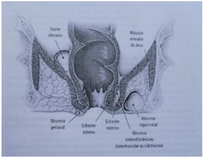
Mulher, negra, 63 anos, portadora de dor difusa crônica, hipertensão arterial sistêmica e obesidade. É líder comunitária e responsável por furar as orelhas dos bebês da comunidade. Vem a primeira consulta com o residente de medicina de família e comunidade. Muito chorosa, diz que não consegue falar e que sente dor. Quando ela se refere à garganta e coloca seus dedos na parte frontal da mesma, apresenta piora da disfonia que já ocorria desde o início da consulta. Quando questionada sobre o tabagismo, comenta que sua "pomba gira" fuma quando vai ao terreiro. O mesmo relato ocorre quando se refere a bebida alcoólica. Refere que vai ao terreiro 5 vezes por semana, não sabe precisar quantos cigarros são utilizados por dia. Frequenta o terreiro desde os 20 anos. Nega perda de peso. Refere disfonia há pelo menos 2 anos. De acordo com o caso clínico acima, sobre a disfonia, marque a alternativa correta:
A síndrome de Sandifer que se caracteriza como uma postura anormal da cabeça, com torcicolo em crianças neurologicamente normais é associada à qual das condições abaixo?
Durante a assistência em sala de parto, observa-se recém- nascido de 37 semanas, que após o nascimento apresenta desconforto respiratório moderado, com murmúrio vesicular diminuído, cianose e abdome escavado. Essas características são compatíveis com:
Sobre a incidência das hérnias abdominais é CORRETO:
Sobre a anatomia da região inguinal é CORRETO afirmar:
Paciente apresenta abaulamento inguinal direito redutível com repouso e doloroso aos esforços. Foi submetido a exploração cirúrgica que encontrou saco herniário inguinal exteriorizando-se pelo anel inguinal interno que apresentava- se dilatado e com acidez da fáscia transversalis. Qual a classificação de Nyhus desta hérnia?
Sobre as hérnias umbilicais, é INCORRETO afirmar:
Frequentemente em ambulatórios de assistência geral nos deparamos com pacientes que além da queixa principal, manifestam sintomas de alterações nutricionais associadas. Avalie as assertivas abaixo, associe as colunas e escolha a alternativa que contém a sequência correta em relação às possíveis causas de alterações conforme as seguintes condições: Condições: I. Na gravidez; II. Na velhice; III. No câncer; IV. No grande queimado; Possíveis causas de alterações nutricionais: [ ] Podem ocorrer diminuição das sensibilidades gustativa e olfativa e aumento dos níveis de colecistoquinina. [ ] Pode ocorrer metabolismo anormal da glicose, com aumento da liberação de lactato, estímulo ao ciclo de Cori e resistência à insulina. [ ] Podem ocorrer aumento dos mediadores celulares e hormonais promovendo a proteólise e a lipólise que fornecem substrato para gliconeogênese e glicogenólise. [ ] Podem ocorrer mudanças hormonais, especialmente o aumento da progesterona, associada ao relaxamento da musculatura intestinal e assim, diminuindo o peristaltismo induzindo a constipação intestinal. (Magnoni, D., Cukier, C. Perguntas e respostas em nutrição clínica. 2a Edição. Roca. 2005.)
Sobre o diagnóstico de apendicite aguda, podemos dizer:
Quanto ao tratamento das apendicites agudas, é INCORRETO afirmar:
Todos os pacientes abaixo devem ser referenciados a um centro especializado em queimados, EXCETO:
Qual distúrbio hidroeletrolítico e ácido básico está mais frequentemente associado ao abdome agudo obstrutivo do intestino delgado proximal? (DENNIS L. KASPER, STEPHEN L. HAUSER, J. LARRY JAMESON . Medicina Interna de Harrison, parte 2, Seção 7 -19.Ed– 2016.)
Considerando que as complicações neurológicas resultantes da cirurgia bariátrica podem comprometer qualquer nível do sistema nervoso, é correto a rmar que a principal delas se refere à (TRATADO DE NEUROLOGIA DAACADEMIA BRASILEIRA DE NEUROLOGIA, 2A EDIÇÃO, 2019)
Quanto as síndromes pós gastrectomia é CORRETO afirmar:
Paciente de 80 anos, hipertenso e diabético, dá entrada na emergência com queixa de dor abdominal em anco esquerdo de evolução há 5 dias. Exames complementares mostram leucocitose com desvio a esquerda, aumento de PCR e tomogra a com múltiplos divertículos colônicos e formação de abscesso perissigmoidiano próximo à parede abdominal de 8 x 4 cm. Qual o tratamento mais adequado?
Paciente usuário de medicações neurolépticas apresenta dor abdominal acompanhada de distensão, vômitos e parada na eliminação de gases e fezes. Realiza tomogra a que sugere o diagnóstico de volvo de sigmoide. É CORRETO afirmar:
Sobre diérese, assinale a alternativa incorreta (TOLOSA E. M. C, PEREIRA P. R. B. Diérese. In: GOFFI F. S. Técnica Cirúrgica – Bases Anatômicas, Fisiopatológicas e Técnicas Cirúrgicas. São Paulo: Atheneu, 2001)
A figura abaixo representa uma piça hemostática atraumática. A pinça em questão denomina-se (TOLOSA E. M. C, PEREIRA P. R. B. Hemostasia. In: GOFFI F. S. Técnica Cirúrgica – Bases Anatômicas, Fisiopatológicas e Técnicas Cirúrgicas. São Paulo: Atheneu, 2001)
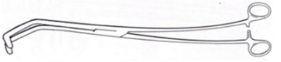
Avalie as assertivas abaixo, assinale com V (verdadeiro) ou F (falso) e escolha a alternativa que contém a sequência correta com relação à importância dos diferentes hormônios na resposta neuroendócrina pós- traumática. [ ] Hormônio antidiurético (HAD) está elevado em decorrência de estímulos de área traumatizada. [ ] Nas cirurgias de médio e grande porte, ocorre aumento dos níveis de renina, angiotensina II e aldosterona. [ ] No período pós traumático dá-se elevação do cortisol por quatro a doze horas. [ ] A secreção de adrenalina e noradrenalina aumenta muito lentamente no período pós agressivo. [ ] No período pós agressivo, por provável ação endócrina do cortisol, a produção de insulina fica aumentada. (MARGARIDO N. F. Agressão Cirúrgica. In: GOFFI F. S. Técnica Cirúrgica – Bases Anatômicas, Fisiopatológicas e Técnicas Cirúrgicas. São Paulo: Atheneu, 2001)
Dentre as complicações da raquianestesia, a que se caracteriza por contaminação das soluções anestésicas por antissépticos ou detergentes, a evolução das lesões é lenta e principalmente por congestão é:
A complicação mais frequente em apendicectomias que ocorre em cerca de 18% dos casos e é menor em cirurgia laparoscópica é:
Dentre as anomalias congênitas do estômago e do duodeno, assinale a alternativa incorreta: (SCHAARSCHMIDT K. W. Anomalias Congênitas do Estômago e do Duodeno. In: COELHO J. C. U. Aparelho Digestivo Clínica e Cirurgia. São Paulo: Atheneu, 2005)
Doença da vesícula biliar que se caracteriza por proliferação do epitélio de revestimento e penetração do mesmo através da camada muscular, que se encontra geralmente hipertro ada, é: (SAVASSI-ROCHAA. L, SAVASSI-ROCHA P. R. Colesterolose, Pólipo e Adenomiomatose da Vesícula Biliar In: COELHO J. C. U. Aparelho Digestivo Clínica e Cirurgia. São Paulo: Atheneu, 2005)
Homem, 26 anos, ex-tabagista, vai ao pronto atendimento por quadro de dor abdominal há 4 meses. Perda de 12kg no período e aumento do volume abdominal há 2 semanas. Sem comorbidades prévias, ao exame físico, emagrecido, descorado +/4+, desidratado +/4+, afebril. Abdômen com massa volumosa endurecida e doloroso a palpação sem sinais de peritonite em quadrantes superiores. Aos exames complementares realizou tomogra a de abdômen que evidenciou - massa peripancreática de 12 cm no maior diâmetro com características sugestivas de neoplasia. Exames laboratoriais - MUI/mL), com o caso, escolha a alternativa mais adequada:
Homem, 25 anos, sem doenças prévias, vítima de agressão por faca em região torácica há 2 horas, deu entrada no pronto-socorro apresentando-se taquidispneico, sudoreico, com turgência jugular a 45º, murmúrio vesicular abolido e hipertimpanismo à percussão em hemitórax esquerdo. À inspeção, observa-se lesão corto-contusa em região torácica, com sangramento ativo. Ao exame clínico, apresenta-se em mau estado geral, descorado +3/+4, pressão arterial 60/35 mmHg, frequência cardíaca 140 bpm, frequência respiratória 44 rpm. Em relação ao choque desse paciente, pode-se a rmar que, além do choque hipovolêmico, esse paciente apresenta:
São sinais de hipertensão intracraniana, exceto:
A queimadura caracterizada por lesão de espessura total através da derme e da epiderme até a gordura subcutânea, é classificada como:
São contra-indicações para realização de Tomografia de abdome em paciente vitima de trauma, exceto:
Paciente 55 anos, sexo feminino, ASA 2, em 2º pós operatório de Hepatectomia esquerda por laparotomia devido metastase de tumor colorretal, cirurgia realizada sem intercorrências, se encontra na uti clinicamente estável e ainda não saiu do leito. Evolui com episódio febril aferido de 37,8ºC. Qual a principal hipótese de causa da febre?
Paciente vitima de acidente por arma branca em hemitorax esquerdo com instabilidade hemodinâmica, foi submetido a drenagem torácica em selo d'água com saída inicial de 1600ml de sangue. Qual a conduta recomendada para o caso?
Qual a fase de cicatrização de feridas caracterizada pela formação de tecido de granulação, consistindo em um leito capilar, fibroblastos, macrófagos, um frouxo arranjo de colágeno, fibrinectina e ácido hialurônico?
De acordo com a classificação de Nyhus para hérnias da região inguinal, uma Hérnia Inguinal Direta, com defeito da parede posterior, corresponde a hérnia:
Qual o método de imagem mais útil para diagnóstico de colelitiase/colecistite?
São critérios para consideração de cirurgia bariátrica, exceto:
De acordo com a classificação de Hynchey, a diverticulite Estagio Idevera ser tratada por:
Das alternativas abaixo sobre Doenças Hemorroidárias, é correto afirmar:
Criança de 9 meses após traumatismo cranioencefálico apresenta: abertura ocular espontânea, balbucios e movimento espontâneo normal. Qual será a pontuação de acordo com a Escala de Coma de Glasgow modificada para lactentes?
Homem, 55 anos, previamente hígido, 70 Kg, após trauma tem perda sanguínea estimada em 2 L. Assinale a afirmativa correta:
Mulher, 28 anos, gestante na 30ª semana de gestação, vítima de colisão auto x auto, trazida pelo SAMU em prancha rígida com colar cervical. Apresenta na admissão SatO₂ 96% em ar ambiente, pressão arterial 120/80mmHg, frequência cardíaca 120 bpm e refere estar com cólicas abdominais. Assinale a alternativa correta:
Mulher, 55 anos, deu entrada no PS com queixa de abaulamento em região inguinal esquerda e dor abdominal intensa e vômitos incoercíveis. Ao exame clínico ela apresenta o abdome distendido, com dor à palpação em todo abdome, sem sinais de irritação peritoneal e a região inguinal esquerda com abaulamento doloroso e hiperemia da pele: Assinale a alternativa correta:
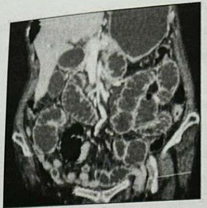
Homem, 22 anos, vítima de ferimento por arma de fogo em ombro esquerdo, trazido pelo SAMU em prancha com colar cervical. Chega ao PS com SatO₂ 93% em ar ambiente, pressão arterial 80/40 mmHg. Foi colocada máscara com 10L de oxigênio e na ausculta torácica os murmúrios vesiculares estão abolidos à esquerda e à percussão o paciente apresenta macicez. A conduta correta é:
Homem, 47 anos, vítima de queda de andaime na altura de 2 andares. Trazido pelo SAMU em prancha rígida com colar cervical. Na admissão, é informado que a queda foi de pé e que existe desvio e imobilização em ambos os tornozelos. O paciente apresenta sinais vitais normais e pulsos presentes em ambos os MMII. Assinale a afirmativa correta:
Homem, 26 anos, vítima de colisão auto x caminhão, após reanimação na sala de trauma, realizou tomogra a de abdome (TC) com os seguintes achados: A pressão sistólica cai para 70 mmHg após a TC. A conduta correta é:
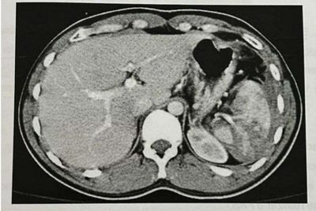
Mulher, 30 anos, vítima de acidente automobilístico, encontra-se internada em um serviço médico. Suas pupilas reagem lentamente e seus olhos se abrem ao estímulo doloroso. Ela não obedece aos comandos, mas geme periodicamente. Seu braço direito está deformado e não responde a estímulo; no entanto, sua mão esquerda se estende em direção ao estímulo doloroso. Sua pontuação na Escala de Coma de Glasgow é:
Homem, 56 anos, vítima de colisão caminhão x auto. Foi arremessado contra o volante do caminhão. Chega ao PS sudoreico, agitado e referindo dor torácica. Na sala de emergência está com SatO₂ 93%, pressão arterial 60/40 mmHg, frequência cardíaca 112 bpm com bulhas rítmicas e distensão das veias jugulares. Assinale a correta:
Paciente obesa, no 1° PO de traqueostomia por intubação prolongada, está com cânula plástica número 8,5 com cu insu ado, quando durante a manipulação pela enfermagem, a cânula sai do lugar e é recolocada pelo intensivista. Após esse episódio, você é chamado para reavaliar a paciente que se encontra com SatO₂ 92% (anteriormente era 98%), pressão arterial 80/40 mmHg e frequência cardíaca 120 bpm. Radiogra a do tórax do dia: A conduta é:
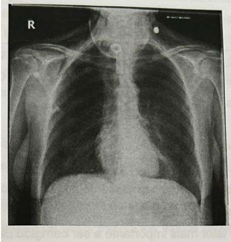
Em relação aos retalhos musculares e musculocutâneos:
Mulher, 33 anos, vítima de trauma raquimedular há 7 anos e com paraplegia de MMII é trazida por familiares por ferida que não cicatriza. Ao exame clínico, é identi cada uma lesão em região glútea esquerda de aproximadamente 5,0 x 3,0 cm de área com perda de epitélio e subcutâneo, e profundidade de 2,0 cm, sem identi cação de osso ou músculo, com fundo de brina e hiperemia em bordas. Com relação a esse caso assinale a afirmativa correta:
Recém-nascido, sexo feminino, terceira gestação de mãe de 34 anos, com 26 semanas, com ultrassom morfológico evidenciando vísceras abdominais na base do cordão umbilical. A conduta é:
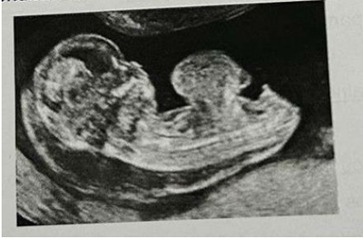
Homem, 58 anos, hipertenso e tabagista, refere dor na panturrilha direita após caminhar 200 metros que melhora com o repouso. Exame clínico com pulso femoral presente e pulsos poplíteo e distais ausentes. O índice tornozelo braquial é de 0,60. Assinale a alternativa com a conduta correta:
Mulher, 52 anos, com diagnóstico de oclusão arterial aguda em artéria femoral do membro inferior direito, foi submetida a tratamento com embolectomia à Fogarty. No pós-operatório imediato evoluiu com dor no membro, dispneia, taquicardia e oligúria. No exame clínico encontra-se com bulhas rítmicas, SatO₂ 84%, pressão arterial 100/75 mmHg e frequência cardíaca 122 bpm. Exames laboratoriais com CPK 15.300 U/L, t r o p o n i n a 0,03ng/mL, sinusal. Ecodopplercardiograma normal. Sua hipótese é:
Homem, 65 anos, hipertenso mal controlado, apresenta há 40 minutos dor abdominal intensa de início súbito e síncope. Ao exame clínico: pressão arterial 100/70 mmHg, frequência cardíaca 110 bpm, pálido e sudoreico e massa pulsátil em abdome e dor à palpação abdominal profunda difusamente. A conduta a seguir é:
A ultrassonogra a vascular com Doppler é o método de escolha por sua alta acurácia para o Tromboembolismo Venoso.
A TVP pode ocorrer tanto em pacientes internados quanto ambulatoriais:
Após a Trombose Aguda, caso o trombo não desapareça por completo:
A fibrose após a trombose aguda produz cicatrizes, espessamento das paredes e sinéquias, que:
Cicatrizes bróticas pós-trombóticas surgem com a evolução do quadro e produzem, ao longo da parede venosa, imagens semelhantes a placas, pois:
O espessamento da parede venosa é um achado comum no Tromboembolismo Venoso, sendo correto que:
Os aspectos ultrassonográ cos da Trombose Venosa Profunda (TVP) plantar recentemente observados são a:
Revisar: possível letra faltando em enunciado
Os sintomas desencadeados pelo evento trombótico:
Com relação ao controle das lesões exsanguinantes graves, é correto afirmar que:
De acordo com a classificação da perda sanguínea elaborada pelo ATLS e do PALS, um paciente com perda sanguínea de classe III apresentará quais sintomas?
A artéria mesentérica superior tem origem na aorta abdominal. Emite ramos arteriais para todo o delgado e a metade proximal do cólon. Seus ramos principais são, exceto:
São os tipos mais comuns do mediastino posterior:
Os tumores de mediastino são neoplasias raras e aproximadamente 30% dos pacientes adultos apresentam sintomas, sendo alguns deles mais comuns de acordo com o tipo de tumor. 1. Linfoma. A. Dispneia, chiado e hemoptise. 2. Timoma com miastenia gravis. B. Sudorese noturna, perda de peso, fadiga, adenopatia extratorácica, elevação da PCR e leucocitose. 3. Granuloma mediastinal. C. Massa testicular, elevação do HCG e AFP em homens jovens. 4. Tumor de células germinativas. D. Fraqueza utuante no decorrer do dia, fadiga precoce, ptose e diplopia. Assinale a alternativa com a correta associação entre o tipo de tumor e sintomas associados.
A localização mais comum dos tumores neurogênicos do tórax é:
Trata-se de uma depressão esternal causada por um crescimento desigual das costelas inferiores (abaixo da 3a) e das cartilagens costais. É a anormalidade mais comum da parede torácica, acometendo 1 em cada 400 nascidos, predominando no sexo masculino. O reparo cirúrgico pode ser realizado por várias técnicas, incluindo osteotomia esternal, osteotomia com suporte posterior ou outra estabilização (por exemplo, uma placa de metal). Os músculos são reaproximados na linha média sobre o reparo.
O principal tipo de fístula associada a complicação da diverticulite aguda é:
Homem de 42 anos vítima de politraumatismo foi submetido à tomogra a de tórax que identi cou fratura de costela à esquerda e observou-se também a presença de lesão sólida de 3 x 4 x 6 cm em goteira paravertebral à esquerda. De acordo com a epidemiologia das lesões de mediastino, assinale a principal hipótese diagnóstica.
Homem, 25 anos de idade, vítima de ferimento por arma branca em hemitórax esquerdo, é trazido pelo SAMU para a emergência. Apresenta vias aéreas pérvias com colar cervical, saturação de oxigênio 93% em ar ambiente e 96% com máscara de oxigênio 12 Litros/minuto. Expansibilidade torácica diminuída à esquerda, com murmúrios vesiculares diminuídos à esquerda. Pressão arterial 130x70mmHg e frequência cardíaca 84bpm. Abdome ácido, doloroso à palpação profundamente em anco esquerdo e hipocôndrio esquerdo, sem sinais de irritação peritoneal. Pelve estável. Toque retal sem alterações. Escala de coma de Glasgow 15, pupilas isocóricas e fotorreagentes. Presença de ferimento penetrante em oitavo espaço intercostal esquerdo, próximo à linha axilar anterior, sem sinais de sangramento ativo. Realizou radiogra a convencional de tórax e tomografia computadorizada de abdome total (as imagens estão disponíveis a seguir): O laudo tomográ co evidencia lesão esplênica grau III, sem sinais de sangramento ativo. Após drenagem de hemitórax esquerdo, o tratamento indicado é:
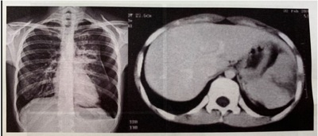
Revisar: possível letra faltando em enunciado
Homem, 35 anos de idade, procura pronto atendimento por dor em hipogástrico há 5 dias. Há dois dias, evoluiu com náuseas, vômitos e parada de eliminação de fezes e atos. Ao exame físico, encontra-se em regular estado geral, com pressão arterial 120x80mmHg, frequência cardíaca 94bpm e temperatura axilar 38,3ºC. Abdome globoso, doloroso à palpação em hipogástrio, sem massas palpáveis, sem hérnias inguinofemorais. Toque retal com pequena quantidade de fezes pastosas. Os exames laboratoriais evidenciam: hemoglobina 12,4g/dL (VR 3,0 - 16,9g/dL); leucócitos 16.700/mm³ (VR 4.000 - 10.000/mm³); proteína C reativa 143mg/L (VR < 3mg/L); creatinina 0,9mg/dL (VR 0,6 - 1,3mg/dL); ureia 32mg/dL (VR 10 - 50mg/dL); sódio 143mEq/L (VR 135 - 145mEq/L); potássio 4,1mEq/L (VR 3,6 - 5,2mEq/L). Urina tipo I: hemácias tomografia computadorizada de abdome total, mostrada a seguir: O tratamento indicado para este paciente, além de administração de antibióticos, é:
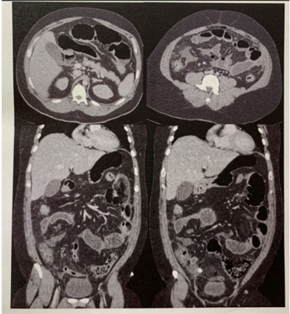
Mulher, 45 anos de idade, procura pronto-atendimento por dor abdominal há dois dias associada a náuseas, vômitos e parada de eliminação de fezes e atos. Nega febre. Nega comorbidades. Relata antecedente cirúrgico de histerectomia subtotal por miomas uterinos há 5 anos. Ao exame físico, encontra-se em regular estado geral, corada, desidratada 1+/4+. Abdome distendido, ruídos hidroaéreos aumentados, timpânico à percussão, doloroso à palpação difusamente, sem sinais de irritação peritoneal. Ausência de hérnias inguinofemorais. Toque retal sem lesões, com pequena quantidade de fezes pastosas em ampola retal. Realizou exame radiográfico, mostrado a seguir: Considerando o quadro clínico da paciente, qual é a causa de base da condição apresentada?
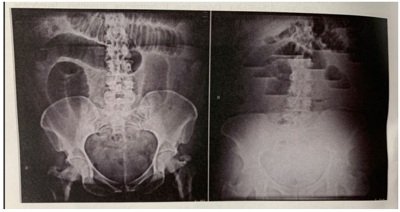
Mulher, 68 anos de idade, procurou pronto atendimento por dor hipogástrica há dois dias. Foi realizado exame de urina tipo I, com o seguinte resultado: hemácias ausentes, leucócitos 30.000/mm³, nitrito negativo. Recebeu diagnóstico de infecção urinária, sendo prescrito cipro oxacino por 3 dias. Persistiu com o sintoma e apresentou episódios febris de até 38,5ºC, retornando ao pronto atendimento. Tem antecedente pessoal de hipertensão arterial sistêmica e diabetes mellitus tipo 2. Ao exame físico, encontra- se em bom estado geral, com temperatura 38,5ºC, pressão arterial 124x82mmHg, frequência cardíaca 88bpm. Abdome globoso, ácido, doloroso à palpação do hipogástrio, com plastrão palpável, sem sinais de peritonismo difuso. Os exames laboratoriais mostram: hemoglobina 13,2g/dL (VR 11,5 - 14,9g/dL); leucócit os 18.900/mm³ (VR 4.000 - 10.000/mm³); proteína C reativa 218mg/L (VR < 3mg/L); glicemia 301mg/dL; restante dos exames normais. Urina tipo I: hemácias ausentes, leucócitos 35.000/mm³ (VR < 10.000/mm³), nitrito negativo. Realizou a tomogra a computadorizada de abdome total, mostra a seguir: Em relação ao caso clínico apresentado, podemos afirmar:
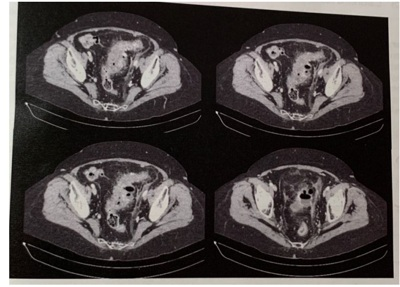
Criança do sexo masculino com 7 meses de idade é levada em consulta ambulatorial para avaliação. A mãe encontra-se ansiosa, pois durante o choro nota que o bebê apresenta abaulamento em região umbilical. Ao exame físico, a criança encontra-se em bom estado geral, ativa. Abdome globoso, ruídos hidroaéreos presentes e normais, ácido, sem sinais de defesa, com presença de defeito da parede abdominal de aproximadamente 0,5cm em região umbilical, com protrusão de conteúdo durante os choros e com retorno espontâneo. Apresenta ganho de peso e desenvolvimento neuropsicomotor adequados para a idade. Qual é a conduta para este caso?
Homem, 30 anos de idade, levado à emergência após colisão de automóvel versus caminhão em rodovia de alta velocidade. Foi intubado na cena, por rebaixamento do nível de consciência. Em avaliação inicial, a cânula orotraqueal está adequadamente locada, sem alterações cervicais, sem alterações ventilatórias. Pressão arterial 60x40mmHg e frequência cardíaca 135bpm. Realizado protocolo FAST (Focused Assessment with Sonography in Trauma), com grande quantidade de líquido cavitário em espaço hepatorrenal e esplenorrenal, sem líquido em pericárdio. Pelve estável, toque retal sem alterações. Escala de coma de Glasgow 3, pupilas isocóricas, sem outras lesões externas. Qual é a conduta para este paciente?
Mulher, 34 anos de idade, procura o pronto atendimento por dor em epigástrio e hipocôndrio direito há cinco dias, associada a náuseas. Ao exame físico, encontra-se em bom estado geral, ictérica 1+/4+, afebril, pressão arterial 120x70mmHg e frequência cardíaca 85bpm. Abdome globoso, ácido, doloroso à palpação do hipocôndrio direito. Os exames laboratoriais evidenciam: hemoglobina 12,5g/dL (VR 11,5 - 14,9g/dL); leucócitos 15.400/mm³ (VR 4.000 - 10.000/mm³); creatinina 0,5mg/dL (VR 0,5 - 1,1mg/dL); ureia 20mg/dL (VR 10 - 50mg/dL); sódio 143mEq/L (VR 135 - 145mEq/L); potássio 4,0mEq/L (VR 3,6 - 5,2mEq/L); TGO 25U/L (VR 5 - 40U/L); TGP 26U/L (VR 7 - 56U/L); fosfatase alcalina 70U/L (35 - 100U/L); gama-GT 90U/L (VR 8 - 40U/L); bilirrubinas totais 3,9mg/dL (VR 0,2 - 1,1mg/dL); bilirrubina direta 3,4mg/dL (VR < 0,3mg/dL); bilirrubina indireta 0,5mg/dL (VR 0,2 - 0,8mg/dL); amilase 40U/L (VR < 125U/L); lipase 50U/L (VR < 60U/L). Realizou colangiorressonância, mostrada a seguir: O diagnóstico apresentado pela paciente é:
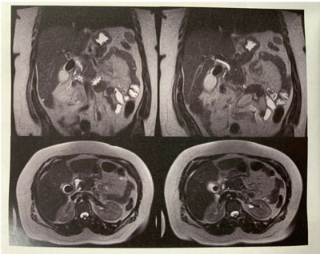
Homem de 27 anos de idade é levado à emergência após acidente com ação elétrica ( ash burn), seguida de queda de 3 metros enquanto realizava manutenção de poste de luz. Na cena, encontrava-se hemodinamicamente estável, eupneico, referindo escotomas centrais e periféricos. Intervalo de tempo de trinta minutos. Na admissão hospitalar, o paciente apresentava rouquidão, saturação de oxigênio de 95% em ar ambiente, sem alterações cervicais. Expansibilidade torácica simétrica, murmúrios vesiculares presentes e simétricos, com roncos difusos. Pressão arterial 130x80mmHg e frequência cardíaca 88bpm. Abdome ácido, doloroso à palpação de hipocôndrio direito, sem sinais de irritação peritoneal. Pelve estável, toque retal normal. Escala de coma de Glasgow 15, pupilas isocóricas e fotorreagentes, referindo manutenção dos escotomas centrais e periféricos. Presença de queimaduras de segundo graus super ciais em hemiface esquerda e membros bilateralmente, com áreas de segundo grau profundo em mãos. Qual é a primeira conduta a ser realizada neste caso?
Homem, 24 anos de idade, comparece em pronto atendimento com ferimento em região parietal esquerda após agressão, há uma hora. Nega náuseas e vômitos. Ao exame físico, encontra-se consciente, orientado, escala de coma de Glasgow 15, pupilas isocóricas e fotorreagentes. A única alteração em avaliação inicial é o ferimento de 8cm de extensão em região parietal esquerda. Durante a realização da sutura do ferimento, o paciente evoluiu com rebaixamento do nível de consciência, com pupila esquerda midriática e direita de aspecto normal. Em relação ao caso clínico apresentado, é correto afirmar:
Mulher, 35 anos de idade, procura pronto atendimento devido a dor abdominal difusa há cinco dias. Nega alterações urinárias ou intestinais. Tem antecedente de endometriose, em tratamento com anticoncepcional oral combinado. Ao exame físico, encontra-se em bom estado geral, anictérica, afebril, pressão arterial 130x70mmHg, frequência cardíaca 85bpm e índice de massa corporal 37kg/m². Abdome globoso, ácido, doloroso à palpação difusamente, sem sinais de irritação peritoneal. Realizou tomogra a computadorizada de abdome total, mostrada a seguir: Qual é o diagnóstico da paciente?
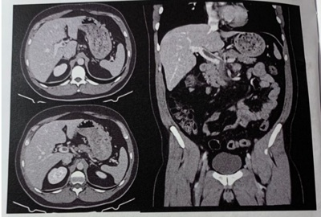
Mulher de 30 anos de idade, submetida a colecistectomia videolaparoscópica eletiva por colelitíase sintomática. O procedimento ocorreu sem intercorrências. No primeiro dia pós-operatório, a paciente apresentou temperatura de 37,8ºC. Aceitou dieta oral, deambulou e apresentou diurese sem alterações. Ao exame físico, apresenta sinais vitais normais e encontra-se em bom estado geral, corada, anictérica, afebril, eupneica. O exame cardiopulmonar está normal. Abdome plano, com ruídos hidroaéreos presentes, ácido, doloroso à palpação peri-incisões dos trocartes. Ausência de abaulamentos em feridas operatórias. Membros inferiores indolores e sem edemas. Qual é a conduta para esta paciente?
Mulher de 58 anos de idade é admitida na unidade de emergência com quadro de dor no quadrante superior direito do abdome, caracterizada como em aperto, de intensidade moderada, que piora com a alimentação e se associa a náuseas e vômitos ocasionalmente. Esta surgiu há 3 dias e vem progredindo desde então. Hoje, notou também o surgimento de prurido leve. Nega febre, calafrios ou outros sintomas. Tem história prévia de obesidade grau 1 e dislipidemia, em uso de sinvastatina. Nega o uso de chás, outras substâncias ou medicamentos. Ao exame clínico, os sinais vitais eram normais, tinha icterícia (2+/4+) e dor à palpação do hipocôndrio direito, sem descompressão brusca dolorosa. Uma ultrassonogra a de abdome superior identi cou lama biliar na vesícula e ducto colédoco de tamanho normal, sem nenhum sinal de colecistite. A tomogra a de abdome não mostrou nenhuma anormalidade. Exames laboratoriais identi caram: AST 58U/L (VR < 32U/L); ALT 93U/L (VR < 33U/L); fosfatase alcalina 555U/L (VR 35 - 104U/L); gama-GT 673U/L (VR 8 - 41U/L) e bilirrubina direta 4,1mg/dL (VR 0 - 0,30mg/dL). Após analisar os resultados dos exames complementares, o residente da equipe de cirurgia geral pede a sua avaliação do caso. Sobre o caso clínico apresentado, assinale a resposta correta:
Paciente trazido pelo SAMU, protocolado em prancha rígida e colar cervical, vítima de colisão automobilística frontal. Chega ao serviço de emergência em máscara de O₂ 8L/min, pouco agitado, com queixa de dor em hemitórax direito. Sinais vitais da admissão: FC 112 / PA 123x79 / saturação de O₂ 91%. Exame físico inicial: •Vias aéreas pérvias e colar cervical; •Ausculta abolida em hemitórax direito, com crepitações em arcos costais, expansibilidade assimétrica; •Ausência de fraturas de ossos longos, abdome ácido, indolor à palpação, sem peritonite, turgência jugular à direita, pelve estável; •ECG 14. PIFR; •Ausência de escoriações. Qual o diagnóstico e a conduta?
Mulher, 46 anos, dá entrada em pronto-socorro com queixa de dor abdominal em quadrante superior direito e febre (38,5ºC). Refere piora da dor após ingesta de alimentação gordurosa. EF: REG, abdome globoso às custas de panículo adiposo, com parada da inspiração à palpação de hipocôndrio direito, ruídos hidroaéreos presentes. Hb 14; Ht 41,7; Leuco 13.900; Plaquetas 246.000; TGO 41; TGP 51; FA 111; GGT 80; Bilirrubinas totais 2,3; Bilirrubina Direta 1,9; PCR 8; Na 141; K 4; Ureia 46; Creatina 1,1. USG: vesícula biliar com paredes de 6mm, colelitíase, vias biliares não ectasiadas. Qual o diagnóstico?
Para a realização de procedimentos sob anestesia geral, é fundamental atingir um bom plano anestésico. Uma boa anestesia geral se fundamenta em 4 pilares essenciais, a saber:
As cirurgias ditas oncológicas visam a extirpação de todo tumor neoplásico, com o intento de cura da doença cancerosa. Sendo assim, consideramos uma cirurgia oncológica bem-sucedida quando:
Em um paciente politraumatizado com lesão maxilo-facial grave, o controle da via aérea deverá ser estabelecido por:
Segundo a classificação de Nyhus para as hérnias inguinocrurais, uma hérnia do tipo lllb seria:
Quanto ao câncer infantojuvenil, é correto afirmar:
Assinale a alternativa correta com relação à contusão pulmonar:
Alguns recém-nascidos podem apresentar íleo meconial. Considerando esse diagnóstico, assinale a alternativa que não apresenta uma complicação do mesmo:
Idoso de 74 anos, com história de brilação atrial crônica, queixa-se de dor em membro inferior esquerdo há aproximadamente 4 horas, de início súbito. Nega quadro semelhante anteriormente, tabagismo ou claudicação dos membros inferiores prévia. Ao exame físico, observase membro inferior esquerdo frio, com ausência de pulsos poplíteo, tibial posterior e pedioso. O membro inferior direito, por sua vez, está quente, com todos os pulsos presentes. Qual o provável diagnóstico?
Paciente 25 anos, assintomático, apresentou achado incidental em tomogra a computadorizada com cisto renal simples, de 0.7 cm, classificado em Bosniak I A melhor conduta é:
Dos testes de imagem, o que apresenta maior acurácia em uma diverticulite aguda não complicada é:
Paciente feminina de 62 anos queixando-se de dor abdominal difusa há 4 dias, em cólicas, associada a distensão abdominal e vômitos fétidos e escuros. Relata que há 4 meses vem apresentando alguns episódios esporádicos de sangramento nas fezes, bem como redução da frequência evacuatória. Nega febre. Nega trauma. Nega cirurgias prévias. Ao exame físico: regular estado geral, descorada, desidratada, anictérica, afebril. Semiologia cardíaca e pulmonar normais. Abdome distendido, com ruídos, doloroso a palpação difusa, sem sinais de irritação peritoneal. Toque retal nota-se lesão ulcerada circunferencial distando 5 centímetros da borda anal. Foras realizadas as radiogra as e a tomogra a de abdome e pelve abaixo. Assinale a alternativa que corresponde ao diagnóstico sindrômico.

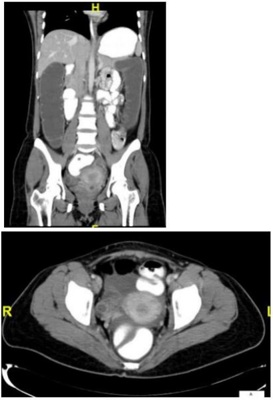
Paciente feminina de 62 anos queixando-se de dor abdominal difusa há 4 dias, em cólicas, associada a distensão abdominal e vômitos fétidos e escuros. Relata que há 4 meses vem apresentando alguns episódios esporádicos de sangramento nas fezes, bem como redução da frequência evacuatória. Nega febre. Nega trauma. Nega cirurgias prévias. Ao exame físico: regular estado geral, descorada, desidratada, anictérica, afebril. Semiologia cardíaca e pulmonar normais. Abdome distendido, com ruídos, doloroso a palpação difusa, sem sinais de irritação peritoneal. Toque retal nota-se lesão ulcerada circunferencial distando 5 centímetros da borda anal. Foras realizadas as radiogra as e a tomogra a de abdome e pelve abaixo. A conduta mais adequada para este caso é:
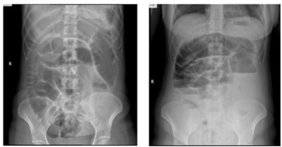

Paciente masculino é transferido de outra cidade para avaliação da equipe de cirurgia do trauma e cirurgia torácica devido à queda de andaime de aproximadamente 15 metros de altura há 2 dias. Foi atendido na cidade de origem e realizada drenagem de tórax bilateral, porém o paciente não apresentou melhora com a terapêutica proposta e os ambos os drenos continuaram com grande débito aéreo no selo d’água. É admitido em sala do trauma com as seguintes condições: A - Via aérea pérvia, sem colar cervical. B - Equimoses torácicas, expansibilidade assimétrica e restrita, dor a palpação difusa com crepitações subcutâneas e murmúrio reduzido bilateralmente. Dreno de tórax a direita oscilando, com débito aéreo, dreno a esquerda não oscilante, sem débito. Saturação periférica de oxigênio: 90% em máscara com uxo de 5 l/min. C - Estável hemodinamicamente. Bem perfundido, sem sinais de choque. D - Glasgow 15, pupilas isocóricas, sem dé cits focais. E - Sem outras lesões ameaçadoras à vida aparentes. É submetido à tomogra a de tórax abaixo. Assinale a alternativa que melhor descreve os achados tomográficos.

Paciente masculino é transferido de outra cidade para avaliação da equipe de cirurgia do trauma e cirurgia torácica devido à queda de andaime de aproximadamente 15 metros de altura há 2 dias. Foi atendido na cidade de origem e realizada drenagem de tórax bilateral, porém o paciente não apresentou melhora com a terapêutica proposta e os ambos os drenos continuaram com grande débito aéreo no selo d’água. É admitido em sala do trauma com as seguintes condições: A - Via aérea pérvia, sem colar cervical. B - Equimoses torácicas, expansibilidade assimétrica e restrita, dor a palpação difusa com crepitações subcutâneas e murmúrio reduzido bilateralmente. Dreno de tórax a direita oscilando, com débito aéreo, dreno a esquerda não oscilante, sem débito. Saturação periférica de oxigênio: 90% em máscara com uxo de 5 l/min. C - Estável hemodinamicamente. Bem perfundido, sem sinais de choque. D - Glasgow 15, pupilas isocóricas, sem dé cits focais. E - Sem outras lesões ameaçadoras à vida aparentes. É submetido à tomogra a de tórax abaixo. Assinale a alternativa com a provável lesão traumática que justifique tais achados.

Homem de 50 anos procura atendimento ambulatorial devido aparecimento de nódulo em região da mandíbula direita de início há aproximadamente 7 meses, de crescimento lento. Nega febre. Nega perda ponderal. Nega sudorese. Nega trauma. Nega etilismo e tabagismo. Nega dor local. Ao exame: nódulo palpável na topogra a da glândula parótida direita, indolor, broelástico, não aderido à planos profundos. Palpação da tireoide normal. Sem achados à inspeção da cavidade oral. A principal hipótese diagnóstica é:

Paciente masculino, 30 anos, encaminhado da unidade de pronto atendimento de nível secundário devido a hipótese de abdome agudo obstrutivo por bridas. Queixa-se de dor abdominal súbita há 8 horas, intensa, em facada, em andar superior do abdome, associada a um episódio de vômito, com piora progressiva durante a observação, sem melhora com analgésicos. Nega trauma recente. Tem histórico de laparotomia prévia por ferimento de arma de fogo. Ao exame físico: regular estado geral, desidratado, taquicárdico, afebril. Semiologia cardiopulmonar normal. Abdome distendido, doloroso difusamente, tenso, com defesa involuntária à palpação. São realizadas as radiografias de abdome agudo abaixo. A principal hipótese diagnóstica é:

Paciente masculino, 30 anos, encaminhado da unidade de pronto atendimento de nível secundário devido a hipótese de abdome agudo obstrutivo por bridas. Queixa-se de dor abdominal súbita há 8 horas, intensa, em facada, em andar superior do abdome, associada a um episódio de vômito, com piora progressiva durante a observação, sem melhora com analgésicos. Nega trauma recente. Tem histórico de laparotomia prévia por ferimento de arma de fogo. Ao exame físico: regular estado geral, desidratado, taquicárdico, afebril. Semiologia cardiopulmonar normal. Abdome distendido, doloroso difusamente, tenso, com defesa involuntária à palpação. São realizadas as radiografias de abdome agudo abaixo. A melhora conduta para este caso é:
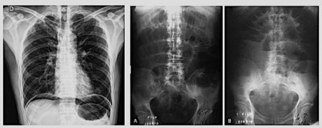
Menino, 11 meses, é encaminhado ao cirurgião pediátrico devido a distopia testicular esquerda. Mãe relata que desde o nascimento nunca apresentou testículo esquerdo tópico em bolsa testicular, porém foi orientada aguardar até o primeiro ano de vida para resolução do quadro. Nascido a termo, sem intercorrências na gestação ou parto. Ao exame físico: abdome ácido, indolor, sem massas palpáveis. Fimose siológica. Testículo direito tópico em escroto. Bolsa testicular esquerda vazia, hipotró ca. Testículo esquerdo não palpável na região inguinal, raiz da coxa nem na base do pênis. Foi submetido a videolaparoscopia diagnóstica em que não foi encontrado testículo dentro da cavidade abdominal, porém notou-se as estruturas descritas (figura abaixo). A provável hipótese diagnóstica é:
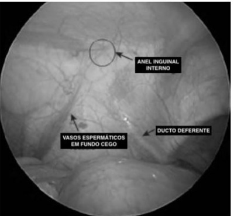
Revisar: possível letra faltando em enunciado
Na maioria das vezes, as veias recentemente trombosadas apresentam-se distendidas, com diâmetros maiores que os vasos arteriais adjacentes. Podemos indicar como correto o item:
A conduta mais adequada para este quadro é:
Paciente masculino, 3 meses de vida, portador de trissomia do cromossomo 21, cardiopata, é trazido pela mãe em consulta devido ao quadro de constipação intestinal. Relata que desde o nascimento necessita de uso de supositório diários para evacuações efetivas. Apresentou eliminação de mecônio aos 4 dias de vida, após estímulo retal. Já fez uso de inúmeras fórmulas lácteas, sem sucesso. Nega febre, perda ponderal. Nega vômitos. Nega queda do estado geral. Nega outras queixas. Ao exame físico: bom estado geral, estável, corado, hidratado. Abdome ácido, indolor, sem massas palpáveis, sem sinais de irritação peritoneal. Toque retal com saída de grande quantidade de fezes após manipulação. Para a investigação, foi solicitado exame contrastado abaixo, e realizado biopsia retal. A principal hipótese diagnóstica é:

Paciente masculino, 3 meses de vida, portador de trissomia do cromossomo 21, cardiopata, é trazido pela mãe em consulta devido ao quadro de constipação intestinal. Relata que desde o nascimento necessita de uso de supositório diários para evacuações efetivas. Apresentou eliminação de mecônio aos 4 dias de vida, após estímulo retal. Já fez uso de inúmeras fórmulas lácteas, sem sucesso. Nega febre, perda ponderal. Nega vômitos. Nega queda do estado geral. Nega outras queixas. Ao exame físico: bom estado geral, estável, corado, hidratado. Abdome ácido, indolor, sem massas palpáveis, sem sinais de irritação peritoneal. Toque retal com saída de grande quantidade de fezes após manipulação. Para a investigação, foi solicitado exame contrastado abaixo, e realizado biopsia retal. Das alternativas abaixo, a conduta mais adequada é:
Sobre as oclusões arteriais agudas, assinale a incorreta.
Sobre a doença arterial obstrutiva periférica dos membros inferiores, assinale a incorreta.
Mulher, 49 anos, procura atendimento médico com dor abdominal em cólicas há 9 dias, intermitentes, que cessavam com escopolamina. Há 2 dias apresentou piora da dor e icterícia associada à febre alta e vômitos. No momento em regular estado geral, desidratada, taquicárdica, taquipneica, confusa, febril, ictérica. Tem dor intensa à palpação de abdome superior, sem sinais de irritação peritoneal. Hemograma com leucocitose importante, amilase normal, com discreto aumento provas de lesão hepatocelular. Realizou ecogra a de abdome que evidenciou: vesícula biliar com parede de 2 mm, com cálculos em seu interior, múltiplos, todos com tamanho menor que 10 mm e ducto colédoco com 16 mm, sem visualização de sua porção distal, prejudicado por interposição gasosa. Qual o provável diagnóstico e conduta adequada?
Jovem, masculino, há 3 dias com hiporexia, náuseas, desconforto epigástrico, queixando-se hoje de piora da dor, mais localizada em fossa ilíaca direita associada a 2 picos de febre aferida. Ao exame físico: bom estado geral, corado, hidratado, eupneico, anictérico. Exame físico cardiopulmonar normal, exceto leve taquicardia. Ruídos abdominais presentes, sem alterações na inspeção, porém com dor a palpação de fossa ilíaca direita. Sinal de Blumberg presente. Foi submetido a exames laboratoriais que resultaram em um escore de Alvarado de 10 pontos. Não há exames de imagem disponível no serviço. A conduta mais adequada é:
Paciente feminina, 80 anos, internada com diverticulite aguda, submeteu-se à tomogra a de abdome com contraste endovenoso que evidenciou processo inflamatório colônico com divertículos e a presença de coleção pélvica bloqueada. Trata-se de diverticulite aguda, classificada por Hinchey (clássica) em grau:
O teste de caminhada de 6 minutos (TC6min):
O estabelecimento de intervalos de referência para o TC6min em mulheres grávidas saudáveis:
Em pacientes com Trombose Venosa Profunda (TVP) provocada por um fator de risco transitório (p. ex., após uma grande cirurgia), o risco anual é de apenas 1%, podendo-se cogitar um tratamento limitado a 3 meses na dependência de outros fatores de risco.
Primariamente, a recorrência Tromboembolismo Venoso após o término da anticoagulação depende de fatores:
Por conta de seu baixo valor preditivo, um teste D-dímero quantitativo positivo não modi ca a probabilidade pré-teste (clínica) e, portanto, é clinicamente inútil. Sendo correto que:
Revisar: possível letra faltando em enunciado
A Trombose Venosa Profunda (TVP) é classificada:
Parestesia de extremidade é sintoma comum encontrado nos pacientes que realizaram tratamento cirúrgico da obesidade com bypass gástrico e reconstrução em Y de Roux. Após grandes perdas ponderais, a deficiência responsável por tais sintomas é de:
Recém-nascido masculino, nascido de parto vaginal em domicílio, a termo, é encaminhado ao hospital para cuidados após o nascimento com 18 horas de vida. Ainda não eliminou mecônio. Está estável, com abdome ainda ácido, porém apresentou alguns episódios de vômitos. Durante a avaliação pelo pediatra, foi encontrado o exame físico perineal abaixo. Sobre o caso acima, assinale a correta.
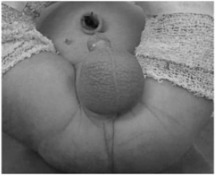
Gestante, 36 semanas de gestação sofre acidente motociclístico em rodovia de alta energia cinética. É transferida ao centro de trauma em prancha rígida, com colar cervical, com sinais de choque hipovolêmico grau II Além de realizar as manobras de reanimação preconizadas no atendimento ao politraumatizado, para melhorar o débito cardíaco, pode-se associar:
Mulher, 30 anos, obesa, há 4 dias com dor abdominal epigástrica associada a vômitos. Ao exame físico: fáscies de dor, anictérica, pálida, sudoreica, abdome doloroso a palpação profunda difusamente. Sinal de Murphy positivo. Restante do exame físico sem particularidades. Exames séricos evidenciaram leucocitose, sem desvio à esquerda. Amilase e lipase normais. Sem alteração de marcadores cananiculares de via biliar. A ecogra a de abdome evidenciou espessamento parietal da vesícula biliar, com bile espessa e delaminação de sua parede. Assinale a alternativa com a hipótese diagnóstica mais provável.
Paciente de 87 anos foi vítima de acidente automobilístico em rodovia de alta energia cinética. É transferido ao centro de trauma mais próximo por equipe de resgate avançado. Durante o transporte apresentou sinais clínicos de choque e recebeu 1000ml de ringer lactato aquecido e 1g de ácido tranexâmico. Foi admitido em prancha rígida, com colar cervical, acesso venoso periférico calibroso, sonda vesical de demora e máscara de oxigênio com uxo de 10l/min. Sinais vitais da admissão: Frequência cardíaca: 60 bpm Pressão arterial: 70 x 30 mmHg Frequência respiratória: 33 ipm Saturação periférica de oxigênio: 98% Temperatura axilar: 35,3°C. Atendimento primário: A – Via aérea pérvia, com colar cervical adequado; B – Expansibilidade torácica simétrica, ausência de hematomas ou crepitações. Som claropulmonar à percussão. Murmúrio presente bilateral sem ruídos adventícios. FR: 33ipm. Saturação de oxigênio: 98% com máscara a 10l/min; C – Hipotenso. Normocardico. Extremidades frias, mal perfundidas, com pulsos liformes. Descorado. Desidratado. Bulhas arrítmicas, normofonéticas, sem sopros audíveis. Ausência de estase jugular. Diurese de 5ml/h até então; D – Pupilas isocóricas, fotorreagentes, sem dé cits focais. Abertura ocular ao chamado, obedece a comandos verbais, ansioso e confuso; E – Hipotérmico, em prancha rígida e com manta térmica. Sem outras lesões ameaçadoras à vida aparente. Sem alergias. Em uso regular de carvedilol, furosemida, espironolactona, ácido 9cetilsalicílico, rosuvastatina e warfarina devido à insu ciência cardíaca e brilação atrial. Última refeição há 2 horas. Houve grande deformidade dos veículos envolvidos com óbito no local. Notado na avaliação secundária grande lesão de couro cabeludo sem sangramento ativo. Dor abdominal importante à palpação difusa, sem sinais de irritação peritoneal. Pelve fechada. Sem lesões aparentes de ossos longos. Solicitadas radiografias de tórax e pelve (abaixo): Assinale a correta.
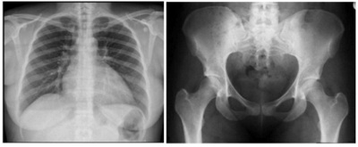
Paciente de 87 anos foi vítima de acidente automobilístico em rodovia de alta energia cinética. É transferido ao centro de trauma mais próximo por equipe de resgate avançado. Durante o transporte apresentou sinais clínicos de choque e recebeu 1000ml de ringer lactato aquecido e 1g de ácido tranexâmico. Foi admitido em prancha rígida, com colar cervical, acesso venoso periférico calibroso, sonda vesical de demora e máscara de oxigênio com uxo de 10l/min. Sinais vitais da admissão: Frequência cardíaca: 60 bpm Pressão arterial: 70 x 30 mmHg Frequência respiratória: 33 ipm Saturação periférica de oxigênio: 98% Temperatura axilar: 35,3°C. Atendimento primário: A – Via aérea pérvia, com colar cervical adequado; B – Expansibilidade torácica simétrica, ausência de hematomas ou crepitações. Som claropulmonar à percussão. Murmúrio presente bilateral sem ruídos adventícios. FR: 33ipm. Saturação de oxigênio: 98% com máscara a 10l/min; C – Hipotenso. Normocardico. Extremidades frias, mal perfundidas, com pulsos liformes. Descorado. Desidratado. Bulhas arrítmicas, normofonéticas, sem sopros audíveis. Ausência de estase jugular. Diurese de 5ml/h até então; D – Pupilas isocóricas, fotorreagentes, sem dé cits focais. Abertura ocular ao chamado, obedece a comandos verbais, ansioso e confuso; E – Hipotérmico, em prancha rígida e com manta térmica. Sem outras lesões ameaçadoras à vida aparente. Sem alergias. Em uso regular de carvedilol, furosemida, espironolactona, ácido 9cetilsalicílico, rosuvastatina e warfarina devido à insu ciência cardíaca e brilação atrial. Última refeição há 2 horas. Houve grande deformidade dos veículos envolvidos com óbito no local. Notado na avaliação secundária grande lesão de couro cabeludo sem sangramento ativo. Dor abdominal importante à palpação difusa, sem sinais de irritação peritoneal. Pelve fechada. Sem lesões aparentes de ossos longos. Solicitadas radiogra as de tórax e pelve (abaixo): Sobre o trauma no paciente geriátrico, assinale a incorreta.

Um grande desa o no manejo do paciente politraumatizado é o manejo de via aérea difícil. Uma das opções para o tratamento de tal situação e garantia da perviedade da via aérea é a cricotireoidostomia cirúrgica. Sobre tal prática, assinale a correta.
Avaliação inicial do paciente em choque A hemorragia é a causa mais comum de choque após trauma. Virtualmente todo doente com traumatismos múltiplos tem um componente de hipovolemia. O objetivo principal é identi car prontamente e interromper rapidamente a hemorragia. São os focos potenciais de perda sanguínea mais comuns a serem investigados:
É uma verdadeira emergência cirúrgica e requer diagnóstico e tratamento imediatos. Ele aparece quando se forma um mecanismo valvular que permite a entrada de ar no espaço pleural, mas não a sua saída. A pressão intrapleural aumenta progressivamente, causando colapso total do pulmão e desvio do mediastino para o lado oposto, e resulta em diminuição do retorno venoso e redução no débito cardíaco. A presença de insu ciência respiratória aguda, de en sema subcutâneo, de ausência de murmúrio vesicular, de timpanismo à percussão e de desvio da traqueia sugere fortemente o diagnóstico e autoriza a descompressão torácica sem esperar a confirmação radiológica.
Armadilhas e considerações especiais relacionadas ao choque Sobre a vítima politraumatizada, assinale a incorreta.
Sobre a coagulopatia no trauma, assinale a incorreta.
Sobre a ruptura traumática do diafragma, assinale a correta.
A figura abaixo ilustra a punção de uma estrutura vascular da região inguinal direita de um paciente identificada pelo número 3. Sobre tal procedimento, assinale a correta.
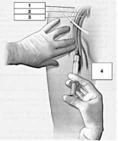
Evidências recentes sugerem que níveis muito altos do D-dímero:
São complicações mais frequentes do pós-operatório de neurocirurgia relatadas na literatura médica todas as abaixo, exceto:
Com relação à ressuscitação com controle de danos (DCR), é correto afirmar que:
Sobre o tratamento da DAOP em pacientes diabéticos, qual destas drogas NÃO faz parte do arsenal terapêutico?
Das alternativas abaixo, qual a principal complicação da cirurgia de cranioestenose?
Sobre as considerações anatômicas para a cirurgia cardíaca, assinale a correta.
Sobre a nutrição no paciente cirúrgico, assinale a opção CORRETA.
Sobre infecção no paciente cirúrgico, assinale a opção CORRETA:
Sobre o manejo da via aérea no paciente traumatizado, assinale a opção CORRETA:
Classif icação de Prof undidade das Queimaduras Sobre as queimaduras, assinale a opção INCORRETA.
Sobre o processo de cicatrização de feridas, assinale a correta.
Sobre os defeitos congênitos da parede abdominal, assinale a correta.
Paciente feminina, 42 anos, apresenta dor aguda em face posterior da coxa direita, súbita, associada a edema local. Nega dispneia, dor torácica ou outros sintomas. Nega trauma. É hipertensa e diabética, e encontra-se no sexto dia pós-operatório de dermolipectomia com abdominoplastia. Ao exame físico: estável, corada, hidratada, eupneica. Sem alterações cardiopulmonares. Abdome inocente. Dor à palpação da face posterior da coxa direita associada a edema local e hipomotilidade da musculatura posterior. Tem pulsos femorais, poplíteos e tibiais presentes. O próximo passo para elucidação diagnóstica é:
O reparo livre de tensão tornou-se o método dominante no tratamento cirúrgico da hérnia inguinal. Com o reconhecimento de que a tensão no reparo é a principal causa de recidiva, as práticas atuais no tratamento da hérnia empregam uma prótese de malha sintética para sobrepor o defeito, um conceito primeiro popularizado por Lichtenstein. Sobre tal procedimento, assinale a correta.
Sobre as hérnias abdominais, assinale a opção INCORRETA:
Sobre as hérnias abdominais, assinale a opção INCORRETA:
Sobre as hérnias inguinais, assinale a correta.
Sobre as possibilidades diagnósticas num paciente com dor abdominal aguda, assinale a resposta INCORRETA.
Sobre as complicações de cirurgias gástricas, assinale a opção INCORRETA.
Sobre as doenças do intestino delgado, assinale a opção INCORRETA.
Sobre as doenças do apêndice, assinale a opção ERRADA.
Sobre a doença diverticular dos cólon, assinale a opção CORRETA.
Sobre a litíase das vias biliares, assinale a opção INCORRETA.
Sobre as doenças urológicas assinale a opção INCORRETA.
O estágio E do choque cardiogênico caracteriza casos extremos, no qual ocorre quadro clínico muito grave e com instabilidade:
Alguns recém-nascidos podem apresentar íleo meconial. Considerando esse diagnóstico, assinale a alternativa que não apresenta uma complicação do mesmo:
Dos testes de imagem, o que apresenta maior acurácia em uma diverticulite aguda não complicada é:
Paciente feminina de 62 anos queixando-se de dor abdominal difusa há 4 dias, em cólicas, associada a distensão abdominal e vômitos fétidos e escuros. Relata que há 4 meses vem apresentando alguns episódios esporádicos de sangramento nas fezes, bem como redução da frequência evacuatória. Nega febre. Nega trauma. Nega cirurgias prévias. Ao exame físico: regular estado geral, descorada, desidratada, anictérica, afebril. Semiologia cardíaca e pulmonar normais. Abdome distendido, com ruídos, doloroso a palpação difusa, sem sinais de irritação peritoneal. Toque retal nota-se lesão ulcerada circunferencial distando 5 centímetros da borda anal. Foras realizadas as radiogra as e a tomogra a de abdome e pelve abaixo: Assinale a alternativa que corresponde ao diagnóstico sindrômico:
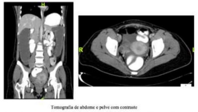

Paciente feminina de 62 anos queixando-se de dor abdominal difusa há 4 dias, em cólicas, associada a distensão abdominal e vômitos fétidos e escuros. Relata que há 4 meses vem apresentando alguns episódios esporádicos de sangramento nas fezes, bem como redução da frequência evacuatória. Nega febre. Nega trauma. Nega cirurgias prévias. Ao exame físico: regular estado geral, descorada, desidratada, anictérica, afebril. Semiologia cardíaca e pulmonar normais. Abdome distendido, com ruídos, doloroso a palpação difusa, sem sinais de irritação peritoneal. Toque retal nota-se lesão ulcerada circunferencial distando 5 centímetros da borda anal. Foras realizadas as radiogra as e a tomogra a de abdome e pelve abaixo: A conduta mais adequada para este caso é:

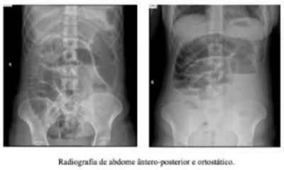
Paciente masculino é transferido de outra cidade para avaliação da equipe de cirurgia do trauma e cirurgia torácica devido à queda de andaime de aproximadamente 15 metros de altura há 2 dias. Foi atendido na cidade de origem e realizada drenagem de tórax bilateral, porém o paciente não apresentou melhora com a terapêutica proposta e os ambos os drenos continuaram com grande débito aéreo no selo d'água. É admitido em sala do trauma com as seguintes condições: A - Via aérea pérvia, sem colar cervical. B - Equimoses torácicas, expansibilidade assimétrica e restrita, dor a palpação difusa com crepitações subcutâneas e murmúrio reduzido bilateralmente. Dreno de tórax a direita oscilando, com débito aéreo, dreno a esquerda não oscilante, sem débito. Saturação periférica de oxigênio: 90% em máscara com uxo de 5 l/min. C - Estável hemodinamicamente. Bem perfundido, sem sinais de choque. D - Glasgow 15, pupilas isocóricas, sem dé cits focais. E - Sem outras lesões ameaçadoras à vida aparentes: É submetido à tomogra a de tórax abaixo. Assinale a alternativa que melhor descreve os achados tomográficos.
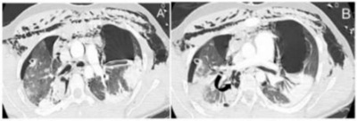
Paciente masculino é transferido de outra cidade para avaliação da equipe de cirurgia do trauma e cirurgia torácica devido à queda de andaime de aproximadamente 15 metros de altura há 2 dias. Foi atendido na cidade de origem e realizada drenagem de tórax bilateral, porém o paciente não apresentou melhora com a terapêutica proposta e os ambos os drenos continuaram com grande débito aéreo no selo d'água. É admitido em sala do trauma com as seguintes condições: A - Via aérea pérvia, sem colar cervical. B - Equimoses torácicas, expansibilidade assimétrica e restrita, dor a palpação difusa com crepitações subcutâneas e murmúrio reduzido bilateralmente. Dreno de tórax a direita oscilando, com débito aéreo, dreno a esquerda não oscilante, sem débito. Saturação periférica de oxigênio: 90% em máscara com uxo de 5 l/min. C - Estável hemodinamicamente. Bem perfundido, sem sinais de choque. D - Glasgow 15, pupilas isocóricas, sem dé cits focais. E - Sem outras lesões ameaçadoras à vida aparentes: É submetido à tomogra a de tórax abaixo. Assinale a alternativa com a provável lesão traumática que justifique tais achados:

Paciente masculino, 30 anos, encaminhado a unidade de pronto atendimento de nível secundário devido a hipótese de abdome agudo obstrutivo por bridas. Queixa-se de dor abdominal súbita há 8 horas, intensa, em facada, em andar superior do abdome, associada a um episódio de vômito, com piora progressiva durante a observação, sem melhora com analgésicos. Nega trauma recente. Tem histórico de laparotomia prévia por ferimento de arma de fogo. Ao exame físico: regular estado geral, desidratado, taquicárdico, afebril. Semiologia cardiopulmonar normal. Abdome distendido, doloroso difusamente, tenso, com defesa involuntária à palpação. São realizadas as radiografias de abdome agudo abaixo: A principal hipótese diagnóstica é:
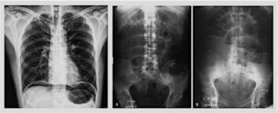
Paciente masculino, 30 anos, encaminhado a unidade de pronto atendimento de nível secundário devido a hipótese de abdome agudo obstrutivo por bridas. Queixa-se de dor abdominal súbita há 8 horas, intensa, em facada, em andar superior do abdome, associada a um episódio de vômito, com piora progressiva durante a observação, sem melhora com analgésicos. Nega trauma recente. Tem histórico de laparotomia prévia por ferimento de arma de fogo. Ao exame físico: regular estado geral, desidratado, taquicárdico, afebril. Semiologia cardiopulmonar normal. Abdome distendido, doloroso difusamente, tenso, com defesa involuntária à palpação. São realizadas as radiografias de abdome agudo abaixo: A melhora conduta para este caso é:

Menino, 11 meses, é encaminhado ao cirurgião pediátrico devido a distopia testicular esquerda. Mãe relata que desde o nascimento nunca apresentou testículo esquerdo tópico em bolsa testicular, porém foi orientada a aguardar até o primeiro ano de vida para resolução do quadro. Nascido a termo, sem intercorrências na gestação ou parto. Ao exame físico: abdome ácido, indolor, sem massas palpáveis. Fimose siológica. Testículo direito tópico em escroto. Bolsa testicular esquerda vazia, hipotró ca. Testículo esquerdo não palpável na região inguinal, raiz da coxa nem na base do pênis. Foi submetido a videolaparoscopia diagnóstica em que não foi encontrado testículo dentro da cavidade abdominal, porém notou-se as estruturas descritas (figura abaixo). A provável hipótese diagnóstica é:
Revisar: possível letra faltando em enunciado
Das condições com possibilidade cirúrgica encontradas no exame físico do lactente menor de 6 meses, algumas podem ter conduta expectante e monitoramento clínico, EXCETO:
Paciente de 3 anos de idade, do sexo masculino, branco, é levado pelos pais para consulta com pediatra. Tem história de que há dois meses tem dor abdominal e sudorese noturna. Ao exame físico está em regular estado geral, tem extremidades mais frias no lado direito do corpo e hipertensão arterial, protrusão de globo ocular direito e equimose periorbitária direita, e extensa tumoração em loja renal direita, de limites imprecisos, atravessando a linha média do abdome. Manifestou choro intenso à palpação de membros inferiores. Pensando que pode ser um tumor abdominal maligno, qual seria sua hipótese diagnóstica mais provável?
Com relação à transfusão de hemocomponentes no politrauma é correto afirmar que:
A conduta mais adequada para um paciente que faz uso de warfarin no pré-operatório é:
Paciente masculino, 25 anos, vítima de acidente motociclístico de alta energia cinética em rodovia. É atendido pela equipe de resgate e transferido ao centro de trauma mais próximo. Admitido em prancha rígida, com colar cervical, manta térmica e máscara de oxigênio 15 l/min. Administrado durante o transporte 500ml de ringer simples aquecido, 1g de ácido tranexâmico, 4mg de mor na e 2g de dipirona devido à dor e sinais de hipovolemia. Sinais vitais na admissão: Frequência cardíaca 130 bpm; Pressão arterial 100 x 60 mmHg; Frequência respiratória 22 ipm; Saturação de oxigênio periférica 85%; Temperatura axilar 35,9 ºC; Atendido conforme o protocolo de trauma. A - Via aérea pérvia, com colar cervical. B - Murmúrio reduzido à esquerda, maciço à percussão, com expansibilidade reduzida. Ausência de en sema subcutâneo ou crepitação palpável. C - Taquicárdico, bulhas rítmicas, normofonéticas, ausência de estase jugular patológica. Tempo de enchimento capilar de 3 segundos. Extremidades frias com pulso liforme. D - Pupilas isocóricas, fotorreagentes, sem dé cits focais. Abertura ocular espontânea, obedece a comandos verbais e está orientado. E - Sem lesões ameaçadoras à vida aparentes. Foi submetido aos exames abaixo. A principal hipótese diagnóstica é:

Paciente masculino, 25 anos, vítima de acidente motociclístico de alta energia cinética em rodovia. É atendido pela equipe de resgate e transferido ao centro de trauma mais próximo. Admitido em prancha rígida, com colar cervical, manta térmica e máscara de oxigênio 15 l/min. Administrado durante o transporte 500ml de ringer simples aquecido, 1g de ácido tranexâmico, 4mg de mor na e 2g de dipirona devido à dor e sinais de hipovolemia. Sinais vitais na admissão: Frequência cardíaca 130 bpm; Pressão arterial 100 x 60 mmHg; Frequência respiratória 22 ipm; Saturação de oxigênio periférica 85%; Temperatura axilar 35,9 ºC; Atendido conforme o protocolo de trauma. A - Via aérea pérvia, com colar cervical. B - Murmúrio reduzido à esquerda, maciço à percussão, com expansibilidade reduzida. Ausência de en sema subcutâneo ou crepitação palpável. C - Taquicárdico, bulhas rítmicas, normofonéticas, ausência de estase jugular patológica. Tempo de enchimento capilar de 3 segundos. Extremidades frias com pulso liforme. D - Pupilas isocóricas, fotorreagentes, sem dé cits focais. Abertura ocular espontânea, obedece a comandos verbais e está orientado. E - Sem lesões ameaçadoras à vida aparentes. Foi submetido aos exames abaixo. A conduta mais adequada no caso acima é:
Nos pacientes com obstrução colônica do tipo “alça fechada” o local com maior risco para perfuração é:
Entre os tumores de partes moles no paciente pediátrico, o tipo de sarcoma mais comum é:
Sobre os tumores renais na faixa etária pediátrica, assinale a alternativa que corresponde à neoplasia considerada benigna, sem necessidade de adjuvância no pós-operatório.
Paciente masculino, 33 anos, em segundo dia pós-operatório de colecistectomia videolaparoscópica convertida para convencional, queixando-se de falta de ar e dor no ombro direito. Nega dor torácica. Nega tosse. Nega parada de evacuação de atos e fezes. No momento em regular estado geral, dispneico, anictérico, febril. Murmúrio reduzido em base direita, com expansibilidade reduzida. Ausculta cardiológica sem alterações. Panturrilhas sem empastamento. Sinais Vitais: PA: 160 x 90 mmHg, FC: 95 bpm, FR: 25 irpm, Sat O2: 90% T: 38,3ºC Foi submetido a radiografia de tórax (abaixo). A principal hipótese diagnóstica é:

Paciente masculino, 33 anos, em segundo dia pós-operatório de colecistectomia videolaparoscópica convertida para convencional, queixando-se de falta de ar e dor no ombro direito. Nega dor torácica. Nega tosse. Nega parada de evacuação de atos e fezes. No momento em regular estado geral, dispneico, anictérico, febril. Murmúrio reduzido em base direita, com expansibilidade reduzida. Ausculta cardiológica sem alterações. Panturrilhas sem empastamento. Sinais Vitais: PA: 160 x 90 mmHg, FC: 95 bpm, FR: 25 irpm, Sat O2: 90% T: 38,3ºC Foi submetido a radiogra a de tórax (abaixo). A conduta mais adequada para este caso é:
Paciente jovem, masculino, é submetido a cirurgia para correção de hérnia inguinal. No intraoperatório notou- se que a hérnia deslizava medialmente à artéria epigástrica inferior associada a fraqueza da parede posterior do abdome. A hérnia deste doente, segundo Nyhus é:
Paciente masculino, jovem, é vítima de acidente automobilístico há 2 horas em rodovia, de alta energia cinética. É transferido ao centro de trauma mais próximo já com via aérea definitiva garantida por tubo orotraqueal devido a rebaixamento do nível de consciência no local. É admitido nas seguintes condições: A: Intubado com saturação periférica de 98%. B: Murmúrio vesicular presente bilateral. C: PA: 140 x 60 mmHg; FC: 75 bpm; FAST positivo no espaço hepatorrenal. D: Escala de Glasgow de 3T (sob sedação). E: Sem outras alterações. Foi submetido à tomogra a de corpo inteiro que evidenciou lesão axonal difusa, optado pela equipe da neurocirúrgica por tratamento conservador e moderada quantidade de líquido livre na cavidade peritoneal com lesão hepática grau III em lobo direito sem extravasamento de contraste na fase arterial. A conduta mais adequada para este caso é:
É admitido no PA um paciente de 80 anos, cuja queixa principal é dor súbita no pé direito há 6 horas. Ao exame inicial, nota-se palidez importante e ausência de pulsos neste pé. Com relação aos pacientes que apresentam quadro de Oclusão Arterial Aguda de membros (OAA), é correto afirmar que:
O mediastino é dividido em mediastino anterior, médio e posterior. Ao mediastino anterior, estão associadas as seguintes patologias:
Sobre as Isquemias Intestinais Agudas, é incorreto afirmar que:
O triângulo de Calot é delimitado por quais estruturas?
Uma mulher de 43 anos, hígida, foi submetida à colecistectomia videolaparoscópica por colecistite crônica calculosa. Durante o procedimento, a artéria cística foi avulsionada da artéria hepática durante a dissecção do triângulo de Calot. A paciente recebeu 1 litro de concentrado de hemácias a m de manter estabilidade hemodinâmica. Recebeu alta hospitalar após 4 dias de internação e boa evolução clínica. Dois meses depois, ela apresentou-se com icterícia, tendo bilirrubinas totais de 8 mg/dl, sendo 5,5 mg/dl às custas de direta, além de elevação da fosfatase alcalina. Qual o mais provável diagnóstico?
Homem, 43 anos de idade, foi submetido a cateterismo uretral com sonda Foley 20 Fr após a indução anestésica para cirurgia eletiva. Ao ser insu ado o balão da sonda, observou-se uretrorragia de moderada intensidade. Qual a conduta inicial mais adequada?
O evento que ocorre, inicialmente, na primeira fase da cicatrização de feridas é:
Paciente de 42 anos, sexo feminino, previamente hígida, deu entrada no pronto atendimento às 20 horas, com história de dor em hipocôndrio direito de forte intensidade, de início pela manhã do mesmo dia, associado à náusea e vômitos biliosos. Nega episódios semelhantes anteriores. Nega comorbidades associadas. Ao exame físico, encontra-se estável hemodinamicamente, anictérica, com dor à palpação abdominal em quadrante superior direito e sinal de Murphy positivo. O restante do exame físico apresenta-se sem alterações. Referente ao provável diagnóstico do caso clínico acima, assinale a alternativa CORRETA:
Homem, 57 anos, vítima de colisão moto x carro em rodovia, trazido pelo SAMU, chega à sala de trauma de um hospital de referência em 25 minutos após o evento, com colar cervical, em prancha longa, ansioso. Durante o atendimento pré-hospitalar e transporte recebeu 2 L de solução cristaloide. Exame físico: saturação de O2 = 98%; frequência respiratória = 20 irpm; frequência cardíaca = 90 bpm; pressão arterial = 110 x 70 mmHg; escala de coma de Glasgow = 14. Foi submetido à tomogra a computadorizada de corpo todo que evidenciou grande quantidade de líquido intraperitonial, lesão hepática grau IV com extravasamento de contraste livre para a cavidade abdominal. Logo após o exame de imagem, apresentou rebaixamento do nível de consciência, frequência cardíaca = 145 bpm e pressão arterial = 60 x 50 mmHg. A melhor conduta é:
Um rapaz, vítima de ferimento por arma branca em tórax esquerdo posterior, chega ao hospital com a equipe de resgate pré-hospitalar. Encontra-se pálido, frio, diaforético. Não há sangramento externo abundante. Ele apresenta jugulares ingurgitadas, murmúrio vesicular abolido à esquerda com hipertimpanismo à percussão, PA 60 x 30 mmHg e FC 140 bpm. Sobre esse caso, assinale qual a hipótese diagnóstica mais provável?
A fissura anal crônica, geralmente, caracteriza-se ao exame físico local pela presença da tríade:
Você está de plantão na Emergência e recebe um paciente vítima de ferimento por arma de fogo (FAF) na coxa esquerda durante uma briga no bar. Relembrando as aulas de cirurgia vascular, você sabe que o Cirurgião Vascular de plantão está autorizado a operar imediatamente o paciente de acordo com a presença dos sinais fortes ou diretos de lesão vascular (Hard Signs), que são:
Homem de 20 anos caiu de uma altura de três metros e sofreu trauma cervical e cefálico. Na sala de trauma, evolui com diminuição da escala de coma de Glasgow de 13 para 8 e, ao exame físico, apresentou grande hematoma, expansivo e pulsátil, em região cervical direita. Nesse caso, a conduta mais correta é:
Menino, oito anos, iniciou quadro de dor escrotal aguda há três horas. Diz que a dor iniciou insidiosamente, piorou com o passar do tempo. O exame físico revelou testículo bem posicionado na bolsa, sinal de Angel negativo e reação de hiperemia com ponto azulado central, localizado, e de aproximadamente 1,0 cm, nega queixas urinárias. Indique a sua principal hipótese diagnóstica e a primeira conduta a ser tomada:
Sobre o tratamento do Tromboembolismo Venoso (TEV) é incorreto afirmar que:
Com relação à hemobilia, assinale a alternativa CORRETA:
Você atende um paciente politraumatizado, queda de motocicleta, trazido pelo SAMU. Paciente se encontra hipotenso, emite sons ao estímulo doloroso, abre olhos ao comando verbal, resposta motora localizando dor. Na sala de emergência a equipe toma as condutas iniciais de tratamento. Baseado nesta abordagem, analise as afirmativas a seguir: I - A ultrassonografia não é importante para este caso na sala de trauma. II - Se no exame do tórax murmúrio vesicular abolido e macicez na percussão, a principal hipótese é de hemotórax. III - Indicado intubação orotraqueal, pois Glasgow é menor que 9. IV - A avaliação se inicia pela inspeção de vias aéreas, de sua perviedade e da capacidade de oxigenação. Estão CORRETAS as afirmativas:
Mulher de 32 anos apresenta queixa de dor abdominal há 2 dias, em hipocôndrio direito, associada à náusea e episódios de febre. Nega episódios prévios semelhantes. No exame clínico apresenta icterícia leve. Nega alterações urinárias. Antecedentes pessoais: hipertensão arterial. Ao exame clínico: bom estado geral, corada, hidratada e ictérica. Abdômen doloroso à palpação de hipocôndrio direito, sinal de Murphy positivo. Exames de laboratório mostram amilase de 160mgr/dl, hemograma normal, bilirrubina total de 3,7, sendo 2,5 de direta e 1,2 de indireta. Assinale a alternativa que apresenta CORRETAMENTE a principal hipótese diagnóstica e o exame de imagem a ser solicitado.
Paciente de 23 anos envolveu-se em uma briga de torcidas e foi agredido por arma branca. Chega ao Pronto-Socorro após 40 minutos do ocorrido, onde você está de plantão, e no exame físico apresenta-se: corado, eupneico, afebril, agitado e boa perfusão capilar. MVF bilateral com lesão corto contusa perfurante no 6° espaço intercostal esquerdo, linha hemiaxilar, BNRNF, FC: 80bpm, pulsos amplos. Abdome livre e plano. Considerando o caso apresentado, é CORRETO afirmar que a conduta seria de:
Analise as assertivas a seguir: I - Hérnia inguinal direta ocorre pela persistência do conduto peritônio-vaginal. PORQUE II - Nessa hérnia o saco herniário encontra-se medial aos vasos epigástricos inferiores. Após análise das assertivas, assinale a alternativa CORRETA:
Paciente do sexo masculino, 25 anos, em acompanhamento de uma leucemia recentemente tratada, relata dor abdominal há cerca de 48 horas, inicialmente difusa que se localizou na Fossa Ilíaca Direita (FID) e posteriormente difusa novamente. Exames laboratoriais da admissão mostram: leucócitos totais: 15.500; Hemoglobina: 13,5gr/dl; urina rotina normal. Ao exame clínico apresenta FC: 98bpm, FR: 17irpm, abdome levemente distendido, com descompressão dolorosa na FID. A radiogra a de tórax em ortostatismo não mostra pneumoperitônio e radiogra a de abdome mostra alça sentinela na FID. Em relação ao caso clínico descrito, é CORRETO afirmar que:
Nos dias atuais, em muitas ocasiões, é utilizado o tromboelastrograma para análise de coagulação, principalmente no trauma. Veja as imagens a seguir, sendo que a primeira figura representa o resultado normal. Assinale a alternativa que representa CORRETAMENTE a trombocitopenia.
Você está examinando um paciente grave no CTI com suspeita de síndrome de compartimento abdominal. Faz a medida de pressão intra-abdominal que está maior que 25mmHg. Diante desse cenário, é CORRETO afirmar que esse paciente apresenta:
Sobre antibióticoprofilaxia nas cirurgias de urgência, correlacione COLUNA I com a COLUNA II. COLUNA I A – Hérnia estrangulada. B – Hérnia encarcerada. C – Perfuração intestinal recente. D – Apendicite aguda necrosada. COLUNA II ( ) 1. Cirurgia limpa. ( ) 2. Cirurgia potencialmente contaminada. ( ) 3. Cirurgia contaminada. ( ) 4. Cirurgia infectada. Assinale a alternativa que apresenta a sequência CORRETA:
Mulher, 42 anos, é submetida à colecistectomia laparoscópica após quadro de colecistite aguda. Assintomática, teve alta no dia seguinte ao procedimento. Retorna no sexto dia pós-operatório, estável, porém com queixas de anorexia, desconforto abdominal, febre baixa e secreção de aspecto bilioso através de uma das cicatrizes dos portais da laparoscopia. Tomogra a computadorizada de abdômen mostra uma coleção no hipocôndrio direito, sugerindo líquido biliar. Dentre as alternativas a seguir, qual é a melhor terapêutica inicial para essa paciente?
Homem, 34 anos, vítima de queda de aproximadamente 4 metros de altura, chega à sala de emergência com PA 90/60 mmHg, FC 120 bpm e Glasgow 15. Refere dor lombar. Ao exame apresenta dor abdominal difusa à palpação. Após reanimação inicial com 500 ml de Ringer Lactato, apresentou PA 110/80 mmHg e FC 90 bpm. Realizado FAST, foi evidenciado líquido livre periesplênico e na pelve. Sem outras alterações na avaliação secundária. Em relação ao caso, qual é a melhor conduta?
Homem, 65 anos, tabagista, com obesidade, internado para investigação de neoplasia, desenvolve rubor e aumento de temperatura em panturrilha direita associados à dor intensa e progressiva que piora quando realiza a dorsiflexão do pé. Em relação ao diagnóstico mais provável, assinale a alternativa correta.
Na realização da raquianestesia, o efeito imediato após a infusão do anestésico local no espaço subaracnóideo é o(a) _______________ da pressão arterial sistêmica e o (a) _______________ da frequência cardíaca. As palavras que preenchem corretamente as lacunas, na ordem que aparecem no texto, são
Recém-nascido masculino é admitido na unidade de tratamento intensivo, oriundo do centro obstétrico, por apresentar quadro de salivação aerada em grande quantidade, impossibilidade de progressão da sonda orogástrica até o estômago e piora gradual da condição respiratória (episódios de cianose). Nos radiogramas das regiões cervical, torácica e abdominal, foi evidenciada a presença de um coto esofágico proximal dilatado, terminando em fundo cego na altura do corpo da segunda (2ª) vértebra torácica com a ponta da sonda de drenagem posicionada no fundo desse coto, e a presença de ar em topogra a do estômago e intestinos. Considerando a principal hipótese diagnóstica, a taxa de mortalidade está diretamente relacionada a anomalias associadas, particularmente a defeitos _______________ e anormalidades _______________.
Homem, 66 anos, realizou retossigmoidectomia eletiva por adenocarcinoma em transição retosigmoide. No 4º dia pós-operatório, apresentou desconforto abdominal e sinais ogísticos na porção inferior da incisão. No 5º dia, foi realizada drenagem local com saída de material fecaloide. Permanecia em bom estado geral, episódio febril isolado de 38,2ºC, sem evidências de irritação peritoneal, presença de ruídos hidroaéreos e drenagem de 220 ml de líquido colônico na bolsa de drenagem recém instalada. Dentre as alternativas abaixo, qual é a melhor conduta a ser tomada neste momento?
Mulher, 30 anos, sofreu acidente automobilístico (colisão entre dois carros), sendo diagnosticada fratura da pelve com instabilidade vertical. Este achado está relacionado à ruptura dos ligamentos
Homem, 25 anos de idade, 65 kg, índice de massa corporal (IMC) 23 kg/m², estado físico ASA II, hipertenso, em uso de losartana. Será submetido a uma correção de fratura de rádio direito sobre bloqueio axilar guiado por ultrassonogra a. Nega alergia, história de apendicectomia prévia com raquianestesia e varizes com anestesia peridural. Chegou à sala operatória em jejum de 8 horas e foi sedado com e 2 mg de midazolam e monitorado com eletrocardiograma, pressão arterial não invasiva e oximetria de pulso. O anestesista responsável realizou bloqueio axilar com auxílio de ultrassonogra a com 25 mL de ropivacaína a 1%. O bloqueio foi de difícil execução, e o anestesista relata não ter visto a imagem da ponta da agulha nem a dispersão do anestésico local ao ultrassom. Segundos após o paciente apresentou confusão mental e bradicardia seguida de assistolia. De acordo com o relato, a hipótese de diagnóstico é:
Sinal médico que define a presença de icterícia e de uma vesícula biliar distendida sem a presença de dor, denomina-se sinal de:
Paciente, sexo masculino, 19 anos de idade, deu entrada no Hospital com ferimento por arma de fogo em região torácica anterior no hemitórax esquerdo há 1 hora. O paciente se queixa de dor no local do ferimento, cansaço e dor abdominal em andar superior do abdome. Ao exame físico o paciente está consciente, orientado, com murmúrio vesicular diminuído em hemitórax esquerdo e com hipertimpanismo à percussão. A saturação de oxigênio é de 85%, a pressão arterial é de 127 x 60 mmHg mmHg, pulso de 100 bpm e frequência respiratória de 28 ipm. Na exposição, observa-se lesão perfurante de 1 cm de extensão, no oitavo espaço intercostal em linha axillar anterior do hemitórax esquerdo. O FAST evidencia-se apenas 50 mL de líquido peri-esplênico, sem evidência ultrassonográ ca de contusão no fígado ou no braço. Após administrar oxigênio e hidratar o paciente com 1000 mL de solução fisiológica 0,9%, qual é a conduta para este caso?
Revisar: possível letra faltando em enunciado
A condição clínica, conhecida por “Abdome agudo”, pode se apresentar de diversas maneiras dependendo de sua etiologia. A abordagem inicial adequada é imprescindível para o melhore desfecho. Portanto, analise as alternativas abaixo e marque a que contenha afirmativas verdadeiras sobre o tema em questão:
Criança de 10 anos, masculino, subfebril, anorético há 24h com dor epigástrica inicialmente que migrou para FID onde persiste mantendo dor no local. No exame laboratorial (Hmg) identi ca-se leucocitose discreta com desvio à esquerda, assim como, descompressão brusca positiva em FID. Levando em consideração os critérios clínicos de ALVARADO para diagnóstico de apendicite aguda, qual alternativa estaria mais adequada ao interpretarmos os dados clínicos acima?
Revisar: possível letra faltando em enunciado
Na condução da doença diverticular aguda pela classificação de Hinchey, qual a alternativa que melhor identifica o tratamento mais correto:
Paciente de 45 anos, submetida à colecistectomia VLP há 8 meses, procura atendimento médico por dor abdominal em andar superior do abdome com início há 1 semana, náuseas e vômitos pós-prandiais, astenia e picos febris intermitentes presentes. Ao exame físico, prostrada, icterícia cutaneomucosa ++/++++, subfebril, levemente taquicárdica e taquipneica, com abdome plano, porém doloroso em HD e epigástrio. Em posse dessas informações clínicas, em qual alternativa podemos encontrar a melhor interpretação clínica e sequência para investigação diagnóstica?
O tratamento definitivo de todas as hérnias independente de origem ou tipo, é o reparo cirúrgico. Em torno de 20 milhões de hérnias inguinais ou femorais são tratadas cirurgicamente por ano em todo o mundo. Em se tratando das técnicas de reparo, em qual alternativas identificamos a descrição correta?
Paciente do sexo feminino, 65 anos de idade, procurou atendimento em unidade de saúde com queixa de dor intensa, parestesia e frialdade em pé direito. Relatou diagnóstico prévio de brilação atrial e suspensão da medicação prescrita pelo médico cardiologista há 7 dias. Ao exame físico observou-se a presença de palidez apenas em pé direito, além de pulsos pedioso e tibial posterior ausentes em membro inferior direito. Os demais pulsos periféricos dos membros inferiores apresentavam-se amplos e simétricos. Considerando o quadro clínico descrito, qual é o diagnóstico e o tratamento inicial, respectivamente, a para esta paciente?
Paciente do sexo feminino, 40 anos de idade, encontra-se em tratamento médico para insu ciência venosa crônica e apresenta quadro de lipodermatoesclerose em pernas, atribuída à doença venosa. Ao exame físico não apresenta ulcerações ou lesões cicatriciais em membros inferiores. Realizou ecodoppler venoso que demonstrou sinais de re uxo em veias safenas magnas. De acordo com o sistema de classificação CEAP elaborado pelo American Venous Forum, como se classifica a apresentação clínica desta paciente?
Paciente do sexo masculino, 70 anos de idade, encontra-se em tratamento médico para doença arterial obstrutiva periférica há seis meses, apresenta quadro de dor em dorso do pé esquerdo, de forma contínua e em repouso, que desencadeia seu despertar noturno. Ao exame físico não apresenta ulcerações ou sinais de outras lesões teciduais em membros inferiores. Realizou ecodoppler arterial que demonstrou sinais de oclusão da artéria poplítea esquerda. De acordo com a classificação clínica FONTAINE de doença arterial periférica, como se classifica o quadro clínico deste paciente?
A angiogênese representa importante papel na cicatrização de feridas. Em seu processo há:
A úlcera por pressão que mais acomete o paciente paraplégico (cadeirante) é a
Thomson, em 1975, descreveu as hemorroidas como sendo coxins vasculares compostos por arteríolas, sinusoides e vênulas sustentados por tecido bromuscular. Em torno de 5% da população geral apresenta sintomas relacionados à doença hemorroidária, sendo que na maioria das vezes, o tratamento conservador com medidas locais e dietéticas é preferível. Contudo as indicações de tratamento cirúrgico na doença hemorroidária encontram-se mais adequadamente representada na alternativa:
Paciente jovem com quadro de icterícia obstrutiva, realizou colangiorressonância que evidenciou presença de coledocolitíase e colelitíase, a melhor conduta terapêutica será:
Um paciente masculino de 24 anos de idade foi levado à sala de trauma após um acidente motociclístico. No exame físico de entrada apresenta fratura exposta de tíbia esquerda, escoriação no anco direito, dor e distensão abdominal. De acordo com o suporte avançado de vida em trauma, a prioridade no atendimento neste paciente é:
Um paciente de 80 kg de peso apresenta queimadura de segundo e terceiro graus em 40% da sua superfície corporal, ocorrida há aproximadamente 30 minutos. Levando em consideração a fórmula de Parkland, qual volume de Ringer Lactato deve ser infundido nas primeiras 8 horas para hidratação intravenosa?
O tratamento cirúrgico da obesidade mórbida é realizado através de diferentes técnicas operatórias. Das técnicas descritas abaixo, aquela que é estritamente restritiva é:
Os seguintes sintomas adicionados à tríade de Charcot caracterizam a pêntade de Reynolds:
Paciente com 45 anos de idade, anictérica, hidratada, hipertensa leve, dá entrada na sala de emergência com dor no hipocôndrio direito há 2 horas após jantar em uma churrascaria. Realizada ultrassonogra a e exames laboratoriais chegando ao diagnóstico de colecistite aguda. O melhor tratamento a ser instituído é:
Durante o tratamento cirúrgico de uma hérnia em topogra a inguinal encarcerada à direita em uma mulher, após a inguinotomia, o cirurgião observa que o conteúdo herniário passa por baixo do ligamento inguinal. Levando-se em consideração o tipo de hérnia encontrada, onde deve ser realizado o principal ponto de xação durante o reparo, considerando a técnica cirúrgica mais amplamente aceita, para que seja o mais efetivo e reduza o risco de recorrência?
Paciente de 57 anos admitido em Pronto Socorro com quadro de dor abdominal de forte intensidade. Realizada rotina de abdome agudo com evidência de pneumoperitônio. Ao toque retal, diagnosticada lesão de reto a 5 cm de margem anal, estenosante. Submetido a laparotomia de urgência, com identi cação de válvula ileocecal competente e perfuração de ceco. Diante dos achados pré e intra-operatórios, qual a melhor conduta a ser tomada durante a cirurgia de urgência?
Uma boa técnica de sutura começa com a incisão com o bisturi em ângulo correto em relação à pele e continua com a manipulação tecidual cuidadosa, a m de evitar a desvitalização das margens cutâneas, desbridamento das bordas da pele. A incisão segundo as linhas de Langer, com o objetivo de se obter uma cicatriz mais estética, deve ser realizada:
Um homem de 50 anos está no 5º pós-operatório de ulcerorra a gástrica, com patch de omento. Refere dor abdominal de forte intensidade e mal-estar geral. Pulso: 120 bpm, PA: 90 × 50 mmHg, temperatura: 37,2 °C. Ao exame, o abdome apresenta distensão, doloroso a palpação profunda difusamente. Dreno abdominal com saída de 900 mL de líquido bilioso nas últimas 24 horas. Conduta mais adequada no momento:
Homem, 65 anos, foi submetido a duodenopancreatectomia, sem complicações. Encontra-se no 2° dia de pós-operatório, em boa evolução. Apresenta-se estável clinicamente. PA=130×70 mmHg; FC=110 bpm; T= 37,2°C. Nesta fase da resposta metabólica ao trauma, é correto encontrar:
Um homem de 30 anos, vítima de acidente automobilístico, foi levado ao pronto-socorro, estando torporoso, com palidez cutânea, com sudorese, e PA 80x60 mmHg. A avaliação radiológica inicial evidenciou fratura do anel pélvico, com alargamento da sín se pubiana maior que 3 cm. Foi realizado FAST com evidencia de líquido livre abdominal. Nesse caso clínico, entre as opções a seguir, a melhor conduta é:
Uma mulher de 47 anos, procura o pronto socorro com queixa de dor intensa em hipocôndrio direito há 72 horas, náuseas, vômitos e sensação de febre. Ao exame físico, apresenta dor a palpação em hipocôndrio direito, com interrupção da inspiração. FC: 80 bpm e PA: 120x80 mmHg. O ultrassom de abdômen evidencia espessamento da parede da vesícula biliar, com líquido perivesicular. Possui amilase de 110 U/L e leucócitos de 19.000/mm3. Segundo o guideline de Tókio de 2018, podemos a rmar que se trata de uma colecistite aguda:
Homem, 18 anos, 70kg, é levado ao Pronto Socorro por sofrer queimaduras por fogo. Ao exame físico apresentando lesões térmicas totalizado 18% de queimaduras de primeiro grau e 36% de queimaduras de segundo grau de superfície corporal queimada. Considerando ATLS 10ª ed. o volume correto para reposição é:
Um homem de 25 anos, vítima de colisão automobilística deu entrada na emergência, com frequência respiratória de 32 irpm, glasgow 8 e com grande quantidade de sangue na cavidade oral, na face e no nariz, além da presença de múltiplos dentes fraturados. À inspeção, sinal do Guaxinim bilateral, sinal de Battle e otorragia à direita. À palpação, apresentou crepitação em região mandibular. Nesse caso clínico, além de estabilizar a coluna cervical do paciente, deve-se, nesse momento:
De acordo com a Escala de Lesão Esplênica da American Association for the Surgery of Trauma, considera- se o trauma esplênico com hematoma e laceração subcapsular acometendo 10-50% da área de superfície do baço como grau:
Quais são as 3 fases de cicatrização de feridas?
Atualmente, qual é o exame considerado padrão ouro para o diagnóstico de atresia biliar?
Diante de pacientes com um hemitórax opaco, algumas possibilidades diagnósticas devem ser consideradas. Nesse sentido, caso o mediastino apresente um desvio ipsilateral, a principal hipótese diagnóstica é:
Durante a colecistectomia videolaparoscópica, a lesão do ducto biliar mais frequente é:
Assinale a opção que apresenta o fator de risco associado à complicação pulmonar no pós-operatório.
Qual é a apresentação clínica clássica da colecistite Aguda?
Qual dos agentes inalatórios utilizados durante o procedimento anestésico é considerado de potência fraca?
Assinale a opção que apresenta um fator associado à deiscência de ferida operatória.
Com relação à cirurgia bariátrica, qual dos procedimentos abaixo tem caráter de má absorção intensa?
Ao confeccionar um estoma, devemos:
Paciente de 22 anos do sexo masculino sofreu acidente de moto e chega ao pronto socorro trazido pelo Samu. Na sua chegada, apresentava rebaixamento do nível de consciência (Escala de Coma de Glasgow = 06). Observava-se que a via aérea estava pérvia, mas apresentava taquicardia (frequência cardíaca de 150 bpm) e hipotensão arterial (PA = 80/40 mmHg). Na ausculta pulmonar, o murmúrio vesicular estava abolido à direita associado a hipertimpanismo do mesmo lado. O abdome estava ácido e plano. Não apresentava sinais clínicos de fraturas de bacia e nem de membros superiores e inferiores. Seguindo o protocolo do ATLS, a primeira conduta nesse caso é:
Paciente de 33 anos do sexo feminino sofreu acidente de trânsito (colisão moto-caminhão) e chega ao pronto socorro trazida pelo Samu. Na sua chegada, apresentava-se lúcida e orientada (Escala de Coma de Glasgow = 15). Também se observou que a via aérea estava pérvia, mas apresentava taquicardia (frequência cardíaca de 155 bpm) e hipotensão arterial (PA = 84/45 mmHg). Na ausculta pulmonar, o murmúrio vesicular era normal e simétrico bilateralmente. O abdome estava ácido, plano e sem dor à palpação. Foram observados sinais clínicos de fratura de bacia. Os membros superiores e inferiores não tinham sinais clínicos de fratura. Seguindo o protocolo do ATLS, a primeira conduta nesse caso é:
Paciente de 65 anos com quadro de icterícia progressiva há 30 dias associado à perda ponderal de 7 kg no período. Ao exame físico ictérico +++/4, sinal de Courvoisier-Terrier presente. Não apresenta a Tríade de Charcot muito menos a Pentade de Reynold. Qual a hipótese diagnóstica e o exame mais adequado para confirmar a suspeita?
Médico atende no ambulatório uma mulher de 41 anos, com sobrepeso e dislipidemia, com quadro clínico compatível com episódios de cólica biliar nos últimos 3 meses. Ele pensa em colecistopatia calculosa como principal hipótese diagnóstica. No último episódio, há 2 semanas, realizou tomogra a computadorizada de abdome sem contraste, mostrando vesícula biliar e vias biliares dentro da normalidade. Para prosseguir na investigação desse caso, qual exame deve ser solicitado?
Homem de 61 anos apresenta quadro de dor em quadrante inferior esquerdo do abdome há 4 dias, associado à febre (Temperatura axilar 38,1ºC) e episódios de diarreia, sem muco ou sangue. Refere também indisposição e hiporexia nesse período. Ao exame físico abdominal, encontra-se dor à palpação super cial e profunda, massa palpável em fossa ilíaca esquerda. O hemograma apresenta leucocitose e o exame de urina não evidencia alterações significativas. Diante do quadro, qual exame deve ser solicitado neste momento para confirmação diagnóstica?
Paciente jovem, masculino, com história sugestiva de apendicite aguda, apresenta ao exame físico abdominal dor à palpação em fossa ilíaca direita, associada à descompressão brusca dolorosa, além de dor em quadrante inferior direito quando se palpa o quadrante inferior esquerdo. Estão presentes, respectivamente, os sinais de
Homem de 68 anos deu entrada no setor de urgência com quadro de distensão abdominal, vômitos e parada de eliminação de atos há 2 dias. Ao exame físico, foi evidenciada distensão abdominal, com hipertimpanismo e sinais de irritação peritoneal à palpação. Em região inguinal direita, há massa palpável, não redutível. Realizou tomogra a de abdome que demonstrou ar livre em cavidade abdominal e sinais de hérnia inguinal direita, em região medial aos vasos epigástricos inferiores. A hérnia desse paciente pode ser caracterizada como
Existem alguns sistemas de classificação de hérnias inguinais. Um sistema simples e amplamente usado é a classificação de Nyhus. Um paciente que apresenta anel inguinal interno dilatado, com destruição da fáscia transversal do triângulo de Hesselbach, tem o diagnóstico de hérnia, classificada como Nyhus
Paciente de 64 anos dá entrada na sala de emergência com quadro de distensão abdominal importante com parada de eliminação de fezes e atos há 4 dias. Refere que foi diagnosticado recentemente com câncer de reto baixo e vai iniciar quimioterapia e radioterapia neoadjuvantes. Supondo que o paciente tenha a válvula ileocecal competente, qual é o segmento do intestino grosso com maior risco de perfuração?
Hérnias são protusões de vísceras abdominais através de um orifício herniário e constituem a patologia cirúrgica mais comum na faixa etária pediátrica. Sobre as hérnias na infância, é correto afirmar:
A dipirona monoidratada é um analgésico não narcótico que também apresenta efeito antitérmico e atividade espasmolítica, com uso seguro na faixa etária pediátrica para pacientes acima de 3 meses ou com peso acima de 5Kg. Dentre as apresentações dessa formulação, pode-se encontrar o frasco/ampola (F/a) 500mg/ml (frasco contendo 2ml), utilizado para aplicações endovenosas (EV) ou intramusculares (IM). Considerando uma criança de 4 anos com peso= 25Kg e necessidade de infusão endovenosa (EV) na dose de 10mg/Kg, qual é a quantidade (em mililitros) de medicação a ser aplicada?
Vítima de atropelamento com fratura de pelve em livro aberto chega ao pronto socorro com lençol amarrado em torno da pelve. Após reposição volêmica inicial, permanece com taquicardia e hipotensão arterial. FAST realizado na sala de emergência foi positivo. Das alternativas abaixo, qual a próxima conduta a ser tomada mais adequada para o caso?
Considerando paciente com suspeita clínica de diverticulite aguda, dos exames abaixo, qual é o melhor método de imagem para avaliação diagnóstica da diverticulite aguda?
Você está de plantão no Pronto Socorro e recebe paciente apresentando ferimento por arma branca em mesogástrio com quadro de dor abdominal. Ao exame, encontra-se consciente, com frequência respiratória de 18 mpm, pressão arterial de 120/80 mmHg e frequência cardíaca de84 bpm, com pulsos periféricos cheios. O exame abdominal mostra um ferimento de 2 cm lateral à cicatriz umbilical. A palpação revela sinais de irritação peritoneal. Com base nesses dados, qual a próxima conduta a ser indicada?
Paciente de 54 anos procura atendimento por quadro de dor abdominal em fossa ilíaca esquerda. Ao exame físico, encontra-se estável, com dor a palpação da porção inferior esquerda do abdome. A tomogra a de abdome revela espessamento parietal do sigmoide, com presença de divertículos e densi cação da gordura local. Assinale a alternativa CORRETA sobre o caso.
Paciente de 64 anos é admitido em serviço de urgência com quadro de dor abdominal. Refere que essa dor já dura meses, sempre após se alimentar, localizada na região do hipocôndrio direito e epigástrio. No entanto, hoje ela iniciou e já dura 18 horas, sem alívio com medicamentos analgésicos que fez uso em casa. Ao exame físico, o paciente apresenta-se com fascies de dor, sem icterícia, febril e com sinal de Murphy presente. Qual o diagnóstico do paciente?
Paciente de 64 anos é admitido em serviço de urgência com quadro de dor abdominal. Refere que essa dor já dura meses, sempre após se alimentar, localizada na região do hipocôndrio direito e epigástrio. No entanto, hoje ela iniciou e já dura 18 horas, sem alívio com medicamentos analgésicos que fez uso em casa. Ao exame físico, o paciente apresenta-se com fascies de dor, sem icterícia, febril e com sinal de Murphy presente. Caso fosse necessário, qual seria o exame complementar mais adequado para confirmação da suspeita diagnóstica?
Paciente de 64 anos é admitido em serviço de urgência com quadro de dor abdominal. Refere que essa dor já dura meses, sempre após se alimentar, localizada na região do hipocôndrio direito e epigástrio. No entanto, hoje ela iniciou e já dura 18 horas, sem alívio com medicamentos analgésicos que fez uso em casa. Ao exame físico, o paciente apresenta-se com fascies de dor, sem icterícia, febril e com sinal de Murphy presente. Qual das alternativas melhor descreve o sinal de Murphy apresentado pelo paciente?
Você atende um paciente com queixa de dor abdominal. A dor teve início súbito há 3 horas. Você examina o paciente e percebe sinais de irritação peritoneal. Nos exames de imagem, você observa a alteração abaixo: Qual a etiologia do quadro do paciente?
Paciente de 72 anos, tabagista, portador de doença arterial coronariana e insu ciência cardíaca. Sofreu um infarto agudo do miocárdio há 3 anos. No momento está em uso de: AAS 100mg ao dia, Atorvastatina 80mg ao dia, Enalapril 20mg a cada 12 horas e Carvedilol 25mg a cada 12 horas. O Paciente apresenta-se limitado funcionalmente devido à osteoatrose de quadril e deseja ser submetido a artroplastia. Qual das orientações abaixo é a mais adequada para o paciente?
Paciente de 83 anos, com boa funcionalidade prévia ao internamento e histórico de hipertensão, com uso prévio de losartana e hidroclorotiazida. Admitida no Pronto Socorro do Hospital Cajuru por queda de mesmo nível após síncope, cursando com fratura de fêmur. Ao exame inicial, encontrava-se hemodinamicamente estável, porém com dor intensa. Saturação periférica de oxigênio de 94% em ar ambiente, pressão arterial de 110x70 mmHg e frequência cardíaca de 94bpm. Exames laboratoriais pré-operatórios mostraram: creatinina de 0,8mg por dL; eritrograma normal; leucograma normal; plaquetas normais; potássio de 6,2 mEq por litro; sódio de 135mEq por litro; glicemia com jejum de 98mg por dL. Sobre o manejo da paciente, assinale a afirmativa CORRETA.
Homem de 23 anos apresenta fratura pélvica em “livro aberto”. Qual é a conduta inicial?
Paciente é trazido ao Pronto-Socorro após traumatismo crânio-encefálico. Emite sons incompreensíveis, não tem abertura ocular e reage à dor em decorticação. Qual é a pontuação na escala de coma Glasgow?
Mulher, 74 anos, apresenta hérnia crural l esquerda redutível há cerca de um ano. Deseja ser operada para correção do defeito herniário. Ao realizar sua história clínica e exame físico, qual desses dados pode impedir o agendamento de procedimento eletivo?
Mulher, 74 anos, apresenta hérnia crural l esquerda redutível há cerca de um ano. Deseja ser operada para correção do defeito herniário. Qual a afirmação correta relacionada ao quadro clínico?
Homem, 50 anos, com diagnóstico prévio de celulite em membro inferior direito há 1 semana, em tratamento com cefalexina e AINEs para analgesia. Procura Pronto-Socorro com dor abdominal intensa em região superior do abdome de forte intensidade de início há 48 horas associado a distensão abdominal, anorexia e náuseas. Nega febre, nega vômitos, nega alterações em evacuação, nega alterações urinárias. Exame Físico: REG, Descorado 1/4, anictérico, acianótico, MV+, s/RA; Abdome globoso; timpânico; RHA+; distendido, tenso, dor difusa à palpação super cial e profunda, descompressão brusca positiva na região supraumbilical. Sinal de Jobert positivo. Qual o diagnóstico mais provável?
Homem, 49 anos, tabagista 30 maços ano, vem ao pronto atendimento com quadro de claudicação em membros inferiores há cerca de 3 meses, com piora progressiva. Há 15 dias notou também dor em região lombar e nádegas, associado a piora da disfunção erétil. Assinale o diagnóstico mais provável:
Menino de 3 anos é trazido pela mãe com quadro de edema em glande há 6 horas, após tentativa de retração parcial do prepúcio. Há sinais de congestão venosa e a dor é intensa, deixando a criança irritada e pouco colaborativa. Qual é o diagnóstico e a conduta mais adequados?
Recém nascido de 28 semanas, em unidade de terapia neonatal, desenvolve no quinto dia de vida distensão abdominal e queda do estado geral, sendo necessário suporte ventilatório mecânico e passagem de sonda nasogástrica, que apresenta alto débito. Evolui com acidose metabólica e bacteremia. Qual é o achado radiológico que confirma a principal hipótese diagnóstica?
Criança de 4 anos é trazida pelo pai ao pronto atendimento, com queimadura em face anterior de coxa direita causada pelo derramamento de soda cáustica. Está bastante assustada e chorosa, referindo dor local intensa. Qual é a melhor maneira de tratar a ferida neste momento?
Paciente vítima de agressão por faca na região cervical anterior, é trazido deambulando ao pronto-socorro pela família relatando falta de ar e sangramento de moderada monta pela boca. Ao exame, ouve-se estridor laríngeo, mas não emite palavras inteligíveis, FC 120 bpm, PA = 90x60 mmHg, SaO₂ = 91%. Em relação ao atendimento inicial, é correto afirmar que
Def inção de Síndrome Compartimental Abdominal e Hipertensão Intraabdominal Qual o valor da pressão de perfusão abdominal em um paciente obeso no 1º dia pós-operatório de apendicectomia complicada laparotômica, que evolui com choque refratário a drogas vasoativas, PIA = 27 mmHg, PA = 80 x 40 mmHg.
Na técnica de separação anterior dos componentes para tratamento de hérnias ventrais, é correto a rmar que
Em relação à apendicite aguda, a causa mais comumente encontrada nos adultos é
No trauma raquimedular, é correto afirmar em relação à fratura do enforcado que é
Em relação aos fios de síntese cirúrgica, é correto afirmar que
Nas laparotomias exploradoras do abdome, o uso de afastadores auto-estáticos é imprescindível para apre- sentação adequada dos órgãos e tecidos. Um dos mais comumente usado é o
Adolescente masculino, 13 anos, com história de colisão de bicicleta contra poste há 2 horas do atendimento pelo SAMU, dá entrada no pronto socorro entubado sob se- doanalgesia venosa, SaO2 95%, PA = 90 x 60 mmHg em uso de droga vasoativa em BIC. Apresenta-se, ao exame físico, com hematomas em me- sogástrio e face à esquerda. Após estabilização hemodi- nâmica foi encaminhado para o setor de radiologia para realização de tomografias do crânio, tórax e abdome. Qual a lesão abdominal esperada nesse contexto?
Em relação à sutura do tipo Lembert, é correto afirmar que é
Apendicetomia Aberta x Apendicectomia Laparoscópica Nos procedimentos laparoscópicos para remoção do apêndice cecal, as punções dos trocateres mais comu- mente aceitas são:
Motoqueiro vítima de acidente com o de cerol, dá entrada no pronto-socorro trazido por transeuntes. Apresenta lesão cortante na face anterior do pescoço, sinais de hipoxemia e estridor. A patência da via aérea, nesse caso, deverá ser
A técnica de wantz para correção de hérnias abdominais é
Recém-nascido nasceu de parto cesáreo devido a presença de mecônio, com idade gestacional de 38 semanas, Apgar 7 e 9. Apresenta episódios de cianose e apneia que pioram quando a mãe está tentando alimentá-lo. Chama a atenção da mãe que o bebê parece car melhor quando está chorando. Qual seria o próximo passo para a investigação rápida do caso?
Adolescente, 17 anos, sexo masculino, procura o serviço de emergência por apresentar edema escrotal agudo e muito doloroso. Apresenta discreta secreção ureteral pela manhã. Nega febre. Refere atividade sexual desprotegida. Foi solicitada ultrassonogra a com doppler colorido dos testículos, com resultado normal. Entretanto, o exame de urina tipo I revê piúria. Qual é o diagnóstico para o caso?
A mãe nota, durante o banho no seu lho com 1 ano e 6 seis meses, uma massa abdominal, indolor, palpável. Durante a consulta, foi observada a presença de algumas malformações como hipospadia, hemihipertro a do corpo. Foi solicitado um ultrassom que revelou rim em ferradura. Qual o diagnóstico para o caso?
Paciente masculino, 74 anos, diabético, hipertenso e com bypass coronariano prévio, deu entrada no hospital com diagnóstico de pé diabético, sem sinais de sepse, sendo internado para antibioticoterapia endovenosa. No segundo dia de internação, iniciou quadro de dor abdominal difusa, intensa, encontrado gemente no quarto. Ao exame, paciente acordado, comunicativo, gemente, afebril, eupneico, taquicárdico (frequência cardíaca de 101 bpm), ritmo cardíaco irregular, pulso amplo, abdome discretamente distendido, ruídos hidroaéreos diminuídos, timpânico, depressível, levemente doloroso, sem sinais de irritação peritoneal. Apresentou hábito intestinal normal até o início da dor. Diante do quadro, qual dos itens abaixo combina o tipo mais provável de abdome agudo e sua respectiva propedêutica de exame de imagem mais indicada:
Apendicite Aguda Não Complicada Sobre a apendicite aguda é correto afirmar que:
Paciente politraumatizado após acidente motociclístico deu entrada gravíssimo à unidade de emergência, já intubado e apresentando en sema subcutâneo em tórax, desvio traqueal para a esquerda, turgência jugular e murmurio vesicular abolido em hemitórax direito. Frequência cardíaca de 158 bpm, pressão arterial de 88/56 mmHg, saturação periférica de oxigênio de 89%, mesmo com alto uxo de oxigênio. Observe as alternativas relacionadas ao quadro clínico do paciente e assinale a correta:
O SAMU acaba de trazer um paciente vítima de atropelamento por caminhão. Paciente tem 21 anos e apresenta quadro de hipotensão, bradiarritmia e desregulação da temperatura. Diante desse quadro foi considerada a hipótese de choque neurogênico. A propósito do diagnóstico estabelecido, assinale a opção correta:
Medidas Gerais de Prevenção de Inf ecção do Sítio Cirúrgico ISC Em 1846, Ignaz Semmelweis, médico húngaro, reportou a redução no número de mortes maternas por infecção puerperal após a implantação da prática de higienização das mãos em um hospital em Viena. Desde então, esse procedimento tem sido recomendado como medida primária no controle da disseminação de agentes infecciosos. Todo médico deve reconhecer a importância destes cuidados, e, evidentemente, praticá-los em suas atividades. Acerca deste tema, assinale a afirmativa correta:
A ultrassonogra a é um advento tecnológico que está cada vez mais presente na prática clínica. Um dos principais exemplos é a utilização dessa ferramenta na passagem de cateteres venosos. Em um cenário de acesso venoso central com auxílio da ultrassonografia, assinale a alternativa correta:
Paciente de 63 anos, operada há 4 dias para tratamento de hérnia inguinal esquerda, retornou ao pronto socorro referindo dor de média para grande intensidade no membro inferior esquerdo, que iniciou naquela madrugada na virilha e progrediu distalmente se tornando mais acentuada na panturrilha. Notou aumento do volume da extremidade difusamente, incluindo o pé, com discreto aumento da temperatura e a perna e o pé caram mais arroxeados. Ao exame físico não há sinal de Godet positivo. A panturrilha está mais rme que a do lado direito. Tem pulso pedioso 3+/4. Pressão arterial: 145/95 mmHg, frequência cardíaca: 92 bpm, sem dispneia ou tosse. Temperatura axilar: 35.9 graus celsius. De posse desses dados, indique qual medicamento não é apropriado para o tratamento do caso.
Após um incêndio, um paciente de aproximadamente 70 kg sofreu queimadura de primeiro grau em toda região da cabeça, de segundo grau na parte anterior do tronco (abdome e tórax), e de terceiro grau em todo membro inferior esquerdo. Calcule a superfície corpórea queimada (SCQ) e a quantidade de volume de hidratação a ser reposto no período de 16 a 24 horas pós queimadura:
Paciente vítima de mordedura humana com arrancamento de cerca de 40% do lábio inferior dá entrada no pronto socorro com sangramento importante e com a porção arrancada acondicionada um recipiente com gelo. Conduta a ser adotada:
Durante o ato operatório, alguns princípios devem ser observados para o bom processo cirúrgico. Dentre os princípios básicos devemos estar atentos a: Assinale a alternativa correta.
O trauma torácico é responsável por 25% das mortes dos politraumatizados. Embora o tratamento destes doentes seja realizado de maneira relativamente simples, ainda assim a mortalidade continua sendo alta. Em relação ao trauma torácico é correto afirmar:
A doença cirúrgica de maior incidência no abdome é a apendicite aguda, definida por in amação aguda do apêndice vermiforme devido obstrução obstrução da luz apendicular. Em relação à apendicite aguda assinale a alternativa correta:
A videocirurgia é uma realidade para o tratamento de muitas condições que exigem tratamento cirúrgico. No Brasil, praticamente todos os procedimentos cirúrgicos torácicos, abdominais e pélvicos são amplamente realizados por videocirurgia. O princípio minimamente invasivo desenvolveu-se rapidamente a ponto de procedimentos eletivos e de urgência se tornarem factíveis através desse recurso, inclusive evoluindo para a cirurgia robótica e por telemedicina. Dessa forma, em relação à videocirurgia é correto afirmar:
O abdome agudo é quando há uma afecção intra-abdominal aguda que demanda intervenção médica imediata. Sobre o tema, marque a alternativa ERRADA:
As complicações no pós-operatório do trato gastrointestinal são muito frequentes e variadas, podendo envolver tanto o tubo digestivo quanto os órgãos anexos, assim sobre estas marque a alternativa ERRADA:
Medidas Gerais de Prevenção de Inf ecção do Sítio Cirúrgico ISC As principais medidas de prevenção para infecção de ferida operatória incluem, EXCETO:
Os processos de cicatrização das feridas são muito importantes na boa evolução dos pacientes submetidos a cirurgias e nos portadores de lesões por trauma. A cicatrização das feridas passa por três fases básicas: inflamatória, proliferativa e maturacional. Cada fase envolve processos dinâmicos que terminam na produção do tecido cicatricial. Entre as opções abaixo, uma se enquadra corretamente nestes processos.
Qual dos pacientes é o candidato a uma indicação imediata de tratamento cirúrgico no trauma esplênico?
Paciente do sexo feminino, 36 anos de idade, com abdome agudo obstrutivo, realizou uma tomogra a de abdome de urgência que mostrou uma hérnia de Spiegel encarcerada, com conteúdo intestinal. Com relação ao quadro clínico descrito acima, assinale a alternativa CORRETA sobre esse tipo de hérnia.
Paciente do sexo masculino, 55 anos de idade, realizou uma colonoscopia que mostrou uma tumoração subestenosante no reto médio. A biópsia confirmou a presença de adenocarcinoma. O cirurgião assistente solicitou exames de estadiamento pré-operatório. Com relação ao quadro clínico descrito acima, assinale a alternativa CORRETA.
Paciente do sexo masculino, 78 anos de idade, obeso, em pós-operatório tardio de gastrectomia parcial por doença benigna, evoluiu com quadros recorrentes de dor abdominal intensa que melhoravam após vomitar abundantemente uma quantidade de líquido bilioso. Foi realizada uma endoscopia digestiva alta que não mostrou anormalidades na mucosa gástrica nem na anastomose gastrojejunal tipo Billroth II Com relação ao quadro clínico descrito acima e o tratamento da complicação tardia, assinale a alternativa CORRETA.
O projeto ACERTO é um protocolo multimodal de cuidados perioperatórios. Implementado em 2005, o projeto tem disseminado a ideia de cuidados perioperatórios baseados em evidência e com atuação interpro ssional. Qual das seguintes alternativas constitui um dos elementos principais contemplados no projeto ACERTO, em relação ao período perioperatório?
Paciente de 77 anos de idade, com emagrecimento de 4 kg, apresentou icterícia progressiva, com prurido intenso, acolia fecal e sem manifestação de dor. Com relação ao quadro clínico descrito acima, assinale a alternativa CORRETA que apresenta o primeiro exame a ser solicitado para estabelecer o diagnóstico.
Paciente do sexo masculino, 68 anos de idade, tabagista por mais de 50 anos, apresentou rouquidão nos últimos três meses. Com relação ao quadro clínico descrito acima, assinale a alternativa que apresenta a conduta mais adequada para estabelecer o diagnóstico.
Paciente do sexo feminino, 19 anos de idade, deu entrada no serviço de emergência, após um acidente automobilístico, com múltiplas fraturas ósseas, dor abdominal e dor torácica. A paciente está lúcida, mucosas hipocoradas +/4+, PA de 120/70 mmHg e apresentando dispneia intensa associada com cianose de lábios e ungueal. A oximetria digital revelou saturação de O₂ de 70 mmHg. Com relação ao quadro clínico descrito acima, assinale a alternativa que apresenta a conduta CORRETA.
Paciente do sexo feminino, 67 anos de idade, acometida por adenocarcinoma de cólon direito não metastático, foi submetida a colectomia direita, sendo a reconstrução do trânsito intestinal realizada com anastomose primária entre íleo distal e cólon transverso. A cirurgia foi realizada pela manhã, durou 2 horas, a via de acesso foi minimamente invasiva e não houve intercorrências. Com relação ao quadro clínico descrito acima, assinale a alternativa que apresenta quanto à oferta de dieta oral para essa paciente, a conduta mais adequada.
Paciente do sexo masculino, 34 anos de idade, previamente hígido, foi submetido a apendicectomia por incisão especí ca há 8 dias, com achado de apendicite aguda não complicada. Relata que há 2 dias iniciou quadro de hiperemia circunscrita a ferida operatória e tumefação em topogra a de cicatriz cirúrgica. Nega febre ou dor abdominal. Ao exame físico, não apresenta sinais de irritação peritoneal ou taquicardia. Com relação ao quadro clínico descrito acima, considerando o diagnóstico mais provável, assinale a alternativa CORRETA que apresenta a conduta imediata mais adequada.
Revisar: possível letra faltando em enunciado
Os aparelhos que utilizam algum tipo de energia são há muito tempo utilizados em cirurgia. O mais tradicional talvez seja o aparelho que utiliza energia de radiofrequência monopolar, conhecido como bisturi elétrico ou eletrônico. Esse sistema utiliza combinações de voltagem e corrente elétrica para o ajuste dos seus variados modos. Para o modo corte, assinale a alternativa CORRETA que apresenta qual seria o ajuste utilizado.
Paciente do sexo feminino, 54 anos de idade, com dor pélvica aguda iniciada há 48 horas, suprapúbica, insidiosa e depois com localização para a fossa ilíaca esquerda. Temperatura de 38ºC. Refere episódio semelhante há 3 meses. HP: claustrofobia. Exame físico mostra dor à palpação profunda em fossa ilíaca esquerda, com irritação peritoneal localizada e dor ao toque vaginal bimanual. Com relação ao quadro clínico descrito acima, assinale a alternativa que apresenta qual o exame de imagem mais adequado para o diagnóstico dessa paciente.
O reparo de feridas é a tentativa dos tecidos lesados em restaurar a função e a estrutura normal após o trauma. Diversas células participam nas diferentes fases da cicatrização. Dentre os tipos celulares abaixo, quais são as predominantes durante a fase inflamatória da cicatrização?
A perda volêmica após o trauma desencadeia uma série de eventos compensatórios na tentativa de manter a pressão de perfusão dos órgãos vitais. O tratamento adequado destes pacientes deve levar em consideração estes mecanismos compensatórios. Em um paciente com choque hipovolêmico é CORRETO afirmar:
Os anestésicos locais são utilizados em diferentes procedimentos cirúrgicos e dessa forma o cirurgião deve estar familiarizado com sua farmacodinâmica e farmacocinética. Em relação a estes agentes é CORRETO afirmar:
Menino de oito anos de idade é levado pelo pai ao serviço de urgência com ferimento em região submentual, que ocorreu ao tentar sair da piscina, batendo o queixo na borda. O ferimento tem 3cm de comprimento por 0,5cm de largura e 0,5cm de profundidade, bordas irregulares, com trabéculas de tecido atravessando de uma margem à outra da ferida. A pele ao redor tem coloração avermelhado-violácea. Essa ferida é MELHOR classificada como:
Paciente de 57 anos, sexo masculino, admitido no hospital em pré-operatório de câncer gástrico, relatou ao médico ter notado uma redução de 2kg da data da internação até a data da avaliação no leito. Referiu deambulação irregular, por sensação de fraqueza nas pernas e certa di culdade na aceitação da dieta, o que também aconteceu com alguns alimentos no lar, e demandou possíveis ajustes na dieta ofertada. Sabendo-se que a avaliação nutricional do paciente hospitalizado, tal qual o acima relatado, é uma ferramenta essencial para sistematizar e assegurar o cuidado adequado, assinale a alternativa ERRADA:
RGZ, sexo masculino, 50 anos, empresário, sem comorbidades, procura o hospital com queixa de dor abdominal moderada, iniciada há cerca de 40 minutos, localizada em região periumbilical. A dor está limitando as suas atividades cotidianas. Refere ainda inapetência e febre baixa não termometrada. Considerando-se os dados apresentados, é ERRADO afirmar:
ILG, sexo feminino, 66 anos, hipertensa, em uso de hidroclorotiazida e losartana, foi submetida a laparotomia para realização de gastrectomia subtotal oncológica, sob anestesia geral. O procedimento teve duração de 3 horas e 30 minutos e não houve intercorrências. Optou-se por encaminhar a paciente para leito de terapia semi-intensiva para cuidados pósoperatórios. Assinale a alternativa ERRADA:
Paciente idoso, vitima de acidente automobilístico em alta velocidade foi atendido no PS com quadro de hipotensão arterial, confusão mental, paraplegia com nível sensitivo na altura do umbigo. A radiogra a de tórax não apresentava alterações; o FAST foi negativo e a radiogra a de bacia mostrava fratura com cisalhamento vertical. Qual é a causa, MAIS PROVÁVEL, da instabilidade hemodinâmica:
Durante a avaliação primária do paciente politraumatizado, deve ser realizada a avaliação neurológica pela etapa
Mulher de 19 anos, motociclista, sofreu acidente com linha de cerol e deu entrada na emergência apresentando sangramento e escape de ar em grande quantidade pelo ferimento cervical. Sinais vitais: saturação O2: 75%; PA: 88/56 mmHg; FC: 132 bpm; FR: 26 mrpm. Após os cuidados iniciais, deve-se indicar
Muitos pacientes submetidos a procedimentos cirúrgicos abdominais podem desenvolver íleo pós- operatório, que afeta o estômago e o cólon primariamente. Acerca da motilidade gastrointestinal após laparotomias, assinale a alternativa correta.
Menino de 9 anos de idade com dor escrotal esquerda há 2 dias, inicialmente de fraca intensidade, aumentando progressivamente. Nega náuseas ou vômitos. Ao exame físico, apresenta febre (37,8 ºC), dor, hiperemia e edema em bolsa testicular esquerda, aumento de volume testicular com reflexo cremastérico presente. Sinal de Prehn presente. Dentre as alternativas abaixo, qual a hipótese diagnóstica mais provável?
Aneurisma de Aorta Torácica Mulher de 67 anos comparece ao pronto atendimento devido a dor torácica com irradiação para o dorso. Refere quadro semelhante por 3 ocasiões nos últimos 3 meses, sem história de trauma prévio. A dor é de forte intensidade e sem fatores de melhora ou piora. Hipertensa, tabagista 40 maços/ano. Na sua primeira avaliação, solicitou- -se uma radiografia de tórax (imagem demonstrada). Em relação ao quadro clínico e à imagem, pode-se afirmar que
Com relação ao trauma uretral, assinale a alternativa correta.
Com relação ao tratamento cirúrgico das hemorróidas, após a ressecção das mesmas, pode-se empregar a técnica de Ferguson, que consiste em
“Fio sintético, polímero da poliparadioxanona (polidioxanona), é um o que tem a vantagem de ser mono lamentado, e possuir uma absorção lenta com manutenção da resistência tênsil por longo período. Devido a esta característica, é utilizado na sutura de tendões, cápsulas articulares e fechamento da parede abdominal.” Essa descrição corresponde a qual fio cirúrgico?
Homem de 64 anos é atendido na Emergência após acidente automobilístico. De acordo com relato do APH, o paciente era condutor do veículo e o volante encontrava- -se deformado na cena. Apresenta contusões e escoriações na parede torácica e abdominal. Ao exame clínico, encontra-se ansioso e agitado, com PA 115 x 75 mmHg, pulso: 78 bpm, FR: 26 irpm e saturação de oxigênio de 89%. Relata falta de ar e dor à palpação do abdome. O murmúrio vesicular está diminuído na base esquerda. RX tórax demonstrado a seguir. Quais são o diagnóstico e a conduta indicada?
Homem de 17 anos deu entrada na emergência em choque hemorrágico grave devido a ferimento penetrante abdominal, e foi submetido a uma laparotomia exploradora, sendo encontrada volumosa quantidade de sangue intraperitoneal, e submetido a sutura hepática e gástrica. No pós-operatório, o paciente evoluiu com febre, distensão e dor abdominal. Submetido à tomogra a abdominal (demonstrada a seguir). O diagnóstico da lesão (setas) é
Alguns pacientes apresentam evolução de quadro de apendicite aguda para perfuração apendicular com bloqueio local (não difuso); este subgrupo costuma procurar o serviço médico com vários dias de evolução, apresentando plastrão palpável em fossa ilíaca direita e, por vezes, complicações locais com abscesso. Tais pacientes, após confirmação diagnóstica por exame de imagem (tomogra a), podem se bene ciar, atualmente, de qual das condutas seguintes?
É(São) considerado(s) fator(es) predisponente(s) ao câncer da vesícula biliar:
Paciente, sexo masculino, 20 anos de idade, é trazido por populares, após ser vítima de trauma moto x anteparo, em via expressa, há 45 minutos. Dá entrada no Pronto-Socorro com rebaixamento do nível de consciência. Ao exame, A: via aérea pérvia, colocado colar cervical, SatO₂:92%; B: murmúrios vesiculares bem distribuídos com diminuição em base esquerda, FR: 22ipm; C: bulhas rítmicas e normofonéticas, FC:112bpm, PA: 86x54mmHg, pulsos radiais assimétricos, abdome indolor à palpação, pelve estável e toque retal sem alterações; D: escala de coma de Glasgow: 7, pupilas isocóricas e fotorreagentes; E: escoriações e dor à palpação em hemitórax esquerdo. Foi realizado radiografia de tórax na sala de emergência. De acordo com o caso e com o exame da imagem, indique a principal suspeita diagnóstica que justi que o quadro clínico.

Paciente, sexo masculino, 20 anos de idade, é trazido por populares, após ser vítima de trauma moto x anteparo, em via expressa, há 45 minutos. Dá entrada no Pronto-Socorro com rebaixamento do nível de consciência. Ao exame, A: via aérea pérvia, colocado colar cervical, SatO₂:92%; B: murmúrios vesiculares bem distribuídos com diminuição em base esquerda, FR: 22ipm; C: bulhas rítmicas e normofonéticas, FC:112bpm, PA: 86x54mmHg, pulsos radiais assimétricos, abdome indolor à palpação, pelve estável e toque retal sem alterações; D: escala de coma de Glasgow: 7, pupilas isocóricas e fotorreagentes; E: escoriações e dor à palpação em hemitórax esquerdo. Foi realizado radiografia de tórax na sala de emergência. Diante do caso, indique a primeira conduta que deve ser instituída no Pronto-Socorro:
Paciente, sexo masculino, 20 anos de idade, é trazido por populares, após ser vítima de trauma moto x anteparo, em via expressa, há 45 minutos. Dá entrada no Pronto-Socorro com rebaixamento do nível de consciência. Ao exame, A: via aérea pérvia, colocado colar cervical, SatO₂:92%; B: murmúrios vesiculares bem distribuídos com diminuição em base esquerda, FR: 22ipm; C: bulhas rítmicas e normofonéticas, FC:112bpm, PA: 86x54mmHg, pulsos radiais assimétricos, abdome indolor à palpação, pelve estável e toque retal sem alterações; D: escala de coma de Glasgow: 7, pupilas isocóricas e fotorreagentes; E: escoriações e dor à palpação em hemitórax esquerdo. Foi realizado radiografia de tórax na sala de emergência. Indique o exame padrão-ouro para confirmação diagnóstica do trauma apresentado pelo paciente:

Paciente, sexo masculino, 22 anos de idade, trazido por populares à UPA após ser vítima de agressão física, relata que sofreu agressão com um soco na face há cerca de 45 minutos. Refere ferimento em pálpebra superior direita com dor e sangramento. Nega outros sintomas. Ao exame físico, bom estado geral, lúcido e orientado, presença de ferimento corto-contuso na pálpebra superior direita, medindo 2,0cm, com exposição da camada interna, sangramento ativo em pequena quantidade e sem lesão do globo ocular direito. Frente ao quadro descrito, indique a estrutura anatômica lesada, caso o paciente apresente ptose palpebral.
Paciente, sexo masculino, 22 anos de idade, trazido por populares à UPA após ser vítima de agressão física, relata que sofreu agressão com um soco na face há cerca de 45 minutos. Refere ferimento em pálpebra superior direita com dor e sangramento. Nega outros sintomas. Ao exame físico, bom estado geral, lúcido e orientado, presença de ferimento corto-contuso na pálpebra superior direita, medindo 2,0cm, com exposição da camada interna, sangramento ativo em pequena quantidade e sem lesão do globo ocular direito. Caso o paciente apresente perda de substância que impossibilite a síntese primária, identi que a técnica menos adequada
Paciente, sexo masculino, 22 anos de idade, trazido por populares à UPA após ser vítima de agressão física, relata que sofreu agressão com um soco na face há cerca de 45 minutos. Refere ferimento em pálpebra superior direita com dor e sangramento. Nega outros sintomas. Ao exame físico, bom estado geral, lúcido e orientado, presença de ferimento corto-contuso na pálpebra superior direita, medindo 2,0cm, com exposição da camada interna, sangramento ativo em pequena quantidade e sem lesão do globo ocular direito. Caso o paciente apresente perda de substância de forma relevante e seja realizada a síntese primária, indique a complicação mais comumente observada:
Paciente, 20 anos de idade, sexo feminino, sofreu ferimento cortante em mão direita com uma faca, há uma hora. Nega outros traumas. Ao exame físico, bom estado geral, corada, FC: 78bpm, PA: 118x72mmHg, FR: 16imp; apresenta ferimento cortante em palma da mão direita, medindo cerca de 2cm, linear e sem sangramento ativo. Diante desse caso clínico, em relação à fase inflamatória da cicatrização, é correto afirmar:
Paciente, 20 anos de idade, sexo feminino, sofreu ferimento cortante em mão direita com uma faca, há uma hora. Nega outros traumas. Ao exame físico, bom estado geral, corada, FC: 78bpm, PA: 118x72mmHg, FR: 16imp; apresenta ferimento cortante em palma da mão direita, medindo cerca de 2cm, linear e sem sangramento ativo. Sobre a anestesia local para a síntese desse ferimento, é correto o que se afirma em
Paciente, 20 anos de idade, sexo feminino, sofreu ferimento cortante em mão direita com uma faca, há uma hora. Nega outros traumas. Ao exame físico, bom estado geral, corada, FC: 78bpm, PA: 118x72mmHg, FR: 16imp; apresenta ferimento cortante em palma da mão direita, medindo cerca de 2cm, linear e sem sangramento ativo. Sobre a fase proliferativa da cicatrização, pode-se afirmar que
Entre as alternativas a seguir, assinale aquela que apresenta uma alteração para a qual, ao exame proctológico, está indicado o uso de pomada tópica de Diltiazen a 2% na região anal.
Em relação às hérnias inguinocrurais em adultos, julgue os itens a seguir. I. O tratamento cirúrgico é indicado para homens sintomáticos com hérnia inguinocrural. II. O tratamento cirúrgico é indicado para mulheres não gestantes com hérnia inguinocrural, seja ela sintomática ou assintomática. III. O diagnóstico da hérnia inguinocrural deve ser feito pelo exame clínico. IV. O ultrassom deve ser o exame inicial em casos em que a história clínica é condizente com hérnia e o seu exame físico é vago. V. Os diagnósticos diferenciais incluem linfonodomegalia, hérnia incisional, hidrocele e pubeíte. Assinale a alternativa correta.
Uma paciente de 45 anos de idade, assintomática, com índice de massa corpórea (IMC) igual a 34, sem comorbidades, compareceu ao consultório após ter sido diagnosticada, por meio de ultrassom de rotina, com colelitíase, tendo o ultrassom evidenciado a presença de microcálculos (menores que 0,5 cm). Nesse caso clínico hipotético,
Uma mulher de 55 anos de idade foi submetida a reconstrução mamária com músculo reto abdominal (TRAM) bilateral após mastectomia radical. Está em programação de radioterapia pós-operatória. Com base nesse caso clínico, assinale a alternativa correta, quanto à cicatrização de feridas dessa paciente.
Paciente, masculino, de 45 anos de idade, vítima de incêndio de grandes proporções em sua casa, tendo permanecido por mais de duas horas dentro do local, foi resgatado e levado ao pronto-socorro. Apresenta desconforto respiratório e queimaduras profundas, nas áreas indicadas na figura a seguir por meio de um círculo com um “X”. S. M. Carvalho, I. A. Kuhnen e M. J. L. Pereima. Protocolo de padronização do per l infeccioso de crianças internadas na unidade de queimados. In: Revista Brasileira de Queimaduras, 12(2), p. 118-127, 2013 (com adaptações). Assinale a alternativa que apresenta, respectivamente, o percentual de superfície corpórea queimada (SCQ), de acordo com o método de Wallace, e a melhor conduta inicial de tratamento, nesse caso hipotético.
Paciente de 35 anos de idade, masculino, vítima de acidente com colisão de sua moto contra um caminhão, politraumatizado, com suspeita de trauma raquimedular, foi levado ao hospital. Com base nesse caso clínico, assinale a alternativa correta, com relação ao trauma raquimedular.
A tríade de Charcot caracteriza-se por
Quanto à Pêntade de Reinolds, assinale a alternativa correta.
Paciente do sexo feminino, de 35 anos de idade, com queixa de dor abdominal há 5 dias, iniciada em epigastro, agora localizada em fossa ilíaca direita, associada a inapetência e febre não medida, está recebendo atendimento em um hospital. A paciente nega corrimento vaginal. Exames revelaram o seguinte: HB = 12,4; leucograma = 14.900, com desvio à esquerda; urina 1 com leucocitúria; e nitrito negativo. O exame físico revelou dor à palpação de fossa ilíaca direita, com defesa localizada neste quadrante. A respeito desse caso hipotético, assinale a alternativa correta.
A respeito do abdome agudo obstrutivo (AAO), assinale a alternativa
Um paciente, vítima de ferimento penetrante por arma branca em zona II cervical, foi levado ao pronto- socorro por transeuntes. A avaliação primária era a seguinte: vias aéreas pérvias; murmúrio vesicular presente bilateralmente; frequência cardíaca de 95 batimentos por minuto, tempo de enchimento capilar menor que 3 segundos, pulso cheio; pupilas isocóricas e fotorreagentes, escala de coma de Glasgow 15; ferimento em zona II cervical à direita de aproximadamente 2,0 cm, sem sangramento ativo, sem outros ferimentos. Não havia saída de ar do ferimento. Considerando esse caso clínico, assinale a alternativa correta, com relação à melhor conduta referente ao quadro clínico apresentado por esse paciente.
Acerca do tratamento não operatório (TNO) no trauma abdominal fechado, assinale a alternativa correta.
Avaliação Inicial Um paciente, vítima de acidente de moto contra anteparo xo a 60 km/h, com capacete, foi levado pelos bombeiros à sala de trauma, em prancha longa e com colar cervical. Ao exame físico, apresentava frequência cardíaca (FC) de 110 bpm, pressão arterial (PA) de 100 mmHg × 70 mmHg, bacia estável, fratura exposta em coxa direita, com sangramento e pulsos distais de membro inferior direito diminuídos; havia presença de sangue em orofaringe. Chegou com olhos fechados, porém os abre ao ser chamado pelo nome. Localiza dor quando avaliada sua movimentação e expressa palavras desconexas e confusão mental. Tem equimose palpebral bilateral. À ausculta respiratória, os murmúrios vesiculares são presentes; sem ruídos adventícios. Nesse caso hipotético, a sequência mais adequada para identi cação e resolução dos problemas desse paciente, segundo os preceitos da avaliação primaria do ATLS, é
Mulher, 61 anos, tabagista e com Doença Pulmonar Obstrutiva Crônica (DPOC) compensada, em uso regular de agente agonista do receptor s e r á submetida a uma colecistectomia videolaparoscópica eletiva. Pode-se a rmar que o médico responsável pela avaliação pré-operatória deve recomendar:
Homem, 76 anos, é submetido à correção cirúrgica eletiva de aneurisma de aorta abdominal infrarrenal por via aberta. Durante o procedimento, evidencia-se a oclusão da artéria mesentérica inferior. Pode-se a rmar que, nesse momento, a conduta melhor indicada, em relação à artéria mesentérica inferior, é realizar:
Mulher, 60 anos, foi submetida a retossigmoidectomia videolaparoscópica por neoplasia de cólon (T3N1), em 2020. Tomogra a computadorizada (TC) de abdome de controle: lesão hipodensa sugestiva de implante secundário ocupando os segmentos hepáticos II e III. Pode-se a rmar que o procedimento cirúrgico melhor indicado é setorectomia:
Pode-se a rmar que, no exame físico do paciente vítima de traumatismo raquimedular, a avaliação da sensibilidade nos mamilos testa a integridade da raiz nervosa:
Homem, 70 anos, com HAS, refere início de dor abdominal há cerca de 3 dias em quadrante inferior de abdome. Houve náuseas e febre associadas. No momento, relata piora da dor. Exame físico: dor abdominal com descompressão dolorosa em fossa ilíaca esquerda. TC de abdome e pelve: diverticulite aguda III. Pode-se afirmar que a conduta mais adequada é:
Pode-se a rmar que o diurético melhor indicado nos primeiros dias de tratamento de um grande queimado por alta voltagem é:
Mulher, 40 anos, refere dor abdominal recorrente em região de hipocôndrio direito relacionada à ingesta de alimentação gordurosa, todavia nunca foi realizada investigação diagnóstica. Posteriormente, percebeu icterícia estável hemodinamicamente; ictérica (1+/4+). Ultrassonogra a (US) de abdome superior: vesícula biliar com parede de 2mm contendo cálculo de 2cm em seu interior; dilatação de via biliar até nível de ducto cístico, sugestivo de compressão extrínseca. Pode-se a rmar que a hipótese diagnóstica mais provável e a conduta mais adequada são:
Em um homem, 28 anos, assintomático, foi encontrado incidentalmente um cisto esplênico na TC de abdome. Ele foi, então, submetido à esplenectomia cirúrgica, cujo laudo histopatológico revelou: lesão cística uniloculada, medindo 6cm no maior eixo, revestida por epitélio escamoso sem atipias. A hipótese diagnóstica mais provável é:
Homem, 37 anos, sem comorbidades, será submetido à correção videolaparoscópica de hérnia inguinal bilateral com o implante de tela de polipropileno. Pode-se a rmar, em relação à antibioticopro laxia prévia a incisão cirúrgica, que a melhor conduta é:
Pode-se afirmar em relação ao manejo perioperatório de paciente com
Menino, 45 dias, é admitido no Setor de Emergência com vômitos pós-alimentares não “biliosos” há 10 dias, com piora progressiva. Nos últimos 2 dias, vomitou em jato após quase todas as mamadas. Nega diarreia e febre. Está em uso de leite materno e chá de erva doce por orientação da avó. Nascido de parto normal a termo, escala de Apgar 9 no primeiro e quinto minuto, alta com 2 dias de vida. Exame físico: emagrecido; sugando avidamente o seio materno; fontanela deprimida; boa perfusão periférica; FC = 130bpm; FR = 40irpm. Restante do exame físico sem alterações. Pode-se a rmar que a principal hipótese diagnóstica, o distúrbio metabólico esperado e o exame diagnóstico melhor indicado são:
Pode-se a rmar, sobre a hipertensão intra-abdominal (HIA) e a síndrome compartimental abdominal (SCA), que:
Mulher, 72 anos, com HAS e DM tipo II, foi atendida ambulatorialmente com queixa de claudicação de membro inferior esquerdo para cerca de 300 metros. Exame físico: pulsos normais em membro inferior direito; à esquerda, pulsos femoral amplo, poplíteo e distais ausentes. Ecodoppler arterial de membro inferior esquerdo: oclusão de artéria femoral super cial esquerda na origem e reabitação a nível de artéria tibial posterior, com bom deságue distal. Pode-se afirmar que a opção terapêutica mais adequada é:
Pode-se a rmar que o efeito adverso mais comum após a injeção de toxina botulínica, no tratamento da fissura anal crônica, é:
Mulher, 55 anos, refere dor abdominal no hipocôndrio direito, náuseas e vômitos de início há 6 horas. US com cortes transversal e longitudinal, respectivamente, da vesícula biliar a seguir. A hipótese diagnóstica mais provável é:
Pode-se afirmar que a maioria das hidronefroses evidenciada na US gestacional é:
Um paciente será submetido a apendicectomia devido a apendicite aguda não complicada. Quanto ao planejamento do uso de antibióticos para este paciente, assinale a alternativa correta:
Mulher de 42 anos é encaminhada para o hospital com quadro de dor em andar superior do abdome, irradiada para o dorso associada a um episódio de vômito bilioso há 24 horas. Ela refere que está na fila para realização de colecistectomia devido a colelitíase sintomática. Ao exame físico ela se encontra consciente e orient ada, desidratada, e com mucosas ictéricas. Os sinais vitais são: pulso de 110 bpm, frequência respiratória de 22 ipm, pressão arterial de 90 por 40 mmHg, temperatura de 36,2° C e saturação de O₂ de 88. O exame cardiorrespiratório mostra taquicardia e murmúrio vesicular abolido em base pulmonar esquerda. Seu abdome está distendido, com ruídos abdominais diminuídos, timpânico, com dor a palpação, mas sem dor a descompressão brusca e o toque retal não apresenta alterações. O médico plantonista suspeita de pancreatite aguda. Para confirmação diagnóstica o próximo passo é:
Mulher de 37 anos é encaminhada ao setor de pronto atendimento do hospital com queixa de dor em abdome superior em faixa irradiada para o dorso e associada a distensão abdominal e náuseas há 2 dias. No exame físico, ela apresenta-se desidratada, levemente dispneica e ansiosa. O exame cardiopulmonar não apresenta anormalidades e no exame abdominal ela apresenta distensão abdominal, ruídos hidroaéreos presentes e dor a palpação do andar superior, mas sem dor a descompressão brusca. São solicitados exames laboratoriais que mostram hematócrito de 36%; hemoglobina de 11,6 mg/dL; leucócitos de 12.000 mm3; amilase de 1280 U/L; lipase de 530 U/L. Uma ultrassonogra a de abdome é solicitada e revela cálculos no interior da vesícula biliar, mas sem sinais de colicistite aguda. Assinale a alternativa que contém as prioridades na condução deste caso.
Um paciente com quadro de obstrução intestinal por intussuscepção é submetido a laparotomia exploradora e após a redução da invaginação é encontrado a afecção mostrada na foto abaixo. Sobre esta afecção podemos afirmar que se trata de:
Para evitar a ocorrência de inguinodinia, durante a realização de uma herniorra a pelo reparo anterior, o cirurgião deve evitar a transecção ou retenção de quais nervos?
Um jovem, vítima de acidente de moto em alta velocidade, foi atendido por uma equipe médica do pré- hospitalar e encaminhada a um Hospital Terciário, referência em Trauma. Na chegada, imobilizado com colar cervical e prancha rígida, apresenta: A - Via aérea com tubo endotraqueal número 8, saturando 94%; B - Murmúrio vesicular presente bilateral, sem ruídos adventícios; C - Pressão Arterial Sistólica de 86 mmHg, Frequência Cardíaca de 138 bpm. Palidez cutâneo-mucosa, FAST positivo em espaço espleno-renal e, quadril estável; D - Glasgow 8, com pupilas anisocóricas, midriática a esquerda. Durante o transporte pré-hospital, foi medicado com um litro de Ringer Lactato em veia periférica e sedação. Neste momento, a melhor conduta seria:
Um senhor de 62 anos, vítima de queda da própria altura apresenta fratura do terceiro e quarto arco costal, com hemo-pneumotórax a direita. Está no quinto dia de internação com drenagem tóracica e mantém a queixa de dor em arcos costais, principalmente durante a inspiração. Nas últimas 24 horas de internação, o débito do dreno foi de 65 ml e não há mais escape de ar no frasco. A conduta mais adequada seria:
Um homem de 32 anos, vítima de queda de andaime há vinte minutos, vem encaminhado ao Hospital de Trauma. Encontra se hemodinamicamente normal, saturando 94% com máscara de oxigênio e Glasgow 15. A pelve é estável, porém, apresenta dor a palpação abdominal difusa, com peritonite difusa. Foi realizado tomogra a computadorizada de corpo inteiro e, o achado foi líquido livre na cavidade abdominal em moderada quantidade e lesão hepática em segmento V, VI e VII, com "blush" (Lesão Grau IV - AAST). A conduta mais adequada neste momento seria:
Uma mulher de 32 anos, vítima de agressão, chega na emergência de um hospital secundário, com queixa de dor torácica a esquerda e em anco esquerdo. Seus sinais vitais são normais. O exame abdominal é doloroso a palpação profunda de hipocôndrio esquerdo, mas não possui sinais de peritonite. A ausculta respiratória é diminuída em base a esquerda e sua saturação de O2 é de 94% com máscara de oxigênio a 2 litros/minuto. A radiografia de tórax mostrou um pneumotórax pequeno a esquerda. O ultrassom abdominal evidenciou liquido livre na cavidade peritoneal e imagem sugestiva de lesão esplênica. Não há tomogra a computadorizada na instituição. O médico assistente resolve não encaminhar ao Centro de Trauma. A melhor conduta neste caso seria:
Um homem de 32 anos chega á sala do trauma após um acidente de moto em alta velocidade. Confuso, com palidez cutâneo mucosa e perfusão periférica lenta, encontra se instável hemodinamicamente. Iniciado reposição volêmica com Ringer Lactato e solicitado transfusão sanguínea de emergência. O FAST ( ultrassom abdominal na sala do trauma) é positivo no espaço hepato-renal e espleno-renal. A radiogra a de tórax na sala do trauma evidencia um alargamento de mediastino e apagamento do botão aórtico. A radiografia de quadril é normal. Neste momento, a melhor decisão do líder da equipe cirúrgica seria:
Um senhor de 45 anos está no primeiro pós-operatório de gastrectomia total por uma lesão neoplásica, sem acometimento de outros órgãos. Durante a visita, encontra se sonolento, pouco atento ao meio externo. A sonda nasogástrica drenou 250 ml e possui apenas um débito de 800 ml na sonda vesical, com diurese concentrada. Com relação às fases do pós-operatório, podemos afirmar que este paciente encontra se em:
Homem, 36 anos, internado em hospital regional para tratamento de pneumonia comunitária grave, no sexto dia de ceftriaxona e azitromicina endovenosos. Apresentou 1 pico febril e queixa de mal-estar. Sinais vitais: pressão arterial de 130x80mmHg, frequência cardíaca de 90bpm, FR: 22ipm. Exame físico pulmonar: Murmúrio vesicular diminuído em base direita, frêmito diminuído e percussão com macicez em base de hemitórax direito. Foi solicitado o seguinte raio-X de tórax: Qual a melhor conduta para esse paciente?
Analise as assertivas a seguir: I - Os polimorfonucleares (PMN) não são essenciais para a cicatrização de uma ferida. PORQUE II - Seu papel na fagocitose na defesa antimicrobiana pode ser assumido pelos macrófagos e em incisões estéreis irão cicatrizar sem a presença de PMN. Sobre as assertivas, assinale a alternativa CORRETA:
Os estados de hipoperfusão pós-operatório podem ocorrer nos pacientes graves. É CORRETO a rmar, no diagnóstico clínico dessa condição, que:
Analise as assertivas a seguir: I - No protocolo multimodal em cirurgia ACERTO recomenda-se realimentação precoce após operações envolvendo ressecções e anastomoses intestinais PORQUE II- Pode trazer potenciais benefícios aos pacientes como alta mais precoce, menor incidência de complicações infecciosas e diminuição de custos de internação. Sobre as assertivas, assinale a alternativa CORRETA:
Analise as assertiva a seguir: I - A analgesia preemptiva é a utilização da analgesia antes de causar a lesão cirúrgica. PORQUE II- Este procedimento pode diminuir a intensidade da dor evitando a sensibilização central que é um mecanismo de amplificação da dor aguda. Sobre as assertivas, assinale a alternativa CORRETA:
Um paciente hipotenso sofreu múltiplos ferimentos por arma branca no abdome. Na sala de operação evidencia laceração transversa de toda a extensão do estômago e lesão esplênica de menor gravidade. Considerando esse caso, a MELHOR maneira de tratar as perfurações gástricas, do paciente, é com:
Paciente de 34 anos apresenta-se no consultório médico com queixa de constipação intestinal crônica e hematoquezia há um mês, sem outras queixas ou antecedentes pessoais ou familiares relevantes. Ao exame proctológico completo, foram diagnosticadas hemorroidas internas de grau II. É CORRETO a rmar que a medida a ser implementada imendiatamente para esse paciente deve ser:
Paciente do sexo feminino. 54 anos relata dor em cólica em quadrante superior direito do abdome, há trinta dias. Segundo a paciente, há doze horas houve piora da dor localizada, associada à febre e a calafrios. Refere ainda anorexia e que não evacua há quatro dias. Assinale a alternativa que apresenta o PROVÁVEL diagnóstico dessa paciente:
Um paciente portador de anastomose bileodigestiva, realizada para tratamento de lesão iatrogênica da via biliar, evolui com estenose da anastomose e episódios repetidos de febre com calafrios. Há uma semana também passou a apresentar icterícia e foi internado com quadro de colangite aguda grave. Nesse caso, é CORRETO afirmar que o tratamento desse paciente deve ser realizado com:
Paciente do sexo masculino, 45 anos, IMC = 49 kg/m2, portador de hipertensão arterial controlada com dois medicamentos de uso oral, hiperinsulinemia, hipertrigliceridemia, e apneia do sono de grau leve. À endoscopia, apresenta esofagite grau A e hérnia hiatal de 3 cm. A partir do caso apresentado a MELHOR indicação cirúrgica para o paciente é de:
Após uma esofagectomia com gastroplastia retroesternal e com anastomose cervical, o paciente começa a apresentar leucócitos, febre e eritemia da ferida. Um exame por suspensão de bário é realizado notando-se vazamento anastomótico. Nesse caso, o tratamento MAIS apropriado para o paciente é o de:
Homem de 66 anos se queixa de jato urinário fraco, intermitente, esforço miccional e gotejamento terminal prolongado. Nega comorbidades ou uso de medicamentos. O exame da próstata revela o órgão simétrico, de consistência normal, sem nódulos, dimensões normais e bordas regulares e bem definidas. PSA: 2,2mg/dL. US pélvica masculina: próstata de dimensões normais, 27g, homogênea. Elevação do assoalho vesical logo acima da próstata. Assinale a alternativa que apresenta a conduta MAIS adequada nesse caso.
O tipo histológico de tumor anal que não deve ser tratado primariamente por quimiorradiação é o
Considere as afirmativas a seguir sobre a varicocele. I. Ocorre com maior frequência do lado direito. II. É a causa mais comum de infertilidade em homens. III. Está indicado o tratamento em adolescentes com varicocele grau 2 e atrofia testicular ipsilateral. IV. Em adultos, o tratamento está indicado quando a varicocele é palpável sem manobra de Valsalva e com espermograma alterado. Estão corretas as afirmativas
Nos cuidados pós-operatórios ao retorno da alimentação oral do paciente idoso, o cirurgião deve proceder da seguinte maneira:
Um paciente de 35 anos de idade, com queimaduras de 40% da ASCT (área de superfície corporal t ot al), está sendo tratado numa Unidade de Terapia I ntensiva. O paciente é submetido a u m a esofagogastroduodenoscopia, após um sangramento gastrointestinal superior, e, durante esse procedimento, é vista uma úlcera no estômago. O nome desse tipo de úlcera é
Um paciente do sexo masculino, 54 anos de idade, é submetido a anestesia geral com entubação. Depois de dois minutos, o oxímetro de pulso apresenta uma leitura de 93%, sua pressão arterial sistólica cai para 40 mmHg e sua frequência cardíaca diminui para 35 bpm. Nesse momento, a melhor conduta a ser feita é
A causa mais provável de orquite isquêmica após o reparo de uma hérnia inguinal é
Exige intervenção operatória imediata o seguinte cenário:
Criança de sete anos de idade chega ao pronto-socorro vítima de queda de laje há 30 minutos. Segundo a acompanhante, imediatamente após o trauma, o paciente apresentou perda de consciência e um episódio de vômito. À admissão, encontrava-se com 15 pontos na Escala de Coma de Glasgow, com pupilas isocóricas fotorreagentes, sem dé cits. Realizado raio X simples de crânio, constatou-se fratura em região temporal direita. Enquanto aguardava tomogra a de crânio, evoluiu com rebaixamento do nível de consciência (11 pontos na Escala de Coma de Glasgow), hemiparesia esquerda e anisocoria D > E. A hipótese mais provável é
Assinale a alternativa que apresenta a causa de apendicite aguda mais comumente encontrada em adultos.
Com relação aos fios cirúrgicos, assinale a alternativa correta.
Com relação à técnica de separação anterior dos componentes para tratamento de hérnias ventrais, assinale a alternativa correta.
Assinale a alternativa que apresenta um afastador autoestático.
A sutura de Lembert é
Quanto à técnica operatória em cirurgias de apendicite aguda, assinale a alternativa que apresenta corretamente os locais das punções dos trocateres na técnica laparoscópica.
A técnica de esofagectomia com reconstrução de trânsito com anastomose gastroesofágica intratorácica denomina-se
Na técnica de
A técnica de Wantz é
Na classificação de Clavien-Dindo, paciente que evolui a óbito enquadra-se no grau
Incidentalomas são, geralmente,
Homem, 21a, vítima de ferimento por projétil de arma de fogo em região toracoabdominal, é trazido ao hospital terciário por familiares. Exame físico: escala de coma de Glasgow=8; pupilas isofotorreagentes; PA=69x41mmHg; FC=142bpm; FR=24irpm; presença de orifício de entrada no 11° espaço intercostal na linha axilar anterior direita e orifício de saída no mesmo nível na região paravertebral direita. Restante sem alterações. Foram realizados: obtenção de via aérea definitiva e administração de 1.000mL de solução de Ringer com lactato aquecido.
Durante a laringoscopia na intubação orotraqueal é solicitado, para um integrante da equipe, realizar uma pressão no sentido posterior, superior e para a direita na laringe. MANOBRA É:
Homem, 19a, condutor de motocicleta, tem uma colisão frontal contra anteparo xo. É trazido pelo atendimento pré-hospitalar para Unidade de Pronto Atendimento com colar cervical e imobilizado em prancha longa. Na admissão queixa-se de dor na região de abdome inferior. Exame físico: escala de coma de Glasgow=15; pulso=95% (ar ambiente); pescoço/tórax sem alterações; abdome/pelve: palpação dolorosa da sín se púbica com afastamento em torno de 3cm, dor à palpação e compressão laterais da pelve, presença de hematoma escrotal. Foram realizados: oferta de O2=12L/min por máscara não reinalante; punção de dois acessos venosos periféricos com cateteres calibrosos; coleta de sangue e administração de 1.000mL de solução de Ringer com lactato aquecido e estabilização da pelve com lençol. DEVE SER NA TOPOGRAFIA:
As imagens abaixo representam um dreno radiopaco utilizado em drenagem torácica. NA REALIZAÇÃO DE UMA DRENAGEM TORÁCICA SOB SELO D’ÁGUA EM UM PACIENTE, O POSICIONAMENTO CORRETO DO ÚLTIMO ORIFÍCIO DA EXTREMIDADE “B” É:
Homem, vítima de acidente automobilístico, é trazido ao Pronto Socorro de referência. Na admissão, apresenta insu ciência respiratória aguda súbita. Exame físico: PA=82x54mmHg; FC=133bpm; FR=34irpm; oximetria de pulso=88% (ar ambiente); presença de en sema subcutâneo; turgência jugular; desvio de traqueia para a esquerda e ausência de murmúrio vesicular no hemitórax direito.
Menino, 3m, é trazido para puericultura e mãe nega queixas. O exame físico foi compatível com os diagnósticos de: mose; hidrocele à esquerda; hemiescroto direito vazio e testículo palpável no canal inguinal direito.
NO PROCESSO DE CICATRIZAÇÃO DAS FERIDAS, AS FASES DOS EVENTOS ORGÂNICOS OCORREM NA SEGUINTE ORDEM DIDÁTICA:
Homem, 26a, é trazido ao Pronto Socorro após queimadura na face anterior do corpo, por uso de álcool líquido em churrasqueira. Durante o atendimento inicial foi proposta reposição volêmica conforme o ATLS 10ª. edição. A SUPERFÍCIE CORPÓREA QUEIMADA, CONFORME A ILUSTRAÇÃO ABAIXO, É: Queimadura de segundo grau=coloração cinza sólida; queimadura de primeiro grau=listrado vertical.
Homem, 75a, assintomático, retorna para consulta médica trazendo ultrassonogra a de abdome que evidenciou um cisto de 3,2x2,8cm em rim esquerdo, sem conteúdo espesso e sem septações. É:
No exame físico o sinal semiológico, quando presente, auxilia no raciocínio da hipótese diagnóstica. SINAIS DE CULLEN, LENANDER E DE JOBERT, ESTÃO RELACIONADOS, RESPECTIVAMENTE, COM:
Homem, 72a, procura Pronto Socorro queixando-se de dor abdominal em cólica há um mês, periumbilical, com piora há uma semana, principalmente após as refeições, sem melhora com analgésicos e necessitando permanecer em posição antálgica. Antecedente pessoal: infarto agudo do miocárdio há 12 anos, diabetes melito há 22 anos, tabagismo 40 anos/maço. Exame físico: FC=108bpm; PA=162x78mmHg; abdome: plano, normotenso, ácido, sem irritação peritoneal, sem tumor palpável; membros inferiores: pulsos pediosos ausentes, pulsos tibiais posteriores presentes.
Uma paciente de 72 anos será submetida a uma cirurgia eletiva de histerectomia aberta e, para isso, passa por uma consulta pré-anestésica. Diante do caso, o anestesista opta em associar um bloqueio anestésico para a paciente. Com base no caso clínico e nos bloqueios anestésicos, julgue o item a seguir. Caso o anestesista aumente a dose de anestésico durante um bloqueio subaracnoide, geralmente irá causar aumento da extensão da dispersão cefálica e a duração do bloqueio.
Uma paciente de 72 anos será submetida a uma cirurgia eletiva de histerectomia aberta e, para isso, passa por uma consulta pré-anestésica. Diante do caso, o anestesista opta em associar um bloqueio anestésico para a paciente. Com base no caso clínico e nos bloqueios anestésicos, julgue o item a seguir. A raquianestesia consiste em uma alternativa a pacientes como a citada nesse caso, a depender d o procedimento cirúrgico em questão, pois evita a manipulação da via aérea e as complicações da intubação traqueal.
Uma paciente de 72 anos será submetida a uma cirurgia eletiva de histerectomia aberta e, para isso, passa por uma consulta pré-anestésica. Diante do caso, o anestesista opta em associar um bloqueio anestésico para a paciente. Com base no caso clínico e nos bloqueios anestésicos, julgue o item a seguir. Caso o anestesista opte por colocar um cateter epidural, em geral, ele não deve ser colocado após 24 horas da última dose de heparina de baixo peso molecular (HBPM) e não deve ser removido antes de 12 horas após a última dose de HBPM.
Um paciente de 23 anos sofreu um acidente automobilístico com trauma contuso abdominal importante. Foi admitido no serviço de emergência com frequência cardíaca de 122, pressão arterial de 70 x 40 mmHg e frequência respiratória de 35ipm. Em relação ao manejo desse paciente e aos conhecimentos médicos correlacionados, julgue o item a seguir. Esse paciente pode ser classificado como em estado de choque classe II.
Um paciente de 23 anos sofreu um acidente automobilístico com trauma contuso abdominal importante. Foi admitido no serviço de emergência com frequência cardíaca de 122, pressão arterial de 70 x 40 mmHg e frequência respiratória de 35ipm. Em relação ao manejo desse paciente e aos conhecimentos médicos correlacionados, julgue o item a seguir. O paciente em questão tem indicação de receber transfusão sanguínea, já que se trata de um choque grau III.
Um paciente de 23 anos sofreu um acidente automobilístico com trauma contuso abdominal importante. Foi admitido no serviço de emergência com frequência cardíaca de 122, pressão arterial de 70 x 40 mmHg e frequência respiratória de 35ipm. Em relação ao manejo desse paciente e aos conhecimentos médicos correlacionados, julgue o item a seguir. A perda de sangue estimada para esse paciente é de 30-40% do seu total.
Um paciente de 23 anos sofreu um acidente automobilístico com trauma contuso abdominal importante. Foi admitido no serviço de emergência com frequência cardíaca de 122, pressão arterial de 70 x 40 mmHg e frequência respiratória de 35ipm. Em relação ao manejo desse paciente e aos conhecimentos médicos correlacionados, julgue o item a seguir. Caso haja sinais de dor abdominal e peritonite, com líquido intra-abdominal detectado no FAST, há indicação de laparotomia exploradora imediata.
Um paciente de 23 anos sofreu um acidente automobilístico com trauma contuso abdominal importante. Foi admitido no serviço de emergência com frequência cardíaca de 122, pressão arterial de 70 x 40 mmHg e frequência respiratória de 35ipm. Em relação ao manejo desse paciente e aos conhecimentos médicos correlacionados, julgue o item a seguir. Pode-se a rmar que o paciente se encontra na tríade letal, quando são encontradas acidose, hipertermia e coagulopatia associadas.
Um paciente de 23 anos sofreu um acidente automobilístico com trauma contuso abdominal importante. Foi admitido no serviço de emergência com frequência cardíaca de 122, pressão arterial de 70 x 40 mmHg e f requência respiratória de 35ipm. Em relação ao manejo desse paciente e aos conhecimentos médicos correlacionados, julgue o item a seguir. Caso o paciente apresente lesão esplênica com laceração envolvendo vasos hilares e desvascularização importante, maior que 25% do baço, pode-se classificar essa lesão como grau III.
Um paciente do sexo masculino de 32 anos percebeu um abaulamento em região inguinal à direita, mais evidente ao esforço físico, com desconforto local eventual, sem sinais ogísticos. Com base no caso descrito e nos conhecimentos médicos correlatos, julgue o item a seguir. Trata-se de provável hérnia inguinal, mais comum no sexo masculino.
Um paciente do sexo masculino de 32 anos percebeu um abaulamento em região inguinal à direita, mais evidente ao esforço físico, com desconforto local eventual, sem sinais ogísticos. Com base no caso descrito e nos conhecimentos médicos correlatos, julgue o item a seguir. As hérnias diretas ocorrem no triângulo de Hesselbach, enquanto as hérnias inguinais indiretas originam-se lateralmente ao triângulo.
Um paciente do sexo masculino de 32 anos percebeu um abaulamento em região inguinal à direita, mais evidente ao esforço físico, com desconforto local eventual, sem sinais ogísticos. Com base no caso descrito e nos conhecimentos médicos correlatos, julgue o item a seguir. As hérnias inguinais indiretas com anel inguinal normal são classificadas como tipo II de Nyhus.
Um paciente do sexo masculino de 32 anos percebeu um abaulamento em região inguinal à direita, mais evidente ao esforço físico, com desconforto local eventual, sem sinais ogísticos. Com base no caso descrito e nos conhecimentos médicos correlatos, julgue o item a seguir. É recomendada a intervenção cirúrgica quando ocorre a descoberta de uma hérnia inguinal sintomática, porque a história natural pode resultar em potencial encarceramento e estrangulamento.
Um paciente do sexo masculino de 32 anos percebeu um abaulamento em região inguinal à direita, mais evidente ao esforço físico, com desconforto local eventual, sem sinais ogísticos. Com base no caso descrito e nos conhecimentos médicos correlatos, julgue o item a seguir. O reparo de McVay é particularmente utilizado para hérnias femorais estranguladas, porque ele proporciona obliteração do espaço femoral sem o uso de malha.
Um paciente do sexo masculino de 32 anos percebeu um abaulamento em região inguinal à direita, mais evidente ao esforço físico, com desconforto local eventual, sem sinais ogísticos. Com base no caso descrito e nos conhecimentos médicos correlatos, julgue o item a seguir. No reparo de Shouldice, uma tela inabsorvível protética é confeccionada para proteger ou reforçar o canal inguinal, a qual é suturada com fio inabsorvível começando no tubérculo púbico.
Um paciente de 78 anos, tabagista pesado (3 carteiras de cigarro por dia desde os 15 anos de idade), proveniente dos Estados Unidos, vem ao consultório médico por apresentar hematúria, emagrecimento e fraqueza. O exame de sangue revelou hemoglobina de 7.6mg/dl. Foram realizadas investigações adicionais com endoscopia digestiva alta que se apresentou normal. Devido à hematúria macroscópica, uma tomogra a de abdome foi realizada, sendo identi cada uma massa posterior da bexiga em contato com o reto. Constatou-se não haver outras lesões e a ausência de linfonodomegalia. Em relação ao caso clínico apresentado e aos conhecimentos correlatos, julgue o item a seguir. Pela epidemiologia, provavelmente trata-se de carcinoma urotelial.
Um paciente de 78 anos, tabagista pesado (3 carteiras de cigarro por dia desde os 15 anos de idade), proveniente dos Estados Unidos, vem ao consultório médico por apresentar hematúria, emagrecimento e fraqueza. O exame de sangue revelou hemoglobina de 7.6mg/dl. Foram realizadas investigações adicionais com endoscopia digestiva alta que se apresentou normal. Devido à hematúria macroscópica, uma tomogra a de abdome foi realizada, sendo identi cada uma massa posterior da bexiga em contato com o reto. Constatou-se não haver outras lesões e a ausência de linfonodomegalia. Em relação ao caso clínico apresentado e aos conhecimentos correlatos, julgue o item a seguir. Hematúria é o sintoma mais frequente, geralmente indolor.
Um paciente de 78 anos, tabagista pesado (3 carteiras de cigarro por dia desde os 15 anos de idade), proveniente dos Estados Unidos, vem ao consultório médico por apresentar hematúria, emagrecimento e fraqueza. O exame de sangue revelou hemoglobina de 7.6mg/dl. Foram realizadas investigações adicionais com endoscopia digestiva alta que se apresentou normal. Devido à hematúria macroscópica, uma tomogra a de abdome foi realizada, sendo identi cada uma massa posterior da bexiga em contato com o reto. Constatou-se não haver outras lesões e a ausência de linfonodomegalia. Em relação ao caso clínico apresentado e aos conhecimentos correlatos, julgue o item a seguir. De acordo com os dados epidemiológicos esperados para esse paciente, a quimioterapia com cisplatina apresenta resultados frustrantes.
Um paciente de 78 anos, tabagista pesado (3 carteiras de cigarro por dia desde os 15 anos de idade), proveniente dos Estados Unidos, vem ao consultório médico por apresentar hematúria, emagrecimento e fraqueza. O exame de sangue revelou hemoglobina de 7.6mg/dl. Foram realizadas investigações adicionais com endoscopia digestiva alta que se apresentou normal. Devido à hematúria macroscópica, uma tomogra a de abdome foi realizada, sendo identi cada uma massa posterior da bexiga em contato com o reto. Constatou-se não haver outras lesões e a ausência de linfonodomegalia. Em relação ao caso clínico apresentado e aos conhecimentos correlatos, julgue o item a seguir. Caso falhe a quimioterapia convencional nesse paciente, pode ser utilizado o Enfortumab.
Um paciente de 78 anos, tabagista pesado (3 carteiras de cigarro por dia desde os 15 anos de idade), proveniente dos Estados Unidos, vem ao consultório médico por apresentar hematúria, emagrecimento e fraqueza. O exame de sangue revelou hemoglobina de 7.6mg/dl. Foram realizadas investigações adicionais com endoscopia digestiva alta que se apresentou normal. Devido à hematúria macroscópica, uma tomografia de abdome foi realizada, sendo identi cada uma massa posterior da bexiga em contato com o reto. Constatou-se não haver outras lesões e a ausência de linfonodomegalia. Em relação ao caso clínico apresentado e aos conhecimentos correlatos, julgue o item a seguir. O principal local de metástase desse câncer são os pulmões.
Homem, 72 anos de idade, procura o Serviço de Urgência devido à dor no anco e na fossa ilíaca esquerdos há 2 dias. Fez uso de analgésico sem melhora. Refere ser constipado e está sem evacuar há três dias. Nega febre e relata perda de apetite. Tem diabete melito e hipertensão arterial controlados. Ao exame clínico, encontra-se em bom estado geral; IMC 30,2 kg/m²; FC 80 bpm; PA 130x80 mmHg; sem alterações da ausculta torácica; abdome globoso, ácido, doloroso à palpação do anco e da fossa ilíaca esquerdos, com sinal de irritação peritoneal neste local; ruídos hidroaéreos presentes; e toque retal com fezes na ampola. Exames laboratoriais: Hb 13,1 g/dL; Ht 38%; Leucócitos 15.693/mm³; PCR 138 mg/L. Tomografia apresentada. Qual é a melhor conduta neste momento?
Homem, 23 anos de idade, refere dor na região perianal há 3 dias com piora progressiva e exacerbação ao sentar e evacuar. Relata febre há 12 horas. Teve a última evacuação há 2 dias e tem hábito intestinal diário normal. Sem queixas urinárias. Nega comorbidades. Tem vida sexual ativa com relação anal, sem parceiro xo. Ao exame clínico, encontra-se em bom estado geral; abdome sem alterações. Inspeção anal com abaulamento em posição equivalente a “3 horas”, dor à palpação local e saída de secreção purulenta em pequena quantidade, em posição equivalente a “7 horas”, em orifício stuloso (imagem a seguir). Toque retal muito doloroso, sem sangue ou lesão tumoral. Exames laboratorias Hb de 13,5 g/dL; Leucograma 16.274 mm³; PCR 129 mg/L. Realizada tomografia de pelve (imagens a seguir) Qual é a etiologia mais comum desta doença?
Homem, 19 anos de idade, procurou o Serviço de Emergência devido à dor abdominal há 1 dia. Não apresenta comorbidades. O paciente foi submetido a tratamento operatório com os achados apresentados. O procedimento evoluiu sem intercorrências. Qual deve ser a dieta no primeiro pós-operatório e quando deve receber alta hospitalar?
Mulher, 54 anos de idade, está no 6º pós-operatório de correção de hérnia incisional de laparotomia mediana com colocação de tela de polipropileno sobre a aponeurose (técnica no subcutâneo. Evoluiu com dor na incisão e com saída de secreção espessa e purulenta. Ao exame clínico, encontra-se em bom estado geral, afebril, abdome (imagem a seguir) flácido e pouco doloroso à palpação. Qual deve ser a conduta neste momento?
Mulher, 63 anos de idade, foi submetida à correção de hérnia incisional de laparotomia mediana. Foi feita a correção da hérnia com colocação de tela pré-aponeurótica ( subcutâneo. Recebeu alta hospitalar no 4º pós-operatório após a retirada do dreno. A paciente retorna em consulta ambulatorial, 7 dias após a alta, com queixa de abaulamento na incisão. Ao exame clínico, encontra- se em bom estado geral; abdome ácido, indolor à palpação, presença de coleção líquida no subcutâneo, sem sinais inflamatórios. Ultrassom de parede abdominal apresentado. Qual deve ser a conduta neste momento?
Homem, 57 anos de idade, foi submetido à correção de hérnia incisional de laparotomia mediana com colocação de tela sobre a aponeurose (imagem a seguir). Qual é o princípio de funcionamento do dreno indicado para esta situação?
Homem, 33 anos, vítima de acidente de motocicleta em alta velocidade. Foi intubado na cena devido à inconsciência. Condições na admissão no Serviço de Emergência: I – entubado, saturação de O₂ 85%, colar cervical; II – escoriação no tórax direito, ausculta diminuída à direita, sem enfisema de subcutâneo; III – PA 140x80 mmHg, FC 100 bpm, FAST negativo. IV – escala de Coma de Glasgow de 3T, sedado; V – fratura exposta de perna direita. Encaminhado para tomografia Qual deve ser a conduta com relação ao trauma de tórax?
Lactente de 2 anos de idade, oligossintomático, é trazido à consulta ambulatorial por apresentar a seguinte imagem radiográfica: Qual é a principal hipótese diagnóstica?
Homem, 28 anos de idade, pesando aproximadamente 70 Kg, vem encaminhado ao Pronto Atendimento c om história de queimadura térmica por explosão de frasco de álcool líquido em casa, enquanto fazia churrasco. O exame clínico de entrada mostrou queimaduras de segundo grau em face, membros superiores e tórax anterior, totalizando 10% da superfície corporal. Assinale a alternativa com as condutas adequadas.
Mulher, 27 anos, há 1 ano foi submetida à derivação gástrica em Y de Roux para tratamento de obesidade. Refere perda de 40 kg neste período. Procura o Serviço de Emergência devido à dor abdominal intensa, em cólica difusa, com início há 4 horas. Relata náuseas, porém sem vômitos. Nega melhora com analgésicos. Ao exame clínico, encontra-se em posição antálgica, FC 122 bpm, abdome pouco distendido, doloroso e m hipocôndrio esquerdo, sem sinais de irritação peritoneal e com ruídos hidroaéreos aumentados em frequência. Exames laboratoriais: Hb 11,2 g/dL; Ht 38%; Leucograma 17.223/mm³; PCR 17 mg/L; Ureia 90 mg/dL; Creatinina 1,7 mg/dL. Tomografia de abdome apresentada abaixo. Qual deve ser a conduta, além de hidratação e analgesia?
Homem, 61 anos, refere sangramento intermitente nas evacuações e sangue vivo no nal da evacuação e no papel higiênico. As fezes têm cor e consistência normais. Evacua a cada 3 dias e refere fezes ressecadas. Fez colonoscopia há 2 anos, que evidenciou doença diverticular difusa. Exames clínico e laboratoriais sem alterações. Toque retal normal e exame proctológico conforme as imagens a seguir ( guras 2 e 3 representam anuscopia; seta ilustra a linha pectínea). Qual é a melhor conduta?
Homem, 65 anos, com diagnóstico de de surgimento de lesão em face medial e dorso do pé direito há 10 dias, após caminhada com um sapato novo. Nega claudicação prévia. Ao exame clínico, além da lesão da foto a seguir, apresenta pulsos poplíteo e tibiais presentes. Qual é a conduta?
Homem, 19 anos, foi vítima de queda de bicicleta em alta velocidade. Na admissão no serviço de Emergência, encontrava-se consciente, com PA de 120x70 mmHg e FC de 105 bpm; abdome doloroso à palpação em hipocôndrio e flanco esquerdo. Após a passagem de sonda vesical, foi evidenciada hematúria. Exames laboratoriais com uma hora após trauma: Hb 9,6 g/dL; Ht 28%; Ureia = 54 mg/dL; Creatinina 1,1 mg/dL; pH 7,37; BE 1; Lactato 10 mg/dL. A tomografia de abdome é apresentada. Qual é o tratamento para a lesão abdominal neste momento?
Paciente, 45 anos, será submetida à histerectomia total abdominal em decorrência de miomatose uterina. Você é o instrumentador e o cirurgião solicita porta-agulhas montado com o o para a sutura da cúpula vaginal. Qual é o tipo de fio adequado para este tempo cirúrgico?
Paciente de 10 meses, sexo masculino, portador de atresia de vias biliares com portoenterostomia prévia, porém sem melhora significativa da drenagem biliar, foi trazido ao departamento de emergência por ter apresentado três episódios de fezes muito escuras e malcheirosas (Figura A). O responsável também notou que o lactente está mais irritado e com aumento do volume abdominal. Nega febre ou outros sintomas associados. Ao exame clínico, regular estado geral, descorado, ictérico. FC 130 bpm, FAR 48 irpm, PA 82x56 mmHg, pulsos amplos, tempo de enchimento capilar inferior a 1 segundo. Ausculta cardíaca e pulmonar sem alterações, abdome com percussão maciça, tenso e distendido, conforme imagem. Além de jejum e antibiótico, indique a conduta imediata indicada para a complicação apresentada.
Caso 9 Homem, 59 anos, refere empachamento e vômitos esporádicos que se intensi caram na última semana. Apresentou perda de 6 kg neste período. Nega alteração do hábito intestinal. Trabalha como secretário e na última semana pediu afastamento devido à fraqueza, apesar de realizar sozinho suas tarefas e m casa. Tem diabete melito, hipertensão arterial e é tabagista (40 anos.maço). Teve infarto agudo d o miocárdio há 7 meses, quando foi submetido à angioplastia e colocação de aspirina, clopidogrel, atenolol, metformina e atorvastatina. Ao exame clínico, encontra-se em bom estado geral: IMC: 21 kg/m²; ausculta pulmonar e cardíaca sem alterações; abdome ácido, escavado e sem massas palpáveis; toque retal sem alterações. Exames laboratoriais: Hb 9,6 g/dL; Ht 29%; VCM 77 fL; HCM 25 pg; albumina 3,1 mg/dL. Realizada endoscopia digestiva alta, que evidenciou lesão estenosante em antro com difícil passagem do gastroscópio infantil. Foi indicado tratamento operatório. Quais são as medidas que devem ser adotadas no pré-operatório com relação ao clopidogrel e à metformina?
Nas herniorrafias femorais, a técnica considerada como reparo posterior ou pré-peritoneal é:
Entregador de pizza vem ao pronto atendimento referindo trauma por colisão da bicicleta com o poste há 24h. Apresenta dor abdominal em epigástrio. Realizada TC de abdome com duplo contraste que evidenciou lesão em 2 porções duodenais. De acordo com a é do grau:
É considerado, atualmente, o exame padrão ouro no diagnóstico das TVPs:
Na classificação de hipertensão abdominal, o grau II corresponde, em cmH₂O, a:
Entre os fatores de risco hereditário para o desenvolvimento de TVP temos:
Qual das seguintes situações é considerada uma cirurgia limpa?
Na classificação de Clavien-Dindo para complicações cirúrgicas, o óbito corresponde ao grau:
Paciente 83 anos, tabagista, 100 anos maço e trazido pela família ao pronto atendimento com história de uma ferida fétida no membro inferior direito. Ao exame observa-se úlcera profunda do maléolo lateral e gangrena do pé direito. A classificação desta lesão, de acordo com Fontaine e Rutherford, é:
Dentre as estratégias para redução do uso de hemocomponentes no intraoperatório temos:
Paciente 35 anos, masculino, vítima de acidente por colisão lateral carro x poste, com suspeita de trauma abdominal contuso, apresenta dor importante em anco esquerdo onde ao exame físico, observa-se um hematoma importante, demais exames vitais normais. Realizou uma TC de abdome e pelve com duplo contraste que evidenciou lesão renal < 1 cm de profundidade, super cial ao córtex e hematoma renal associado. Qual a classificação desta lesão?
Menina de 4 anos dá entrada na emergência com dor abdominal há 2 dias, apresentou alguns episódios de vômitos, pouca aceitação alimentar e diminuição da diurese. Ao exame físico, encontra-se em bom estado geral, com temperatura axilar de 37,9 ºC, chorosa, desidratada de algum grau. O abdome está distendido, com diminuição de ruídos hidroaéreos, sem massa palpável e doloroso à palpação em fossa ilíaca direita. Sem outras alterações ao exame físico. A principal hipótese diagnóstica é:
Jonathan, 2 anos, é levado para consulta de puericultura. Sua mãe, Rosa, relata estar preocupada, pois a vizinha falou que Jonathan precisa operar a hérnia “de umbigo”. A criança está assintomática. Ao exame físico do abdome, evidencia-se um anel herniário 2 cm de diâmetro, com protuberância reduzida facilmente à manipulação. Demais exames estão normais. Diante desse quadro, o médico deve
A oxigenoterapia hiperbárica é uma terapia complementar usada no manejo de feridas hipóxicas e, assim como a maioria dos tratamentos usados na prática médica, possui complicações e contraindicações, como
Paciente de 35 anos dá entrada no pronto-socorro e relata que estava praticando relação sexual vigorosa quando houve a ocorrência de estalo seguido de dor e intumescência no pênis. Ao exame, apresenta hematoma com deformidade “em berinjela”, acompanhada de sangue no meato uretral. Nesse caso, a conduta mais recomendada é realizar
O médico de uma UPA atende a uma paciente com 45 anos, diabética, com quadro de dor em região perianal há três dias, massa endurecida e tenesmo retal. A paciente havia sido atendida em uma UBS e estava em uso de analgésico e anti-inflamatório, sem melhora. O exame físico mostra abaulamento e hiperemia de regiões perianal e isquiorretal à direita. Para esse caso, a conduta mais indicada é
Paciente submetida à cirurgia bariátrica há 10 anos, com perda sustentada de 80% do excesso de peso, apresenta quadro de dor abdominal de início súbito associada a náuseas e vômitos. Ao exame físico, apresenta-se eupneica, hidratada e normocorada. O exame ainda revela FC = 100 bpm e PA = 130 X 90 mmHg; abdome plano, ácido e doloroso à palpação profunda, sem sinais de irritação peritoneal. O médico plantonista solicita uma tomogra a computadorizada do abdome que demonstra agrupamento de alças de intestino delgado no quadrante superior esquerdo com ingurgitamento dos vasos mesentéricos e distensão do estômago excluso. A complicação descrita é característica da técnica de
O aneurisma de aorta é a dilatação da parede da aorta que tem como principal complicação o seu rompimento. O principal fator de risco para esse aneurisma é
Paciente de 70 anos, portador de megaesôfago idiopático avançado, é encaminhado ao ambulatório de cirurgia para tratamento cirúrgico. Esse paciente apresenta disfagia até para líquidos e teve perda de 20% do peso corporal nos últimos 6 meses. Além disso, é candidato à esofagectomia. Nessa situação, a melhor conduta nutricional, no préoperatório, é a
Numa situação de um trauma abdominal, foi indicada uma laparotomia exploradora. Esse procedimento consiste em uma técnica padrão, com etapas que devem ser realizadas na seguinte sequência: 1 - Abertura da parede do xifóide até a sín se púbica; 2 - Exposição por meio de um afastador xo; 3 - Colocação de compressas nos quatro quadrantes; 4 - Avaliação do trato gastrintestinal da junção esofagogástrica até o reto proximal na reflexão peritoneal; 5 - Acesso à retrocavidade para visualização da face posterior do estômago e do pâncreas; 6 - Evidenciação e classificação das lesões; e 7 - Instituição do tratamento adequado. Após a avaliação do estágio da lesão (etapa 6) e do estado clínico do paciente, deve ser instituído o tratamento (etapa 7). Um exemplo de correlação correta entre órgão lesado e tratamento adequado está na
Na cicatrização das feridas, muitas vezes, são usados curativos escolhidos conforme as condições específicas de cada ferida. A esse respeito,
Cirurgia Um paciente foi vítima de atropelamento por veículo automotor, com trauma extenso de partes moles no membro inferior. Para esse caso, a conduta mais adequada é
Paciente é levado ao pronto-socorro pelo serviço de atendimento móvel de urgência, devido a acidente por arma branca trans xante do mediastino. Durante o atendimento inicial, o paciente apresenta parada cardíaca sem pulso. Nessa situação, a conduta mais adequada é realizar
Pacientes cirúrgicos estão suscetíveis a infecções de sítio cirúrgico e nosocomiais que podem ser prevenidas ou reduzidas quando há um empenho da equipe cirúrgica. Nesse sentido, uma condição que pode desfavorecer o desfecho cirúrgico no pós-operatório é
Paciente de 22 anos, vítima de acidente motociclístico, dá entrada no pronto-socorro com Glasgow = 15. Está estável hemodinamicamente e apresenta hematúria e extenso hematoma em região lombar esquerda. Realiza uma tomogra a computadorizada do abdome que revela hematoma não expansivo perirrenal com laceração de 0,8 cm do córtex renal esquerda sem extravasamento de urina. O grau da lesão descrita e seu adequado tratamento são, respectivamente,
A oclusão arterial aguda de origem embólica é uma causa de doença arterial que pode levar à perda de um membro. Esse tipo de oclusão tem a sua fonte de origem e o local de impactação, respectivamente, em
Na avaliação pré-anestésica do paciente que vai se submeter a uma cirurgia não cardíaca, usam-se normas baseadas nas orientações do refere às recomendações dessas entidades para a avaliação complementar pré-operatória de pacientes que realizarão cirurgia não cardíaca, pode-se
Hérnias Complicadas Médico de plantão numa Unidade de Pronto Atendimento (UPA) atende a um paciente de 76 anos com dor abdominal há três dias, anorexia, náuseas, vômitos e parada na eliminação de gases e fezes, piorando nas últimas 24 h, e seguida de vômitos fecalóides. O paciente é hipertenso e faz uso de losartana. Ao exame clínico, está desidratado e descorado, apresentando TA (160 X 100 mmHg), FC = 110, SAT = 96% em ar ambiente. O abdômen está distendido, sem cicatrizes cirúrgicas, ruídos hidroaéreos débeis à palpação, bastante doloroso difusamente, com descompressão brusca positiva em fossas ilíacas. Há a presença de hérnia inguinal direita não redutível. O toque retal revela a ausência de fezes, as paredes retais com aspecto normal, a próstata aumentada e de consistência endurecida. Realizou exame radiológico simples no local que revelou alças intestinais com distensão e níveis hidroaéreos, ausência de fezes em ampola retal; hemograma = 15.000 leucócitos e desvio à esquerda e PCR= 160 mg/dl. Baseando-se no relato, avalie as a rmativas abaixo. Entre as afirmativas, estão corretas
Paciente de 65 anos, vítima de queda de altura, sofreu fraturas de múltiplas costelas posteriores à esquerda, há cerca de 36 horas. Está em observação no pronto-socorro, há cerca de 24 horas, com queixa de dor respiratória dependente. As duas últimas imagens de radiogra as de tórax não mostram sinais de derrame pleural ou pneumotórax; porém, há fraturas do 3º ao 8º arcos costais à esquerda. Sem uso de oxigênio. Nesse caso, a conduta deve ser
Considere uma paciente de 35 anos, 55 kg de peso, previamente hígida, vítima de queimaduras de segundo grau nos dois membros inferiores, causadas por incêndio em ambiente fechado. Para essa paciente, a conduta mais adequada é
Paciente de 28 anos, sexo masculino, dá entrada no pronto-socorro com história de ser portador de abaulamento redutível na região inguinal direita há 2 anos. Alega que, depois de um esforço físico, o abaulamento tornou-se doloroso e irredutível há 12 h, acompanhando-se de dor abdominal difusa e vômitos. No exame físico, foi feito o diagnóstico de hérnia inguinal direita encarcerada. O paciente foi encaminhado à cirurgia. No momento da indução anestésica, com o relaxamento da parede abdominal, ocorreu redução espontânea do conteúdo herniário para a cavidade abdominal. Diante desse quadro, a melhor conduta é
GRP, 30 anos, foi submetida a uma cesariana há 3 dias. Está com febre de 38,5°C, e a ferida cirúrgica está endurecida e eritematosa. A melhor conduta para essa paciente é
Paciente admitido no pronto atendimento com quadro de dispneia intensa. Você realiza um exame de ultrassonografia de tórax a beira de leito e encontra o seguinte achado: Qual o nome desse achado?
Assinale V (VERDADEIRO) ou F (FALSO) quanto ao tratamento do trauma duodenopancreático. ( ) Toda vez que se suspeita de comprometimento do duodeno, deve ser realizada a manobra de Kocher, que consiste na secção do peritônio lateral ao duodeno e na sua mobilização medial, permitindo acesso anterior ao duodeno e deslocando-o para a direita do corpo. ( ) Quando há lesão complexa da cabeça ou do duodeno, a duodenopancreatectomia com preservação do corpo e cauda do pâncreas se impõe, principalmente se o paciente apresentar estabilidade hemodinâmica. ( ) O tratamento conservador do trauma pancreático, que pode ser tentado mesmo com lesão ductal, apresenta tempo de internação inferior ao do tratamento cirúrgico e requer nutrição parenteral total. ( ) Sempre que possível deve-se reparar anatomicamente o duodeno, desbridando as áreas avasculares e procedendo à sutura primária, com drenagem sentinela local. Jejunostomia alimentar ou passagem de sonda enteral pós Treitz para suporte nutricional são manobras prudentes de serem realizadas nesses casos. A sequência
No manejo preventivo de novas crises de diverticulite qual ação apresenta a menor eficácia comprovada?
Mulher, 20 anos de idade, é trazida ao centro de referência em trauma, vítima de agressão interpessoal com arma branca no lado esquerdo do abdome. Nega uso de bebida alcoólica e perda de consciência. No atendimento inicial, apresenta-se com PA de 80x40mmHg, FC de 130bpm, FR de 26irpm e oximetria de pulso de 94% em ar ambiente. O tórax estava sem alterações. O abdome apresentava ferimento de 3cm, profundo em fossa ilíaca esquerda, com dor à palpação em região perilesional. O toque retal mostrou presença de sangue vermelho-vivo em dedo de luva. Qual é a conduta inicial?
Qual é o exame utilizado para avaliação da formação do coágulo em tempo real em centros de trauma de excelência?
Observe as afirmativas sobre a síndrome de Mirizzi. I. É a compressão extrínseca da via biliar principal secundária à obliteração do infundíbulo da vesícula biliar ou do ducto cístico causada pela impactação de um ou mais cálculos. II. Trata-se de uma complicação comum da colecistite crônica litiásica, ocorrendo em mais de 25% dos casos. III. É acompanhada por inflamação da vesícula biliar com ou sem fístula colecistocoledocociana. Qual(is) está(ão)
A cirurgia robótica é uma forma mais so sticada e moderna para realizar a esofagectomia minimamente invasiva. Com relação a essa técnica, assinale a afirmativa
Com relação à avaliação do estado nutricional em pacientes cirúrgicos, assinale a alternativa correta.
Qual é o melhor exame para a programação da cirurgia de correção da Hérnia Paraestomal?
Sobre as possíveis decorrências da lesão cirúrgica associada à dor, assinale V (VERDADEIRO) ou F (FALSO). ( ) Período de recuperação reduzido. ( ) Internação hospitalar prolongada. ( ) Risco de disfunções orgânicas. ( ) Readmissões. Assinale a alternativa que apresenta a sequência
Qual o principal mecanismo de ação da lidocaína?
Com relação ao mecanismo que leva à doença hemorroidária, observe as afirmativas. I - O exato mecanismo que leva à doença hemorroidária permanece obscuro; porém, acredita-se ser multifatorial. II - O aparecimento das hemorroidas está relacionado a diversas situações que levam à redução da pressão intra-abdominal. III - As fezes mais endurecidas e que demandam maior esforço evacuatório podem provocar trauma dos tecidos do canal anal e sangramento. Quais estão
Um paciente com queixa de dor à palpação do quadrante superior direito, com a presença de defesa muscular involuntária, apresenta o achado de gás na vesícula biliar em radiografia de abdome. O diagnóstico é de:
Sobre as complicações da coleciste aguda calculosa, correlacione a primeira e a segunda colunas. (1) Síndrome de Mirizzi. (2) Coledocolitíase. (3) Carcinoma de vesícula. (4) Íleo biliar. ( ) Consiste na presença de cálculos na via biliar principal, podendo ser completamente assintomática ou resultar em cólica biliar, obstrução biliar, colangite ou pancreatite aguda. ( ) Consiste na migração de cálculo(s) biliar(es) para o lúmen intestinal através de fístula interna. ( ) É uma ocorrência rara com prognóstico ruim, apresentando sobrevida de 50% em 5 anos em pacientes diagnosticados no estágio I e de 3% no estágio IV. ( ) Consiste na compressão extrínseca do ducto biliar por pressão diretamente sobre esse por cálculo no infundíbulo ou no colo da vesícula biliar. Assinale a alternativa que apresenta a sequência correta.
Em relação aos abscessos anais, assinale a alternativa
Uma moça de 16 anos foi ferida por um disparo de arma de fogo. Está um pouco confusa, com a pele fria e pegajosa, pulso de 120 batimentos por minuto (bpm), mucosas hipocoradas. Foi verificado que as vias aéreas estão pérvias e os pulmões, expandidos. O projetil entrou na linha média do abdome, 5cm acima da cicatriz umbilical e está palpável 7cm ao lado da coluna no subcutâneo do dorso em nível de L2. Qual é a conduta indicada para o caso clínico apresentado?
Um paciente de 10 meses de vida apresenta evacuações a cada três dias, fezes em cíbalos, endurecidas, com uso frequente de supositório de glicerina. Nascido a termo, teve eliminação de mecônio com 72 horas de vida e aleitamento materno até os 6 meses, com introdução alimentar apropriada e peso adequado para a idade. Em relação ao diagnóstico mais provável, assinale a alternativa correta.
No manejo do paciente que sofreu um trauma físico, utiliza-se as diretrizes preconizadas pelo Advanced Trauma Life Support (ATLS). Com base nisso, considere hipoteticamente que um paciente de 38 anos de idade chegou ao pronto-socorro com história de ter sido atropelado por um automóvel. Ao exame físico, encontrava-se visivelmente agitado e com hemorragia moderada oriunda de ferida extensa na perna direita. Quanto à prioridade no atendimento a esse paciente, é correto afirmar que se deve
As hérnias inguinais estão entre as doenças mais prevalentes na humanidade. Segundo a classificação de NYHUS, as hérnias inguinais indiretas correspondem ao tipo
As hérnias femorais são mais comuns em mulheres e têm uma alta incidência de estrangulamento por causa das características do canal femoral, espaço onde estão as estruturas herniadas. Assinale a alternativa que indica os limites do canal femoral
Um paciente comparece ao pronto atendimento com dispneia, tosse, dor torácica pleurítica e febre baixa, após queda na rua ocorrida há uma semana, em que houve trauma torácico. Na ocasião, foram realizados raios X de tórax. Considerando a análise da imagem, assinale a alternativa que indica o tratamento para o alívio dos sintomas relatados no referido caso hipotético.
Vítima de colisão de moto versus automóvel, um rapaz de 22 anos foi projetado contra um poste. Deu entrada na sala de emergência com fratura de bacia e laceração perineal extensa, acometendo inclusive a borda anal. Pulso: 112 bpm, PAS: 86 mmHg, SatO₂: 100%, com máscara de O₂. Glasgow: 14. Nesse caso,
Uma senhora de 77 anos de idade, hipertensa, dislipidêmica e tabagista de 1 maço/dia há 60 anos, tem antecedente de infarto agudo do miocárdio há 2 anos. Apresentou dor abdominal súbita, de grande intensidade, seguida de síncope, há 1 hora. No momento, está estável e sem dor. Ao exame clínico, palpa-se massa abdominal pulsátil. Fez a angiotomografia ilustrada. A conduta ideal para esta senhora é:
Uma mulher de 65 anos de idade tem úlcera dolorosa sobre o maléolo medial da perna direita há 4 meses. A úlcera é super cial e tem granulação pálida e secreção serosa. Tem ainda edema significativo da extremidade. A úlcera vem aumentando de diâmetro, a despeito do uso de bota de Unna. O índice tornozelo- braquial (ITB) esquerdo é 0,3. Qual deve ser o próximo passo no manejo desta paciente?
Um menino de 2 meses de idade é levado ao ambulatório pelos pais, que notaram alteração no posicionamento do meato uretral e dizem que a criança tem bom jato urinário. Na avaliação, percebe-se hipospádia coronal e testículos tópicos. A respeito do problema desta criança, é INCORRETO:
Um homem de 66 anos de idade, vítima de capotamento, foi ejetado do veículo. A via aérea está pérvia e sua ventilação é super cial, com FR: 18 irpm. Pulso: 54 bpm, regular, PA: 79 × 53 mmHg. O abdome é ácido e a pelve estável. Tem força grau IV em membros superiores e paraplegia ácida em membros inferiores. A sensibilidade está preservada até a cicatriz umbilical. Ao toque retal, o esfíncter é hipotônico. O reflexo bulbocavernoso está ausente. Tomogra a de coluna: fratura em processos espinhosos de C3, C4 e C5, com desalinhamento cortical; fratura no aspecto anterior de C6, bem como em suas massas laterais, estendendo- se aos processos transversos e processos articulares superiores. O diagnóstico que já pode ser feito para este paciente é:
Um senhor de 55 anos de idade, tabagista, com bom estado nutricional, foi submetido a cirurgia de Hartmann, por diverticulite aguda de sigmoide perfurada, com peritonite fecal. A cavidade abdominal foi lavada com soro siológico e fechada com pontos subtotais internos de poligalactina número 1, sutura contínua. No quinto dia de pós-operatório, estava taquicárdico, taquipneico, febril, prostrado e permanecia em íleo adinâmico, com náuseas, vômitos e distensão abdominal. Estava ainda recebendo ceftriaxona e metronidazol. Fez a tomografia de abdome ilustrada, pensando em deiscência do coto do reto. A melhor conduta neste momento é
Uma senhora de 33 anos de idade, no quinto pós-operatório de cesariana, vai ao pronto-socorro com queixa de dor abdominal de forte intensidade desde a alta, há 2 dias. Não teve melhora com uso de dipirona, tramadol e simeticona. Vem até piorando. Refere aumento do volume abdominal. Diz ter sido submetida a sondagem vesical de demora no pós-operatório da cesariana. Antecedentes cirúrgicos: apendicectomia e miomectomia. Está em bom estado geral, corada, hidratada, acianótica, anictérica e afebril, mas um pouco taquipneica. Pulso: 96 bpm, PA: 140 × 90 mmHg, FR: 20 irpm, SatO₂: 96%. O abdome é globoso e distendido, sendo difusamente doloroso. Em quadrante inferior esquerdo parece até esboçar descompressão brusca positiva. O útero é palpável 2 cm abaixo da cicatriz umbilical. No exame especular, não se vê sangramento ativo. Toque vaginal: colo fechado, indolor à mobilização, anexos livres. Hemoglobina: 11,3 g/dL, hematócrito: 34,2%, leucócitos: 10.670/mm³, plaquetas: 399.000/mm³, PCR: 97 mg/L, ureia: 76 mg/dL, creatinina: 4,14 mg/dL, Na A principal hipótese diagnóstica é
Um senhor de 77 anos de idade vai ao pronto-socorro queixando-se de constipação intestinal há 12 dias. Refere ter dor abdominal em cólica, mas recusa-se a ser examinado completamente. Trouxe a tomogra a que fez em outro serviço 1 dia antes de sua vinda ao pronto-socorro, ilustrada a seguir. A respeito do diagnóstico mais provável deste senhor, é correto afirmar:
Mulher de 32 anos de idade procura o pronto-socorro por dor abdominal há 14 dias, com piora após qualquer alimentação. Tem antecedentes de lúpus eritematoso sistêmico, que trata com corticoide por via oral. Nega febre. Refere estar mais constipada. Pulso: 90 bpm, regular, PA: 110 × 80 mmHg. O abdome é um pouco doloroso, difusamente. Não tem sinais inequívocos de irritação peritoneal. A tomogra a de abdome mostra distensão de delgado e sinais de trombose venosa aguda. A melhor abordagem na urgência é
Uma paciente 20 anos de idade vem ao pronto-socorro com quadro de distensão abdominal, empachamento, náuseas e dor abdominal difusa, sem fatores de melhora ou piora, em cólica, há 3 dias. Fez uso de cetoprofeno, sem melhora. Queixa-se de parada de eliminação de fezes e de atos desde início do quadro. Nega febre ou calafrios. Antecedentes: correção de atresia de esôfago com 45 dias de vida; laparotomia exploradora com 13 anos de idade, por obstrução intestinal. Está em regular estado geral, descorada +/4, desidratada ++/4, acianótica, afebril e anictérica. O abdome está distendido e timpânico e doloroso à palpação. Não tem sinais de irritação peritoneal. Os ruídos hidroaéreos estão diminuídos. Exames laboratoriais: hemoglobina: 14,2 g/dL, hematócrito: 43,8%, leucócitos: 11.540/mm³, plaquetas: 275.000/mm³, INR: 1,08, R: 0,86, PCR: 53 mg/L, ureia: 23 mg/dL, creatinina: 0,73 mg/dL, Na TGO: 20 U/L, TGP: 16 U/L, fosfatase alcalina: 55 U/L, Gama-GT: 22 U/L, amilase: 51 U/L, lipase: 20 U/L, glicemia: 123 mg/dL. Foi passada sonda gástrica e recebeu hidratação venosa. Fez a radiografia de abdome ilustrada a seguir, por indisponibilidade de tomografia no momento. Qual é a conduta que deve ser adotada?
Manif estações Clínicas e Exame Físico Uma puérpera 32 anos de idade procura o pronto-socorro com queixa de fraqueza, sonolência, náuseas e dor abdominal súbita. Nega antecedentes médicos significativos. Está em bom estado geral, mas descorada. Pulso: 110 bpm, regular. PA: 90 × 50 mmHg. Após reanimação volêmica, o pulso é 95 bpm. O abdome está distendido e é doloroso difusamente. Não tem sinais de irritação peritoneal. A tomogra a mostra grande quantidade de líquido livre e aneurisma esplênico, com pequeno extravasamento arterial de contraste. A melhor conduta de urgência é:
Uma senhora de 81 anos de idade está internada há 5 dias em tratamento de choque séptico, por pneumonia aspirativa. Teve necessidade de ventilação mecânica, diálise e droga vasoativa. Hoje, apresentou distensão abdominal e piora hemodinâmica e da função renal. O ultrassom mostrou vesícula biliar distendida, com paredes espessadas e cálculo impactado no infundíbulo. Leucócitos: 18.500/mm³. Amilase: 100 U/L, bilirrubina total: 2,5 mg/dL, TGO: 100 U/L, FA: 250 U/L. A abordagem deve ser:
Um homem de 63 anos de idade, diabético e obeso, deu entrada no pronto-socorro com queixa de dor e hiperemia em incisão de inguinotomia. Há 1 semana, foi operado para correção eletiva de hérnia inguinal direita. No 4º pós-operatório, passou a apresentar febre de 38 ºC, hiperemia e dor no local da operação. Ao exame: hiperemia e abaulamento na inguinotomia, que se estende para o períneo, com pontos de necrose e crepitação à palpação da área. Leucócitos: de 25.300/mm³, creatinina: 2,1 mg/dL. Além da reanimação volêmica e antibioticoterapia, a melhor conduta para tratar este paciente é
Um homem de 28 anos de idade, pedreiro, foi vítima de atropelamento. Na emergência, após reanimação volêmica com cristaloide e sangue, mantém instabilidade hemodinâmica. Como o FAST ( with sonography for trauma intraoperatório, foi achado grande hemoperitônio e lesão hepática extensa, envolvendo os segmentos V, VI e VII com sangramento ativo, que melhorava com a manobra de Pringle. O paciente continua com instabilidade hemodinâmica. A conduta que deve ser tomada é:
Um homem de 34 anos de idade foi submetido a gastroplastia com intercorrências. No 1º pós-operatório, por rotina, foi feito o teste de azul de metileno pela enfermeira, que contactou o cirurgião ao notar a urina muito esverdeada do paciente. O paciente tem dor abdominal 3 em 10, na escala analógica decimal, sem peritonismo. Temperatura: 36,5 ºC, pulso: 92 bpm, PA: 110 × 80 mmHg. Não tem náuseas. A conduta deve ser:
Uma mulher de 34 anos de idade foi operada por colecistite aguda. No intraoperatório, a colangiogra a mostrou coledocolítiase, tratada com exploração e retirada de dois cálculos com de Kehr. Está no 2º pós-operatório, com boa aceitação alimentar, deambulando, afebril e anictérica. O débito do dreno foi 300 mL de secreção biliosa em 24 horas. A conduta, neste momento, deve ser
Rapaz de 18 anos de idade procura a urgência por abscesso em dorso, na linha mediana, próximo da fenda interglútea. Refere antecedente de drenagem na mesma topogra a, há 1 ano. A coleção possui cerca de 4 cm e está bem delimitada. A abordagem neste momento deve ser
Qual é o melhor método diagnóstico no caso de um homem idoso com histórico de hipertensão arterial e depressão em uso de Enalapril e que apresenta queixa de dor abdominal há 3 dias, PA: 155/82 mmHg, FC: 105 bat/min, temperatura de 38,6°C, FR: 15 inc/min, descompressão brusca positiva no quadrante inferior esquerdo do abdome e 30.000 leucócitos/mm³?
Uma mulher de 46 anos sem histórico médico significativo é submetida à cirurgia para tratar uma úlcera duodenal hemorrágica. São feitas: ligadura do vaso sangrante, piloroplastia e vagotomia troncular. Qual é a taxa de recorrência da hemorragia neste caso?
Um jovem de 17 anos é avaliado após uma colisão de motocicleta. Ele apresenta falta de ar e desconforto respiratório e fala com uma voz fraca e ofegante. Uma radiogra a de tórax revela pneumotórax bilateral. A drenagem bilateral de tórax é realizada e uma nova radiogra a de tórax ainda mostra pneumotórax bilateral e um escape de ar persistente nos drenos em selo d’água. Qual é o método mais e caz para confirmar o diagnóstico?
Um homem de 29 anos se apresenta com queixa de perda de sangue vermelho brilhante e indolor pelo reto. Ele a rma que pode sentir uma tumoração saindo pelo ânus quando se esforça, mas relata que “parece voltar por conta própria”. O que ele está descrevendo?
Um homem de 65 anos é submetidoa uma laparotomia diagnóstica por obstrução intestinal. Minutos após a indução, o paciente torna-se hipotenso compressão arterial de 65/45mmHg. Qual é o próximo passo?
Um homem de 70 anos que se recupera de um infarto do miocárdio, e tem histórico de asma, chega ao hospital com sintomas e sinais sugestivos de colecistite aguda. Sua ultrassonogra a abdominal mostra uma vesícula biliar distendida com cálculos biliares e possível obstrução do ducto cístico. 24 horas depois, ele apresenta calafrios, taquicardia e hipotensão, além de estar anictérico e desidratado ++/4+. O exame clínico do abdome revela dor difusa à palpação. Qual é a melhor conduta?
Uma menina de 9 anos com anemia falciforme apresenta náuseas, dor abdominal e vômitos por 10 horas. Ela teve vários episódios semelhantes que se resolveram em poucas horas. A paciente está levemente ictérica e apresenta sensibilidade no quadrante superior direito do abdome. Selecione o exame mais sensível e específico para o diagnóstico:
Um homem de 66 anos foi submetido a uma colectomia de emergência por obstrução intestinal. Quatro dias depois ele se queixa de dor intensa no local da ferida operatória. A ferida está escurecida e com uma pequena quantidade de fluido cor de ferrugem drenando por ela. Qual é o próximo passo?
Uma mulher de 30 anos com doença de Crohn, e uma fístula enterovesical, é encaminhada para correção cirúrgica. Na cirurgia, existem múltiplas alças de intestino aderidas à bexiga. A dissecção identi ca as alças intestinais aferentes e eferentes e o trajeto da fístula. A parede da bexiga é isolada. O que deve ser feito em seguida?
Revisar: possível letra faltando em enunciado
Qual é o fluído de escolha para a reanimação de um paciente envolvido em trauma?
Diante de uma suspeita clínica de Estenose Hipertró ca do Piloro, qual alternativa abaixo apresenta marcador(es) que é(são) altamente sugestivo(s) de tal patologia?
Revisar: possível letra faltando em enunciado
Nos últimos 5 anos, mudanças foram sugeridas no tratamento da apendicite não-complicada. O dilema “antibioticoterapia X cirurgia” foi avaliado por vários estudos randomizados. O que podemos concluir desses estudos?
Mulher, 32 anos, em tratamento clínico de pancreatite aguda grave com necrose não infectada. Na 3ª semana, evolui com grande distensão e dor abdominal. Apresenta ainda oligúria e acidose. O plantonista sugere que a paciente esteja com síndrome de compartimento abdominal. Qual a melhor maneira de medir e que nível de pressão indica a laparotomia?
Homem, 22 anos, apresenta trauma corto-contuso por cerol em zona II cervical, chega à emergência taquidispneico, com estridor respiratório, sangramento ativo em ferida cervical medindo 1cm e en sema subcutâneo. Qual a conduta inicial adequada para o caso?
Durante o curso de seu internamento, o paciente da questão anterior evoluiu com dor abdominal em QSD, sonolência e insu ciência respiratória. Foi submetido à USG de abdômen que evidenciou líquido pericolecístico, vesícula de paredes espessadas com cálculos em seu interior, colédoco de calibre normal. Seus exames laboratoriais mostram leucocitose com desvio à esquerda e PCR elevada, além de bilirrubinas discretamente aumentadas. Diante do exposto, qual a conduta adequada para o caso?
Homem, 86 anos, acamado, passado de AVE, insu ciência cardíaca com FE 21%, evoluindo com disfagia progressiva há 2 anos. No momento, não aceita nem líquidos. Foi avaliado pela fonoaudiologia que não evidenciou distúrbio de deglutição. Submetido à endoscopia digestiva alta, porém o esôfago encontrava-se com importante aumento de seu calibre e com grande quantidade de resíduo sólido não aspirável por endoscopia, não sendo possível identificar ou ultrapassar a cárdia. Analisando o caso em questão, qual a próxima conduta a ser tomada?
Dentre as comorbidades abaixo, qual delas, associada à obesidade grau II, NÃO consta como indicativa de cirurgia bariátrica?
Mulher, 25 anos. Dor anal forte durante a evacuação há 2 meses. Refere sangramento de pequena monta no papel higiênico. Ao exame: presença de lesão elíptica de 1 cm em linha média anterior. Em relação a essa situação clínica, assinale a alternativa CORRETA.
Mulher, 72 anos. História de icterícia e perda de peso há 2 meses. Após realizar TC de abdome, recebeu o diagnóstico de colangiocarcinoma. Após análise da imagem abaixo, como podemos classificar essa lesão?
Mulher, 58 anos, submetida à gastrectomia total por adenocarcinoma de fundo gástrico. No pós-operatório imediato, foi encaminhada para a UTI e coletados os seguintes exames laboratoriais: Leucograma 10400, Hb 9,7, Ht 32%, pH 7,21, pCO² 27, HCO³ 14, LAC 2,4. No primeiro dia de pós-operatório, encontrava-se consciente, orientada, eupneica, corada, sem dor abdominal, diurese 1,1ml/kg/h, balanço hídrico +1700ml e com os seguintes exames laboratoriais: Leucograma 16500 Hb 7,8 HT 23,4% pH 7,37 pCO² 31 HCO³ 21 LAC 1,1. Assinale a alternativa CORRETA sobre a paciente em questão.
Assinale a alternativa CORRETA sobre as hérnias tipo III C de Nyhus.
Homem, 68 anos, tabagista ativo, en sematoso, hipertenso e diabético, será submetido a uma colectomia direita por um adenoma de ceco. Qual das medidas abaixo NÃO ajudará a prevenir hérnias incisionais?
Homem, 31 anos. Vítima de agressão por PAF. Observa-se orifício de entrada em sulco nasogeniano direito e saída no esternocleidomastoideo esquerdo, ao nível da proeminência laríngea. Apresenta-se estável e com hematoma próximo ao orifício de saída. Sobre isso, assinale a alternativa CORRETA.
3. Homem, 48 anos, no 14º dia de pós-operatório de colecistectomia por vídeo devido à colecistite aguda, retorna ao hospital, com quadro de dor abdominal intensa, associada a vômitos. Foi submetido a exames laboratoriais: Leucograma 8000 s/desvio, TGO 89, TGP 110, FA 250, GGT 448, BD 1,5, amilase 100. Optou- se por realizar uma colangioressonância, que evidenciou leve dilatação de vias biliares por toda sua extensão, porém sem sinais obstrutivos claros. Após medicação, houve melhora dos sintomas e alta. Quatro dias depois o paciente retorna ictérico, com o retorno da dor abdominal e vômitos, sendo coletado novos exames: Leucograma 6500 s/desvio, TGO 218, TGP 414, FA 450, GGT 876, BD 7,8, amilase 82. Qual a principal hipótese diagnóstica e conduta mais adequada para o caso em questão?
Homem, 78 anos, peso histórico de 62 kg, diagnosticado recentemente com adenocarcinoma gástrico. Refere perda de 5 kg no último mês. Em relação ao NRS (2002) e à conduta nutricional, é CORRETO a rmar que
A primeira e principal forma de controlar hemorragia em um membro traumatizado é:
Paciente politraumatizado, hipotenso, com os seguintes dados: FC: 135 batimentos por minuto; FRL: 30 movimentos ventilatórios por minuto; débito urinário: 10 ml/hr. Considerando essas informações, qual a perda de volume sanguíneo que o paciente sofreu?
Adolescente de 14 anos, após queda de bicicleta, foi encaminhado ao pronto-socorro. Durante exame físico, o médico emergencista percebe que o paciente apresenta dor em ombro esquerdo após palpação de hipocôndrio esquerdo. Sobre esse achado semiológico, é correto afirmar que é:
Homem com 53 anos, fumante e hipertenso, será submetido à correção de hérnia inguinal videolaparoscópica. Quais exames pré-operatórios devem ser realizados nesse paciente?
Considerando as alterações sistêmicas causadas pelo pneumoperitôneo na cirurgia videolaparoscópica, analise as assertivas abaixo: I. Ocorre elevação do diafragma e, dessa forma, necessita-se de pressões maiores para ventilar o paciente. II. Ocorre diminuição do débito cardíaco. III. A principal arritmia relacionada ao pneumoperitôneo em cirurgia videolaparoscópica é a bradicardia. Quais estão corretas?
Sobre anatomia da via biliar, é correto afirmar que:
Paciente de 75 anos com quadro de dor abdominal há cinco dias evoluiu com distensão abdominal e timpanismo à percussão. Qual o diagnóstico mais provável?
Assinale a alternativa abaixo que descreve uma fístula com bom prognóstico para fechamento espontâneo.
São efeitos do curativo a vácuo, EXCETO:
m relação à anatomia hepática e biliar, é correto afirmar que:
Em relação à doença diverticular dos cólons, é INCORRETO afirmar que:
Durante a apendicectomia por diagnóstico de apendicite aguda, pode-se realizar coleta de material encontrado para isolamento bacteriológico. Dos patógenos abaixo, assinale aquele que difícilmente será encontrado.
O divertículo de Meckel é uma anormalidade anatômica que pode ser encontrada em meio cirúrgico; em relação a ele, pode-se afirmar que:
Em relação aos fatores que influenciam negativamente o processo cicatricial, podemos citar, EXCETO:
Em relação à cicatrização tecidual e suas fases, assinale a alternativa INCORRETA.
Paciente do sexo masculino de 18 anos consulta por aumento de volume na região escrotal. Tem histórico de criptorquidia. Ultrassom evidenciou massa hipoecogênica testicular, sugestiva de neoplasia de testículo. Sobre o assunto, analise as assertivas abaixo: I. É o tumor sólido mais curável, com taxa de sobrevida superior a 95% em 10 anos. II. Os marcadores tumorais utilizados para diagnóstico e acompanhamento são o beta HCG e a alfafetoproteína. III. Os sobreviventes ao tratamento com quimioterapia e radioterapia têm um risco aumentado para o desenvolvimento de neoplasias hematológicas no futuro. Quais estão corretas?
Um homem de 52 anos de idade, com antecedentes de hiperplasia prostática benigna, procurou o pronto- atendimento com relato de dor abdominal e anuria havia um dia. Na admissão, veri cou-se frequência cardíaca de 70 bpm, pressão arterial de 130 mmHg × 80 mmHg e saturação de O2 igual a 96%. O paciente apresentava-se em bom estado geral, consciente e orientado, hidratado, sem alterações cardiovasculares ou respiratórias. No exame abdominal, identi cou-se dor e distensão em região hipogástrica. Os exames laboratoriais estão listados abaixo. Assinale a alternativa que apresenta a conduta inicial mais adequada para o caso clínico acima.
Acerca da hérnia inguinocrural, assinale a alternativa correta.
Assinale a alternativa que apresenta corretamente as características da ssura anal crônica típica (não relacionada à doença inflamatória intestinal).
Um homem de 25 anos de idade deu entrada no pronto-socorro com pneumotórax espontâneo de grande volume à direita, sendo indicada drenagem pleural. Com base nesse caso clínico hipotético, assinale a alternativa correta
Quanto aos princípios de oncologia, assinale a alternativa correta.
Com relação aos pontos importantes de segurança do paciente cirúrgico recomendados pela Organização Mundial da Saúde (OMS), assinale a alternativa correta.
A respeito das medidas de reanimação de pacientes que sejam vítimas de queimadura, assinale a alternativa correta.
Um homem de 35 anos de idade foi levado ao pronto-socorro após ter sido atropelado por uma moto. S e u s dados de avaliação inicial eram os seguintes: vias aéreas pérvias; colar cervical colocado adequadamente; paciente eupneico; expansibilidade torácica preservada e simétrica; murmúrio vesicular presente bilateralmente; paciente consciente e corado; frequência cardíaca de 88 bpm; pulso radial amplo e cheio; tempo de enchimento capilar de 2 segundos; escala de coma de Glasgow 15; pupilas isocóricas e fotorreagentes; fratura exposta imobilizada e alinhada na perna esquerda. A avaliação secundária não mostrou nenhuma outra alteração, exceto a do membro inferior esquerdo e escoriações super ciais pelo corpo. Considerando-se esse caso hipotético, é correto afirmar que o colar cervical
Um paciente do sexo masculino de 25 anos de idade foi levado ao pronto-socorro por policiais após ter sido baleado em assalto. Havia um único orifício no 4º espaço intercostal direito na linha axilar anterior. Seus dados de avaliação inicial eram os seguintes: vias aéreas pérvias; sem colar cervical; paciente taquidispneico; frequência respiratória de 30 ipm; oximetria de pulso de 78%; expansibilidade torácica assimétrica; murmúrio vesicular ausente do lado direito ou timpanismo à percussão; paciente agitado e corado; frequência cardíaca de 100 bpm; pulso radial no e rápido; tempo de enchimento capilar de 3 segundos; escala de coma de Glasgow 14; pupilas isocóricas e fotorreagentes; orifício de ferimento por arma de fogo já descrito. Assinale a alternativa que apresenta a melhor conduta a ser adotada nesse caso hipotético.
Uma mulher de quarenta anos de idade compareceu, por meios próprios, ao pronto-socorro, alegando ter sido agredida pelo marido há quinze minutos. A paciente informou que tinha recebido socos na face e havia sido empurrada ao chão, onde seu abdome fora chutado por diversas vezes. Seus dados de avaliação inicial eram os seguintes: vias aéreas pérvias; sem colar cervical; paciente eupneica; expansibilidade torácica preservada e simétrica; murmúrio vesicular presente bilateralmente; paciente consciente e corada; frequência cardíaca de 92 bpm; pulso radial amplo e cheio; tempo de enchimento capilar de 2 segundos; escala de coma de Glasgow 15; pupilas isocóricas e fotorreagentes; escoriações e equimoses na face e nos membros superiores. Durante a avaliação secundária, seu abdome era ácido e indolor e não havia sinais de peritonite. Com base nessa situação hipotética, assinale a alternativa correta a respeito da investigação diagnóstica no trauma abdominal fechado nesse caso.
Um homem de trinta anos de idade foi admitido em um pronto-socorro após ter sofrido um acidente — colisão de moto em um caminhão. Foi atendido pela equipe de plantão, que solicitou exame de tomogra a, porque o paciente permanecia estável. Em seu segmento torácico, apresentava fratura do segundo ao quinto arco costal do lado direito (cada arco estava fraturado em dois pontos), com áreas de consolidação e vidro fosco subjacentes, além de mínimo derrame pleural. O paciente foi reavaliado após o exame, constatando-se o seguinte: paciente eupneico, mas com dor intensa aos movimentos respiratórios; expansibilidade preservada; e murmúrios vesiculares presentes em ambos os lados do tórax. Com base nesse caso hipotético, assinale a alternativa que apresenta a melhor conduta em relação ao trauma torácico desse paciente.
Uma jovem de quinze anos de idade foi levada ao pronto-socorro por transeuntes após ter sido esfaqueada em uma briga. Havia um orifício de cerca de 3 cm, compatível com ferimento por arma branca na fossa ilíaca esquerda, por onde havia a saída de um apêndice epiploico. Assinale a alternativa que apresenta a melhor conduta a ser adotada nesse caso hipotético.
Uma mulher de cinquenta anos de idade, com único antecedente de colelitíase, foi admitida no pronto- socorro devido à dor abdominal iniciada havia dois dias. De acordo com o relato da paciente, tratava-se de dor de início súbito, localizada no andar superior do abdome, de forte intensidade, em cólica, sem irradiação e refratária ao uso de escopolamina. A paciente não apresentava sinais de sepse, e o exame físico abdominal indicava defesa no hipocôndrio direito; o sinal de Murphy era negativo. Realizou uma ultrassonogra a de abdome, que mostrou uma vesícula biliar distendida, de paredes espessadas e com cálculo de 2 c m impactado em seu infundíbulo, sem dilatação da via biliar. Os exames laboratoriais mostravam 8.000 leucócitos por mm³(normal: de 4.000 até 10.000), amilase de 250 UI/L (normal: até 125 UI/L) e bilirrubinas normais. Assinale a alternativa que apresenta a melhor conduta a ser adotada nesse caso hipotético.
Assinale a alternativa que apresenta a causa mais frequente de isquemia mesentérica.
Um homem de dezoito anos de idade procurou assistência médica porque, na noite anterior, havia iniciado um quadro de dor epigástrica, que, no dia do atendimento, pela manhã, estava localizada na fossa ilíaca direita. O exame físico não apontava sinais de sepse, e seu abdome apresentava defesa na fossa ilíaca direita. Não havia leucocitose no hemograma. Com base nessa situação hipotética, assinale a alternativa que apresenta o melhor exame de imagem para definição de conduta nesse caso.
Uma mulher de 65 anos de idade compareceu ao pronto-socorro devido à dor abdominal iniciada havia dois dias, associada a náuseas, vômitos e parada na eliminação de gases e fezes. No exame físico, constatou-se que a paciente se apresentava consciente, eupneica, desidratada +/4+, corada, com frequência cardíaca de 100 bpm, pressão arterial de 120 mmHg x 70 mmHg e com um abdome distendido, doloroso e sem sinais de peritonite. Havia uma incisão mediana infraumbilical, que, segundo a paciente, resultava de uma histerectomia por miomatose uterina feita havia dez anos. Foi realizada uma tomogra a de abdome sem contraste, que apontou distensão abdominal às custas de obstrução de intestino delgado (não havendo distensão colônica), sem causa definida pelo exame. O exame não indicou presença de líquido livre, pneumatose intestinal ou pneumoperitônio. Assinale a alternativa que apresenta a melhor conduta a ser adotada nesse caso hipotético.
Gestante de 10 semanas procura o pronto socorro queixando-se de dor abdominal há 2 dias, periumbilical com irradiação para região lombar e fossa ilíaca direita, associada à inapetência. Há 4 horas, iniciou quadro de febre (38oC), vômitos e parada de eliminação de gases e fezes. Nega alteração do hábito urinário, disúria ou polaciúria. Ao ultrassom, gestação tópica, feto vivo, sem sinais de descolamento ovular, presença de discreta quantidade de líquido livre em região anexial direita. Hemograma com 18.800 leucócitos, desvio até metamielócitos. O Hospital não dispõe de ressonância nuclear magnética e não é possível transferência hospitalar neste momento. Qual é a conduta recomendada?
Homem, 64 anos de idade, chega ao pronto-socorro com quadro de perda ponderal de 10 kg há 3 meses, empachamento pós-prandial e vômitos há 2 semanas. Refere que os episódios de vômitos apresentam o alimento ingerido e acontecem 2 horas após as refeições. Não há presença de bile. Refere melhora após os vômitos. Tem antecedentes de tabagismo, etilismo e laparotomia exploradora prévia há 12 anos por ferimento de arma de fogo. Ao exame físico o paciente apresenta-se emagrecido, sem dor a palpação, com abdome levemente distendido em andar superior esquerdo. Qual é a hipótese diagnóstica sindrômica mais compatível com o quadro clínico descrito e sua a principal causa etiológica?
Qual o teste de maior acurácia para o diagnóstico de TVP (trombose venosa profunda) com ultrassonografia?
Homem, 60 anos de idade, assintomático, ao realizar ultrassom abdominal de rotina apresentou dilatação da aorta abdominal abaixo das artérias renais de 4,5 cm. Seguindo a recomendação da Diretriz Brasileira para o tratamento do aneurisma de aorta abdominal. Qual é a melhor abordagem para o caso?
Mulher, 54 anos de idade, refere dor e abaulamento em região inguinal direita aos esforços há cerca de 2 meses. Exame físico: pequeno abaulamento redutível na altura da prega inguinal. Ultrassonogra a: hérnia unilateral redutível com anel herniário estimado de 2 cm. Qual é a conduta mais adequada?
Homem, 44 anos de idade, chega ao pronto-socorro imediatamente após ter sofrido uma lesão na ponta do polegar esquerdo enquanto trabalhava com uma serra de mesa. O exame físico mostra uma ferida de 1,5x1,5 cm envolvendo a ponta do polegar com osso visível na base da ferida. Qual é a conduta mais adequada?
Homem, 30 anos de idade, vítima de queimadura de segundo grau super cial em toda a face por líquido aquecido. Apresenta queimadura de espessura total de pele em ambas as pálpebras inferiores. Nesta situação deve-se:
Lactente, 5 meses de vida, apresenta episódios repetidos de abaulamento endurecido, hiperemiado e doloroso em região perianal. Foi submetido a tratamento com antibioticoterapia oral em todas as ocasiões, porém houve recidiva da lesão no mesmo local após o término do tratamento. Qual é o diagnóstico mais provável?
Mulher, 55 anos de idade, é atendida na sala de emergência com quadro de dispneia e cornagem. Após instalação de cateter de oxigênio a 5 litros por minuto a paciente apresenta melhora, porém permanece com o quadro de respiração ruidosa. Durante investigação verifica-se que a paciente esteve internada em UTI há um mês, necessitou de ventilação mecânica e foi submetida a intubação orotraqueal. Qual é a melhor conduta?
Criança, 10 anos de idade, dá entrada no PS vítima de atropelamento há 30 minutos. Exame físico: taquipneia e choque. Durante o atendimento inicial constata-se pneumotórax à direita, além de fratura de fêmur. Realiza-se então a drenagem pleural à direita e reposição volêmica, com estabilização dos parâmetros hemodinâmicos. Raio X de tórax: dreno pleural bem locado, pneumomediastino e expansão pulmonar parcial do pulmão direito. Assinale a alternativa correta.
Mulher, 85 anos de idade, pesando 45 kg, e com1,65m de altura. Será submetida a desbridamento e troca de curativo à vácuo em membro inferior esquerdo. Tem antecedente de AVC isquêmico e síndrome coronariana aguda. É optado por realização de raquianestesia com punção entre L2-L3. Em relação ao anestésico local e técnica para raquianestesia. Qual é a conduta adequada?
Lactente, sexo masculino, 9 meses de idade, apresenta dor e distensão abdominal súbitas seguidas de vômitos. Exame físico: desidratado ++, abdome distendido e RHA aumentados com timbre metálico. Toque retal: presença de muco sanguinolento no reto. Qual é o tratamento inicial?
Homem, 28 anos de idade, previamente hígido, foi submetido a drenagem pleural no 5º espaço intercostal por pneumotórax espontâneo. No momento imediato após a drenagem pleural já apresentava escape aéreo pelo dreno. No 8º dia de internação hospitalar ainda mantinha fístula aérea. Em relação aos dados apresentados na história clínica, Como isso se mostra no frasco de drenagem e qual é a melhor conduta?
Mulher, 76 anos de idade, apresenta na radiogra a de tórax um alargamento do mediastino antero superior com desvio da traqueia para lado direito. Exame físico: BEG e eupneica. Ausculta pulmonar: observa-se MV + bilateralmente sem RA. Ausculta cardíaca: bulhas rítmicas, normofonéticas e sem sopros. Frequência cardíaca: 72 bpm. O abdome encontra-se globoso à inspeção, ácido, indolor e sem visceromegalias à palpação. Qual é a hipótese diagnóstica?
Homem, 23 anos de idade, dá entrada no PS após sofrer acidente motociclístico há 25 minutos. Ex ame físico: hematoma subgaleal frontoparietal esquerdo, agitação psicomotora, pupilas isocóricas e fotorreagentes, presença de clônus patelar inesgotável e hemiplegia esquerda. Escala de Coma de Glasgow: melhor resposta motora- 6; melhor resposta ocular-4 e melhor resposta verbal-3. Tomogra a axial de crânio: lesão hiperdensa com 20 mm de diâmetro, na topogra a do ramo posterior direito da cápsula interna. Qual é o diagnóstico mais provável?
Homem, 40 anos de idade, encontra-se internado na enfermaria em 4º pós-operatório de pneumonectomia direita por sequela de tuberculose. Durante o seguimento do pós-operatório, a radiogra a do 1º PO mostrava cavidade pleural à direita e a radiogra a de tórax atual revela cavidade pleural direita com nível hidroaéreo. O paciente encontra-se eupneico e com boa evolução clínica. Qual é a melhor conduta?
A presença de hematúria no exame de rotina é um importante achado ao EAS. São exames importantes para esclarecimento diagnóstico:
Tratamento Paciente do sexo feminino, 13 anos, refere quando de dor tipo cólica, em epigástrio, que migrou para FID, com aumento progressivo de intensidade, associada a náuseas e vômitos. Evolução de 48 horas. Nega febre e diarreia. Refere menarca há cerca de 6 meses, com ciclos regulares. Nega leucorréia. Seu abdome é plano, ácido, doloroso à palpação profunda em FID, com sinais de Blumberg e Rovsing positivos. Sobre o caso acima, assinale a alternativa
Você é chamado para avaliar uma paciente de 60 anos, obesa e diabética, que está internada há 3 dias devido a quadro de dor tipo cólica em HD, irradiada para o dorso, associada a vômitos, após ingesta de alimentação rica em gordura. Refere episódios semelhantes prévios que melhoraram com analgesia no domicílio. Na sua admissão, foi realizada ultrassonogra a de abdome que evidenciou vesícula biliar de paredes espessadas e cálculo de 1,5cm impactado em infundíbulo, sendo internada para tratamento clínico com dieta zero e analgesia. Neste momento, queixa de manutenção do quadro doloroso e náuseas. Nega febre desde o início do quadro. Seu estado geral é bom e encontra-se eupneica, afebril, anictérica e normotensa. Seu abdome é globoso, doloroso à palpação profunda em HD, com sinal de Murphy positivo e plastrão palpável. Sobre a avaliação e proposta terapêutica desta paciente, assinale a alternativa
Paciente do sexo masculino, 35 anos, estivador, fumante inveterado, vem ao ambulatório de Cirurgia Geral queixando quadro de dor e abaulamento em região inguinal direita aos esforços físicos, com evolução progressiva, há cerca de 4 anos (SIC). Ao exame físico, o paciente se encontra hígido, em BEG, LOTE, eupneico, afebril, hemodinamicamente estável. Ao exame da região inguinal direita, observa-se abaulamento à manobra de Vassalva, redutível e discretamente desconfortável à palpação. O paciente trouxe consigo na consulta, uma ultrassonogra a com diagnóstico de hérnia inguinal à direita. A abordagem cirúrgica convencional da região inguinal foi indicada e o achado intra-operatório foi de projeção peritoneal sacular que se protruía através de laceração de fascia transversalis e seu conteúdo era composto por epíplon. A exploração cirúrgica do funículo espermático não demonstrou alterações anatômicas. Sobre os dados oferecidos sobre este caso, assinale a alternativa
Paciente do sexo masculino, 29 anos, vem ao consultório de Cirurgia queixando história de episódios de dor perianal que melhora com a drenagem espontânea de secreção purulenta sempre pelo mesmo local, há cerca de um ano de evolução. Refere que o quadro iniciou alguns meses após internação hospitalar para drenagem cirúrgica de abscesso perianal. Ao exame físico, observa-se lesão semelhante a pequeno granuloma, localizado às 11 horas, há cerca de 2cm do rebordo anal, com saída de pequena quantidade de secreção à sua expressão. Palpa-se cordão broso subcutâneo que se origina na lesão descrita e se direciona ao rebordo anal. De acordo com os dados descritos acima, assinale a alternativa
Paciente do sexo masculino, 23 anos, é vítima de agressão física após assalto em região periférica da cidade, é trazido ao pronto atendimento em estado grave. Durante a avaliação inicial, o paciente se encontra com nível de consciência bastante rebaixado, apresentando lesões contusas em face e crânio, com coluna cervical sem degraus ou crepitação à palpação. O paciente apresenta FR: 30 irpm e seu tórax também apresenta lesões contusas em ambos os hemitórax, além de orifício de ferimento por arma de fogo à direita (entrada em parede anterior e saída em parede posterior). Palpa-se en sema subcutâneo nessa região e o murmúrio vesicular é bastante diminuído nesse hemitórax. O paciente se encontra hipocorado ++/4, com FC: 92bpm e P.A.: 90 x 60mmHg. Não se observa sangramentos externos. FAST negativo. Neste momento, o paciente apresenta abertura ocular ao estímulo de pressão, não responde ao comando verbal e apresenta resposta motora com localização de estímulo, além de ausência de reflexo pupilar a estímulo luminoso à direita. Membros superiores sem deformidades. Bacia estável. Coxa esquerda aumentada de volume com encurtamento e rotação externa do membro. Sobre as condutas iniciais a serem tomadas neste paciente, assinale a alternativa
Paciente do sexo masculino, 65 anos, com história de constipação crônica e baixa ingesta alimentar de bras, vem ao pronto socorro queixando dor tipo cólica, aguda, em FIE, de moderada intensidade, há cerca de 48 horas, associada a náuseas, vômitos e parada de eliminação de fezes. Refere, ainda, 1 episódio de febre baixa. Nega comorbidades como hipertensão e diabetes. Ao exame físico, encontra-se em BEG, eupneico, afebril, hemodinamicamente estável. Seu abdome é plano, ácido, bastante doloroso à palpação profunda em FIE, com discreta irritação peritoneal. Leucograma: 16.000. Proteína C reativa: 80mg/l. Foi submetido a Tomogra a Computadorizada de abdome que evidenciou presença de múltiplos divertículos em cólon sigmoide, com borramento da gordura pericólica e presença de coleção líquida bloqueada de cerca de 6cm. Sobre o caso acima, assinale a alternativa
Policial 32 anos, vítima de ferimento por arma de fogo em tórax durante troca de tiros com tra cantes, é atendido por você em um Pronto Socorro com equipe multipro ssional treinada para o trauma e bons recursos diagnósticos. O paciente apresenta orifício de entrada a nível do 7º espaço intercostal direito, sem orifício taquicárdico, normotenso. A ausculta torácica revela diminuição do murmúrio vesicular à direita. Apresenta, ainda, dor abdominal de leve intensidade à palpação profunda, sem sinais de irritação peritoneal. A radiogra a de tórax evidenciou moderado derrame pleural associado a pneumotórax com comprometimento de 50% da expansão pulmonar. Sobre o caso descrito, qual a conduta mais adequada?
Paciente do sexo feminino, 10 anos, é trazida pela mãe para consulta com o Cirurgião a respeito de massa cervical de cerca de 3 a 4 cm, localizada na linha média a nível do osso hióide, móvel à deglutição. Mãe refere episódios de processo inflamatório local com drenagem de secreção purulenta e posterior recidiva da nodulação. Não havia linfonodomegalia à palpação cervical. Traz consigo USG que define a massa como estrutura cística. Sobre o caso descrito, assinale a alternativa
Paciente do sexo masculino, 4 anos, é trazido pela mãe ao pronto atendimento após esta observar “sangue na urina”. O paciente não apresenta história de dor, febre ou trauma abdominal recente. Ao exame físico, o paciente se encontra em BEG, normocorado, eupneico e afebril, mas chama a atenção uma P.A.: 140x100mmHg. Seu exame cardiorrespiratório é normal. À palpação abdominal, observa-se massa palpável, de consistência rme, não móvel, de cerca de 15cm, em anco esquerdo. Hemograma e ionograma sem alteração. O EAS evidencia de 15 hemácias por campo de microscopia. Sobre o caso descrito, assinale a alternativa
Lactente 11 meses apresenta 3 dias significativo sangramento retal (aspecto geleia de groselha): RX: simples de abdômen normal. Para confirmação diagnostica é necessário a realização de qual exame complementar?
Pré-escolar 2 anos, sexo feminino com história de febre, irritabilidade, atraso no crescimento, dor ósseo, proptose orbital, equimose periorbitarias. Exame físico: Hipocorado, hematócrito: 29%, Velocidade Hemossedimentação: 85mm, Rx de tórax, massa volumosa no mediastino posterior de contornos irregulares com calcificações. Esse quadro é sugestivo de:
Escolar 10 anos sexo masculino, procura setor de emergência de sua cidade por apresentar há 8 horas dor aguda vomito e edema escrotal. Ao exame: Bom estado geral, afebril, hidratado, fáceis de dor, escroto com edema e o testículo extremamente sensível para examinar. Assinale a alternativa
Menina de 2 anos e 9 meses de idade, atualmente assintomática é trazida para acompanhamento ambulatorial. AP: infecções urinárias de repetição desde os 3 meses de idade, última há 7 meses e está em uso de nitrofurantoina 1mg/kg/dia, diagnóstico de re uxo vesicoureteral grau II bilateral aos 5 meses de idade. Trouxe exames realizados há 1 mês (imagens A e B). Assinale a alternativa correta em relação ao risco da evolução para doença renal crônica e conduta, respectivamente.
Menina obesa de 11 anos apresenta dor epigástrica intensa no quadrante superior direito que ocasionalmente irradia para o anco direito e para as costas, 2 horas após uma grande refeição. Exame físico: anictérica, afebril, dor à palpação do quadrante superior direito do abdome. Exames laboratoriais: alanina aminotransferase 44 U/L; aspartato aminotransferase 25 U/L; bilirrubina total 1,3 mg/dL; fosfatase alcalina 100 U/L; glóbulos brancos 14.500 mm³; amilase 67 U/L; lipase 55 U/L. US abdominal: espessamento da parede da vesícula biliar e sombreamento acústico posterior. O diagnóstico provável é
Sobre a estenose hipertrófica do piloro, é correto afirmar que
Homem de 19 anos foi submetido a orquiectomia radical direita por via inguinal devido massa testicular direita. No primeiro retorno ambulatorial queixou-se de parestesia em face medial da coxa e bolsa testicular à direita. O nervo provavelmente lesado durante a cirurgia foi o
Homem de 65 anos relata piora gradual do jato miccional nos últimos meses, acompanhada de hesitação para iniciar micção e necessidade de prensa abdominal para ajudar no esvaziamento vesical. Apresentou três episódios de retenção urinária aguda nos últimos quatro meses. AP: hiperplasia prostática benigna, em uso de doxazosina 2mg por dia. Exame digital retal da próstata: glândula de aproximadamente 50g, simétrica, broelástica, indolor e sem nódulos palpáveis. PSA (colhido há dois meses): 1,2ng/mL. A melhor proposta terapêutica é
Homem de 37 anos colidiu seu automóvel contra um muro em alta velocidade. Durante o atendimento inicial foi diagnosticado um pneumotórax hipertensivo à direita, sendo realizada punção de alívio seguida por drenagem torácica. Dreno de tórax: pequeno débito hemático e grande escape aéreo. Após a drenagem torácica, o paciente evoluiu com en sema de subcutâneo que foi aumentando progressivamente. Rx de tórax realizado no PS após drenagem torácica: imagem. Dentre as condutas a seguir, a mais adequada nesse momento é a:
O achado radiológico mais sugestivo de lesão traumática de aorta é:
Com relação à anatomia vascular abdominal, é correto afirmar que
Homem de 76 anos apresenta icterícia progressiva, colúria e acolia fecal há 15 dias, associadas à inapetência e emagrecimento de 6 kg nesse período. Exame físico: ictérico 2+/4+. Hb 13,4 g/dl; Ht 38%; GB 9500/mm³; Plaquetas 220.000/mm³; TGO 121 U/L; TGP 96 U/L; FA 388 U/L; GGT 678 U/L; BT 12 mg/dl (BD = 9 mg/dl). US de abdome: dilatação de vias biliares intra e extra-hepáticas, sem evidência de fator obstrutivo. A melhor conduta a ser tomada é:
Com relação às patologias herniárias de localização inguinocrural, é correto afirmar que
Mulher de 32 anos queixa-se da presença de sangue vivo no papel higiênico após a evacuação, acompanhada por dor anal há 2 semanas. Exame proctológico: botão hemorroidário em parede lateral esquerda, com origem acima da linha pectínea, prolapsado pelo canal anal, não sendo possível redução manual. O diagnóstico da hemorroida e a melhor conduta são:
Homem de 70 kg, será submetido a anestesia in ltrativa para exérese de pequeno lipoma em abdome. A dose máxima permitida de lidocaína que pode ser utilizada durante o procedimento é:
Mulher de 74 anos, apresentou síncope após queixar-se de dor abdominal súbita em pontada, com irradiação dorsal. Exame físico: pressão arterial inaudível, perfusão periférica lenti cada, massa pulsátil no mesogastro facilmente palpável e abdome doloroso à palpação. A hipótese diagnóstica e a conduta são respectivamente:
Mulher de 68 anos, refere edema que se iniciou em membro inferior direito há 2 dias. Exame físico: dor à palpação e empastamento de panturrilha direita, 4cm de diferença na circunferência em relação à esquerda. Assinale a alternativa correta.
Menino de 6 anos apresenta dor e edema no pênis há 4 horas, após mãe realizar “massagem para tratamento de fimose” (sic). Exame físico: imagens. O diagnóstico é:
Menino de 7 meses apresenta ausência de testículo direito na bolsa escrotal desde o nascimento. Exame físico: testículo esquerdo tópico, hemiescroto direito vazio e testículo direito palpável na região do canal inguinal direito. A conduta é:
Paciente de 23 anos consultou na UBS por quadro de dor escrotal muito intensa de início há 2 dias, acompanhada de di culdade para deambular, disúria e mal-estar. Ao exame, constatou-se grande edema unilateral na bolsa escrotal. Alívio parcial da dor foi conseguido com a manobra de Prehn (elevação mecânica da bolsa escrotal). Qual a principal suspeita diagnóstica?
Hipospadia se caracteriza
Paciente masculino, de 20 anos, sofreu trauma craniano, com fratura cominutiva com afundamento parietal. Observou-se ferimento cortocontuso do couro cabeludo sobre o local do afundamento. Que conduta, dentre as abaixo, é a mais adequada?
Assinale a assertiva correta sobre fraturas de costelas.
Paciente masculino, de 35 anos, com queimaduras de mais de 30% do corpo, foi internado na Unidade de Queimados. Já havia recebido os primeiros atendimentos adequadamente. Para quanti car a reposição volêmica após 24 horas do manejo inicial desse paciente grande queimado, qual a principal referência a ser utilizada?
Que malformação broncopulmonar, dentre as abaixo, traqueobrônquica normal, cuja nutrição é proveniente de um vaso arterial sistêmico anômalo, geralmente oriundo da aorta abdominal ou torácica?
Paciente de 64 anos veio à Emergência por dor abdominal em cólica e vômitos, com início há 12 horas. Referiu uma evacuação normal seguida de uma diarreica logo após o início do quadro, não ocorrendo mais eliminação de gases ou fezes desde então. Informou ter sido submetido a laparotomia por ferimento penetrante abdominal com lesão no fígado e no intestino delgado há mais de 20 anos. Negou comorbidades, exceto colelitíase assintomática. Ao exame, apresentava discreta distensão abdominal, concentrada no epigástrio que se encontrava timpânico. Ao toque, a ampola retal estava vazia. A radiogra a simples de abdômen mostrou distensão hidroaérea do intestino com formação de imagem de “pilha de moedas” e formação de níveis hidroaéreos em diferentes alturas. Assinale a assertiva correta sobre esse quadro clínico.
Paciente submetido a herniorra a incisional mediana infraumbilical, com tela, há 20 dias foi trazido à Emergência por febre de 38,5º C. À admissão, a frequência cardíaca era de 110 bpm, e a pressão arterial de 100/60 mmHg. Apresentava eritema intenso ao redor da ferida operatória, dor muito forte à palpação, com drenagem de secreção purulenta em moderado volume à expressão manual. Qual o tratamento mais indicado?
Paciente masculino, de 55 anos, que vinha apresentando eliminação espontânea de sangue vivo e muco na roupa íntima há 3 anos, consultou em busca de solução. Ao exame, visualizou-se hemorroida interna prolapsada não redutível. Assinale a alternativa que contempla o tratamento indicado.
As estruturas anatômicas hepatis. Qual a distribuição anatômica mais frequentemente encontrada, considerando a distribuição abaixo e desconsiderando os diferentes diâmetros que não foram representados na figura?
Paciente feminina, de 50 anos, com 90 kg de peso e 169 cm de altura, apresentou quadro de dor no abdômen superior. Exames laboratoriais indicaram lipase de 3.000 U/l, ALT de 300 U/l, hemoglobina de 11 g/dl e leucograma com 12.000 leucócitos/mm³ , sem desvio. Ultrassonogra a abdominal mostrou múltiplos cálculos na vesícula biliar com colédoco medindo 5 mm. Assinale a assertiva que contempla a conduta mais adequada.
Paciente feminina, de 60 anos, assintomática, realizou ultrassonogra a abdominal que identi cou pólipo de 0,7 cm na vesícula biliar. Encontrava-se em tratamento para colangite esclerosante primária. Considerando o quadro, que conduta, dentre as abaixo, é a mais adequada?
Paciente feminina, de 80 anos, tabagista, com demência leve, usuária crônica de anti-inflamatório não esteroidal por artrose do joelho, foi trazida à Emergência por dor abdominal difusa com início há 36 horas, sinais de irritação peritoneal, taquicardia, hipotensão, confusão mental e sinais de má perfusão periférica. Uma vez estabelecido o diagnóstico de abdômen agudo perfurativo, qual a principal hipótese diagnóstica, abordagem cirúrgica e tratamento?
Assinale a assertiva correta sobre isquemia mesentérica aguda devido a êmbolos liberados a partir das cavidades cardíacas.
Paciente com hemiparesia direita por acidente vascular cerebral há 2 meses apresentou, à angiotomogra a, oclusão na artéria carótida interna esquerda, estenose de 60% na artéria carótida interna direita e artérias vertebrais pérvias e sem estenoses relevantes. O tratamento mais adequado é
Paciente foi encaminhado à Emergência por suspeita de oclusão arterial aguda em membro inferior. Que achado do exame físico, dentre os abaixo, corrobora a hipótese diagnóstica?
Paciente feminina, de 83 anos, com hipertensão e cardiopatia isquêmica (implante de stent coronariano há 10 anos), assintomática, mas com limitação funcional por dores articulares, será submetida a cirurgia de catarata. Vinha em uso de AAS, betabloqueador e hidroclorotiazida. Considerando que a pressão arterial era de 140/80 mmHg, e a frequência cardíaca, de 89 bpm, assinale a assertiva correta sobre o manejo pré- operatório dessa cirurgia.
Paciente de 65 anos, com história de prostatectomia há 1 mês, foi submetido a procedimento com anestesia geral para troca do cateter duplo J instalado em via urinária com sinais de obstrução. O procedimento foi realizado em 20 minutos, sem complicações. Na Sala de Recuperação, no pós-operatório imediato, apresentou redução do sensório, frequência cardíaca de 125 bpm, pressão arterial de 84/35 mmHg, frequência respiratória de 26 mpm, temperatura axilar de 37,8o C e SpO₂ de 90%. Qual dos manejos abaixo é o mais apropriado?
Paciente com 6 semanas de vida foi trazido à UBS por vômitos não biliosos, gradualmente crescentes, que progrediam para vômitos em jato, logo após ou durante a alimentação. A criança continuava com fome e não apresentava dor ou distensão abdominais. Ao exame, encontrava-se hidratada e em bom estado geral. Constatouse pequena nodulação de cerca de 1 cm de diâmetro, palpável no quadrante superior direito do abdômen. Por vezes, era possível visualizar uma onda peristáltica que se movia do quadrante superior esquerdo para o direito. Qual a hipótese diagnóstica mais provável?
Quando uma pessoa toma conhecimento de que é portadora de câncer, várias reações psicológicas surgem. Entre essas reações, são comuns o medo da morte, o medo de des guramento e de incapacidade, medo de abandono e perda da autonomia, negação, ansiedade, raiva e culpa. Aproximadamente, metade dos pacientes com câncer apresenta transtornos mentais. Considerando-se o exposto, assinalar a alternativa que apresenta o transtorno mais comum nesse caso:
Sobre as hérnias inguinais, analisar os itens abaixo: I. A maioria dos casos tem indicação de correção cirúrgica ao diagnóstico, pois a história natural é de aumento progressivo, com pequeno potencial de encarceramento e estrangulamento. II. Pacientes masculinos com sintomas mínimos, comorbidades significativas e/ou baixa expectativa de vida podem ser observados. III. O manejo conservador (não cirúrgico) não é recomendado para hérnias femorais devido à alta incidência de complicações associadas, particularmente estrangulamento. Está(ão) CORRETO(S):
Sobre a avaliação de dor abdominal, é CORRETO afirmar que:
Deve ser indicada a colecistectomia eletiva em avaliação inicial,
Paciente do sexo masculino, 71 anos, com diagnóstico recente de neoplasia gástrica com indicação cirúrgica, refere inapetência progressiva nos últimos 2 meses, que acredita estar associada à piora da depressão. Mede 1,75m e seu peso prévio usual era de 83kg (IMC 27,1kg/m²). Atualmente está pesando 71kg (IMC 23,1kg/m²). Refere náuseas, nega vômitos e evacua diariamente. Em relação ao preparo nutricional pré- operatório do paciente acima, é CORRETO afirmar que:
Sobre a avaliação por imagem na obstrução do intestino delgado, é
Sobre os fatores ambientais associados à carcinogênese das neoplasias malignas da faringe e laringe, marcar C para as a rmativas Certas, E para as Erradas e, após, assinalar a alternativa que apresenta a sequência CORRETA: (_) A exposição ao tabaco e ao álcool são um fator de risco histórico; ambos, associados, são mais fortes que individualmente. (_) O papiloma vírus humano (HPV) é fator de risco para carcinoma epidermoide de orofaringe e é, hoje, o principal fator de risco para essa neoplasia nos Estados Unidos. (_) O Epstein-Barr vírus (EBV) é, em parte dos casos, fator de risco para indução do câncer de nasofaringe.
Sobre a prevenção da infecção de sítio cirúrgico em cirurgias eletivas recomenda-se: I. Preservação da normotermia no período perioperatório. II. Profilaxia antibiótica administrada dentro de 60 minutos antes da incisão cirúrgica. III. Ampliação do espectro antibiótico (incluindo germes gram-negativos e anaeróbios) em hernioplastias com colocação de tela. Estão CORRETOS:
Sobre a profundidade das queimaduras, marcar C para as a rmativas Certas, E para as Erradas e, após, assinalar a alternativa que apresenta a sequência CORRETA: (_) As queimaduras de primeiro grau são caracterizadas por eritema e dor; não formam flictenas. (_) As queimaduras superficiais de espessura parcial são úmidas e muito dolorosas. (_) As queimaduras de espessura total geralmente parecem coriáceas. A pele pode parecer translúcida ou branca cerosa. A superfície é indolor ao toque leve ou picada e geralmente seca.
Sobre a avaliação primária de adultos vítimas de politrauma, analisar os itens abaixo: I. Pacientes com escala de coma de Glasgow menor ou igual a 8 na admissão irão necessitar de intubação orotraqueal para proteção de via aérea. II. A reposição volêmica inicial deve ser feita com 1L de solução cristaloide aquecida. Infusões maiores do que 1,5L de cristaloide isolado devem ser evitadas quando há evidência de hemorragia ativa. III. O maior benefício do uso de ácido tranexâmico dá-se naqueles pacientes que foram previamente transfundidos e que receberam o tratamento na primeira hora do trauma. Está(ão) CORRETO(S):
Lactente de seis meses é atendido na emergência por quadro de cólica, vômitos persistentes e fezes com sangue há 24 horas. Foi solicitado raio-x de abdômen, que evidenciou a imagem abaixo. Assinalar a alternativa que apresenta a hipótese diagnóstica mais provável:
Menino, 12 anos de idade, Tanner 2, tem dor em região inguinal e testículo direito há 4 horas. Medicado com dipirona, persiste com dor importante. Nega febre, trauma e dor ao urinar. Ao exame, o testículo está aumentado, endurecido e doloroso à palpação, elevado e com eritema. O reflexo cremastérico está ausente. O diagnóstico provável para o quadro é
Menino, 4 anos, é trazido ao ambulatório para investigação de aumento do volume abdominal percebido pela mãe durante o banho. Refere ainda que a criança apresentou um episódio de hematúria, recentemente. Ao exame físico, percebe-se a presença de uma massa abdominal palpável ocupando todo o anco esquerdo. O ultrassom de abdome revelou tratar-se de uma grande massa que se origina no rim esquerdo. A respeita dessa entidade, assinale a alternativa correta.
Considera-se fator de
Homem, 55 anos, submetido recentemente à esofagectomia por adenocarcinoma de esôfago apresentou quadro de insu ciência respiratória aguda, associado à dor inspiratória e fadiga. Uma radiogra a de tórax revelou velamento completo do hemitórax à direita. Optou-se pela drenagem torácica que evidenciou a saída de grande quantidade de líquido branco-leitoso. A análise do líquido mostrou elevada concentração de gorduras e predominância linfocítica na contagem celular. Assinale a alternativa correta.
Em relação à disfunção do Esfíncter de Oddi, assinale a alternativa correta.
A colopatia isquêmica é a forma mais comum de isquemia intestinal e a maior parte das crises é transitória e de resolução espontânea. Qual o local mais comum da ocorrência dessa patologia?
Corresponde à classificação II de Hinchey para diverticulite aguda complicada:
A maioria dos casos de fístulas enterocutâneas são iatrogênicas, decorrentes de complicações cirúrgicas como deiscências cirúrgicas e lesões vasculares. Assinale a alternativa que apresenta fatores de risco que impedem o fechamento espontâneo das fístulas.
Mulher, 72 anos foi submetida à tratamento cirúrgico por quadro de abdome agudo perfurativo secundário à úlcera perfurada a cerca de um mês. Não sabe referir a qual cirurgia foi submetida. Refere que, após alimentar-se, apresenta quadro de dor abdominal em cólicas, taquicardia, rubor facial e, frequentemente, diarreia explosiva. Os sintomas ocorrem minutos após a refeição, muitas vezes enquanto ela ainda se encontra sentada à mesa. Qual a cirurgia do estômago é mais frequentemente associada a esse quadro?
Em relação ao sinal do iliopsoas, assinale a alternativa que associa corretamente a sua definição e o diagnóstico que esse sinal sugere.
Uma boa anamnese e um exame físico detalhado são passos essenciais para a avaliação de pacientes com queixas álgicas em geral. O tipo de dor, a sua localização e a irradiação podem sugerir a existência de patologias em determinados órgãos e sistemas. Assinale a alternativa que apresenta a associação correta entre a localização da dor referida e o possível órgão acometido.
Considerando os tipos de anomalias congênitas abdominais, assinale a alternativa correta.
Em relação ao afogamento, assinale a alternativa correta.
Na maioria dos casos de coledocolitíase, os cálculos formam-se no interior da vesícula biliar e depois podem migrar para a árvore biliar, podendo se apresentar clinicamente de diversas formas. Atualmente, o método mais utilizado no Brasil e no mundo para o tratamento da coledocolitíase é:
Há décadas, os cirurgiões buscam reduzir as complicações da parede abdominal após laparotomias de urgência. Em relação à síntese cirúrgica, ainda existe grande discussão na literatura acerca do fechamento da parede abdominal. No entanto, atualmente, a sutura da parede mais aceita é:
Com relação às hérnias incomuns da parede abdominal anterior, assinale a alternativa correta.
Homem de 65 anos apresenta rouquidão há 2 meses. Refere ser etilista e tabagista. Há 8 meses, refere nódulo no pescoço à esquerda. Ao exame, linfonodo palpável, endurecido, de 4,5 cm em região submandibular esquerda. Sem alterações na oroscopia. Com relação a esse caso, assinale a alternativa correta.
A acalasia é o distúrbio da motilidade esofágica mais bem compreendido atualmente. Tendo em vista essa patologia, assinale a alternativa correta.
Com relação às anormalidades congênitas da parede abdominal, assinale a alternativa correta.
Com relação às diferentes técnicas de hemorroidectomias, assinale a alternativa correta.
Mulher de 46 anos procura atendimento médico com relato de dor epigástrica intensa há 3 dias, que se irradia para hipocôndrio e anco direitos, associada a náuseas, vômitos e febre de 37,4 ºC. No interrogatório complementar, refere intolerância a alimentos gordurosos. Nega icterícia. A equipe médica solicitou rX de abdome e ultrassonogra a abdominal, cujo resultado foi vesícula em porcelana. Diante dos resultados dos exames e do quadro clínico da paciente, assinale a alternativa correta.
Homem de 38 anos, obeso mórbido, dá entrada no Pronto-Socorro por descompensação diabética, e após avaliação inicial, recebe indicação de internação para hidratação por via intravenosa por desidratação moderada e tratamento clínico adequado. Após as condutas iniciais tomadas na sala de emergência, apresenta dispneia intensa súbita e o médico solicita o rX demonstrado a seguir. Em face do exposto, assinale a alternativa correta.
Homem de 28 anos sofreu acidente com linha de cerol enquanto andava de bicicleta e deu entrada na emergência apresentando ferimento cervical com sangramento cervical abundante e escape de ar em grande quantidade pelo ferimento. Sinais vitais: saturação O₂ : 79%; PA: 90 x 55 mmHg; FC: 144 bpm; FR: 28 mrpm. Após as medidas iniciais na sala de emergência, a conduta mais adequada esse paciente deverá ser:
Ao chegar na sala de emergência para atender um paciente politraumatizado, de acordo com o protocolo ATLS, a primeira providência a ser tomada pelo(a) plantonista deverá ser:
O objetivo primordial do projeto ACERTO, atualmente, é:
Paciente de 30 anos é submetido a uma apendicectomia por via aberta (convencional). Após a ressecção do apêndice, o coto apendicular foi ligado com o mono lamentar inabsorvível e, a seguir, sepultado com sutura em bolsa com o absorvível sintético de média absorção (90 dias). Os os usados para esse procedimento devem ser, respectivamente:
Com relação às fases da cicatrização de feridas, assinale a alternativa correta.
Homem, 62 anos, chegou ao pronto atendimento com queixa de dor epigástrica intensa há 24 horas, evoluindo para dor abdominal difusa, de forte intensidade (9/10) há 5 horas. Refere ter tido muita dor no joelho na última semana, tendo feito uso de anti-inflamatórios não esteroidais nos últimos 6 dias por conta própria. Antecedentes pessoais de hipertensão arterial sistêmica e acidente vascular encefálico (sem sequelas), em uso de Losartana e Varfarina. Ao exame clínico, encontra-se pálido, sudoreico, descorado +/4+, anictérico e consciente. Sinais vitais: FC 108 bpm, FR 20 irpm, PA 80 x 50 mmHg, Tax 37,9 ºC. Exame do abdome revelou ruídos hidroaéreos ausentes, bastante doloroso à palpação, com descompressão brusca presente. Aparelho cardiovascular sem alterações, aparelho respiratório com murmúrio diminuído nas bases, sem ruídos adventícios. A abordagem mais indicada para esse paciente, nesse momento, deverá ser a solicitação de
Afogamento considerado grau 1 é aquele com
Para a realização de procedimentos endoscópicos com biópsia, é necessário que as plaquetas estejam maiores do que:
Paciente, sexo masculino, 60 anos de idade, procura o médico da família com queixa de ferida em mucosa oral há um mês. Relata, também, o surgimento de nódulo em região cervical direita, neste mesmo período. O paciente é etilista e tabagista de 20 cigarros por dia, há 40 anos. Ao exame físico, bom estado geral, presença de ferida ulcerada em mucosa sublingual, medindo cerca de 2cm; palpado nódulo em região cervical posterior à direita, medindo cerca de 1,5cm; ausculta cardíaca e respiratória sem alterações; abdome plano, flácido e indolor à palpação. Indique a conduta mais apropriada para a investigação do nódulo cervical da paciente.
Paciente, sexo masculino, 60 anos de idade, procura o médico da família com queixa de ferida em mucosa oral há um mês. Relata, também, o surgimento de nódulo em região cervical direita, neste mesmo período. O paciente é etilista e tabagista de 20 cigarros por dia, há 40 anos. Ao exame físico, bom estado geral, presença de ferida ulcerada em mucosa sublingual, medindo cerca de 2cm; palpado nódulo em região cervical posterior à direita, medindo cerca de 1,5cm; ausculta cardíaca e respiratória sem alterações; abdome plano, flácido e indolor à palpação. Com base nas informações, indique a conduta mais adequada, nesse momento, para a ferida em mucosa oral.
Paciente, sexo masculino, 60 anos de idade, procura o médico da família com queixa de ferida em mucosa oral há um mês. Relata, também, o surgimento de nódulo em região cervical direita, neste mesmo período. O paciente é etilista e tabagista de 20 cigarros por dia, há 40 anos. Ao exame físico, bom estado geral, presença de ferida ulcerada em mucosa sublingual, medindo cerca de 2cm; palpado nódulo em região cervical posterior à direita, medindo cerca de 1,5cm; ausculta cardíaca e respiratória sem alterações; abdome plano, flácido e indolor à palpação. Diante desse caso clínico, indique a principal suspeita etiológica para a ferida em mucosa oral.
Paciente, sexo feminino, 65 anos de idade, procura o Pronto Socorro por empachamento e distensão abdominal há cinco dias. A paciente apresentou náuseas e alguns episódios de vômitos nas últimas 24 horas. Relata, também, hiporexia, perda de peso e obstipação progressiva, há três meses, não sendo investigada previamente. A paciente realizou artroplastia total de quadril esquerdo há 5 anos. Ao exame físico, regular estado geral, corada, desidratada, T axilar: 36ºC, FC: 88bpm, PA: 128x78mmHg, FR: 24imp; ausculta cardíaca e respiratória sem alterações; abdome distendido, tenso, com dor à palpação difusa e com descompressão brusca negativa; toque retal sem alterações. Foi realizada radiografía de abdome Indique a conduta cirúrgica mais adequada, caso a paciente não apresente melhora com o tratamento clínico instituído no Pronto Socorro.

Paciente, sexo feminino, 65 anos de idade, procura o Pronto Socorro por empachamento e distensão abdominal há cinco dias. A paciente apresentou náuseas e alguns episódios de vômitos nas últimas 24 horas. Relata, também, hiporexia, perda de peso e obstipação progressiva, há três meses, não sendo investigada previamente. A paciente realizou artroplastia total de quadril esquerdo há 5 anos. Ao exame físico, regular estado geral, corada, desidratada, T axilar: 36ºC, FC: 88bpm, PA: 128x78mmHg, FR: 24imp; ausculta cardíaca e respiratória sem alterações; abdome distendido, tenso, com dor à palpação difusa e com descompressão brusca negativa; toque retal sem alterações. Foi realizada radiografía de abdome Indique o exame complementar que deveria ter sido realizado há três meses, no momento em que se iniciaram os primeiros sintomas.

Paciente, sexo feminino, 65 anos de idade, procura o Pronto Socorro por empachamento e distensão abdominal há cinco dias. A paciente apresentou náuseas e alguns episódios de vômitos nas últimas 24 horas. Relata, também, hiporexia, perda de peso e obstipação progressiva, há três meses, não sendo investigada previamente. A paciente realizou artroplastia total de quadril esquerdo há 5 anos. Ao exame físico, regular estado geral, corada, desidratada, T axilar: 36ºC, FC: 88bpm, PA: 128x78mmHg, FR: 24imp; ausculta cardíaca e respiratória sem alterações; abdome distendido, tenso, com dor à palpação difusa e com descompressão brusca negativa; toque retal sem alterações. Foi realizada radiografía de abdome. Diante desse caso clínico e da análise do exame de imagem, indique a principal suspeita etiológica que levou a paciente a procurar o Pronto Socorro.
Criança do sexo masculino de 2 meses de idade é trazida à unidade de emergência após cair da cama (1 metro de altura) há 30 minutos. Logo após a queda, começou a chorar, mas depois se acalmou. Apresentou 1 episódio de vômito, sem perda de consciência ou crises convulsivas. Ao exame físico, apresentava hematoma subgaleal parietal à esquerda, sem sinais de fratura de crânio palpável. Estava calmo, com escala de coma de Glasgow de 14, sem alterações neurológicas focais. Qual é a conduta que deve ser adotada neste momento?
Mulher de 31 anos de idade é admitida na unidade de emergência após ser vítima de acidente automotivo há 1 hora (batida do carro em um poste com velocidade de 30km/h). Foi transportada com colar cervical e prancha rígida. Os dados do atendimento pelo serviço médico de emergência no local evidenciaram frequência cardíaca de 80bpm, pressão arterial de 120x70mmHg e escala de coma de Glasgow de 15. À admissão, apresenta vias aéreas pérvias com colar cervical, com saturação de oxigênio inicial de 91% em ar ambiente, que se elevou para 96% com máscara de oxigênio a 12L/min. Expansibilidade torácica está normal, com murmúrios vesiculares simétricos. A pressão arterial é de 120x80mmHg e a frequência cardíaca é de 88bpm. Seu abdome é ácido e doloroso à palpação profundamente, sem sinais de irritação peritoneal. A pelve está estável, com toque retal sem alterações. Apresenta diurese clara em sonda vesical de demora. A escala de coma de Glasgow é de 15, com pupilas isocóricas e fotorreagentes. As alterações do exame físico e da tomografia computadorizada de abdome total podem ser vistas nas imagens a seguir: Qual é a conduta que deve ser adotada neste momento?
Homem de 58 anos de idade procura a unidade de emergência com quadro de dor abdominal em epigástrio e hipocôndrio direito, náuseas e vômitos há dois dias. Têm antecedente de diabetes mellitus tipo 2 e obesidade grau II. Ao exame físico, apresenta frequência cardíaca de 95bpm, pressão arterial de 130x80mmHg, temperatura axilar de 37,9ºC e escala de coma de Glasgow de 15. O abdome é globoso, flácido e doloroso à palpação do hipocôndrio direito. Os exames laboratoriais evidenciaram: Hb: 13,5g/dL (VR: 13 - 18g/dL); leucócitos: 16.400/mm³ (VR: 4000 - 11000/mm³); plaquetas: 355.000/mm³ (VR: 140.000 - 450.000/mm³ ); creatinina: 0,8mg/dL (VR: 0,7 - 1,2mg/dL); ureia: 19mg/dL (VR: 10 - 50mg/dL); sódio: 141mEq/L (VR: 136 - 145mEq/L); potássio: 4,0mEq/L (VR: 3,5 - 5,1mEq/L); TGO/AST: 70U/L (VR < 40U/L); TGP/ALT: 60U/L (VR < 41U/L); fosfatase alcalina: 118U/L (VR: 40 a 129U/L); gama glutamiltransferase: 159U/L (VR: 12 a 73U/L); bilirrubina total: 0,9mg/dL (VR: 0,2 a 1,1mg/dL), com direta: 0,7mg/dL e indireta: 0,2mg/dL; amilase: 32U/L (VR: 28 a 100U/L); lipase: 49U/L (VR < 60U/L) e glicemia: 210mg/dL (VR < 99mg/dL). A tomogra a computadorizada de abdome e pelve evidenciou as alterações que podem ser vistas nas imagens a seguir: Qual é a conduta que deve ser adotada neste momento?
Homem de 35 anos de idade, previamente hígido, é admitido na unidade de emergência após ser vítima de explosão de botijão de gás em domicílio, que ocorreu há 2 horas. À avaliação do serviço médico de emergência no local, apresentava frequência cardíaca (FC) de 110bpm, pressão arterial (PA) de 110x80mmHg, frequência respiratória (FR) 18ipm, saturação de oxigênio (SpO2) de 97% em ar ambiente e escala de coma de Glasgow 15. À avaliação inicial na unidade de emergência, apresenta rouquidão e chamuscamento de sobrancelhas. A SpO₂ é de 92% em ar ambiente, com elevação para 95% após instalação de máscara de oxigênio em 12L/min. Expansibilidade torácica preservada e simétrica, com murmúrios vesiculares presentes bilateralmente, sem ruídos adventícios e FR de 20ipm. Bulhas rítmicas e normofonéticas, em dois tempos, sem sopros, com FC de 115bpm e PA de 100x70mmHg. O abdome está ácido e indolor, com pelve estável. A escala de coma de Glasgow é de 15, com pupilas isocóricas e fotorreagentes, sem dé cits neurológicos focais. Apresenta queimadura com formação de bolhas, com áreas nacaradas e áreas enegrecidas em tórax, abdômen e membro superior direito, conforme pode ser visto na figura esquemática a seguir. Sua última refeição ocorreu há 8 horas. Tem história de vacinação completa para tétano, com última dose de reforço há 8 anos. Qual é a primeira medida que deve ser realizada neste momento?
Homem de 38 anos de idade procura a unidade de emergência em virtude de dor abdominal há três semanas. Relata que a dor se localiza em fossa ilíaca direita e hipogástrio desde o início do quadro, com intensidade constante e moderada (4 em 10). Além disso, evoluiu com febre (38ºC) há dois dias. Sem outras queixas. Ao exame físico, apresenta frequência cardíaca de 85bpm, pressão arterial de 120x70mmHg, temperatura axilar de 36,5ºC e escala de coma de Glasgow de 15. O abdome estava plano e ácido, com massa palpável dolorosa na fossa ilíaca direita, sem sinais de irritação peritoneal. Os exames laboratoriais evidenciaram: Hb: 12,5g/dL (VR: 13 - 18g/dL); leucócitos: 18.400/mm³ (VR: 4000 - 11000/mm³ ), com 83% de neutró los, 10% de bastonetes e 7% de linfócitos em diferencial; plaquetas: 325.000/mm³ (VR: 140.000 - 450.000/mm³); creatinina: 0,8mg/dL (VR: 0,7 - 1,2mg/dL); ureia: 19mg/dL (VR: 10 - 50mg/dL); sódio: 141mEq/L (VR: 136 - 145mEq/L); potássio: 4,0mEq/L (VR: 3,5 - 5,1mEq/L); proteína C reativa: 200mg/dL (VR < 1mg/dL). A tomogra a de abdome e pelve realizada evidenciou as alterações que podem ser vistas nas imagens a seguir: Qual é a conduta que deve ser solicitada no momento?
Mulher de 30 anos de idade comparece em consulta ambulatorial com queixa de dor em região anal ao evacuar há 8 meses. Refere ter realizado tratamento com medicações tópicas e medidas higienodietéticas, sem sucesso. Relata também constipação crônica, chegando a car 5 dias sem evacuar. Sem outras queixas ou antecedentes relevantes. Ao exame físico, apresenta apenas alteração de exame proctológico, que pode ser vista nas imagens a seguir: Assinale a alternativa que contém a afirmativa correta em relação ao caso:
Lactente de 4 meses, sexo masculino, é levado à emergência devido a choro inconsolável, há cerca de uma hora, e aumento de volume de bolsa escrotal à direita. Ao exame físico, apresenta dor à mobilização e discreta hiperemia local, além de abaulamento, com transiluminação testicular negativa. A redução digital do abaulamento é realizada com sucesso, havendo a regressão do choro. Nesse caso, a melhor conduta a ser tomada é:
Lactente de 18 meses é trazido para atendimento apresentando massa cervical à direita e febre de 38°C há dois dias. A família relata que a criança tem um “tumor no pescoço”, desde que nasceu, mas que nesses últimos dias notou aumento do local. Ao exame físico, a criança está em bom estado geral e apresenta massa cervical do lado direito, com presença de hiperemia, de consistência amolecida, cística e dolorosa à palpação. A massa não se move à deglutição e o restante do exame físico não indica outras alterações. A principal hipótese diagnóstica é infecção de:
Homem de 32 anos, vítima de trauma torácico contuso, por queda de bicicleta, foi levado à emergência por familiares. Na admissão, realizou tomogra a de tórax, abdômen e pelve que mostrou apenas presença de derrame pleural volumoso à direita. Foi realizada toracostomia com tubo em selo d’água, com relato de saída imediata de aproximadamente 1.000mL de sangue. O paciente apresentou melhora significativa e cou em observação. Três horas após o procedimento, apresentou quadro de hipotensão arterial (PA = 90 x 50mmHg). O dreno de tórax apresentou drenagem de 800mL de secreção hemática nesse período. A conduta adequada, nesse caso, é:
A resposta inflamatória ocorre após a invasão por bactérias com lesão direta ou em resposta ao estresse sistêmico. Múltiplas vias celulares funcionam simultaneamente na tentativa de limitar mais lesões e levar à cura. Há uma célula que é um potente mediador da in amação aguda e, frequentemente, é a primeira a ser recrutada em resposta à lesão e infecção. Essa célula chama-se:
A cirurgia para obesidade mórbida foi indicada para uma paciente com IMC de 50. Ela é usuária de uma substância que deve ser suspensa seis semanas antes e depois da cirurgia, uma vez que esta aumenta os riscos de má cicatrização de feridas e gera úlceras anastomóticas. Essa substância é o(a):
O tipo de hérnia mais frequente da região inguinocrural é a:
O sinal de Courvoisier é encontrado no(a):
O esquema antimicrobiano recomendado para ser usado pro laticamente nas cirurgias gastroduodenais e do intestino delgado não obstruído é:
O fator de necrose tumoral é uma das citocinas liberadas no trauma. Um de seus efeitos sistêmicos é o(a):
As vitaminas mais intimamente envolvidas no processo de cicatrização das feridas são:
Durante a realização de videolaparoscopia diagnóstica, a arritmia cardíaca que ocorre com maior frequência é:
No tratamento das hérnias da região inguinal, deve-se evitar a colocação de telas sintéticas em caso de:
Os aneurismas arteriais viscerais ocorrem com maior frequência na artéria:
O tratamento inicial do hemotórax maciço pós-trauma penetrante deve ser através de:
Jovem de 19 anos apresenta queixa de aumento do volume testicular há cerca de um mês. O exame da região genital revela massa palpável em topogra a de testículo direito, indolor. Nesse caso, considerando o diagnóstico mais provável, o marcador tumoral que teria a capacidade de diferenciar entre os dois principais tipos histológicos é:
Idoso de 72 anos, tabagista, procura o ambulatório de clínica médica, queixando-se de prurido e alteração da cor dos olhos e da pele. Ao exame físico, apresentava-se ictérico e hipocorado. À palpação de abdômen, evidenciou-se massa indolor de cerca de 5cm em região de hipocôndrio direito de consistência cística, e exames laboratoriais revelaram anemia, hiperbilirrubinemia e elevação de enzimas canaliculares. Nesse caso, o diagnóstico mais provável é:
Homem de 64 anos com quadro de perda acentuada de peso (20 kg em 6 meses), astenia e dor abdominal pós prandial. Possui hipertensão arterial sistêmica descontrolada e tabagismo ativo. Ao exame físico, apresenta-se em regular estado geral, hipocorado e hidratado. Peso atual 47 kg, Abdome escavado sem dor à palpação no momento. Aorta abdominal palpável e pulsátil, porém endurecida. Sopro sistólico audível em mesogástrio sem alteração com a respiração. Pulsos em membros inferiores presentes e simétricos. Realizou tomografia de abdome abaixo: Qual o diagnóstico mais provável?
Mulher de 54 anos com queixa de frialdade, cianose não xa, parestesia e dor súbita em pé e perna direita há 8 horas. Possui de antecedentes uma prótese valvular aórtica mecânica com controle irregular da anticoagulação com Varfarina. Foi submetida a embolectomia de emergência para revascularização de membro inferior direito, bem-sucedida. Uma hora após do procedimento, já na recuperação, apresentou recrudescimento da dor no membro, edema de panturrilha e perda de pulsos que haviam sidos restabelecidos com a cirurgia. Qual o provável diagnóstico?
Homem de 90 anos, com internação prolongada e imobilização por tratamento cirúrgico de fratura do colo do fêmur. Estava em antibioticoterapia para tratamento de pneumonia nosocomial e passou a apresentar parada de eliminação de atos e fezes associada à distensão abdominal dolorosa. Ao exame, o estado geral era bom, entretanto o abdome era distendido, doloroso à palpação super cial, hipertimpânico e sem sinais de irritação peritoneal. A radiogra a simples de abdome mostrou importante distensão gasosa de todo o cólon. Qual o provável diagnóstico e a melhor conduta indicada neste caso?
Homem, 21 anos, vem a um serviço de pronto atendimento com queixa de dor no testículo direito, de início insidioso, com progressão há um dia, associada à disúria. Exame físico: hiperemia da bolsa escrotal, dor á palpação do testículo e endurecimento do epidídimo. Sinal de Prehn positivo. Qual a melhor conduta no pronto atendimento?
Menino, 6 meses de idade. Há 6 horas iniciou quadro de dor abdominal em cólica, intensa, com período de acalmia. Evoluiu com piora da dor apresentando episódios mais frequentes com as mesmas características e vômitos. Na ocasião da troca das fraldas, informante refere sangue e muco. Exame físico: estado geral preservado, sem dor na ocasião do exame. Hidratado, corado, eupneico, afebril. Abdome globoso, ácido, sem distensão. Sinal de Dance positivo. Imediatamente encaminhado para exame contrastado, enema opaco. Considerando o provável diagnóstico e a conduta (enema opaco) proposta, qual o resultado esperado?
Homem de 36 anos, 100 kg, foi vítima de queimaduras por combustão de álcool ao acender churrasqueira. Após 2 horas, foi admitido no pronto-socorro de hospital terciário, trazido pelo SAMU, tendo recebido no transporte 1.000 ml de solução de ringer lactato. Ao exame: consciente e orientado, Glasgow 15. saturação de oxigênio em ar ambiente de 95%, ventilação com murmúrio vesicular presente e simétrico, frequência respiratória de 18 ipm, frequência cardíaca de 86 bpm, pressão arterial de 110 x 70 mmHg, queimaduras de segundo e terceiro graus em metade do tronco posterior e todo membro inferior direito. De acordo com a 10ª edição do ATLS, como deve ser realizada a reposição volêmica deste paciente nas próximas horas?
Mulher, 20 anos, vítima de ferimento por arma branca em hemitórax esquerdo, na altura do 3º EIC junto à linha axilar anterior; chega dispneica à sala de trauma com saturação de O2 = 88%. O tórax foi drenado com dreno tubular e sistema coletor selo d'água. A saturação após a drenagem pleural = 90%. Realizado RX de tórax ainda na sala de trauma que mostra dreno bem posicionado com pneumotórax persistente, apesar do coletor borbulhar bastante. Qual a próxima conduta?
Mulher de 70 anos, com dor abdominal inicialmente no andar inferior do abdome que migrou para hemi abdome direito e, principalmente, na fossa ilíaca direita associada a cerca de 5 evacuações diárias sem sangue ou muco há 15 dias. Há 12 dias, em serviço externo, iniciou tratamento para infecção do trato urinário com antibiótico. Houve discreta melhora e foi submetida a exame de imagem que motivou o encaminhamento para hospital terciário. Na admissão estava consciente e orientada, desidratada +/4+, frequências cardíaca de 78 batimentos por minuto e respiratória de 18 incursões por minuto e saturação de oxigênio de 95%. O abdome era globoso, distendido, com ruídos hidroaéreos hipoativos, massa palpável e dolorosa no hemi abdome direito e com reação de defesa à palpação de fossa ilíaca direita. A tomogra a revelou volumosa coleção parcialmente delimitada com focos gasosos com extensão para o músculo iliopsoas, a cavidade e a parede abdominal, com provável fecalito no interior. Em adição às medidas de correção das alterações sistêmicas e antibioticoterapia, qual a abordagem a ser adotada?
Homem, 25 anos, vítima de queda de moto, trazido pelo SAMU, é admitido na sala de trauma de um hospital referência, confuso e com dor abdominal. Exame físico: saturação de O2 = 94%. FC = 130 bpm, PA = 90 x 60 mmHg, Escala de Coma de Glasgow = 14. Após reanimação volêmica com 1L de solução cristaloide e infusão de dois concentrados de hemácias e um PFC. passou a apresentar FC = 105 bpm e PA = 100 x 70 mmHg. Realizou tomografia computadorizada de corpo inteiro, que evidenciou lesão hepática grau V. com blush e volumoso hemoperitôneo. Qual a conduta mais adequada?
Em uma avaliação médica de rotina de puericultura, notou-se em menino 2 anos de idade ausência do testículo esquerdo na bolsa. Já ao nascer o pediatra orientou os pais que até os dois anos o testículo poderia descer espontaneamente. O paciente encontra se saudável e o exame físico geral não apresenta alterações. O testículo direito é tópico e normotrófico. Qual a próxima medida diagnóstica a ser tomada?
Homem, 20 anos, vítima de acidente automobilístico em rodovia há 40 minutos, com trauma de crânio evidente, trazido pelo SAMU; chega à sala de trauma de um hospital terciário com intubação traqueal em razão do rebaixamento do nível de consciência. A equipe de atendimento pré-hospitalar informou que o paciente apresentava sinais de choque hipovolêmico e infundiu até a chegada ao hospital 1 litro de solução cristaloide. Exame físico: saturação de O₂ = 95%, FC= 140 bpm, PA = 80 x 60 mmHg, ECG = 3. Qual a melhor forma de tratar o choque hemorrágico deste paciente?
Mulher de 32 anos, admitida com dor no andar superior do abdome há 12 horas. Achados físicos: icterícia +/4+, temperatura de 37 °C, frequências respiratória e cardíaca de 20 incursões e 100 batimentos por minuto, respectivamente, distensão e dor abdominal no andar superior à palpação super cial e profunda. Achados laboratoriais: Glóbulos brancos: 16.000/ml (valor de referência de 4.000 a 10.000/ml), amilasemia de 1.200 U/dl (valor de referência até 125 U/L), bilirrubinas totais e direta de 4,6 e 3,2 mg/dl (valor de referência de até 1,10 e 0,30 mg/dL, respectivamente). As imagens foram obtidas durante o tratamento cirúrgico realizado após uma semana da admissão. Dentre os cálculos observados, as manifestações clínicas e laboratoriais e os achados radiológicos estão associadas, provavelmente, ao:
Homem de 65 anos de idade, diabético, apresenta-se no pronto-socorro com uma úlcera na região plantar do pé esquerdo há 6 semanas. Sem febre, com sinais vitais estáveis e com contagem de leucocitos de 9000 cels/mm³. A radiogra a simples do pé demonstra destruição óssea significativa do primeiro e do segundo metatarsos distais. Ao exame, há uma ferida aberta de 3 x 4 cm sobre o antepé, com eritema circundante moderado menor que 0,5 cm. Pulsos distais ausentes, a pele do pé é brilhante e há perda dos fâneros até a metade da perna. O ultrassom mostra uma coleção discreta de uido plantar sobre a primeira e a segunda cabeça do metatarso. O indice tornozelo braço (ITB) do lado esquerdo é 0,5. Foi internado e prescrito antibiótico endovenoso. Qual das alternativas a seguir descreve é a melhor sequência de manejo cirúrgico para este paciente?
Numa consulta de paciente na unidade de atenção primária do sexo masculino, 47 anos, casado, heteroafetivo, parceira única. O paciente questiona sobre o seu desempenho nas relações sexuais. O mesmo refere que sua ereção não é a mesma de antes e que isso tem ocorrido com mais frequência nesse ano. Paciente nega queixas urinárias como dor, incontinência, jato fraco, hesitação ou sensação de esvaziamento incompleto. Nega alterações ejaculatórias como ejaculação precoce ou diminuição do volume ejaculado. Refere que mantém desejo sexual e que relacionamento está bom, mas parceira tem notado a diferença na ereção. Refere que continua mantendo episódios de ereção reflexa. Nega sintomas de ansiedade ou de depressão, mas que está preocupado em relação a seu desempenho. Não faz uso de nenhuma medicação, não tem hábitos de tabagismo, etilismo ou de substâncias psicoativas. Refere sedentarismo. Ao Exame físico: IMC de 42 Kg/m². Ausculta cardíaca sem alterações. Pressão Arterial: 128 x 74 mmHg. Sem sinais clínicos de obstrução arterial periférica. Genitais sem lesões, deformidades, testículos normotró cos. Exames: Glicemia: 95 mg/dl Valor de referência 70-100 mg/dl Colesterol total: 270 mg/dl Valor de referência 140-200 mg/dl HDL Colesterol: 58 mg/dl Valor de referência > 45 mg/dl Triglicérides: 290 mg/dl Valor de referência < 150 mg/dl Testosterona total: 429 ng/dl Valor de referência 250-900 ng/dl Além de recomendar atividade física de maneira regular, orientação sobre resposta sexual e controle do peso, qual seria a melhor terapêutica medicamentosa para o paciente?
Revisar: possível letra faltando em enunciado
Secundisgesta com 1 parto cesárea anterior, 24 anos, 31 semanas de gestação, é trazida ao centro obstétrico pela família devido quadro de crise convulsiva há 30 minutos. Ao exame: regular estado geral, pressão arterial: 160 x 120 mmHg, frequência respiratória: 24 irpm. Abdome: altura uterina: 32 cm, atividade uterina ausente, ausculta fetal de 150 bpm, sem desacelerações. Toque vaginal: colo posterior, longo, amolecido, impérvio. Equipe inicia administração de sulfato de magnésio e decide pela interrupção da gestação por cesárea. Considerando a maior segurança materna, qual(is) exame(s) é(são) mandatório(s) para orientar o procedimento anestésico cirúrgico?
Paciente com 6 meses, apresenta história de icterícia, colúria e acolia desde um mês de idade. Apresenta bom desenvolvimento pondero estatural, sendo alimentada por aleijamento materno e papas. Exame físico: ictérico ++/4, fígado a 3 cm do rebordo costal direito, rme; baço a 2 cm do rebordo costal esquerdo. Exames laboratoriais: bilirrubinas totais = 7,3 mg/dL; bilirrubina direita = 5,1 mg/dl; TGO = 245 U/L (Valor de referência [VR] <31); TGP = 295 U/L (VR < 31); GamaGT = 400 U/L (VR < 50); INR -= 1,5 (VR < 1,3); albumina = 3,0 g/dl (VR: 3,5-5). Ultrassom abdominal: fígado com bordas rombas, contornos lobuladosm , aumento difuso da ecogenicidade; presença de massa brosa de forma triangular situada na porção cranial da bifurcação da meia porta; esplenomegalia. Biópsia hepática percutânea: brose moderada, com septos e nódulos; proliferação de ductos biliares e frequentes lagos biliares. Com base no seu principal diagnóstico etiológico, qual a melhor opção para esta criança?
Um pré-escolar de 5 anos e 20 kg, foi internado para o tratamento de pneumonia bacteriana adquirida na comunidade. Devido à inapetência e para prevenção de broncoaspiração, foi indicada alimentação por sonda nasogástrica. Após a passagem da sonda pela enfermagem, foi realizada a seguinte radiogra a Qual a conduta imediata mais apropriada?
Criança de 5 anos, queixa-se de vômitos 3 vezes ao dia há 3 dias, acompanhados de diarreia aquosa de médio volume, 5 vezes ao dia. Hoje a mãe notou que a criança está apática, com dor abdominal e diminuição das evacuações. Não está se alimentando adequadamente. Exame físico: regular estado geral, descorado +/4+, febril, hidratado. Aparelho respiratório: sem alterações. Aparelho cardiovascular: 2 bulhas rítmicas normofonéticas sem sopros, FC: 130 bpm, PA: 90 x 50 mmHg, pulsos cheios, tempo de enchimento capilar> 2 segundos. Abdome: distensão abdominal, com dor à palpação difusa e ruídos hidroaéreos diminuídos. Exames laboratoriais: Na: 135 mEq/L, K: 2,9 mEq/L, Ca iônico: 1/2 mg/dl. Escala de alvarado modi cada: 3. Qual a hipótese diagnóstica?
O principal pedículo vascular do retalho paraescapular é o ramo :
No enxerto ósseo vascularizado da fíbula , além do ramos da artéria bular, há participação de outras fontes nutridoras , entre elas o ramo :
O retalho anterolateral da coxa é nutrido por vasos perfurantes provenientes da artéria :
O tumor ósseo maligno primário mais comum da mão é:
O retalho inguinal é vascularizado pela artéria :
Cirurgia Numa zetaplastia com ângulo de 60 graus, o ganho em comprimento é de aproximadamente:
Na cobertura cutânea com enxerto de pele, a restauração da sensibilidade é dada pela presença dos :
No exame físico da lesão traumática do plexo braquial , a perda de função dos músculos romboide e serrátil anterior sugere lesão :
A complicação mais comum da síndrome compartimental da mão é :
O dedo em gatilho congênito é mais comum no dedo :
Paciente apresentando hipoplasia do polegar associada à manchas café com leite e baixa estatura apresenta quadro clinico sugestivo da síndrome de:
Na paralisia obstétrica , a avulsão do nervo dorsal da escapular causa a paralisia do músculo:
No tratamento cirúrgico da sindactilia simples e completa entre os dedos médio e anular , a idade ideal para cirurgia da criança deve ser preferencialmente em torno de
Na mão torta radial , o radio hipoplásico corresponde à classificação de BAYNE do tipo :
A tendinite calcárea do punho acomente com maior frequência o tendão do :
Na cirurgia da oponentoplastia, a técnica cirúrgica que utiliza o abdutor do do dedo mínimo é descrita por :
O sítio de compressão mais comum na síndrome do desfiladeiro torácico é o :
O sinal radiográfico da imagem da gaivota está presente na lesão completa do ligamento :
Ao exame físico de paciente com sinal de EGAWA e DUCHENNE positivos sem alteração sensitiva, o sítio de compressão do nervo acometido é no canal de :
O ligamento de STRUTHERS causa compressão do nervo :
São fatores de risco para a doença de KIENBOCK a forma do semilunar classificada como :
A técnica cirurgica para o tratamento da necrose do polo proximal associada à pseudartrose do escafóide que utiliza o pedículo baseado na capsula dorsal é descrita por:
A grande maioria das fraturas da cabeça do metacarpiano na criança encontramse descritas como Salter- Harris do tipo :
Cirurgia A técnica cirúrgica preferencial de DOYLE para reparo do mecanismo extensor é realizada preferencialmente na zona :
Em relação à técnica de microanastomose venosa termino-terminal, durante a confecção do ponto de entrada da agulha para sutura , a distância deve corresponder de :
São preditores de via aérea difícil:
São critérios para excisão local no câncer retal, exceto:
Na herniorrafia inguinal aberta, os nervos mais comumente lesados são:
Um paciente com quadro de obstrução de intestino delgado e vômitos incoercíveis, apresentaria o seguinte distúrbio hidroeletrolítico:
Segundo a nova diretriz pré-operatória da Sociedade Europeia de Cardiologia (ESC) 2022, devem ser suspensos no dia da cirurgia não cardíaca:
O Projeto ACERTO (Aceleração da Recuperação Total Pós-Operatória) iniciou o programa multimodal pioneiro no território nacional, o qual, desde a concepção, destacou a importância de questões nutricionais na recuperação do paciente cirúrgico. São recomendações do projeto ACERTO:
O escore de PADUA é uma das ferramentas mais utilizadas para determinar o risco de tromboembolismo venoso em pacientes internados. Aqueles que pontuam com quatro ou mais pontos são considerados de alto risco e devem receber anticoagulação pro lática, salvo contraindicações. Dos itens listados abaixo, aquele que não está incluso neste escore é:
O aumento expressivo da incidência de neoplasias na população mais jovem tem sido assunto frequente nas revistas médicas. Os tumores testiculares já são uma neoplasia com alta incidência nas faixas etárias mais jovens. Considerando o tumor seminomatoso, não haverá elevação de:
Leia o caso clínico. RN, lho de mãe sem pré-natal, a termo, com APGAR 9/9, evolui em seguida ao parto, com desconforto respiratório progressivo e eliminação em excesso de secreção salivar espumosa pela boca e narinas. Nesse caso, qual é a patologia do RN?
É característica da varicocele em crianças e adolescentes:
A identificação e o conhecimento sobre as válvulas de Houston são importantes, pois
Durante uma cirurgia de tratamento de adenocarcinoma de sigmoide classificado, no estadiamento pré- operatório, como restrito ao cólon, qual será a conduta oncológica?
Leia o caso clínico. Paciente do sexo feminino, com 46 anos submetida à apendicectomia videolaparoscópica por quadro de apendicite aguda. Retorna no décimo quinto dia pósoperatório, com resultado de histopatológico, revelando tumor carcinoide de apêndice, com 1,3 cm. Qual deverá ser a conduta eletiva?
Os pacientes cirúrgicos com alterações nutricionais apresentam aumento de morbidade e mortalidade. O suporte nutricional deve ser considerado para todos os pacientes com risco nutricional grave. Qual deve ser o critério para iniciar suporte nutricional perioperatório?
O uso da nutrição parenteral é vital para pacientes com disfunção completa ou parcial do trato gastrointestinal. Usando o exemplo de uma pessoa de 70 kg, sem alterações metabólicas importantes, qual seria a melhor composição para uma nutrição parenteral total formulada com lipídeos (solução 3 em 1)?
Leia o caso clínico. Paciente do sexo feminino, 30 anos, é encaminhada ao pronto-socorro com quadro de dor e inchaço na perna esquerda há 3 dias. Paciente nega comorbidades associadas e uso de quaisquer tipos de medicamentos de uso contínuo. Ao exame físico na admissão, o médico nota um edema importante de todo membro inferior esquerdo, desde a raiz da coxa e com empastamento da panturrilha. Diante do quadro apresentado um ecoddopler venoso mostrou sinais de trombose venosa profunda aguda ilíaco-femoral esquerda. Considerando todo o quadro clínico podemos considerar como hipótese diagnóstica
Na anomalia vascular conhecida como artéria ciática persistente completa, que achados característicos ao exame físico vascular podem ser encontrados?
Um homem de 35 anos de idade, com antecedente de hérnia incisional há 2 anos, decorrente de laparotomia mediana por ferimento de arma branca, vai ao pronto-socorro com queixa de um dia de dor abdominal, náuseas, vômitos e abaulamento irredutível no local da incisão abdominal. O abdome está distendido e é difusamente doloroso. Os ruídos hidroaéreos estão aumentados e têm timbre alterado. Não tem sinais de peritonite. A área da hérnia está hiperemiada. Entre as opções abaixo, a melhor conduta para este paciente, além de jejum, hidratação venosa e sonda gástrica aberta deve ser:
Homem de 68 anos de idade tem hérnia inguinoescrotal volumosa, cronicamente encarcerada, há 5 anos. É hipertenso, diabético e dislipidêmico. IMC: 30 kg/m². Já fez prostactectomia radical, por adenocarcinoma de próstata. Foi feita a correção da hérnia, com sucesso. Recomendação para o pós-operatório deste paciente:
Senhora de 78 anos de idade vai ao pronto-socorro com dor abdominal há 3 dias. Antecedentes: diabetes e revascularização do miocárdio. Tem história de crises de dor epigástrica em cólica e de febre. Está desidratada e taquicárdica. A pressão arterial é normal. O abdome está distendido, com ruídos hidroaéreos aumentados. Não tem nenhuma cicatriz de cirurgia abdominal. No toque retal, tem fezes na ampola. Fez a radiografia de abdome ilustrada a seguir Entre as opções diagnósticas seguintes, a mais provável para este paciente é
Homem de 48 anos de idade é acompanhado por dor em cólica há cerca de 3 anos. A dor é referida em região epigástrica e ocorre quase sempre após as refeições. Raramente tem náuseas associadas. Nega febre, icterícia, colúria, acolia fecal ou perda de peso. Não tem comorbidades. Refere etilismo social. Nunca foi operado antes. Está em preparo para colecistectomia videolaparoscópica eletiva, por litíase biliar. O único achado relevante na avaliação pré-operatória deste paciente é o aumento de gama-GT e de fosfatase alcalina. Gama-GT: 990 mg/dL, fosfatase alcalina: 294 mg/dL. Entre as opções abaixo, o melhor tratamento, deste paciente deve incluir
Um paciente de 49 anos está em sala operatória para ser operado por abdome agudo obstrutivo, secundário a neoplasia de cólon sigmoide. Comorbidades: obesidade, esteatose hepática e dislipidemia. Pulso: 98 bpm, PA: 120 × 70 mmHg, saturação de oxigênio: 97%, em ar ambiente. Foi internado com disfunção renal aguda, parcialmente revertida com hidratação. Creatinina: 1,5 mg/dL, K+ : 4,3 mEq/L, hemoglobina: 11 g/dL. Para intubação orotraqueal para a cirurgia, considerando a escolha de utilizar a intubação de sequência rápida:
Homem de 31 anos foi vítima de queda de 5 m de altura. Dados no local: FC: 133 bpm, PA: 80 × 60 mmHg, Glasgow: 15. Atendido pelo Serviço de Resgate, chega ao pronto-socorro depois de uma hora, imobilizado com colar cervical e prancha rígida. A via aérea está pérvia. SatO2, com máscara de 12 L/min: 92%. A expansibilidade torácica é normal e o murmúrio vesicular simétrico. FC: 142 bpm, PA: 70 × 50 mmHg. O abdome é ácido, mas doloroso em hipogástrio. Na pelve, a sín se púbica tem disjunção acentuada e nota- se instabilidade. O toque retal não tem alterações. Continua com Glasgow 15 e pupilas isocóricas e fotorreagentes. Tem lesão extensa de partes moles em região perineal. O e-FAST (extended focused assessment with sonography for trauma) é positivo em janela hepatorrenal. Além de solução cristaloide, a reanimação hemodinâmica deste paciente deve incluir necessariamente
Homem de 54 anos procura o pronto-socorro por dor no pescoço há 6 dias, associada a febre diária e prostração. Tem antecedentes de etilismo, 1/2 garrafa de destilado por dia, e de tabagismo, 1 maço/dia há muitos anos. Nega outras morbidades. Ao exame físico, nota-se abaulamento em zona II do pescoço, à direita, com aumento de temperatura, hiperemia e muita dor à palpação. A tomogra a evidencia coleção de cerca de 50 mL de líquido espesso em região medial ao músculo esternocleidomastoideo, anteriormente aos vasos cervicais; tem en sema de subcutâneo associado. Pulso: 110 bpm, PA: 110 × 80 mmHg. Além de precisar ser internado e receber antibioticoterapia intravenosa, este paciente deve ser tratado com drenagem
Homem de 63 anos de idade, portador de hipertensão arterial e de diabetes com bom controle, procura o pronto-socorro com queixa de dor em quadrante superior direito do abdome, com início há 3 dias, associada a náuseas. Ao exame físico, apresenta sinal de Murphy positivo. Exames laboratoriais: leucócitos: 13.500/mm³, sem desvio à esquerda; creatinina: 1,3 mg/dL. O ultrassom de abdome mostra vesícula biliar de paredes discretamente espessadas (4 mm), com cálculo não móvel com a mudança de decúbito. Além de cuidados gerais, hidratação e antibioticoterapia, a melhor conduta para este paciente, dentre as abaixo, é:
Mulher de 67 anos de idade, com quadro de obstrução arterial aguda de membro inferior, foi submetida a embolectomia, com sucesso. Após 2 horas, evoluiu com dor na perna, edema tenso, hipoperfusão e parestesia do pé. A conduta mais indicada a ser tomada, dentre as opções abaixo, é:
Homem de 72 anos de idade, ativo, hipertenso com tratamento irregular, tabagista de 1 maço/dia há 50 anos, sem outras comorbidades, teve dor em região lombar esquerda há 3 semanas, após exercício físico. A dor persistiu por 2 dias. Desde então, está assintomático. Fez a angiotomogra a ilustrada a seguir. O diâmetro mostrado na imagem apresentada mede 8,216 cm. A conduta ideal para este paciente, dentre as abaixo, é:
A brose cística está presente em 99% dos pacientes com diagnóstico de íleo meconial. Na ausência de fibrose cística, qual é um dos grupos de recém-nascidos (RN) mais acometidos?
Na fase mais inicial da apendicite aguda, qual é a tríade sintomática mais característica entre as seguintes?
Sobre a dor, assinale a alternativa correta.
Em relação ao risco de contaminação, podemos classificar uma cirurgia eletiva de câncer de estômago com abordagem controlada da cavidade gástrica como
Um paciente foi submetido a uma cirurgia abdominal, e o anestesista introduziu um cateter peridural para analgesia. O paciente se encontra na UTI utilizando heparina de baixo peso molecular como anticoagulação pro lática, e a enfermeira questiona o médico plantonista se pode retirar o cateter. Nesse caso, qual é a conduta mais adequada e a respectiva justificativa?
Um paciente chega ao hospital com febre há 2 dias e dor em região lombar direita. Ao realizar exames, recebe o diagnóstico de ureterolitíase obstrutiva à direita, com hidronefrose ipsilateral, alteração significativa da função renal e infecção associada com sinais de sepse. Qual é a melhor abordagem para esse paciente?
Durante uma cirurgia de abordagem para ressecção da cabeça do pâncreas, qual das estruturas vasculares a seguir está presente nessa região e é de suma importância para o paciente, devendo-se, por isso, realizar o máximo de esforço para que seja preservada?
Um paciente de 74 anos recebeu o diagnóstico de HPB (Hiperplasia Prostática Benigna), e o médico indicou duas medicações para o tratamento dessa afecção e seus sintomas: a tansulosina e a nasterida. Qual é a melhor explicação que pode ser dada sobre o efeito desses compostos ao paciente?
Um paciente de 57 anos possui uma lesão esofágica estenosante e não transponível ao aparelho de endoscopia em nível de esôfago médio/distal, com biópsia revelando carcinoma epidermoide escamoso. O paciente iniciará tratamento com radioterapia e quimioterapia neoadjuvantes, porém está com ingesta praticamente nula de alimentos há vários dias. Qual é a melhor estratégia cirúrgica de via alimentar a ser indicada para esse paciente?
Em um reparo cirúrgico aberto de hérnia inguinal, é importante que o cirurgião tenha conhecimento de anatomia e habilidade para preservar estruturas importantes encontradas na região do canal inguinal. No caso de pacientes homens, quais são os nervos (com suas respectivas funções) que devem ser cuidadosamente dissecados e preservados nesse procedimento?
Assinale a alternativa que NÃO corresponde a uma indicação usual de intervenção por CPRE (Colangiopancreatografia Retrógrada Endoscópica).
Os pacientes submetidos à ressecção cirúrgica de lesões extensas de pele, geralmente, necessitam de retalho ou enxerto como auxílio no fechamento do defeito. Assinale a alternativa que caracteriza corretamente as técnicas empregadas nessas situações.
Levado por um vizinho, um paciente de 68 anos, previamente lúcido, foi admitido em um hospital com rebaixamento do nível de consciência. Durante a investigação, foi sugerido provável diagnóstico de sepse grave de foco abdominal devido a uma diverticulite aguda perfurada. O paciente permaneceu torporoso e, após a equipe tentar entrar em contato com a família, sem sucesso, o paciente foi encaminhado à cirurgia. O médico cirurgião indicou uma retossigmoidectomia à Hartmann – com colostomia terminal. Qual é a melhor conduta diante dessa situação?
Uma paciente de 24 anos, com IMC de 32kg/m² e sem comorbidades, procura um médico cirurgião com o desejo de realizar cirurgia bariátrica. Refere que já procurou outros cirurgiões que não quiseram realizar o procedimento. Qual seria a melhor conduta do médico diante dessa situação?
Assinale a alternativa que corresponde à sequência correta de marcadores mais relacionados aos seguintes tipos de câncer, nesta ordem: câncer de pâncreas / câncer de ovário / câncer colorretal / hepatocarcinoma.
Um paciente será submetido a uma cirurgia cardíaca eletiva. Qual antibiótico deve ser preferencialmente utilizado para a profilaxia antimicrobiana cirúrgica?
Paciente de 66 anos de idade, do sexo masculino, com histórico de hipertensão arterial sistêmica, diabetes mellitus tipo 2 e brilação atrial, em uso de telmisartana 80mg ao dia, clortalidona 25mg ao dia, metformina 850mg 3x ao dia e varfarina 5mg ao dia; relata disfagia progressiva e perda ponderal involuntária. Após discussão da indicação, benefícios e riscos, decide-se por realização de endoscopia digestiva alta. Paciente traz um RNI recente de 2,2. Com base no caso descrito acima, avalie as asserções a seguir e a relação causal proposta entre elas. I. Deve-se manter o uso da varfarina para o procedimento PORQUE II. o uso da varfarina com RNI dentro da faixa terapêutica não aumenta o risco de sangramento. Acerca dessas asserções, assinale a opção correta.
Paciente masculino, 28 anos, dá entrada no pronto socorro apresentando raio X de tórax realizado na UPA com pneumotórax a direita. Relata queixa de dor torácica e dispneia. Nega história de trauma. No exame físico mostra-se estável hemodinamicamente, com FR 28 mpm e saturação O2 88%. Na ausculta torácica apresenta diminuição do murmúrio no hemitórax direito, com nos sibilos. Em relação a este caso clínico, assinale a assertiva correta.
) Homem de 37 anos é admitido no pronto atendimento com vômitos, dor na região lombar e anco direito e diaforese. Os sintomas começaram há 20 minutos e ele não aguenta mais a dor, não há posição que melhore, está agitado pedindo por ajuda. A enfermeira consegue fazer uma triagem rápida: taquicárdico (FC 103 bpm), afebril, oximetria de pulso normal (>95%), PA 134x89. Sobre este caso, analise as assertivas abaixo. I) A prescrição de antiespasmódico com analgésico simples é a primeira opção de tratamento medicamentoso pela alta eficácia analgésica. II) A tomogra a computadorizada de abdome permite a visualização de fatores obstrutivos ou cálculos na topografia do ureter médio e é uma opção mais indicada que a ultrassonografia. III) O tratamento deve ser realizado com antibioticoterapia endovenosa por 7 dias, inicialmente com antibióticos direcionados para germes Gram- -negativos e depois escalonados a partir da urocultura, se necessário. IV) A presença de dor em anco direito e taquicardia levam a hipótese diagnóstica de apendicite aguda, devendo ser realizado uma laparoscopia diagnóstica para confirmação e posterior tratamento. Estão corretas as assertivas
Paciente masculino, 32 anos, dá entrada no pronto socorro vítima de ferimento por arma de fogo na face inferior da coxa esquerda. Não apresenta orifício de saída. Equipe do atendimento pré- -hospitalar relata que na cena havia sangramento em grande quantidade pelo orifício do projétil que cessou após colocação de torniquete e realização de curativo compressivo. Foi intubado orotraqueal no local devido ao rebaixamento do nível de consciência. Na admissão encontra-se taquicárdico e hipotenso e com 15 minutos de uso do torniquete. Em relação a este caso clínico assinale a conduta mais adequada.
Paciente masculino, 57 anos, dá entrada no pronto socorro com queixa de hematoquezia e enterorragia com cerca de 24 horas de evolução. Não se queixa de dor abdominal, porém encontra-se hipocorado e refere estar cansado. Hipertenso e diabético, com uso regular de medicação. Ao exame físico encontra-se taquicárdico, normotenso e hipocorado (++/IV). O exame abdominal é normal, sem dor a palpação ou visceromegalias. O exame perineal mostra uma hemorróida interna grau II. e o toque retal tem presença de fezes e sangue vivo, sem massas. Em relação a este caso clínico, analise as assertivas abaixo. I) A presença de doença ori cial ao exame físico confirma a origem do sangramento e descarta a realização de colonoscopia durante este internamento. II) A prioridade do tratamento inicial deste paciente é a estabilização hemodinâmica. III) O exame físico abdominal se apresentar normal, sem visceromegalias, descarta neoplasia colorretal como fonte do sangramento. IV) História de emagrecimento e anorexia para estes pacientes indicam para a realização de colonoscopia no mesmo internamento. Estão corretas as assertivas
A cirurgia metabólica foi reconhecida pelo Conselho Federal de Medicina (CFM) no ano de 2017. Este reconhecimento se deu pela Resolução CFM nº 2172/2017. Em relação aos critérios essenciais para indicação de cirurgia metabólica para tratamento de diabetes mellitus tipo 2, para pacientes com IMC entre 30 kg/m2 e 34,9 kg/m², analise as assertivas abaixo classificando-as em verdadeiro (V) ou falso (F). Idade mínima de 30 anos e máxima de 70 anos. Pacientes com diabetes mellitus tipo 2 (DM2) com menos de 2 anos de história da doença. Refratariedade ao tratamento clínico, caracterizada quando o paciente não obtiver controle metabólico após acompanhamento regular com endocrinologista por no mínimo dois anos, abrangendo mudanças no estilo de vida, com dieta e exercícios físicos, além do tratamento clínico com antidiabéticos orais e/ou injetáveis. Pacientes que não tenham contraindicações para o procedimento cirúrgico proposto. Pacientes abusadores de álcool, dependentes químicos ou com psicoses graves devem ser avaliados por psiquiatra, porém estas condições clínicas não contraindicam o procedimento.
Mulher de 52 anos dá entrada no pronto socorro com queixa de dor abdominal, em todo andar superior, com cerca de 12 horas de evolução com inicio relacionado a alimentação excessiva. Apresentou também vários episódios de vômitos neste período e encontra-se nauseada e sem apetite. Ao exame físico apresenta-se com icterícia de esclera (+/IV), desidratada (+/IV), afebril, taquicárdica, normotensa e hipocorada (+/IV). Abdome globoso, ácido, doloroso a palpação no andar superior, principalmente no hipocôndrio direito. Descompressão dolorosa em epigástrio. Realiza os seguintes exames laboratoriais: Hemoglobina: 13,9 mg/dl, 17000 leucócitos com 4% bastões. Bilirrubina total: 2,2 mg/dl (VR: até 1,2 mg/dl) as custas da fração direta (1,5 mg/dl). Fosfatase alcalina: 220 U/L (VR: 46 a 120 U/L). Gama glutamil transferase: 550 U/L (VR: até 45 U/L). TGO: 120 U/L (VR: 5 a 40 U/L). TGP: 98 (VR: 7 e 56U/L). Amilase: 820 U/L (VR: Até 125 U/L). Lipase: 130 U/L (VR: Até 160 U/L). Creatinina: 1,7 mg/dl (VR: até 1,3 mg/dl). PCR: 7 mg/dl (VR: até 0,3 mg/dl). Em relação a este caso clínico, assinale a assertiva correta.
Hierarquização do Atendimento e Avaliação Primária Paciente do sexo feminino, 25 anos de idade, admitida no pronto socorro, trazida por familiares, após queda de uma altura de aproximadamente 2 metros, queixando-se de dor abdominal. Você perguntou o nome da paciente e ela respondeu adequadamente. Sobre este caso clínico avalie as duas a rmações a seguir e a relação proposta entre elas. I) Como a paciente está falando normalmente, é pequena a possibilidade de comprometimento da via aérea e da respiração, PORTANTO, II) em seguida, deve-se direcionar o exame para a avaliação dos dados vitais e da queixa de dor abdominal.
Homem de 28 anos dá entrada no pronto socorro com queixa de dor abdominal há 5 dias, inicio em mesogástrio e posterior irradiação para fossa ilíaca direita, associada a náuseas, vômitos e febre não aferida. Ao exame físico encontra-se hipocorado (++/IV), febril (38,2ºC), taquicárdico (FC: 128 bpm) e hipotenso (PA: 100x70 mmHg). O exame abdominal mostra um abdome tenso e doloroso á palpação difusamente, com descompressão brusca dolorosa nos dois ancos e ruídos hidroaéreos bem reduzidos. Em relação a este caso clínico, assinale a assertiva correta.
Paciente masculino, 20 anos, dá entrada no pronto socorro vítima de queimaduras em função da explosão de uma churrasqueira. Encontra-se em intubação orotraqueal desde o atendimento na cena e apresenta cerca de 40% da área corporal acometida. Em relação a este caso clinico, assinale a assertiva correta.
Com a chegada do paciente politraumatizado a sala de trauma, o estado da via aérea deve ser imediatamente avaliado. Em relação a este tema, avalie as seguintes asserções e a relação proposta entre elas. I) A obtenção de uma via aérea definitiva no paciente vítima de trauma está indicada, entre outras indicações, nos casos de rebaixamento do nível de consciência com o objetivo de proteção da via aérea, PORTANTO II) é importante que seja realizada através da técnica de sequência rápida e, se necessário, a mobilização cervical livre com hiperextensão está indicada.
Paciente masculino, vítima de queda de nível elevado, dá entrada no pronto socorro com queixa de dor no hemitórax direito. Ao exame físico observa-se um paciente com via aérea pérvia. Hemitórax direito com crepitações á palpação, com expansibilidade diminuída neste lado e ausculta com redução do murmúrio vesicular. O exame abdominal mostra-se sem alterações, além disso, é realizado um ultrassom de abdome com resultado normal. Apresenta-se estável hemodinamicamente e com frequência respiratória de 30 mpm com saturação oxigênio de 94%. Realiza uma tomogra a computadorizada de tórax que demonstra fraturas escalonadas de 2º a 7º arcos costais à direita e extensa área de consolidação pulmonar, com atenuação em vidro fosco, nos segmentos inferior e médio, sem sinais de hemotórax ou pneumotórax. Em relação a este caso clínico, analise as assertivas abaixo. I) A imagem da tomogra a é compatível com contusão pulmonar e deve ser tratada com drenagem fechada em selo d’ água do hemitórax direito. II) A ausência de sinais de hemotórax ou pneumotórax nos exames de imagem descartam gravidade nos traumas de tórax e indicam para o tratamento domiciliar dos pacientes. III) A presença de múltiplas fraturas de arcos constais con figura um tórax instável e o paciente deve ser manejado com analgesia, cuidados na hidratação, suplementação de oxigênio e estabelecimento de uma via aérea definitiva se necessário. IV) A presença da área de contusão pulmonar não possui relação com as fraturas escalonadas e devem ser tratadas de maneiras distintas. Estão corretas as assertivas
Paciente feminina, 55 anos, dá entrada no pronto socorro vítima de auto agressão. Apresenta extenso ferimento por arma branca na região cervical anterior á esquerda, de aspecto linear, com cerca de 10 cm de comprimento com violação clara do platisma, sem sangramento ativo. Apresenta outro ferimento penetrante, por arma branca, logo abaixo do mamilo esquerdo, com cerca de 3 cm de comprimento, linear. Ao exame físico apresenta-se lúcida, taquicárdica e hipotensa, com diminuição do murmúrio vesicular do hemitórax esquerdo. Ausculta cardíaca mostra bulhas cardíacas normais. Realiza um ultrassom de abdome que demonstra liquido no saco pericárdico e ausência de liquido livre nos compartimentos abdominais. Em relação a este caso clínico, analise as assertivas abaixo. I) A presença de líquido no saco pericárdico, visualizado na ultrassonogra a, indica para a realização de pericardiocentese evacuadora. II) Inicialmente deve ser realizada a estabilização hemodinâmica com soluções cristalóides isotônicas com o objetivo de corrigir distúrbios hidroeletrolíticos antes do procedimento cirúrgico definitivo. III) Em consequência da instabilidade hemodinâmica e do mecanismo do trauma está indicado o início do protocolo de hemotransfusão maciça para esta paciente. IV) A ausência de abafamento de bulhas a ausculta cardíaca, sinal com maior especi cidade da Tríade de Beck, descarta a presença de hemopericárdio. Estão corretas as assertivas
Homem de 32 anos, no 8º dia pós operatório de laparotomia para realização de apendicectomia retorna ao pronto socorro com queixa de dor importante no local da incisão, com inicio há aproximadamente 24 horas. Relata episódio de febre em casa, não aferida. Ao exame físico observa-se um paciente hipocorado (+/IV), afebril, normocárdico e com fácies de dor. A ferida operatória mostra- -se com bordos bem coaptados, endurada e com aumento da temperatura. Em relação a este caso clínico, assinale a assertiva correta.
“O câncer da vesícula biliar é uma neoplasia agressiva que traz um prognóstico sombrio. Os pacientes não têm sintomas específicos de apresentação, e, portanto, é comum a identi cação da doença em estágio avançado. O prognóstico desfavorável decorre da alta proporção de pacientes apresentando doença avançada. Para os pacientes com doença no estágio inicial, justi ca-se uma abordagem cirúrgica mais agressiva”. Com relação ao câncer da vesícula biliar, assinale a alternativa correta.
Revisar: possível letra faltando em enunciado
Mulher de 21 anos retorna ao hospital. Foi submetida à apendicectomia videolaparoscópica por apendicite aguda perfurada há sete dias. Está com febre há 24h e houve aumento da dor em quadrante inferior direito. Está sem apetite e tem poucos ruídos hidroaéreos. Os exames laboratoriais apresentam: eritrócitos = 4,1, leucócitos = 14.870; PCR = 10.2; amilase = 120; lípase = 80; glicemia = 99; TGO = 87 e TGP = 90. Está usando ciprofloxacina 500mg de 12/12h. A conduta a ser adotada é
Com relação aos fatores de risco e sintomas da Insuficiência venosa primária, assinale a alternativa correta.
Paciente feminina, 49 anos, 3 lhos, com diagnóstico de câncer mamário é submetida a mastectomia esquerda. O cirurgião plástico é chamado para reconstruir a mama. É correto afirmar que
Aproximadamente 3% a 5% da população tem esse tipo de hérnia, 2 a 3 vezes mais comuns em homens. Os defeitos são pequenos e, em geral, produzem dor fora de proporção para seu tamanho, em virtude do encarceramento de gordura pré-peritoneal. Os seus defeitos por serem pequenos, podem ser reparados sob anestesia local.
Nos quadros de apendicite aguda não complicada, sem peritonite, a utilização de antibióticos no pós- operatório deve ser
Trabalhador da construção civil sofre acidente com queda de andaime posicionado no 3º andar da obra. Qual das seguintes lesões apresenta maior probabilidade de ocorrência?
Uma equipe de resgate do SAMU é acionada para atender uma vítima de acidente de Jet Ski que, após colisão frontal, apresenta trauma facial grave. O paciente apresenta-se com rosto des gurado e há grande quantidade de sangue saindo pelos ferimentos da face. Ele emite sons de difícil compreensão devido à di culdade de respirar, por aspiração constante de sangue. O paciente é colocado na maca com proteção cervical. Apesar da grande deformidade da mandíbula, é possível observar afundamento do palato, sangue e fragmentos ósseos na cavidade oral e edema de glote. Há líquido claro e sangue que se exterioriza através do nariz. O paciente está pálido e com extremidades cianóticas. Que medida deve ser tomada imediatamente para esse paciente?
Homem de 36 anos procura atendimento médico para avaliação de aumento do volume do testículo esquerdo. O paciente refere que após um jogo de futebol, notou um aumento do volume da bolsa escrotal esquerda. Ao exame, bolsa escrotal esquerda baixa em relação ao lado direito, testículo esquerdo cerca de três vezes aumentado em relação ao direito, não doloroso a palpação. Teste de translucência negativo. Qual a principal hipótese para esse paciente?
Menino de 11 meses de vida, nascido de parto prematuro, é acompanhado pela mãe em consulta com cirurgião, devido a hérnia inguino-escrotal. Ela refere que o aumento da bolsa escrotal é mais pronunciado a tarde e durante o choro, e menor, ao acordar. Ao exame: bolsa escrotal cheia parcialmente redutível. Qual a classificação provável dessa hérnia, segundo Nihus?
Homem de 56 anos, previamente saudável, comparece à emergência com queixa de dor na fossa ilíaca esquerda (FIE) e obstipação progressiva há 4 dias. O paciente não defeca há 2 dias e elimina poucos atos. Refere ainda 2 episódios de febre 38 graus celsius. Ao exame: bom estado geral, FC 96bpm, abdome algo distendido, RHA diminuídos, ácido a palpação com defesa em FIE, onde se palpa um plastrão. Exames Leucócitos 16000 mm3 e PCR 15 mg/dL. Tomogra a mostra distensão colônica moderada, espessamento da parede de sigmoide com borramento discreto da gordura mesocólica adjacente. Sem outros achados. Qual a melhor conduta para esse paciente?
Jovem de 17 anos foi submetido a apendicectomia por videolaparoscopia há 20 dias, por apendicite complicada e perfurada. Ele retorna para revisão pós-operatória com queixa de indisposição e febre. Nos últimos 3 dias, a febre mensurada foi alta e com calafrios. Ao exame, o abdome estava ácido com dor a punho percussão do gradil hepático direito. Segue tomografia solicitada. Qual a melhor conduta para esse caso?
Uma mulher de 22 anos, após sua primeira gestação, a termo, há 4 meses, comparece ao ambulatório de cirurgia geral com queixa de abaulamento abdominal. Ela refere que o parto foi por via vaginal. Durante a gestação houve aumento de 16 quilos, atualmente já está no seu peso habitual, no entanto, apresenta projeção abdominal da linha média com abaulamento paradoxal após contratura dos retos abdominais, conforme figura a seguir. A ultrassonogra a da parede abdominal demonstra linha média íntegra, delgada com afastamento dos músculos retos em 5 centímetros entre si. Conferir figura correspondente com melhor resolução no anexo (FIGURA) Nesse momento, qual a melhor conduta para essa paciente?
Uma paciente de 35 anos foi submetida à cirurgia bariátrica, a Sleeve (gastroplastia vertical), há 6 meses, com perda de 35 kg no período. IMC inicial era 37, atual de 24. Refere praticar atividade física regular 3 vezes por semana e seguir a orientação da nutricionista com uma dieta balanceada em legumes variados e ingesta protéica 4 vezes ao dia, com volume médio de 180ml ou g a cada refeição, intercaladas por líquidos e lanches leves. Nega uso de medicações. Atualmente, apresenta uma sensação de fraqueza ao executar suas tarefas diárias. Qual das seguintes condições clínicas está mais associada a essa modalidade cirúrgica e é compatível com as queixas dessa paciente?
Uma menina de 8 anos é admitida para realização de uma cirurgia eletiva para remoção de amígdalas sob anestesia geral. Sua mãe informa que sua última refeição foi cerca de 150ml de suco de laranja e um sanduíche de presunto, às 6:00 da manhã. Com relação ao jejum pré-operatório, a partir de que horas o anestesiologista poderá iniciar a indução anestésica da criança?
Qual é o exame de imagem padrão para avaliação da diverticulite aguda do cólon?
O fechamento direto das feridas cutâneas é a técnica mais simples e objetiva, todavia pode ser impedido pelo tamanho da lesão e pela tensão no local do fechamento. Em alguns casos, o enxerto de pele se faz necessário. Sobre os enxertos, pode-se afirmar que
Os tecidos lesionados tentam restaurar a sua função normal e a integridade estrutural. Sobre as fases da cicatrização e a cicatrização anormal das feriadas, é correto afirmar que
Cirurgia Paciente de 17 anos, sexo masculino, vem ao pronto atendimento com histórico de dor periumbilical há 36 horas, mas agora tal dor se localizou na fossa ilíaca direita. Refere perda do apetite e náuseas. Nega alteração do hábito intestinal. Ao exame: bom estado geral, hidratado, temperatura de 38 ºC, anictérico e eupneico. Ausculta cardíaca e pulmonar sem alterações. Abdômen plano, ácido, doloroso e com defesa à palpação do quadrante inferior. Há descompressão dolorosa no ponto de Mcburney. Ao se palpar o quadrante inferior esquerdo, o paciente refere dor no quadrante inferior direito. Durante a rotação interna do quadril, também há dor no quadrante inferior direito. Diante do quadro clínico apresentado, qual é a hipótese diagnóstica e respectiva conduta?
Com o reconhecimento de que a tensão no reparo das hérnias inguinais é a principal causa de recidiva, as práticas atuais no tratamento dessa doença empregam o reparo livre de tensão. O nome dessa técnica amplamente difundida é técnica de
A gastrosquise é tida como um defeito da parede abdominal anterior em neonatos. Sobre essa doença, pode-se afirmar que
Um homem de 66 anos foi submetido à colonoscopia para rastreamento do câncer colorretal. Negava qualquer sintoma. Durante a colonoscopia, identi cou-se, no cólon transverso, a lesão mostrada nas fotos 1 e 2. Qual é o diagnóstico e a respectiva conduta adequada?
Uma paciente de 18 anos de idade, sexo feminino, jogadora de Rugby, durante uma partida foi atingida na região dorsal pelo joelho da adversária. Evoluiu com muita dor logo após o trauma, a qual se intensi cou durante o jogo. Substituída e trazida ao pronto atendimento, apresentava- se contactante, orientada, verbalizando a história do trauma e referindo dor na região lombar esquerda. PA 130 x 80 mmHg, FC 106 bpm, FR 18 mpm. Ausculta cardíaca e pulmonar sem alterações. Palpação abdominal dolorosa à palpação profunda do anco e hipocôndrio esquerdo. Descompressão brusca negativa. Submetida à tomogra a computadorizada de abdômen com contraste endovenoso, revelou laceração parenquimatosa do rim esquerdo menor do que 1,0 cm no córtex sem extravasamento urinário e hematoma perirrenal não expansivo con nado ao retroperitônio. Diante desses achados, qual é a classificação do trauma renal e a conduta a ser adotada, respectivamente?
É conhecido, na prática clínica diária em cirurgia torácica, que várias situações de patologias pulmonares evoluem de forma insidiosa, levando a importante destruição da arquitetura do parênquima pulmonar, como, por exemplo, a tuberculose pulmonar, o abcesso pulmonar, os traumatismos penetrantes de alto impacto, produzindo sequelas pulmonares conhecidas como broatelectasias e cavernas pulmonares. Comumente essas sequelas têm indicação de serem tratadas com ressecção pulmonar do local destruído. Quanto às condições clínicas que levam, classicamente, a essa indicação cirúrgica, assinale a alternativa correta.
Sobre cirurgias ambulatoriais pediátricas, considere as afirmativas a seguir. I. Pacientes com testículo localizado no canal inguinal não redutível à bolsa testicular devem ser submetidos à orquidopexia, preferencialmente, após os 18 meses de idade, para minimizar riscos anestésicos e cirúrgicos. II. Balanopostites de repetição e parafimose são indicações formais de postectomia. III. Cisto do ducto tireoglosso, geralmente, apresenta-se clinicamente como um nódulo cervical palpável na linha média que se move cranialmente durante a protrusão da língua. IV. A persistência da patência do conduto peritôneo-vaginal pode originar hérnia inguinal e hidrocele comunicante. Assinale a alternativa correta.
Estenose Hipertróf ica do Piloro Sobre as afecções de tratamento cirúrgico na infância, relacione os diagnósticos, na coluna da esquerda, com seus respectivos sinais/sintomas, na coluna da direita. (I) Apendicite aguda. (A) Atraso na primeira eliminação de mecônio. (II) Megacólon congênito. (B) Vômitos de conteúdo lácteo após as mamadas. (III) Atresia de duodeno. (C) Evacuação de muco com aspecto de “geleia de morango”. (IV) Estenose hipertrófica de piloro. (D) Sinal radiográfico de dupla bolha. (V) Invaginação intestinal. (E) Dor abdominal, inicialmente difusa, evoluindo com localização em fossa ilíaca direita. Assinale a alternativa que contém a associação correta.
Paciente cardiopata, 55 anos de idade, hipertenso, atendido no pronto-socorro, com dor, em repouso, no membro inferior direito, sem dé cit neurológico sensitivo ou motor, enchimento capilar normal. Ao Doppler, apresenta sinais arteriais e venosos audíveis e pressão no tornozelo de 80 mmHg. Em relação à classificação de Rututheford para a viabilidade dos membros na oclusão arterial aguda, assinale a alternativa correta.
Um paciente dá entrada na emergência com ferimento único por arma de fogo na coxa direita. Nessas situações, é necessário avaliar a possibilidade de trauma vascular e, assim, devem-se reconhecer os sinais maiores e menores que indicam essa possibilidade. Assinale a alternativa que apresenta, corretamente, os sinais que são considerados maiores ( lesão vascular em trauma penetrante das extremidades.
Em relação ao choque hemorrágico, assinale a alternativa correta.
Paciente feminina, 77 anos de idade, é admitida no serviço de emergência devido a náuseas, vômitos e distensão abdominal, há 10 dias. Última evacuação há 5 dias e desde então não elimina gases. Tem diagnóstico de dislipidemia, obesidade e colelitíase. Nega cirurgias prévias. Ao exame físico, apresenta bom estado geral, desidratada, eupneica. Abdome: distendido, ruídos hidroaéreos aumentados, doloroso à palpação profunda, sem irritação peritoneal. Toque retal: sem fezes na ampola. Exames laboratoriais: Hb: 11,0 g/dL; Ht: 38%; Creatinina: 1,9 mg/dL; Ureia: 80 mg/dL. Demais exames sem alterações. Realizada a tomografia de abdome, apresentada a seguir. Assinale a alternativa que apresenta, corretamente, a principal hipótese diagnóstica.
Paciente masculino, 56 anos de idade, encontra-se na unidade de terapia intensiva no 6º dia pós-operatório de laparotomia longitudinal mediana por abdome agudo inflamatório. Após crise de tosse, em decorrência de quadro associado de Covid-19, apresenta drenagem súbita de líquido serossanguinolento em grande quantidade em ferida operatória. Em relação à conduta apropriada, assinale a alternativa correta.
Observe a imagem a seguir. Paciente vítima de ferimento por arma branca (faca) em parede anterior do abdome dá entrada no pronto- - socorro em ar ambiente, estável hemodinamicamente, consciente e orientado. Ao exame abdominal, sem sinais de peritonite ou sangramento ativo. Considerando esse caso e a imagem, assinale a alternativa que apresenta, corretamente, a próxima conduta nesse momento.
Paciente, 30 anos de idade, no 40º dia pós-operatório de derivação gástrica em “Y-de-Roux” (by-pass gástrico) passa a apresentar vômitos após alimentação em quase todas as refeições, nega dor abdominal e alteração de hábito intestinal. Em relação ao exame mais indicado para esse paciente, assinale a alternativa correta.
Sobre o íleo biliar, atribua V (verdadeiro) ou F (falso) às afirmativas a seguir. ( ) Ocorre devido a uma fístula colecistoentérica, geralmente para o duodeno. ( ) Seu quadro clínico ocorre devido à obstrução mecânica do intestino delgado. ( ) Pneumobilia é frequentemente observado em uma tomografia de abdome. ( ) Geralmente, a obstrução ocorre no jejuno próximo ao ângulo de Treitz. ( ) Na maioria das vezes, o tratamento é expectante, realizando-se a colecistectomia e a correção da fístula após regressão do quadro obstrutivo. Assinale a alternativa que contém, de cima para baixo, a sequência correta.
Assinale a alternativa que apresenta, corretamente, a patologia na qual se aplica a regra de Goodsall.
Sobre hérnias inguinais, assinale a alternativa correta.
A invaginação ou intussuscepção intestinal é a penetração de uma porção do intestino proximal no distal, em decorrência de sua peristalse. Sobre a invaginação ou intussuspceção intestinal, assinale a alternativa correta.
O divertículo de Meckel é um divertículo verdadeiro que se origina de uma falha na obliteração e absorção do ducto onfaloentérico durante a vida embrionária. Sobre a regra mnemônica dos “2”, frequentemente citada, considere as afirmativas a seguir. I. Acomete cerca de 2% da população. II. Costumam ter 5 cm de comprimento e estar a 65 cm da válvula ileocecal. III. Podem ter 2 tipos de mucosa ectópica (gástrica e pancreática). IV. Manifestações costumam ocorrer após os 2 anos de idade. Assinale a alternativa correta.
Paciente de 69 anos, homem, portador de neoplasia pulmonar primária avançada, sem proposta curativa. Chega no pronto atendimento com queixa de dor intensa em região de gradil costal, de caráter contínuo, progressivo nos últimos 3 dias, sendo essa noite de tamanha intensidade que não o permitiu dormir. Sobre o esquema para controle de dor, assinale a medicação com menor potência analgésica para este paciente.
Qual é o o de sutura mono lamentar absorvível frequentemente utilizado para reconstrução vascular pediátrica?
Homem, 64 anos de idade, é trazido ao PS após queda da própria altura, resultando em trauma na face. O exame inicial demonstrou paciente consciente e hemodinamicamente estável, com sinais vitais normais. O exame neurológico evidenciou força muscular grau 1 em membros superiores, grau 3 em membros inferiores, sensibilidade tátil diminuída globalmente em membros superiores e inferiores. O paciente referia di culdade para urinar. Qual é a hipótese diagnóstica mais provável?
Mulher, 32 anos de idade, vítima de ferimento por projétil em hemitórax esquerdo, é trazida ao PS. Na admissão, encontrava-se consciente e contactuante, PA 80 x 60 mmHg, FC 126 bpm, FR 28 irpm, Sat O₂ 90% com máscara O₂ 50%. Realizada ressuscitação volêmica com cristaloides e concentrado de hemácias e indicou-se drenagem pleural de emergência por suspeita de hemotórax esquerdo, com saída de 1.600 mL de sangue. Após as medidas iniciais, o exame demonstrou PA 100 x 70 mmHg, FC 110 bpm, FR 22 irpm, Sat O₂ 93% com máscara O2 50%. Qual é a conduta mais adequada neste momento?
Com relação ao jejum pré-operatório para cirurgias eletivas, podemos afirmar que:
Homem, 46 anos de idade, submete-se à enterectomia eletiva por neoplasia com anastomose reconstrutiva primária e instalação de dreno laminar. Qual é a administração antimicrobiana adequada para este caso?
A incisão segundo as linhas de Langer, com o objetivo de se obter uma cicatriz mais estética, deve ser realizada:
Homem, 32 anos de idade, apresenta dor abdominal difusa de forte intensidade há 2 horas, com início súbito. Exame físico: fácies de dor, sudoreico, FC 126 bpm, FR 26 irpm, PA 150x80 mmHg, abdome em tábua, difusamente doloroso, com RHA ausentes, e presença de timpanismo à percussão da loja hepática. Qual é o tipo de abdome agudo mais provável?
Um paciente vítima de atropelamento é trazido ao Pronto Socorro desorientado, confuso, com frequência cardíaca de 130 bpm, frequência respiratória de 35 ipm e pressão arterial de 88 x 50 mmHg. Qual é a classificação de seu estado de choque e qual é a perda sanguínea estimada para produzir estes sintomas?
Com relação às neoplasias urológicas, podemos afirmar que:
Homem, 62 anos de idade, com antecedente de claudicação intermitente em panturrilhas aos moderados esforços há 3 anos, é admitido no Pronto Socorro com quadro de dor súbita em membro inferior direito há 3 horas. Ao exame físico, evidenciase ausência de pulsos poplíteo, tibiais e pedioso direitos; e pulsos 2+ em membro inferior esquerdo. Considerando o diagnóstico mais provável, qual é o tratamento mais adequado?
Dentre os sedativos usados para sedação de pacientes sob ventilação mecânica estão o midazolam, o fentanil e a dexmedetomidina. Seus mecanismos de ação são, respectivamente:
Qual o sinal clínico mais comum nos pacientes que sofreram lesão por explosão:
Sobre a Gastrosquise assinale a alternativa INCORRETA:
Sobre o exame ultrassonográ co utilizado nos pacientes politraumatizados, FAST ( Sonography in Trauma
Revisar: possível letra faltando em enunciado
O primeiro passo crucial durante o atendimento primário de um paciente politraumatizado que se apresenta com hipotensão é:
A tríade letal dos pacientes com choque hipovolêmico submetidos à ressuscitação volêmica é composta por:
Dos sinais e sintomas abaixo encontrados no exame primário de um paciente de 28 anos, vítima de politrauma, qual necessita de tratamento imediato:
Paciente 14 anos, skatista, apresenta queda a cavaleiro durante competição. Refere uretrorragia após queda. Frente a suspeita de lesão uretral, qual é o exame radiológico mais apropriado para investigação diagnóstica:
Ainda sobre a questão anterior. Qual a porção da uretra mais frequentemente acometida nesse tipo de traumatismo (queda a cavaleiro):
Paciente, 15 anos, sexo masculino, refere que há 48 horas iniciou quadro de dor discreta em região epigástrica acompanhado de enjoo. Há 12 horas refere dor localizada em fossa ilíaca direita seguido de um episódio de vômito e pico febril de 38 graus. No exame físico, apresentava dor à palpação da fossa ilíaca direita com descompressão brusca dolorosa e sinal de Rovsing positivo. Nos exames laboratoriais foram evidenciadas leucocitose de 18.000/ml e leucocitúria discreta. Sobre o caso descrito, qual a alternativa CORRETA:
Sobre a colangite aguda, assinale a alternativa INCORRETA:
Paciente, 35 anos, sexo feminino, obesa, apresenta quadro de dor abdominal em cólica localizada em hipocôndrio direito há 3 dias. Refere náusea, vômito e febre de 38 graus nas últimas 12 horas. Ao exame físico, encontra-se com facies de dor, taquicárdica, hipocorada +/4+, levemente ictérica, hidratada, com dor à palpação super cial e profunda do hipocôndrio direito. Durante a palpação profunda do quadrante superior direito do abdome, nota-se que a paciente suspende a inspiração - sinal de Murphy positivo. Qual o diagnóstico clínico mais provável:
Qual a melhor conduta para um paciente com quadro de colecistopatia calculosa apresentando coledocolitíase secundária:
Sobre a epidemiologia do câncer infanto-juvenil, é FALSO afirmar:
Parabéns! Você está no seu primeiro dia da residência de Cirurgia Geral e iniciando pelo estágio de cirurgias eletivas. Foi designado para entrar como auxiliar em uma colecistectomia videolaparoscópica com o preceptor chefe da residência, pois o R2 está afastado com covid-19. Marque a alternativa que corresponde ao local correto para passagem dos trocateres para essa cirurgia:
Estima-se que, no Brasil, ocorram em torno de 1.000.000 acidentes com queimaduras por ano. Destes, 100.000 pacientes procurarão atendimento hospitalar e cerca de 2.500 irão falecer direta ou indiretamente de suas lesões. Assinale qual paciente não possui indicação para encaminhamento para centro especializado em queimaduras.
Paciente de 35 anos, vítima de trauma abdominal fechado, estável hemodinamicamente, ECG:15. Realiza ultrassonografia na sala de trauma, que evidencia líquido livre em cavidade abdominal. Qual a melhor conduta na sequência?
Algumas hérnias têm nomes específicos em função do conteúdo do saco herniário ou da localização do defeito causador. Assinale a alternativa que apresenta uma em que não haja correspondência:
As infecções necrotizantes causadas pelos abscessos anorretais podem levar a sepse seguida de morte do paciente. Isso se deve a causas multifatoriais como diabetes, doenças vasculares, câncer, atraso no tratamento, além de outros fatores. Sobre esse assunto, assinale a alternativa incorreta:
Sobre as complicações da CAC, correlacione a primeira e a segunda colunas. (1) Síndrome de Mirizzi; (2) Coledocolitíase; (3) Carcinoma de vesícula; (4) Íleo biliar; ( ) Consiste na presença de cálculos na via biliar principal, podendo ser completamente assintomática ou resultar em cólica biliar, obstrução biliar, colangite ou pancreatite aguda. ( ) Consiste na migração de cálculo(s) biliar(es) para o lúmen intestinal através de fístula interna. ( ) É uma ocorrência rara com prognóstico ruim, apresentando sobrevida de 50% em 5 anos em pacientes diagnosticados no estágio I e de 3% no estágio IV. ( ) Consiste na compressão extrínseca do ducto biliar por pressão diretamente sobre esse por cálculo no infundíbulo ou no colo da vesícula biliar.
Paciente JBC, sexo masculino, 25 anos, foi admitido na sala de trauma em um hospital de referência, em razão de uma lesão penetrante por arma branca entre o 9º e o 10º arco costal à esquerda. Ao exame físico, o paciente apresentava: frequência cardíaca (FC) de 110bpm; PA de 110x80mmHg; murmúrio vesicular reduzido na base do hemitórax esquerdo; abdome ácido, sem sinais de reação peritoneal. Foi realizada a USG focada na avaliação do trauma estendida (em inglês, extended focused assessment sonography in trauma [E-FAST]), que revelou presença de hemopneumotórax à esquerda e ausência de líquido livre na cavidade abdominal. Sobre o próximo passo a ser dado para este paciente, assinale a alternativa incorreta:
O uso de anestesia loco-regional é prática comum no cotidiano do médico generalista. A lidocaína, com ou sem vasoconstrictor, é o fármaco mais utilizado para esta finalidade. A respeito da intoxicação por esta classe de fármacos, assinale a alternativa incorreta:
A indicação de cirurgia bariátrica e metabólica no Brasil segue os parâmetros ditados pelo Conselho Federal de Medicina (CFM). Sendo assim, qual dos pacientes abaixo não tem indicação cirúrgica?
Paciente vítima de acidente com TCE (trauma crânio-encefálico), apresenta abertura ocular ao estímulo doloroso, exão hipertônica à dor e resposta verbal com sons incompreensíveis. Marque a alternativa CORRETA, segundo a classificação de Glasgow:
Na assistência ao politraumatizado, quando há necessidade de acesso às vias aéreas para manutenção destas, o procedimento realizado com maior frequência é:
A respeito do trauma torácico denominado tórax instável com respiração paradoxal, podemos afirmar:
Medidas Gerais de Prevenção de Inf ecção do Sítio Cirúrgico ISC Abaixo são citados dois fatores que aumentam o risco de infecção operatória, sendo um fator ligado ao paciente e o outro fator peri-operatório, respectivamente. Assinale a alternativa INCORRETA.
A respeito da Classi cação internacional de ASA (Sociedade Americana de Anestesiologia) está correto afirmar, EXCETO,
A associação entre procedimentos de diérese e instrumento cirúrgico mais correta é:
Um médico na sala de cirurgia ambulatorial faz o planejamento de um procedimento de pequeno porte. Trata-se de um paciente do sexo masculino, com 30 anos, sem comorbidades ou alergia a medicamentos. Conclui que pode utilizar no máximo 400mg de lidocaína e precisa diluir a lidocaína 2% em 20ml disponível, até uma concentração de 0,5% para obter anestésico su ciente para o procedimento, sem ultrapassar a dose máxima segura. Assinale a alternativa CORRETA.
Revisar: possível letra faltando em enunciado
Paciente com 65 anos, refere abaulamento em região inguinal esquerda, aos esforços. Fez ultrassonogra a de partes moles com diagnóstico: hérnia inguinal esquerda. Durante o ato cirúrgico observou-se: o anel inguinal profundo com menos de 1cm de diâmetro, contendo ligamento uterino; falha no anel femoral de 2 a 3 cm com respectivo saco herniário. Qual a melhor conduta?
Em relação à anatomia do ânus e canal está CORRETO afirmar:
Marque a alternativa INCORRETA em relação às hérnias femorais:
Sobre os fios cirúrgicos é correto afirmar, EXCETO,
A respeito dos acessos venosos centrais é CORRETO afirmar:
Assinale a alternativa CORRETA.
Assinale a alternativa que denomine corretamente as regiões anatômicas do abdome anterior abaixo sinalizadas, assim como as respectivas localizações de seus órgãos e estruturas:
Considerando as incisões de laparotomia, a incisão onde é possível acessar o apêndice cecal é:
Considerando manobras de acesso às estruturas dentro da cavidade abdominal durante uma laparotomia exploradora, assinale a alternativa correta:
A figura a seguir mostra tipos de cirurgia para tratamento da obesidade: A primeira imagem mostra o trato digestivo proximal com sua anatomia normal. As demais imagens, que chamaremos de 1, 2, 3, da esquerda para a direita, são modificações técnicas relacionadas à cirurgia Bariátrica. Sabe-se que a cirurgia Bariátrica é o método mais e ciente para perda de peso sustentada em longo prazo, com melhora ou remissão de comorbidades. Isto posto, responda:
Revisar: possível letra faltando em enunciado
A palavra hérnia vem do latim e significa ruptura. É definida como a protusão anormal de um órgão ou tecido por um defeito nas paredes que o circundam. Em relação às hérnias inguinais, é correto afirmar que:
A expressão abdome agudo refere-se a patologias que cursam com dor abdominal e que em geral podem necessitar de tratamento cirúrgico de emergência. Qual alternativa correta em relação ao abdome agudo?
Paciente de 65 anos dá entrada na emergência com hematoquezia de grande volume com episódios prévios de melena. Apresenta frequência cardíaca de 120bpm e pressão arterial de 80x50mmHg. Tem passado de doença ulcerosa péptica e é etilista inveterado de longa data. Em relação a este caso clínico, qual a conduta a ser adotada?
Aspectos Anatômicos e Fisiológicos da Próstata Normal e com HPB Paciente de 63 anos, sem comorbidades, apresenta sintomas severos do trato urinário inferior, graduado pelo IPSS, mesmo em uso de antagonista alfa-adrenérgico (tansulosina 0,4mg por dia) e inibidor de 5-alfa- redutase (dutasterida 0,5mg por dia), há mais de 12 meses. Traz PSA com valor 2,5ng/mL, ultrassonografia de próstata via abdominal, demonstrando próstata de 56g com resíduo pós-miccional grande e estudo urodinâmico apresentando obstrução infravesical. Ao exame do toque retal, a próstata apresenta-se fibroelástica, lisa e globosa. A conduta a ser tomada é a de:
João de 23 anos foi vítima de atropelamento há 40 minutos e chega para atendimento apresentando vias aéreas pérvias, com colar cervical. Seu tórax apresenta equimose em região mamária direita com tiragem intercostal. A jugular está colabada. Ele tem murmúrio vesicular abolido à direita com percussão, com som maciço no mesmo lado. Apresenta, ainda, pressão arterial de 70x50mmHg e frequência cardíaca de 135bpm. A conduta a ser tomada é:
Paciente de 32 anos, trazido pelo corpo de bombeiros devido à queimadura em incêndio domiciliar. Ele estava restrito no quarto em chamas. Apresenta queimadura profunda em face e boca, além de pescoço, tronco e em membros superiores. Apresenta estridor e tiragem intercostal. Membro superior com queimadura de quarto grau ao redor do antebraço. Foi obtido acesso venoso e retiradas as roupas do paciente. A conduta a ser tomada de imediato deve ser: Respostas: 1 12 12 23 34 45 56 67 78 89 100 111 122 133 144 155 166 177 188 199 210 221 232 243 254 265 276 287 298 309 320 331 342 353 364 375 375 386 397 408 419 430 441 452 463 474 485 496 507 518 529 540 551 562 573 584 595 606 617 628 639 650 661 672 683 694 705 716 727 738 749 760 771 782 793 804 815 826 837 848 859 870 881 892 903 914 925 936 947 958 969 980 991 1002 1013 1024 1035 1046 1057 1068 1079 1090 1101 1112 1123 1134 1145 1156 1167 1178 1189 1200 1211 1222 1233 1244 1255 1266 1277 1288 1299 1310 1321 1332 1343 1354 1365 1376 1387 1398 1409 1420 1431 1442 1453 1453 1464 1475 1486 1497